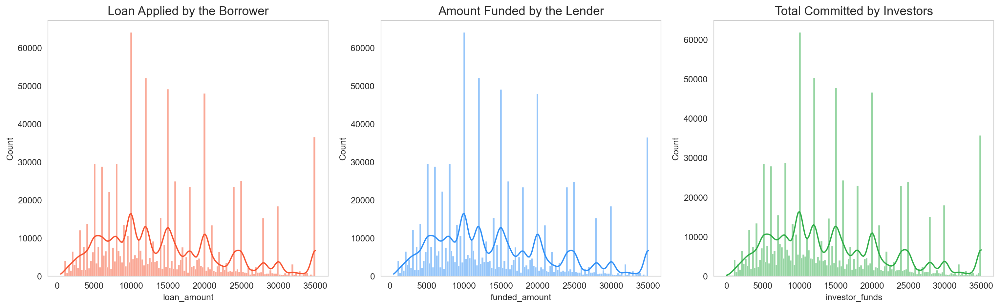
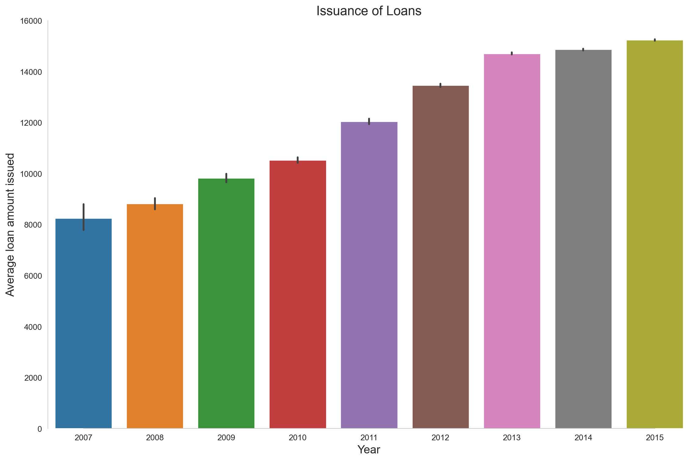
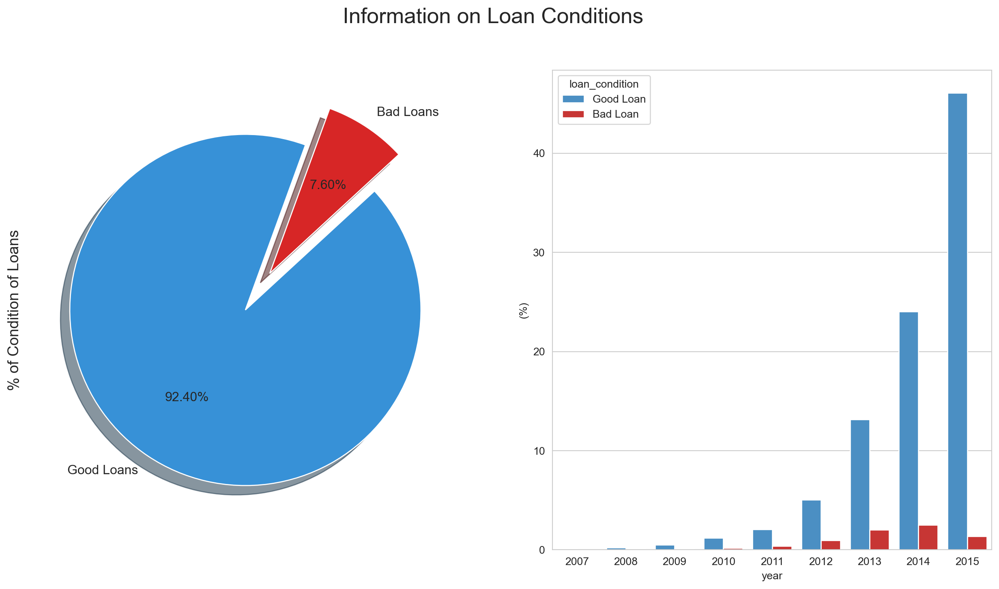
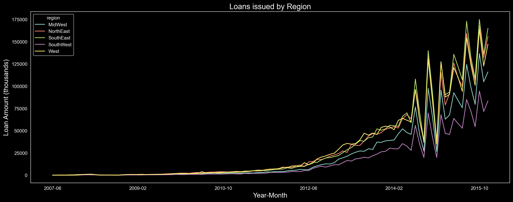
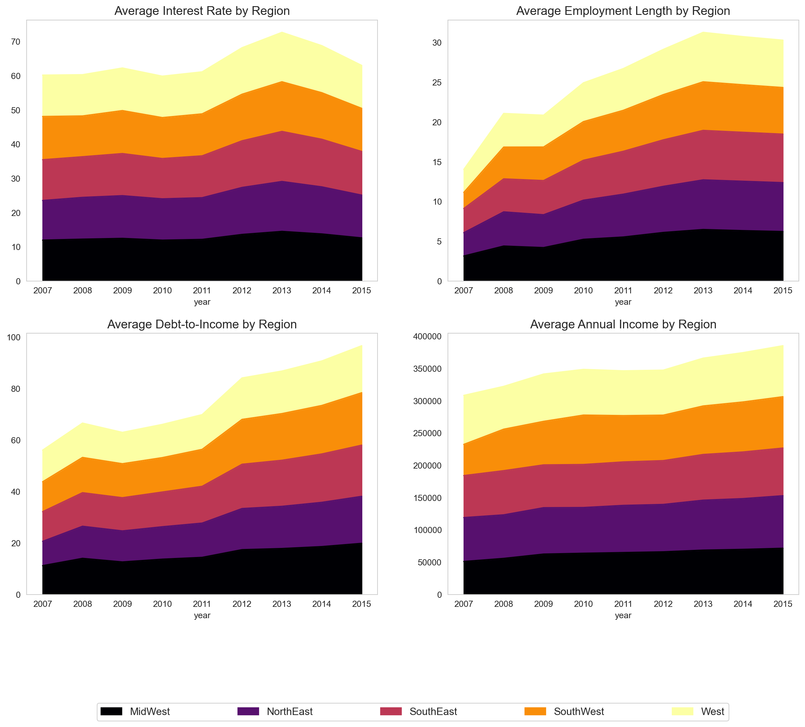
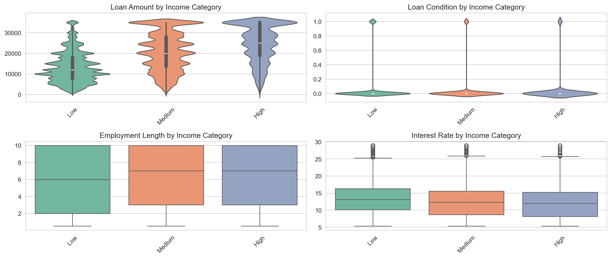
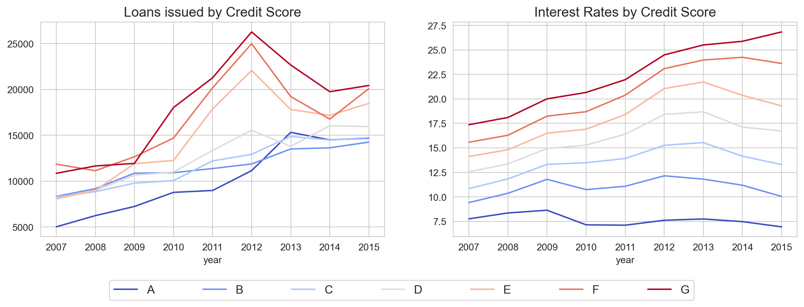
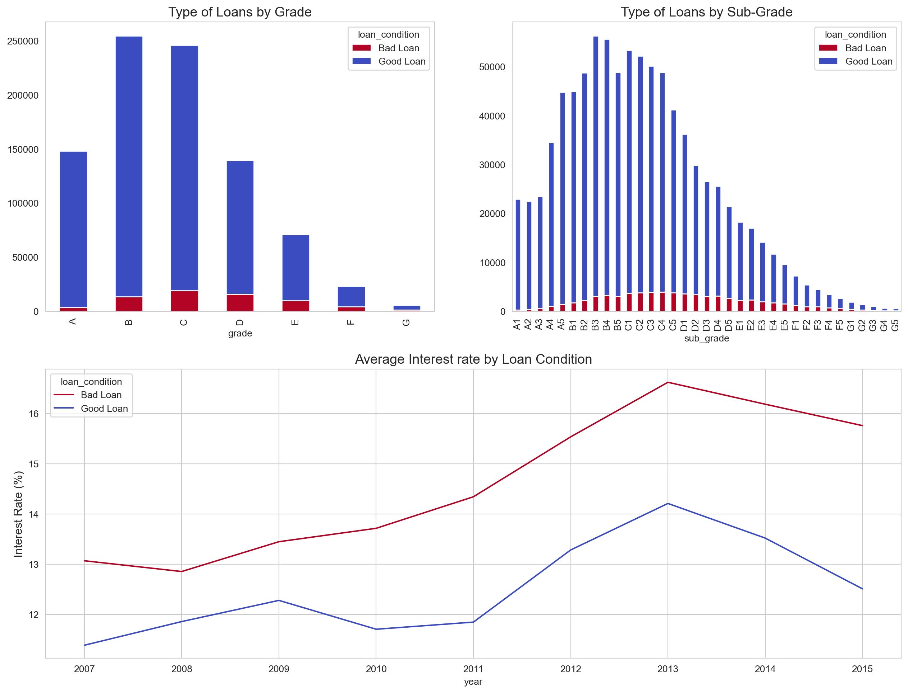
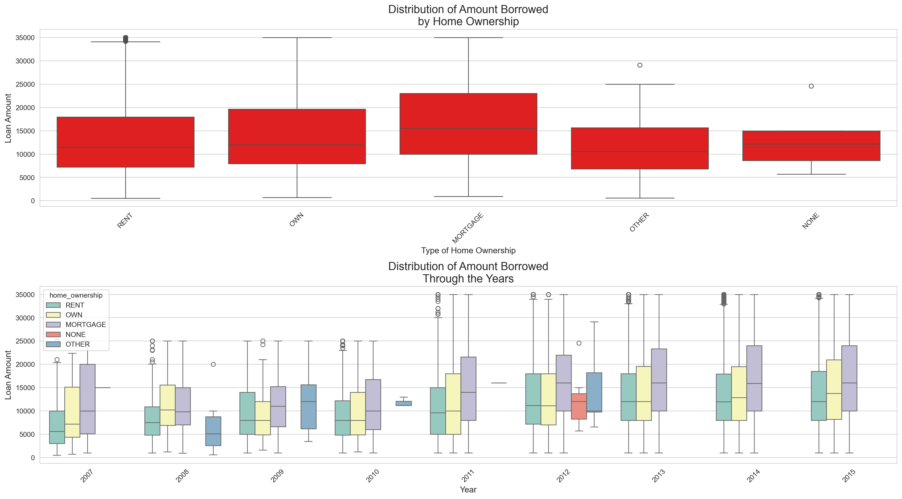
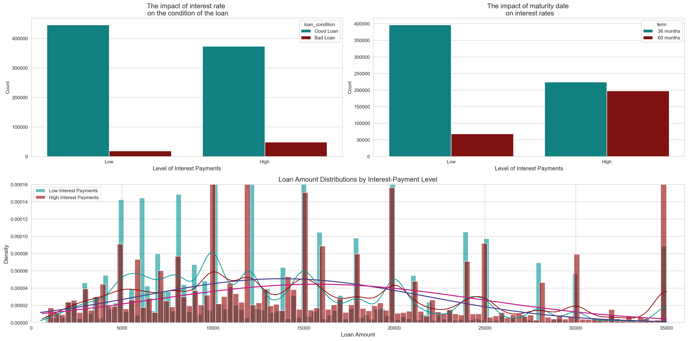

<!DOCTYPE html>
<html xmlns="http://www.w3.org/1999/xhtml" lang="en" xml:lang="en"><head>

<meta charset="utf-8">
<meta name="generator" content="quarto-1.7.31">

<meta name="viewport" content="width=device-width, initial-scale=1.0, user-scalable=yes">


<title>Risk Analysis of Lending Club Loans</title>
<style>
code{white-space: pre-wrap;}
span.smallcaps{font-variant: small-caps;}
div.columns{display: flex; gap: min(4vw, 1.5em);}
div.column{flex: auto; overflow-x: auto;}
div.hanging-indent{margin-left: 1.5em; text-indent: -1.5em;}
ul.task-list{list-style: none;}
ul.task-list li input[type="checkbox"] {
  width: 0.8em;
  margin: 0 0.8em 0.2em -1em; /* quarto-specific, see https://github.com/quarto-dev/quarto-cli/issues/4556 */ 
  vertical-align: middle;
}
/* CSS for syntax highlighting */
html { -webkit-text-size-adjust: 100%; }
pre > code.sourceCode { white-space: pre; position: relative; }
pre > code.sourceCode > span { display: inline-block; line-height: 1.25; }
pre > code.sourceCode > span:empty { height: 1.2em; }
.sourceCode { overflow: visible; }
code.sourceCode > span { color: inherit; text-decoration: inherit; }
div.sourceCode { margin: 1em 0; }
pre.sourceCode { margin: 0; }
@media screen {
div.sourceCode { overflow: auto; }
}
@media print {
pre > code.sourceCode { white-space: pre-wrap; }
pre > code.sourceCode > span { text-indent: -5em; padding-left: 5em; }
}
pre.numberSource code
  { counter-reset: source-line 0; }
pre.numberSource code > span
  { position: relative; left: -4em; counter-increment: source-line; }
pre.numberSource code > span > a:first-child::before
  { content: counter(source-line);
    position: relative; left: -1em; text-align: right; vertical-align: baseline;
    border: none; display: inline-block;
    -webkit-touch-callout: none; -webkit-user-select: none;
    -khtml-user-select: none; -moz-user-select: none;
    -ms-user-select: none; user-select: none;
    padding: 0 4px; width: 4em;
  }
pre.numberSource { margin-left: 3em;  padding-left: 4px; }
div.sourceCode
  {   }
@media screen {
pre > code.sourceCode > span > a:first-child::before { text-decoration: underline; }
}
</style>


<script src="https://cdnjs.cloudflare.com/ajax/libs/jquery/3.5.1/jquery.min.js" integrity="sha512-bLT0Qm9VnAYZDflyKcBaQ2gg0hSYNQrJ8RilYldYQ1FxQYoCLtUjuuRuZo+fjqhx/qtq/1itJ0C2ejDxltZVFg==" crossorigin="anonymous"></script><script src="Risk_Analysis_Lending_Club_files/libs/clipboard/clipboard.min.js"></script>
<script src="Risk_Analysis_Lending_Club_files/libs/quarto-html/quarto.js" type="module"></script>
<script src="Risk_Analysis_Lending_Club_files/libs/quarto-html/tabsets/tabsets.js" type="module"></script>
<script src="Risk_Analysis_Lending_Club_files/libs/quarto-html/popper.min.js"></script>
<script src="Risk_Analysis_Lending_Club_files/libs/quarto-html/tippy.umd.min.js"></script>
<script src="Risk_Analysis_Lending_Club_files/libs/quarto-html/anchor.min.js"></script>
<link href="Risk_Analysis_Lending_Club_files/libs/quarto-html/tippy.css" rel="stylesheet">
<link href="Risk_Analysis_Lending_Club_files/libs/quarto-html/quarto-syntax-highlighting-e1a5c8363afafaef2c763b6775fbf3ca.css" rel="stylesheet" id="quarto-text-highlighting-styles">
<script src="Risk_Analysis_Lending_Club_files/libs/bootstrap/bootstrap.min.js"></script>
<link href="Risk_Analysis_Lending_Club_files/libs/bootstrap/bootstrap-icons.css" rel="stylesheet">
<link href="Risk_Analysis_Lending_Club_files/libs/bootstrap/bootstrap-81267100e462c21b3d6c0d5bf76a3417.min.css" rel="stylesheet" append-hash="true" id="quarto-bootstrap" data-mode="light">
<script src="https://cdnjs.cloudflare.com/ajax/libs/require.js/2.3.6/require.min.js" integrity="sha512-c3Nl8+7g4LMSTdrm621y7kf9v3SDPnhxLNhcjFJbKECVnmZHTdo+IRO05sNLTH/D3vA6u1X32ehoLC7WFVdheg==" crossorigin="anonymous"></script>

<script type="application/javascript">define('jquery', [],function() {return window.jQuery;})</script>
<style>
/* 2rem gutters on the left & right */
.page-layout-custom {
  grid-template-columns: 2rem minmax(0, 1fr) 2rem !important;
}

/* Pad each section */
.page-layout-custom > section {
  padding-left: 2rem !important;
  padding-right: 2rem !important;
}

/* Also pad code/figures */
pre.sourceCode,
.quarto-figure {
  margin-left: 2rem !important;
  margin-right: 2rem !important;
}

/* Center‐align the main title */
#title-block-header {
  grid-column: 2;           /* span the middle column */
  text-align: center;       /* center the H1 text */
  padding-left: 0 !important;  /* already padded by section rules */
  padding-right: 0 !important;
}
</style>


</head>

<body class="fullcontent quarto-light">

<div class="page-layout-custom">  

<header id="title-block-header" class="quarto-title-block default">
<div class="quarto-title">
<h1 class="title"><strong>Risk Analysis of Lending Club Loans</strong></h1>
</div>


<div class="quarto-title-meta">

    
  
    
  </div>
  


</header>


<section id="company-information" class="level2">
<h2 data-anchor-id="company-information"><strong>Company Information:</strong></h2>
<p>Lending Club is a peer to peer lending company based in the United States, in which investors provide funds for potential borrowers and investors earn a profit depending on the risk they take (the borrowers credit score). Lending Club provides the “bridge” between investors and borrowers.</p>
<div id="f3f94f76" class="cell" data-execution_count="1">
<div class="sourceCode cell-code" id="cb1"><pre class="sourceCode python code-with-copy"><code class="sourceCode python"><span id="cb1-1"><a href="#cb1-1" aria-hidden="true" tabindex="-1"></a>filepath <span class="op">=</span> <span class="st">"loan.csv"</span></span></code><button title="Copy to Clipboard" class="code-copy-button"><i class="bi"></i></button></pre></div>
</div>
<pre class="{bash}"><code>pip install seaborn scikit-learn imbalanced-learn chart-studio plotly tensorflow
</code></pre>
<div id="37555537" class="cell" data-execution_count="2">
<div class="sourceCode cell-code" id="cb3"><pre class="sourceCode python code-with-copy"><code class="sourceCode python"><span id="cb3-1"><a href="#cb3-1" aria-hidden="true" tabindex="-1"></a><span class="co"># Import libraries we are going to use for our data analysis.</span></span>
<span id="cb3-2"><a href="#cb3-2" aria-hidden="true" tabindex="-1"></a><span class="im">import</span> pandas <span class="im">as</span> pd</span>
<span id="cb3-3"><a href="#cb3-3" aria-hidden="true" tabindex="-1"></a><span class="im">import</span> numpy <span class="im">as</span> np</span>
<span id="cb3-4"><a href="#cb3-4" aria-hidden="true" tabindex="-1"></a><span class="im">import</span> matplotlib.pyplot <span class="im">as</span> plt</span>
<span id="cb3-5"><a href="#cb3-5" aria-hidden="true" tabindex="-1"></a><span class="im">import</span> seaborn <span class="im">as</span> sns</span>
<span id="cb3-6"><a href="#cb3-6" aria-hidden="true" tabindex="-1"></a>sns.set_style(<span class="st">"white"</span>)</span>
<span id="cb3-7"><a href="#cb3-7" aria-hidden="true" tabindex="-1"></a><span class="im">from</span> sklearn.model_selection <span class="im">import</span> train_test_split</span>
<span id="cb3-8"><a href="#cb3-8" aria-hidden="true" tabindex="-1"></a><span class="im">from</span> sklearn.preprocessing <span class="im">import</span> OneHotEncoder, StandardScaler</span>
<span id="cb3-9"><a href="#cb3-9" aria-hidden="true" tabindex="-1"></a><span class="im">from</span> sklearn.impute <span class="im">import</span> SimpleImputer</span>
<span id="cb3-10"><a href="#cb3-10" aria-hidden="true" tabindex="-1"></a><span class="im">from</span> sklearn.linear_model <span class="im">import</span> LogisticRegression</span>
<span id="cb3-11"><a href="#cb3-11" aria-hidden="true" tabindex="-1"></a><span class="im">from</span> sklearn.tree <span class="im">import</span> DecisionTreeClassifier</span>
<span id="cb3-12"><a href="#cb3-12" aria-hidden="true" tabindex="-1"></a><span class="im">from</span> sklearn.metrics <span class="im">import</span> roc_curve, auc, classification_report, confusion_matrix, precision_recall_curve</span>
<span id="cb3-13"><a href="#cb3-13" aria-hidden="true" tabindex="-1"></a></span>
<span id="cb3-14"><a href="#cb3-14" aria-hidden="true" tabindex="-1"></a><span class="co"># Plotly visualizations (using chart-studio)</span></span>
<span id="cb3-15"><a href="#cb3-15" aria-hidden="true" tabindex="-1"></a><span class="im">from</span> plotly <span class="im">import</span> tools</span>
<span id="cb3-16"><a href="#cb3-16" aria-hidden="true" tabindex="-1"></a><span class="im">from</span> chart_studio <span class="im">import</span> plotly <span class="im">as</span> py</span>
<span id="cb3-17"><a href="#cb3-17" aria-hidden="true" tabindex="-1"></a><span class="im">import</span> plotly.figure_factory <span class="im">as</span> ff</span>
<span id="cb3-18"><a href="#cb3-18" aria-hidden="true" tabindex="-1"></a><span class="im">import</span> plotly.graph_objs <span class="im">as</span> go</span>
<span id="cb3-19"><a href="#cb3-19" aria-hidden="true" tabindex="-1"></a><span class="im">from</span> plotly.offline <span class="im">import</span> download_plotlyjs, init_notebook_mode, plot, iplot</span>
<span id="cb3-20"><a href="#cb3-20" aria-hidden="true" tabindex="-1"></a>init_notebook_mode(connected<span class="op">=</span><span class="va">True</span>)</span>
<span id="cb3-21"><a href="#cb3-21" aria-hidden="true" tabindex="-1"></a></span>
<span id="cb3-22"><a href="#cb3-22" aria-hidden="true" tabindex="-1"></a><span class="co"># For oversampling Library (Dealing with Imbalanced Datasets)</span></span>
<span id="cb3-23"><a href="#cb3-23" aria-hidden="true" tabindex="-1"></a><span class="im">from</span> imblearn.over_sampling <span class="im">import</span> SMOTE</span>
<span id="cb3-24"><a href="#cb3-24" aria-hidden="true" tabindex="-1"></a><span class="im">from</span> collections <span class="im">import</span> Counter</span>
<span id="cb3-25"><a href="#cb3-25" aria-hidden="true" tabindex="-1"></a></span>
<span id="cb3-26"><a href="#cb3-26" aria-hidden="true" tabindex="-1"></a><span class="co"># Other Libraries</span></span>
<span id="cb3-27"><a href="#cb3-27" aria-hidden="true" tabindex="-1"></a><span class="im">import</span> time</span>
<span id="cb3-28"><a href="#cb3-28" aria-hidden="true" tabindex="-1"></a><span class="im">import</span> tensorflow <span class="im">as</span> tf</span>
<span id="cb3-29"><a href="#cb3-29" aria-hidden="true" tabindex="-1"></a></span>
<span id="cb3-30"><a href="#cb3-30" aria-hidden="true" tabindex="-1"></a><span class="op">%</span>matplotlib inline</span>
<span id="cb3-31"><a href="#cb3-31" aria-hidden="true" tabindex="-1"></a></span>
<span id="cb3-32"><a href="#cb3-32" aria-hidden="true" tabindex="-1"></a>sns.set_style(<span class="st">'whitegrid'</span>)</span></code><button title="Copy to Clipboard" class="code-copy-button"><i class="bi"></i></button></pre></div>
<div class="cell-output cell-output-stderr">
<pre><code>/Users/rishigovind/Library/Python/3.9/lib/python/site-packages/urllib3/__init__.py:35: NotOpenSSLWarning:

urllib3 v2 only supports OpenSSL 1.1.1+, currently the 'ssl' module is compiled with 'LibreSSL 2.8.3'. See: https://github.com/urllib3/urllib3/issues/3020
</code></pre>
</div>
<div class="cell-output cell-output-display">
        <script type="text/javascript">
        window.PlotlyConfig = {MathJaxConfig: 'local'};
        if (window.MathJax && window.MathJax.Hub && window.MathJax.Hub.Config) {window.MathJax.Hub.Config({SVG: {font: "STIX-Web"}});}
        </script>
        <script type="module">import "https://cdn.plot.ly/plotly-3.0.1.min"</script>
        
</div>
</div>
<div id="9553a165" class="cell" data-execution_count="3">
<div class="sourceCode cell-code" id="cb5"><pre class="sourceCode python code-with-copy"><code class="sourceCode python"><span id="cb5-1"><a href="#cb5-1" aria-hidden="true" tabindex="-1"></a>df <span class="op">=</span> pd.read_csv(filepath, low_memory<span class="op">=</span><span class="va">False</span>)</span>
<span id="cb5-2"><a href="#cb5-2" aria-hidden="true" tabindex="-1"></a></span>
<span id="cb5-3"><a href="#cb5-3" aria-hidden="true" tabindex="-1"></a><span class="co"># Copy of the dataframe</span></span>
<span id="cb5-4"><a href="#cb5-4" aria-hidden="true" tabindex="-1"></a>original_df <span class="op">=</span> df.copy()</span>
<span id="cb5-5"><a href="#cb5-5" aria-hidden="true" tabindex="-1"></a></span>
<span id="cb5-6"><a href="#cb5-6" aria-hidden="true" tabindex="-1"></a>df.head()</span></code><button title="Copy to Clipboard" class="code-copy-button"><i class="bi"></i></button></pre></div>
<div class="cell-output cell-output-display" data-execution_count="3">
<div>


<table class="dataframe caption-top table table-sm table-striped small" data-quarto-postprocess="true" data-border="1">
<thead>
<tr class="header">
<th data-quarto-table-cell-role="th"></th>
<th data-quarto-table-cell-role="th">id</th>
<th data-quarto-table-cell-role="th">member_id</th>
<th data-quarto-table-cell-role="th">loan_amnt</th>
<th data-quarto-table-cell-role="th">funded_amnt</th>
<th data-quarto-table-cell-role="th">funded_amnt_inv</th>
<th data-quarto-table-cell-role="th">term</th>
<th data-quarto-table-cell-role="th">int_rate</th>
<th data-quarto-table-cell-role="th">installment</th>
<th data-quarto-table-cell-role="th">grade</th>
<th data-quarto-table-cell-role="th">sub_grade</th>
<th data-quarto-table-cell-role="th">...</th>
<th data-quarto-table-cell-role="th">total_bal_il</th>
<th data-quarto-table-cell-role="th">il_util</th>
<th data-quarto-table-cell-role="th">open_rv_12m</th>
<th data-quarto-table-cell-role="th">open_rv_24m</th>
<th data-quarto-table-cell-role="th">max_bal_bc</th>
<th data-quarto-table-cell-role="th">all_util</th>
<th data-quarto-table-cell-role="th">total_rev_hi_lim</th>
<th data-quarto-table-cell-role="th">inq_fi</th>
<th data-quarto-table-cell-role="th">total_cu_tl</th>
<th data-quarto-table-cell-role="th">inq_last_12m</th>
</tr>
</thead>
<tbody>
<tr class="odd">
<td data-quarto-table-cell-role="th">0</td>
<td>1077501</td>
<td>1296599</td>
<td>5000.0</td>
<td>5000.0</td>
<td>4975.0</td>
<td>36 months</td>
<td>10.65</td>
<td>162.87</td>
<td>B</td>
<td>B2</td>
<td>...</td>
<td>NaN</td>
<td>NaN</td>
<td>NaN</td>
<td>NaN</td>
<td>NaN</td>
<td>NaN</td>
<td>NaN</td>
<td>NaN</td>
<td>NaN</td>
<td>NaN</td>
</tr>
<tr class="even">
<td data-quarto-table-cell-role="th">1</td>
<td>1077430</td>
<td>1314167</td>
<td>2500.0</td>
<td>2500.0</td>
<td>2500.0</td>
<td>60 months</td>
<td>15.27</td>
<td>59.83</td>
<td>C</td>
<td>C4</td>
<td>...</td>
<td>NaN</td>
<td>NaN</td>
<td>NaN</td>
<td>NaN</td>
<td>NaN</td>
<td>NaN</td>
<td>NaN</td>
<td>NaN</td>
<td>NaN</td>
<td>NaN</td>
</tr>
<tr class="odd">
<td data-quarto-table-cell-role="th">2</td>
<td>1077175</td>
<td>1313524</td>
<td>2400.0</td>
<td>2400.0</td>
<td>2400.0</td>
<td>36 months</td>
<td>15.96</td>
<td>84.33</td>
<td>C</td>
<td>C5</td>
<td>...</td>
<td>NaN</td>
<td>NaN</td>
<td>NaN</td>
<td>NaN</td>
<td>NaN</td>
<td>NaN</td>
<td>NaN</td>
<td>NaN</td>
<td>NaN</td>
<td>NaN</td>
</tr>
<tr class="even">
<td data-quarto-table-cell-role="th">3</td>
<td>1076863</td>
<td>1277178</td>
<td>10000.0</td>
<td>10000.0</td>
<td>10000.0</td>
<td>36 months</td>
<td>13.49</td>
<td>339.31</td>
<td>C</td>
<td>C1</td>
<td>...</td>
<td>NaN</td>
<td>NaN</td>
<td>NaN</td>
<td>NaN</td>
<td>NaN</td>
<td>NaN</td>
<td>NaN</td>
<td>NaN</td>
<td>NaN</td>
<td>NaN</td>
</tr>
<tr class="odd">
<td data-quarto-table-cell-role="th">4</td>
<td>1075358</td>
<td>1311748</td>
<td>3000.0</td>
<td>3000.0</td>
<td>3000.0</td>
<td>60 months</td>
<td>12.69</td>
<td>67.79</td>
<td>B</td>
<td>B5</td>
<td>...</td>
<td>NaN</td>
<td>NaN</td>
<td>NaN</td>
<td>NaN</td>
<td>NaN</td>
<td>NaN</td>
<td>NaN</td>
<td>NaN</td>
<td>NaN</td>
<td>NaN</td>
</tr>
</tbody>
</table>

<p>5 rows × 74 columns</p>
</div>
</div>
</div>
<div id="76f034bc" class="cell" data-execution_count="4">
<div class="sourceCode cell-code" id="cb6"><pre class="sourceCode python code-with-copy"><code class="sourceCode python"><span id="cb6-1"><a href="#cb6-1" aria-hidden="true" tabindex="-1"></a>df.info()</span></code><button title="Copy to Clipboard" class="code-copy-button"><i class="bi"></i></button></pre></div>
<div class="cell-output cell-output-stdout">
<pre><code>&lt;class 'pandas.core.frame.DataFrame'&gt;
RangeIndex: 887379 entries, 0 to 887378
Data columns (total 74 columns):
 #   Column                       Non-Null Count   Dtype  
---  ------                       --------------   -----  
 0   id                           887379 non-null  int64  
 1   member_id                    887379 non-null  int64  
 2   loan_amnt                    887379 non-null  float64
 3   funded_amnt                  887379 non-null  float64
 4   funded_amnt_inv              887379 non-null  float64
 5   term                         887379 non-null  object 
 6   int_rate                     887379 non-null  float64
 7   installment                  887379 non-null  float64
 8   grade                        887379 non-null  object 
 9   sub_grade                    887379 non-null  object 
 10  emp_title                    835917 non-null  object 
 11  emp_length                   842554 non-null  object 
 12  home_ownership               887379 non-null  object 
 13  annual_inc                   887375 non-null  float64
 14  verification_status          887379 non-null  object 
 15  issue_d                      887379 non-null  object 
 16  loan_status                  887379 non-null  object 
 17  pymnt_plan                   887379 non-null  object 
 18  url                          887379 non-null  object 
 19  desc                         126026 non-null  object 
 20  purpose                      887379 non-null  object 
 21  title                        887226 non-null  object 
 22  zip_code                     887379 non-null  object 
 23  addr_state                   887379 non-null  object 
 24  dti                          887379 non-null  float64
 25  delinq_2yrs                  887350 non-null  float64
 26  earliest_cr_line             887350 non-null  object 
 27  inq_last_6mths               887350 non-null  float64
 28  mths_since_last_delinq       433067 non-null  float64
 29  mths_since_last_record       137053 non-null  float64
 30  open_acc                     887350 non-null  float64
 31  pub_rec                      887350 non-null  float64
 32  revol_bal                    887379 non-null  float64
 33  revol_util                   886877 non-null  float64
 34  total_acc                    887350 non-null  float64
 35  initial_list_status          887379 non-null  object 
 36  out_prncp                    887379 non-null  float64
 37  out_prncp_inv                887379 non-null  float64
 38  total_pymnt                  887379 non-null  float64
 39  total_pymnt_inv              887379 non-null  float64
 40  total_rec_prncp              887379 non-null  float64
 41  total_rec_int                887379 non-null  float64
 42  total_rec_late_fee           887379 non-null  float64
 43  recoveries                   887379 non-null  float64
 44  collection_recovery_fee      887379 non-null  float64
 45  last_pymnt_d                 869720 non-null  object 
 46  last_pymnt_amnt              887379 non-null  float64
 47  next_pymnt_d                 634408 non-null  object 
 48  last_credit_pull_d           887326 non-null  object 
 49  collections_12_mths_ex_med   887234 non-null  float64
 50  mths_since_last_major_derog  221703 non-null  float64
 51  policy_code                  887379 non-null  float64
 52  application_type             887379 non-null  object 
 53  annual_inc_joint             511 non-null     float64
 54  dti_joint                    509 non-null     float64
 55  verification_status_joint    511 non-null     object 
 56  acc_now_delinq               887350 non-null  float64
 57  tot_coll_amt                 817103 non-null  float64
 58  tot_cur_bal                  817103 non-null  float64
 59  open_acc_6m                  21372 non-null   float64
 60  open_il_6m                   21372 non-null   float64
 61  open_il_12m                  21372 non-null   float64
 62  open_il_24m                  21372 non-null   float64
 63  mths_since_rcnt_il           20810 non-null   float64
 64  total_bal_il                 21372 non-null   float64
 65  il_util                      18617 non-null   float64
 66  open_rv_12m                  21372 non-null   float64
 67  open_rv_24m                  21372 non-null   float64
 68  max_bal_bc                   21372 non-null   float64
 69  all_util                     21372 non-null   float64
 70  total_rev_hi_lim             817103 non-null  float64
 71  inq_fi                       21372 non-null   float64
 72  total_cu_tl                  21372 non-null   float64
 73  inq_last_12m                 21372 non-null   float64
dtypes: float64(49), int64(2), object(23)
memory usage: 501.0+ MB</code></pre>
</div>
</div>
<div id="0e44728c" class="cell" data-execution_count="5">
<div class="sourceCode cell-code" id="cb8"><pre class="sourceCode python code-with-copy"><code class="sourceCode python"><span id="cb8-1"><a href="#cb8-1" aria-hidden="true" tabindex="-1"></a><span class="co"># Replace the name of some columns</span></span>
<span id="cb8-2"><a href="#cb8-2" aria-hidden="true" tabindex="-1"></a>df <span class="op">=</span> df.rename(columns<span class="op">=</span>{<span class="st">"loan_amnt"</span>: <span class="st">"loan_amount"</span>, <span class="st">"funded_amnt"</span>: <span class="st">"funded_amount"</span>, <span class="st">"funded_amnt_inv"</span>: <span class="st">"investor_funds"</span>,</span>
<span id="cb8-3"><a href="#cb8-3" aria-hidden="true" tabindex="-1"></a>                       <span class="st">"int_rate"</span>: <span class="st">"interest_rate"</span>, <span class="st">"annual_inc"</span>: <span class="st">"annual_income"</span>})</span>
<span id="cb8-4"><a href="#cb8-4" aria-hidden="true" tabindex="-1"></a></span>
<span id="cb8-5"><a href="#cb8-5" aria-hidden="true" tabindex="-1"></a><span class="co"># Drop irrelevant columns</span></span>
<span id="cb8-6"><a href="#cb8-6" aria-hidden="true" tabindex="-1"></a>df.drop([<span class="st">'id'</span>, <span class="st">'member_id'</span>, <span class="st">'emp_title'</span>, <span class="st">'url'</span>, <span class="st">'desc'</span>, <span class="st">'zip_code'</span>, <span class="st">'title'</span>], axis<span class="op">=</span><span class="dv">1</span>, inplace<span class="op">=</span><span class="va">True</span>)</span></code><button title="Copy to Clipboard" class="code-copy-button"><i class="bi"></i></button></pre></div>
</div>
</section>
<section id="similar-distributions" class="level2">
<h2 data-anchor-id="similar-distributions"><strong>Similar Distributions:</strong></h2>
<p>We will start by exploring the distribution of the loan amounts and see when did the loan amount issued increased significantly.</p>
<section id="what-we-need-to-know" class="level3">
<h3 data-anchor-id="what-we-need-to-know">What we need to know:</h3>
<ul>
<li>Understand what amount was mostly issued to borrowers.</li>
<li>Which year issued the most loans.</li>
<li>The distribution of loan amounts is a multinomial distribution .</li>
</ul>
</section>
<section id="summary" class="level3">
<h3 data-anchor-id="summary"><strong>Summary:</strong></h3>
<ul>
<li>Most of the loans issued were in the range of 10,000 to 20,000 USD.</li>
<li>The year of 2015 was the year were most loans were issued.</li>
<li>Loans were issued in an incremental manner. (Possible due to a recovery in the U.S economy)</li>
<li>The loans applied by potential borrowers, the amount issued to the borrowers and the amount funded by investors are similarly distributed, meaning that it is most likely that qualified borrowers are going to get the loan they had applied for.</li>
</ul>
<div id="c6fb645f" class="cell" data-execution_count="6">
<div class="sourceCode cell-code" id="cb9"><pre class="sourceCode python code-with-copy"><code class="sourceCode python"><span id="cb9-1"><a href="#cb9-1" aria-hidden="true" tabindex="-1"></a>fig, ax <span class="op">=</span> plt.subplots(<span class="dv">1</span>, <span class="dv">3</span>, figsize<span class="op">=</span>(<span class="dv">16</span>,<span class="dv">5</span>))</span>
<span id="cb9-2"><a href="#cb9-2" aria-hidden="true" tabindex="-1"></a></span>
<span id="cb9-3"><a href="#cb9-3" aria-hidden="true" tabindex="-1"></a><span class="co"># Loan applied by the borrower</span></span>
<span id="cb9-4"><a href="#cb9-4" aria-hidden="true" tabindex="-1"></a>sns.histplot(</span>
<span id="cb9-5"><a href="#cb9-5" aria-hidden="true" tabindex="-1"></a>    df[<span class="st">"loan_amount"</span>],</span>
<span id="cb9-6"><a href="#cb9-6" aria-hidden="true" tabindex="-1"></a>    ax<span class="op">=</span>ax[<span class="dv">0</span>],</span>
<span id="cb9-7"><a href="#cb9-7" aria-hidden="true" tabindex="-1"></a>    kde<span class="op">=</span><span class="va">True</span>,</span>
<span id="cb9-8"><a href="#cb9-8" aria-hidden="true" tabindex="-1"></a>    color<span class="op">=</span><span class="st">"#F7522F"</span></span>
<span id="cb9-9"><a href="#cb9-9" aria-hidden="true" tabindex="-1"></a>)</span>
<span id="cb9-10"><a href="#cb9-10" aria-hidden="true" tabindex="-1"></a>ax[<span class="dv">0</span>].set_title(<span class="st">"Loan Applied by the Borrower"</span>, fontsize<span class="op">=</span><span class="dv">14</span>)</span>
<span id="cb9-11"><a href="#cb9-11" aria-hidden="true" tabindex="-1"></a></span>
<span id="cb9-12"><a href="#cb9-12" aria-hidden="true" tabindex="-1"></a><span class="co"># Amount funded by the lender</span></span>
<span id="cb9-13"><a href="#cb9-13" aria-hidden="true" tabindex="-1"></a>sns.histplot(</span>
<span id="cb9-14"><a href="#cb9-14" aria-hidden="true" tabindex="-1"></a>    df[<span class="st">"funded_amount"</span>],</span>
<span id="cb9-15"><a href="#cb9-15" aria-hidden="true" tabindex="-1"></a>    ax<span class="op">=</span>ax[<span class="dv">1</span>],</span>
<span id="cb9-16"><a href="#cb9-16" aria-hidden="true" tabindex="-1"></a>    kde<span class="op">=</span><span class="va">True</span>,</span>
<span id="cb9-17"><a href="#cb9-17" aria-hidden="true" tabindex="-1"></a>    color<span class="op">=</span><span class="st">"#2F8FF7"</span></span>
<span id="cb9-18"><a href="#cb9-18" aria-hidden="true" tabindex="-1"></a>)</span>
<span id="cb9-19"><a href="#cb9-19" aria-hidden="true" tabindex="-1"></a>ax[<span class="dv">1</span>].set_title(<span class="st">"Amount Funded by the Lender"</span>, fontsize<span class="op">=</span><span class="dv">14</span>)</span>
<span id="cb9-20"><a href="#cb9-20" aria-hidden="true" tabindex="-1"></a></span>
<span id="cb9-21"><a href="#cb9-21" aria-hidden="true" tabindex="-1"></a><span class="co"># Total committed by investors</span></span>
<span id="cb9-22"><a href="#cb9-22" aria-hidden="true" tabindex="-1"></a>sns.histplot(</span>
<span id="cb9-23"><a href="#cb9-23" aria-hidden="true" tabindex="-1"></a>    df[<span class="st">"investor_funds"</span>],</span>
<span id="cb9-24"><a href="#cb9-24" aria-hidden="true" tabindex="-1"></a>    ax<span class="op">=</span>ax[<span class="dv">2</span>],</span>
<span id="cb9-25"><a href="#cb9-25" aria-hidden="true" tabindex="-1"></a>    kde<span class="op">=</span><span class="va">True</span>,</span>
<span id="cb9-26"><a href="#cb9-26" aria-hidden="true" tabindex="-1"></a>    color<span class="op">=</span><span class="st">"#2EAD46"</span></span>
<span id="cb9-27"><a href="#cb9-27" aria-hidden="true" tabindex="-1"></a>)</span>
<span id="cb9-28"><a href="#cb9-28" aria-hidden="true" tabindex="-1"></a>ax[<span class="dv">2</span>].set_title(<span class="st">"Total Committed by Investors"</span>, fontsize<span class="op">=</span><span class="dv">14</span>)</span>
<span id="cb9-29"><a href="#cb9-29" aria-hidden="true" tabindex="-1"></a></span>
<span id="cb9-30"><a href="#cb9-30" aria-hidden="true" tabindex="-1"></a><span class="cf">for</span> a <span class="kw">in</span> ax:</span>
<span id="cb9-31"><a href="#cb9-31" aria-hidden="true" tabindex="-1"></a>    a.grid(<span class="va">False</span>)</span>
<span id="cb9-32"><a href="#cb9-32" aria-hidden="true" tabindex="-1"></a></span>
<span id="cb9-33"><a href="#cb9-33" aria-hidden="true" tabindex="-1"></a>plt.tight_layout()</span>
<span id="cb9-34"><a href="#cb9-34" aria-hidden="true" tabindex="-1"></a>plt.show()</span></code><button title="Copy to Clipboard" class="code-copy-button"><i class="bi"></i></button></pre></div>
<div class="cell-output cell-output-display">
<div>
<figure class="figure">
<p></p>
</figure>
</div>
</div>
</div>
<div id="5fa3e904" class="cell" data-execution_count="7">
<div class="sourceCode cell-code" id="cb10"><pre class="sourceCode python code-with-copy"><code class="sourceCode python"><span id="cb10-1"><a href="#cb10-1" aria-hidden="true" tabindex="-1"></a><span class="co"># strip any stray whitespace</span></span>
<span id="cb10-2"><a href="#cb10-2" aria-hidden="true" tabindex="-1"></a>df[<span class="st">'issue_d_clean'</span>] <span class="op">=</span> df[<span class="st">'issue_d'</span>].<span class="bu">str</span>.strip()</span>
<span id="cb10-3"><a href="#cb10-3" aria-hidden="true" tabindex="-1"></a></span>
<span id="cb10-4"><a href="#cb10-4" aria-hidden="true" tabindex="-1"></a><span class="co"># try parsing as abbreviated‐month + 2-digit year</span></span>
<span id="cb10-5"><a href="#cb10-5" aria-hidden="true" tabindex="-1"></a>dt1 <span class="op">=</span> pd.to_datetime(df[<span class="st">'issue_d_clean'</span>],</span>
<span id="cb10-6"><a href="#cb10-6" aria-hidden="true" tabindex="-1"></a>                     <span class="bu">format</span><span class="op">=</span><span class="st">'%b-%y'</span>,</span>
<span id="cb10-7"><a href="#cb10-7" aria-hidden="true" tabindex="-1"></a>                     errors<span class="op">=</span><span class="st">'coerce'</span>)</span>
<span id="cb10-8"><a href="#cb10-8" aria-hidden="true" tabindex="-1"></a></span>
<span id="cb10-9"><a href="#cb10-9" aria-hidden="true" tabindex="-1"></a><span class="co"># try parsing as abbreviated‐month + 4-digit year</span></span>
<span id="cb10-10"><a href="#cb10-10" aria-hidden="true" tabindex="-1"></a>dt2 <span class="op">=</span> pd.to_datetime(df[<span class="st">'issue_d_clean'</span>],</span>
<span id="cb10-11"><a href="#cb10-11" aria-hidden="true" tabindex="-1"></a>                     <span class="bu">format</span><span class="op">=</span><span class="st">'%b-%Y'</span>,</span>
<span id="cb10-12"><a href="#cb10-12" aria-hidden="true" tabindex="-1"></a>                     errors<span class="op">=</span><span class="st">'coerce'</span>)</span>
<span id="cb10-13"><a href="#cb10-13" aria-hidden="true" tabindex="-1"></a></span>
<span id="cb10-14"><a href="#cb10-14" aria-hidden="true" tabindex="-1"></a><span class="co"># combine: prefer dt1, fall back to dt2</span></span>
<span id="cb10-15"><a href="#cb10-15" aria-hidden="true" tabindex="-1"></a>dt <span class="op">=</span> dt1.fillna(dt2)</span>
<span id="cb10-16"><a href="#cb10-16" aria-hidden="true" tabindex="-1"></a></span>
<span id="cb10-17"><a href="#cb10-17" aria-hidden="true" tabindex="-1"></a><span class="co"># if you still get NaT for some rows, you can inspect them:</span></span>
<span id="cb10-18"><a href="#cb10-18" aria-hidden="true" tabindex="-1"></a>missing <span class="op">=</span> df.loc[dt.isna(), <span class="st">'issue_d_clean'</span>].unique()</span>
<span id="cb10-19"><a href="#cb10-19" aria-hidden="true" tabindex="-1"></a><span class="bu">print</span>(<span class="st">"Unparsed patterns:"</span>, missing)</span>
<span id="cb10-20"><a href="#cb10-20" aria-hidden="true" tabindex="-1"></a></span>
<span id="cb10-21"><a href="#cb10-21" aria-hidden="true" tabindex="-1"></a><span class="co"># finally extract the year</span></span>
<span id="cb10-22"><a href="#cb10-22" aria-hidden="true" tabindex="-1"></a>df[<span class="st">'year'</span>] <span class="op">=</span> dt.dt.year</span></code><button title="Copy to Clipboard" class="code-copy-button"><i class="bi"></i></button></pre></div>
<div class="cell-output cell-output-stdout">
<pre><code>Unparsed patterns: []</code></pre>
</div>
</div>
<div id="94813c53" class="cell" data-execution_count="8">
<div class="sourceCode cell-code" id="cb12"><pre class="sourceCode python code-with-copy"><code class="sourceCode python"><span id="cb12-1"><a href="#cb12-1" aria-hidden="true" tabindex="-1"></a><span class="co"># The year of 2015 was the year were the highest amount of loans were issued</span></span>
<span id="cb12-2"><a href="#cb12-2" aria-hidden="true" tabindex="-1"></a><span class="co"># This is an indication that the economy is quiet recovering itself.</span></span>
<span id="cb12-3"><a href="#cb12-3" aria-hidden="true" tabindex="-1"></a>fig, ax <span class="op">=</span> plt.subplots(figsize<span class="op">=</span>(<span class="dv">12</span>,<span class="dv">8</span>))</span>
<span id="cb12-4"><a href="#cb12-4" aria-hidden="true" tabindex="-1"></a>sns.barplot(x<span class="op">=</span><span class="st">'year'</span>, y<span class="op">=</span><span class="st">'loan_amount'</span>, data<span class="op">=</span>df, palette<span class="op">=</span><span class="st">'tab10'</span>, ax<span class="op">=</span>ax)</span>
<span id="cb12-5"><a href="#cb12-5" aria-hidden="true" tabindex="-1"></a></span>
<span id="cb12-6"><a href="#cb12-6" aria-hidden="true" tabindex="-1"></a><span class="co"># Turn off grid lines</span></span>
<span id="cb12-7"><a href="#cb12-7" aria-hidden="true" tabindex="-1"></a>ax.grid(<span class="va">False</span>)</span>
<span id="cb12-8"><a href="#cb12-8" aria-hidden="true" tabindex="-1"></a></span>
<span id="cb12-9"><a href="#cb12-9" aria-hidden="true" tabindex="-1"></a><span class="co"># (Optional) Tidy up spines for a cleaner look</span></span>
<span id="cb12-10"><a href="#cb12-10" aria-hidden="true" tabindex="-1"></a>sns.despine(fig<span class="op">=</span>fig, trim<span class="op">=</span><span class="va">True</span>)</span>
<span id="cb12-11"><a href="#cb12-11" aria-hidden="true" tabindex="-1"></a></span>
<span id="cb12-12"><a href="#cb12-12" aria-hidden="true" tabindex="-1"></a>plt.title(<span class="st">'Issuance of Loans'</span>, fontsize<span class="op">=</span><span class="dv">16</span>)</span>
<span id="cb12-13"><a href="#cb12-13" aria-hidden="true" tabindex="-1"></a>plt.xlabel(<span class="st">'Year'</span>, fontsize<span class="op">=</span><span class="dv">14</span>)</span>
<span id="cb12-14"><a href="#cb12-14" aria-hidden="true" tabindex="-1"></a>plt.ylabel(<span class="st">'Average loan amount issued'</span>, fontsize<span class="op">=</span><span class="dv">14</span>)</span>
<span id="cb12-15"><a href="#cb12-15" aria-hidden="true" tabindex="-1"></a>plt.tight_layout()</span>
<span id="cb12-16"><a href="#cb12-16" aria-hidden="true" tabindex="-1"></a>plt.show()</span></code><button title="Copy to Clipboard" class="code-copy-button"><i class="bi"></i></button></pre></div>
<div class="cell-output cell-output-stderr">
<pre><code>/var/folders/nm/h5zmyl7d0bb9ww_617yygd5c0000gn/T/ipykernel_79479/1520398887.py:4: FutureWarning:


Passing `palette` without assigning `hue` is deprecated and will be removed in v0.14.0. Assign the `x` variable to `hue` and set `legend=False` for the same effect.

</code></pre>
</div>
<div class="cell-output cell-output-display">
<div>
<figure class="figure">
<p></p>
</figure>
</div>
</div>
</div>
</section>
</section>
<section id="good-loans-vs-bad-loans" class="level2">
<h2 data-anchor-id="good-loans-vs-bad-loans"><strong>Good Loans vs Bad Loans:</strong></h2>
<section id="types-of-loans" class="level3">
<h3 data-anchor-id="types-of-loans"><strong>Types of Loans:</strong></h3>
<p>In this section, we will see what is the amount of bad loans Lending Club has declared so far, of course we have to understand that there are still loans that are at a risk of defaulting in the future.</p>
</section>
<section id="what-we-need-to-know-1" class="level3">
<h3 data-anchor-id="what-we-need-to-know-1"><strong>What we need to know:</strong></h3>
<ul>
<li><p>The amount of bad loans could increment as the days pass by, since we still have a great amount of current loans.</p></li>
<li><p>Average annual income is an important key metric for finding possible opportunities of investments in a specific region.</p></li>
</ul>
</section>
<section id="summary-1" class="level3">
<h3 data-anchor-id="summary-1"><strong>Summary:</strong></h3>
<ul>
<li>Currently, bad loans consist 7.60% of total loans but remember that we still have current loans which have the risk of becoming bad loans. (So this percentage is subjected to possible changes.)</li>
<li>The NorthEast region seems to be the most attractive in term of funding loans to borrowers.</li>
<li>The SouthWest and West regions have experienced a slight increase in the “median income” in the past years.</li>
<li>Average interest rates have declined since 2012 but this might explain the increase in the volume of loans.</li>
<li>Employment Length tends to be greater in the regions of the SouthWest and West.</li>
<li>Clients located in the regions of NorthEast and MidWest have not experienced a drastic increase in debt-to-income(dti) as compared to the other regions.</li>
</ul>
<div id="b2969b43" class="cell" data-quarto-private-1="{&quot;key&quot;:&quot;colab&quot;,&quot;value&quot;:{&quot;base_uri&quot;:&quot;https://localhost:8080/&quot;,&quot;height&quot;:429}}" data-execution_count="9">
<div class="sourceCode cell-code" id="cb14"><pre class="sourceCode python code-with-copy"><code class="sourceCode python"><span id="cb14-1"><a href="#cb14-1" aria-hidden="true" tabindex="-1"></a>df[<span class="st">"loan_status"</span>].value_counts()</span></code><button title="Copy to Clipboard" class="code-copy-button"><i class="bi"></i></button></pre></div>
<div class="cell-output cell-output-display" data-execution_count="9">
<pre><code>loan_status
Current                                                601779
Fully Paid                                             207723
Charged Off                                             45248
Late (31-120 days)                                      11591
Issued                                                   8460
In Grace Period                                          6253
Late (16-30 days)                                        2357
Does not meet the credit policy. Status:Fully Paid       1988
Default                                                  1219
Does not meet the credit policy. Status:Charged Off       761
Name: count, dtype: int64</code></pre>
</div>
</div>
<div id="fd073ec4" class="cell" data-execution_count="10">
<div class="sourceCode cell-code" id="cb16"><pre class="sourceCode python code-with-copy"><code class="sourceCode python"><span id="cb16-1"><a href="#cb16-1" aria-hidden="true" tabindex="-1"></a><span class="co"># Determining the loans that are bad from loan_status column</span></span>
<span id="cb16-2"><a href="#cb16-2" aria-hidden="true" tabindex="-1"></a></span>
<span id="cb16-3"><a href="#cb16-3" aria-hidden="true" tabindex="-1"></a>bad_loan <span class="op">=</span> [<span class="st">"Charged Off"</span>, <span class="st">"Default"</span>, <span class="st">"Does not meet the credit policy. Status:Charged Off"</span>, <span class="st">"In Grace Period"</span>,</span>
<span id="cb16-4"><a href="#cb16-4" aria-hidden="true" tabindex="-1"></a>            <span class="st">"Late (16-30 days)"</span>, <span class="st">"Late (31-120 days)"</span>]</span>
<span id="cb16-5"><a href="#cb16-5" aria-hidden="true" tabindex="-1"></a></span>
<span id="cb16-6"><a href="#cb16-6" aria-hidden="true" tabindex="-1"></a></span>
<span id="cb16-7"><a href="#cb16-7" aria-hidden="true" tabindex="-1"></a>df[<span class="st">'loan_condition'</span>] <span class="op">=</span> np.nan</span>
<span id="cb16-8"><a href="#cb16-8" aria-hidden="true" tabindex="-1"></a></span>
<span id="cb16-9"><a href="#cb16-9" aria-hidden="true" tabindex="-1"></a><span class="kw">def</span> loan_condition(status):</span>
<span id="cb16-10"><a href="#cb16-10" aria-hidden="true" tabindex="-1"></a>    <span class="cf">if</span> status <span class="kw">in</span> bad_loan:</span>
<span id="cb16-11"><a href="#cb16-11" aria-hidden="true" tabindex="-1"></a>        <span class="cf">return</span> <span class="st">'Bad Loan'</span></span>
<span id="cb16-12"><a href="#cb16-12" aria-hidden="true" tabindex="-1"></a>    <span class="cf">else</span>:</span>
<span id="cb16-13"><a href="#cb16-13" aria-hidden="true" tabindex="-1"></a>        <span class="cf">return</span> <span class="st">'Good Loan'</span></span>
<span id="cb16-14"><a href="#cb16-14" aria-hidden="true" tabindex="-1"></a></span>
<span id="cb16-15"><a href="#cb16-15" aria-hidden="true" tabindex="-1"></a></span>
<span id="cb16-16"><a href="#cb16-16" aria-hidden="true" tabindex="-1"></a>df[<span class="st">'loan_condition'</span>] <span class="op">=</span> df[<span class="st">'loan_status'</span>].<span class="bu">apply</span>(loan_condition)</span></code><button title="Copy to Clipboard" class="code-copy-button"><i class="bi"></i></button></pre></div>
</div>
<div id="72ee5c1f" class="cell" data-execution_count="11">
<div class="sourceCode cell-code" id="cb17"><pre class="sourceCode python code-with-copy"><code class="sourceCode python"><span id="cb17-1"><a href="#cb17-1" aria-hidden="true" tabindex="-1"></a>f, ax <span class="op">=</span> plt.subplots(<span class="dv">1</span>,<span class="dv">2</span>, figsize<span class="op">=</span>(<span class="dv">16</span>,<span class="dv">8</span>))</span>
<span id="cb17-2"><a href="#cb17-2" aria-hidden="true" tabindex="-1"></a></span>
<span id="cb17-3"><a href="#cb17-3" aria-hidden="true" tabindex="-1"></a>colors <span class="op">=</span> [<span class="st">"#3791D7"</span>, <span class="st">"#D72626"</span>]</span>
<span id="cb17-4"><a href="#cb17-4" aria-hidden="true" tabindex="-1"></a>labels <span class="op">=</span><span class="st">"Good Loans"</span>, <span class="st">"Bad Loans"</span></span>
<span id="cb17-5"><a href="#cb17-5" aria-hidden="true" tabindex="-1"></a></span>
<span id="cb17-6"><a href="#cb17-6" aria-hidden="true" tabindex="-1"></a>plt.suptitle(<span class="st">'Information on Loan Conditions'</span>, fontsize<span class="op">=</span><span class="dv">20</span>)</span>
<span id="cb17-7"><a href="#cb17-7" aria-hidden="true" tabindex="-1"></a></span>
<span id="cb17-8"><a href="#cb17-8" aria-hidden="true" tabindex="-1"></a>df[<span class="st">"loan_condition"</span>].value_counts().plot.pie(explode<span class="op">=</span>[<span class="dv">0</span>,<span class="fl">0.25</span>], autopct<span class="op">=</span><span class="st">'</span><span class="sc">%1.2f%%</span><span class="st">'</span>, ax<span class="op">=</span>ax[<span class="dv">0</span>], shadow<span class="op">=</span><span class="va">True</span>, colors<span class="op">=</span>colors,</span>
<span id="cb17-9"><a href="#cb17-9" aria-hidden="true" tabindex="-1"></a>                                             labels<span class="op">=</span>labels, fontsize<span class="op">=</span><span class="dv">12</span>, startangle<span class="op">=</span><span class="dv">70</span>)</span>
<span id="cb17-10"><a href="#cb17-10" aria-hidden="true" tabindex="-1"></a></span>
<span id="cb17-11"><a href="#cb17-11" aria-hidden="true" tabindex="-1"></a></span>
<span id="cb17-12"><a href="#cb17-12" aria-hidden="true" tabindex="-1"></a><span class="co"># ax[0].set_title('State of Loan', fontsize=16)</span></span>
<span id="cb17-13"><a href="#cb17-13" aria-hidden="true" tabindex="-1"></a>ax[<span class="dv">0</span>].set_ylabel(<span class="st">'</span><span class="sc">% o</span><span class="st">f Condition of Loans'</span>, fontsize<span class="op">=</span><span class="dv">14</span>)</span>
<span id="cb17-14"><a href="#cb17-14" aria-hidden="true" tabindex="-1"></a></span>
<span id="cb17-15"><a href="#cb17-15" aria-hidden="true" tabindex="-1"></a><span class="co"># sns.countplot('loan_condition', data=df, ax=ax[1], palette=colors)</span></span>
<span id="cb17-16"><a href="#cb17-16" aria-hidden="true" tabindex="-1"></a><span class="co"># ax[1].set_title('Condition of Loans', fontsize=20)</span></span>
<span id="cb17-17"><a href="#cb17-17" aria-hidden="true" tabindex="-1"></a><span class="co"># ax[1].set_xticklabels(['Good', 'Bad'], rotation='horizontal')</span></span>
<span id="cb17-18"><a href="#cb17-18" aria-hidden="true" tabindex="-1"></a>palette <span class="op">=</span> [<span class="st">"#3791D7"</span>, <span class="st">"#E01E1B"</span>]</span>
<span id="cb17-19"><a href="#cb17-19" aria-hidden="true" tabindex="-1"></a></span>
<span id="cb17-20"><a href="#cb17-20" aria-hidden="true" tabindex="-1"></a>sns.barplot(x<span class="op">=</span><span class="st">"year"</span>, y<span class="op">=</span><span class="st">"loan_amount"</span>, hue<span class="op">=</span><span class="st">"loan_condition"</span>, data<span class="op">=</span>df, palette<span class="op">=</span>palette, estimator<span class="op">=</span><span class="kw">lambda</span> x: <span class="bu">len</span>(x) <span class="op">/</span> <span class="bu">len</span>(df) <span class="op">*</span> <span class="dv">100</span>)</span>
<span id="cb17-21"><a href="#cb17-21" aria-hidden="true" tabindex="-1"></a>ax[<span class="dv">1</span>].<span class="bu">set</span>(ylabel<span class="op">=</span><span class="st">"(%)"</span>)</span></code><button title="Copy to Clipboard" class="code-copy-button"><i class="bi"></i></button></pre></div>
<div class="cell-output cell-output-display">
<div>
<figure class="figure">
<p></p>
</figure>
</div>
</div>
</div>
</section>
</section>
<section id="loans-issued-by-region" class="level2">
<h2 data-anchor-id="loans-issued-by-region"><strong>Loans Issued by Region</strong></h2>
<p>In this section we want to analyse loans issued by region in order to see region patters that will allow us to understand which region gives Lending Club.</p>
<section id="summary-2" class="level3">
<h3 data-anchor-id="summary-2"><strong>Summary:</strong></h3>
<ul>
<li>SouthEast , West and NorthEast regions had the highest amount lof loans issued.</li>
<li>West and SouthWest had a rapid increase in debt-to-income starting in 2012.</li>
<li>West and SouthWest had a rapid decrease in interest rates (This might explain the increase in debt to income).</li>
</ul>
<div id="179ddb21" class="cell" data-execution_count="12">
<div class="sourceCode cell-code" id="cb18"><pre class="sourceCode python code-with-copy"><code class="sourceCode python"><span id="cb18-1"><a href="#cb18-1" aria-hidden="true" tabindex="-1"></a>df[<span class="st">'addr_state'</span>].unique()</span>
<span id="cb18-2"><a href="#cb18-2" aria-hidden="true" tabindex="-1"></a></span>
<span id="cb18-3"><a href="#cb18-3" aria-hidden="true" tabindex="-1"></a><span class="co"># Make a list with each of the regions by state.</span></span>
<span id="cb18-4"><a href="#cb18-4" aria-hidden="true" tabindex="-1"></a></span>
<span id="cb18-5"><a href="#cb18-5" aria-hidden="true" tabindex="-1"></a>west <span class="op">=</span> [<span class="st">'CA'</span>, <span class="st">'OR'</span>, <span class="st">'UT'</span>,<span class="st">'WA'</span>, <span class="st">'CO'</span>, <span class="st">'NV'</span>, <span class="st">'AK'</span>, <span class="st">'MT'</span>, <span class="st">'HI'</span>, <span class="st">'WY'</span>, <span class="st">'ID'</span>]</span>
<span id="cb18-6"><a href="#cb18-6" aria-hidden="true" tabindex="-1"></a>south_west <span class="op">=</span> [<span class="st">'AZ'</span>, <span class="st">'TX'</span>, <span class="st">'NM'</span>, <span class="st">'OK'</span>]</span>
<span id="cb18-7"><a href="#cb18-7" aria-hidden="true" tabindex="-1"></a>south_east <span class="op">=</span> [<span class="st">'GA'</span>, <span class="st">'NC'</span>, <span class="st">'VA'</span>, <span class="st">'FL'</span>, <span class="st">'KY'</span>, <span class="st">'SC'</span>, <span class="st">'LA'</span>, <span class="st">'AL'</span>, <span class="st">'WV'</span>, <span class="st">'DC'</span>, <span class="st">'AR'</span>, <span class="st">'DE'</span>, <span class="st">'MS'</span>, <span class="st">'TN'</span> ]</span>
<span id="cb18-8"><a href="#cb18-8" aria-hidden="true" tabindex="-1"></a>mid_west <span class="op">=</span> [<span class="st">'IL'</span>, <span class="st">'MO'</span>, <span class="st">'MN'</span>, <span class="st">'OH'</span>, <span class="st">'WI'</span>, <span class="st">'KS'</span>, <span class="st">'MI'</span>, <span class="st">'SD'</span>, <span class="st">'IA'</span>, <span class="st">'NE'</span>, <span class="st">'IN'</span>, <span class="st">'ND'</span>]</span>
<span id="cb18-9"><a href="#cb18-9" aria-hidden="true" tabindex="-1"></a>north_east <span class="op">=</span> [<span class="st">'CT'</span>, <span class="st">'NY'</span>, <span class="st">'PA'</span>, <span class="st">'NJ'</span>, <span class="st">'RI'</span>,<span class="st">'MA'</span>, <span class="st">'MD'</span>, <span class="st">'VT'</span>, <span class="st">'NH'</span>, <span class="st">'ME'</span>]</span>
<span id="cb18-10"><a href="#cb18-10" aria-hidden="true" tabindex="-1"></a></span>
<span id="cb18-11"><a href="#cb18-11" aria-hidden="true" tabindex="-1"></a></span>
<span id="cb18-12"><a href="#cb18-12" aria-hidden="true" tabindex="-1"></a></span>
<span id="cb18-13"><a href="#cb18-13" aria-hidden="true" tabindex="-1"></a>df[<span class="st">'region'</span>] <span class="op">=</span> np.nan</span>
<span id="cb18-14"><a href="#cb18-14" aria-hidden="true" tabindex="-1"></a></span>
<span id="cb18-15"><a href="#cb18-15" aria-hidden="true" tabindex="-1"></a><span class="kw">def</span> finding_regions(state):</span>
<span id="cb18-16"><a href="#cb18-16" aria-hidden="true" tabindex="-1"></a>    <span class="cf">if</span> state <span class="kw">in</span> west:</span>
<span id="cb18-17"><a href="#cb18-17" aria-hidden="true" tabindex="-1"></a>        <span class="cf">return</span> <span class="st">'West'</span></span>
<span id="cb18-18"><a href="#cb18-18" aria-hidden="true" tabindex="-1"></a>    <span class="cf">elif</span> state <span class="kw">in</span> south_west:</span>
<span id="cb18-19"><a href="#cb18-19" aria-hidden="true" tabindex="-1"></a>        <span class="cf">return</span> <span class="st">'SouthWest'</span></span>
<span id="cb18-20"><a href="#cb18-20" aria-hidden="true" tabindex="-1"></a>    <span class="cf">elif</span> state <span class="kw">in</span> south_east:</span>
<span id="cb18-21"><a href="#cb18-21" aria-hidden="true" tabindex="-1"></a>        <span class="cf">return</span> <span class="st">'SouthEast'</span></span>
<span id="cb18-22"><a href="#cb18-22" aria-hidden="true" tabindex="-1"></a>    <span class="cf">elif</span> state <span class="kw">in</span> mid_west:</span>
<span id="cb18-23"><a href="#cb18-23" aria-hidden="true" tabindex="-1"></a>        <span class="cf">return</span> <span class="st">'MidWest'</span></span>
<span id="cb18-24"><a href="#cb18-24" aria-hidden="true" tabindex="-1"></a>    <span class="cf">elif</span> state <span class="kw">in</span> north_east:</span>
<span id="cb18-25"><a href="#cb18-25" aria-hidden="true" tabindex="-1"></a>        <span class="cf">return</span> <span class="st">'NorthEast'</span></span>
<span id="cb18-26"><a href="#cb18-26" aria-hidden="true" tabindex="-1"></a></span>
<span id="cb18-27"><a href="#cb18-27" aria-hidden="true" tabindex="-1"></a></span>
<span id="cb18-28"><a href="#cb18-28" aria-hidden="true" tabindex="-1"></a></span>
<span id="cb18-29"><a href="#cb18-29" aria-hidden="true" tabindex="-1"></a>df[<span class="st">'region'</span>] <span class="op">=</span> df[<span class="st">'addr_state'</span>].<span class="bu">apply</span>(finding_regions)</span></code><button title="Copy to Clipboard" class="code-copy-button"><i class="bi"></i></button></pre></div>
</div>
<div id="aa931c7c" class="cell" data-execution_count="13">
<div class="sourceCode cell-code" id="cb19"><pre class="sourceCode python code-with-copy"><code class="sourceCode python"><span id="cb19-1"><a href="#cb19-1" aria-hidden="true" tabindex="-1"></a><span class="co"># This code will take the current date and transform it into a year-month format</span></span>
<span id="cb19-2"><a href="#cb19-2" aria-hidden="true" tabindex="-1"></a>df[<span class="st">'issue_period'</span>] <span class="op">=</span> (</span>
<span id="cb19-3"><a href="#cb19-3" aria-hidden="true" tabindex="-1"></a>    pd.to_datetime(df[<span class="st">'issue_d'</span>].<span class="bu">str</span>.strip(),</span>
<span id="cb19-4"><a href="#cb19-4" aria-hidden="true" tabindex="-1"></a>                   <span class="bu">format</span><span class="op">=</span><span class="st">'%b-%Y'</span>,    <span class="co"># e.g. "Dec-2011"</span></span>
<span id="cb19-5"><a href="#cb19-5" aria-hidden="true" tabindex="-1"></a>                   errors<span class="op">=</span><span class="st">'coerce'</span>)   <span class="co"># (should be none, but just in case)</span></span>
<span id="cb19-6"><a href="#cb19-6" aria-hidden="true" tabindex="-1"></a>      .dt.to_period(<span class="st">'M'</span>)</span>
<span id="cb19-7"><a href="#cb19-7" aria-hidden="true" tabindex="-1"></a>)</span></code><button title="Copy to Clipboard" class="code-copy-button"><i class="bi"></i></button></pre></div>
</div>
<div id="775dfa40" class="cell" data-execution_count="14">
<div class="sourceCode cell-code" id="cb20"><pre class="sourceCode python code-with-copy"><code class="sourceCode python"><span id="cb20-1"><a href="#cb20-1" aria-hidden="true" tabindex="-1"></a>good <span class="op">=</span> df.dropna(subset<span class="op">=</span>[<span class="st">'issue_period'</span>])</span>
<span id="cb20-2"><a href="#cb20-2" aria-hidden="true" tabindex="-1"></a></span>
<span id="cb20-3"><a href="#cb20-3" aria-hidden="true" tabindex="-1"></a><span class="co"># Sum loan_amount (in thousands) per month &amp; region</span></span>
<span id="cb20-4"><a href="#cb20-4" aria-hidden="true" tabindex="-1"></a>df_dates <span class="op">=</span> (</span>
<span id="cb20-5"><a href="#cb20-5" aria-hidden="true" tabindex="-1"></a>    good</span>
<span id="cb20-6"><a href="#cb20-6" aria-hidden="true" tabindex="-1"></a>    .groupby([<span class="st">'issue_period'</span>,<span class="st">'region'</span>], as_index<span class="op">=</span><span class="va">False</span>)[<span class="st">'loan_amount'</span>]</span>
<span id="cb20-7"><a href="#cb20-7" aria-hidden="true" tabindex="-1"></a>    .<span class="bu">sum</span>()</span>
<span id="cb20-8"><a href="#cb20-8" aria-hidden="true" tabindex="-1"></a>)</span>
<span id="cb20-9"><a href="#cb20-9" aria-hidden="true" tabindex="-1"></a>df_dates[<span class="st">'loan_amount'</span>] <span class="op">/=</span> <span class="dv">1_000</span></span>
<span id="cb20-10"><a href="#cb20-10" aria-hidden="true" tabindex="-1"></a></span>
<span id="cb20-11"><a href="#cb20-11" aria-hidden="true" tabindex="-1"></a><span class="co"># Rename for clarity (and plotting)</span></span>
<span id="cb20-12"><a href="#cb20-12" aria-hidden="true" tabindex="-1"></a>df_dates.rename(columns<span class="op">=</span>{<span class="st">'issue_period'</span>:<span class="st">'year_month'</span>}, inplace<span class="op">=</span><span class="va">True</span>)</span>
<span id="cb20-13"><a href="#cb20-13" aria-hidden="true" tabindex="-1"></a></span>
<span id="cb20-14"><a href="#cb20-14" aria-hidden="true" tabindex="-1"></a><span class="bu">print</span>(df_dates.head())</span></code><button title="Copy to Clipboard" class="code-copy-button"><i class="bi"></i></button></pre></div>
<div class="cell-output cell-output-stdout">
<pre><code>  year_month     region  loan_amount
0    2007-06    MidWest         6.90
1    2007-06  NorthEast        67.70
2    2007-06  SouthEast        13.45
3    2007-06  SouthWest         1.20
4    2007-06       West         2.60</code></pre>
</div>
</div>
<div id="84e7e0af" class="cell" data-execution_count="15">
<div class="sourceCode cell-code" id="cb22"><pre class="sourceCode python code-with-copy"><code class="sourceCode python"><span id="cb22-1"><a href="#cb22-1" aria-hidden="true" tabindex="-1"></a>pivot <span class="op">=</span> df_dates.pivot_table(</span>
<span id="cb22-2"><a href="#cb22-2" aria-hidden="true" tabindex="-1"></a>    index<span class="op">=</span><span class="st">'year_month'</span>,</span>
<span id="cb22-3"><a href="#cb22-3" aria-hidden="true" tabindex="-1"></a>    columns<span class="op">=</span><span class="st">'region'</span>,</span>
<span id="cb22-4"><a href="#cb22-4" aria-hidden="true" tabindex="-1"></a>    values<span class="op">=</span><span class="st">'loan_amount'</span>,</span>
<span id="cb22-5"><a href="#cb22-5" aria-hidden="true" tabindex="-1"></a>    aggfunc<span class="op">=</span><span class="st">'sum'</span></span>
<span id="cb22-6"><a href="#cb22-6" aria-hidden="true" tabindex="-1"></a>).fillna(<span class="dv">0</span>)</span>
<span id="cb22-7"><a href="#cb22-7" aria-hidden="true" tabindex="-1"></a></span>
<span id="cb22-8"><a href="#cb22-8" aria-hidden="true" tabindex="-1"></a><span class="co"># convert PeriodIndex to string for nice ticks</span></span>
<span id="cb22-9"><a href="#cb22-9" aria-hidden="true" tabindex="-1"></a>pivot.index <span class="op">=</span> pivot.index.astype(<span class="bu">str</span>)</span>
<span id="cb22-10"><a href="#cb22-10" aria-hidden="true" tabindex="-1"></a></span>
<span id="cb22-11"><a href="#cb22-11" aria-hidden="true" tabindex="-1"></a>plt.style.use(<span class="st">'dark_background'</span>)</span>
<span id="cb22-12"><a href="#cb22-12" aria-hidden="true" tabindex="-1"></a>ax <span class="op">=</span> pivot.plot(</span>
<span id="cb22-13"><a href="#cb22-13" aria-hidden="true" tabindex="-1"></a>    figsize<span class="op">=</span>(<span class="dv">15</span>,<span class="dv">6</span>),</span>
<span id="cb22-14"><a href="#cb22-14" aria-hidden="true" tabindex="-1"></a>    colormap<span class="op">=</span>plt.cm.Set3,</span>
<span id="cb22-15"><a href="#cb22-15" aria-hidden="true" tabindex="-1"></a>    grid<span class="op">=</span><span class="va">False</span>       <span class="co"># ⟵ turns grid off</span></span>
<span id="cb22-16"><a href="#cb22-16" aria-hidden="true" tabindex="-1"></a>)</span>
<span id="cb22-17"><a href="#cb22-17" aria-hidden="true" tabindex="-1"></a>ax.set_title(<span class="st">'Loans issued by Region'</span>, fontsize<span class="op">=</span><span class="dv">16</span>)</span>
<span id="cb22-18"><a href="#cb22-18" aria-hidden="true" tabindex="-1"></a>ax.set_xlabel(<span class="st">'Year-Month'</span>, fontsize<span class="op">=</span><span class="dv">14</span>)</span>
<span id="cb22-19"><a href="#cb22-19" aria-hidden="true" tabindex="-1"></a>ax.set_ylabel(<span class="st">'Loan Amount (thousands)'</span>, fontsize<span class="op">=</span><span class="dv">14</span>)</span>
<span id="cb22-20"><a href="#cb22-20" aria-hidden="true" tabindex="-1"></a>plt.tight_layout()</span>
<span id="cb22-21"><a href="#cb22-21" aria-hidden="true" tabindex="-1"></a>plt.show()</span></code><button title="Copy to Clipboard" class="code-copy-button"><i class="bi"></i></button></pre></div>
<div class="cell-output cell-output-display">
<div>
<figure class="figure">
<p></p>
</figure>
</div>
</div>
</div>
<div id="bf277e33" class="cell" data-execution_count="16">
<div class="sourceCode cell-code" id="cb23"><pre class="sourceCode python code-with-copy"><code class="sourceCode python"><span id="cb23-1"><a href="#cb23-1" aria-hidden="true" tabindex="-1"></a>employment_length <span class="op">=</span> [<span class="st">'10+ years'</span>, <span class="st">'&lt; 1 year'</span>, <span class="st">'1 year'</span>, <span class="st">'3 years'</span>, <span class="st">'8 years'</span>, <span class="st">'9 years'</span>,</span>
<span id="cb23-2"><a href="#cb23-2" aria-hidden="true" tabindex="-1"></a>                    <span class="st">'4 years'</span>, <span class="st">'5 years'</span>, <span class="st">'6 years'</span>, <span class="st">'2 years'</span>, <span class="st">'7 years'</span>, <span class="st">'n/a'</span>]</span>
<span id="cb23-3"><a href="#cb23-3" aria-hidden="true" tabindex="-1"></a></span>
<span id="cb23-4"><a href="#cb23-4" aria-hidden="true" tabindex="-1"></a><span class="co"># Create a new column and convert emp_length to integers.</span></span>
<span id="cb23-5"><a href="#cb23-5" aria-hidden="true" tabindex="-1"></a></span>
<span id="cb23-6"><a href="#cb23-6" aria-hidden="true" tabindex="-1"></a>lst <span class="op">=</span> [df]</span>
<span id="cb23-7"><a href="#cb23-7" aria-hidden="true" tabindex="-1"></a>df[<span class="st">'emp_length_int'</span>] <span class="op">=</span> np.nan</span>
<span id="cb23-8"><a href="#cb23-8" aria-hidden="true" tabindex="-1"></a></span>
<span id="cb23-9"><a href="#cb23-9" aria-hidden="true" tabindex="-1"></a><span class="cf">for</span> col <span class="kw">in</span> lst:</span>
<span id="cb23-10"><a href="#cb23-10" aria-hidden="true" tabindex="-1"></a>    col.loc[col[<span class="st">'emp_length'</span>] <span class="op">==</span> <span class="st">'10+ years'</span>, <span class="st">"emp_length_int"</span>] <span class="op">=</span> <span class="dv">10</span></span>
<span id="cb23-11"><a href="#cb23-11" aria-hidden="true" tabindex="-1"></a>    col.loc[col[<span class="st">'emp_length'</span>] <span class="op">==</span> <span class="st">'9 years'</span>, <span class="st">"emp_length_int"</span>] <span class="op">=</span> <span class="dv">9</span></span>
<span id="cb23-12"><a href="#cb23-12" aria-hidden="true" tabindex="-1"></a>    col.loc[col[<span class="st">'emp_length'</span>] <span class="op">==</span> <span class="st">'8 years'</span>, <span class="st">"emp_length_int"</span>] <span class="op">=</span> <span class="dv">8</span></span>
<span id="cb23-13"><a href="#cb23-13" aria-hidden="true" tabindex="-1"></a>    col.loc[col[<span class="st">'emp_length'</span>] <span class="op">==</span> <span class="st">'7 years'</span>, <span class="st">"emp_length_int"</span>] <span class="op">=</span> <span class="dv">7</span></span>
<span id="cb23-14"><a href="#cb23-14" aria-hidden="true" tabindex="-1"></a>    col.loc[col[<span class="st">'emp_length'</span>] <span class="op">==</span> <span class="st">'6 years'</span>, <span class="st">"emp_length_int"</span>] <span class="op">=</span> <span class="dv">6</span></span>
<span id="cb23-15"><a href="#cb23-15" aria-hidden="true" tabindex="-1"></a>    col.loc[col[<span class="st">'emp_length'</span>] <span class="op">==</span> <span class="st">'5 years'</span>, <span class="st">"emp_length_int"</span>] <span class="op">=</span> <span class="dv">5</span></span>
<span id="cb23-16"><a href="#cb23-16" aria-hidden="true" tabindex="-1"></a>    col.loc[col[<span class="st">'emp_length'</span>] <span class="op">==</span> <span class="st">'4 years'</span>, <span class="st">"emp_length_int"</span>] <span class="op">=</span> <span class="dv">4</span></span>
<span id="cb23-17"><a href="#cb23-17" aria-hidden="true" tabindex="-1"></a>    col.loc[col[<span class="st">'emp_length'</span>] <span class="op">==</span> <span class="st">'3 years'</span>, <span class="st">"emp_length_int"</span>] <span class="op">=</span> <span class="dv">3</span></span>
<span id="cb23-18"><a href="#cb23-18" aria-hidden="true" tabindex="-1"></a>    col.loc[col[<span class="st">'emp_length'</span>] <span class="op">==</span> <span class="st">'2 years'</span>, <span class="st">"emp_length_int"</span>] <span class="op">=</span> <span class="dv">2</span></span>
<span id="cb23-19"><a href="#cb23-19" aria-hidden="true" tabindex="-1"></a>    col.loc[col[<span class="st">'emp_length'</span>] <span class="op">==</span> <span class="st">'1 year'</span>, <span class="st">"emp_length_int"</span>] <span class="op">=</span> <span class="dv">1</span></span>
<span id="cb23-20"><a href="#cb23-20" aria-hidden="true" tabindex="-1"></a>    col.loc[col[<span class="st">'emp_length'</span>] <span class="op">==</span> <span class="st">'&lt; 1 year'</span>, <span class="st">"emp_length_int"</span>] <span class="op">=</span> <span class="fl">0.5</span></span>
<span id="cb23-21"><a href="#cb23-21" aria-hidden="true" tabindex="-1"></a>    col.loc[col[<span class="st">'emp_length'</span>] <span class="op">==</span> <span class="st">'n/a'</span>, <span class="st">"emp_length_int"</span>] <span class="op">=</span> <span class="dv">0</span></span></code><button title="Copy to Clipboard" class="code-copy-button"><i class="bi"></i></button></pre></div>
</div>
<div id="b291da8e" class="cell" data-execution_count="17">
<div class="sourceCode cell-code" id="cb24"><pre class="sourceCode python code-with-copy"><code class="sourceCode python"><span id="cb24-1"><a href="#cb24-1" aria-hidden="true" tabindex="-1"></a><span class="co"># Loan issued by Region and by Credit Score grade</span></span>
<span id="cb24-2"><a href="#cb24-2" aria-hidden="true" tabindex="-1"></a></span>
<span id="cb24-3"><a href="#cb24-3" aria-hidden="true" tabindex="-1"></a></span>
<span id="cb24-4"><a href="#cb24-4" aria-hidden="true" tabindex="-1"></a>sns.set_style(<span class="st">'whitegrid'</span>)</span>
<span id="cb24-5"><a href="#cb24-5" aria-hidden="true" tabindex="-1"></a></span>
<span id="cb24-6"><a href="#cb24-6" aria-hidden="true" tabindex="-1"></a>f, ((ax1, ax2), (ax3, ax4)) <span class="op">=</span> plt.subplots(<span class="dv">2</span>, <span class="dv">2</span>)</span>
<span id="cb24-7"><a href="#cb24-7" aria-hidden="true" tabindex="-1"></a>cmap <span class="op">=</span> plt.cm.inferno</span>
<span id="cb24-8"><a href="#cb24-8" aria-hidden="true" tabindex="-1"></a></span>
<span id="cb24-9"><a href="#cb24-9" aria-hidden="true" tabindex="-1"></a>by_interest_rate <span class="op">=</span> df.groupby([<span class="st">'year'</span>, <span class="st">'region'</span>]).interest_rate.mean()</span>
<span id="cb24-10"><a href="#cb24-10" aria-hidden="true" tabindex="-1"></a>by_interest_rate.unstack().plot(kind<span class="op">=</span><span class="st">'area'</span>, stacked<span class="op">=</span><span class="va">True</span>, colormap<span class="op">=</span>cmap, grid<span class="op">=</span><span class="va">False</span>, legend<span class="op">=</span><span class="va">False</span>, ax<span class="op">=</span>ax1, figsize<span class="op">=</span>(<span class="dv">16</span>,<span class="dv">12</span>))</span>
<span id="cb24-11"><a href="#cb24-11" aria-hidden="true" tabindex="-1"></a>ax1.set_title(<span class="st">'Average Interest Rate by Region'</span>, fontsize<span class="op">=</span><span class="dv">14</span>)</span>
<span id="cb24-12"><a href="#cb24-12" aria-hidden="true" tabindex="-1"></a></span>
<span id="cb24-13"><a href="#cb24-13" aria-hidden="true" tabindex="-1"></a></span>
<span id="cb24-14"><a href="#cb24-14" aria-hidden="true" tabindex="-1"></a>by_employment_length <span class="op">=</span> df.groupby([<span class="st">'year'</span>, <span class="st">'region'</span>]).emp_length_int.mean()</span>
<span id="cb24-15"><a href="#cb24-15" aria-hidden="true" tabindex="-1"></a>by_employment_length.unstack().plot(kind<span class="op">=</span><span class="st">'area'</span>, stacked<span class="op">=</span><span class="va">True</span>, colormap<span class="op">=</span>cmap, grid<span class="op">=</span><span class="va">False</span>, legend<span class="op">=</span><span class="va">False</span>, ax<span class="op">=</span>ax2, figsize<span class="op">=</span>(<span class="dv">16</span>,<span class="dv">12</span>))</span>
<span id="cb24-16"><a href="#cb24-16" aria-hidden="true" tabindex="-1"></a>ax2.set_title(<span class="st">'Average Employment Length by Region'</span>, fontsize<span class="op">=</span><span class="dv">14</span>)</span>
<span id="cb24-17"><a href="#cb24-17" aria-hidden="true" tabindex="-1"></a><span class="co"># plt.xlabel('Year of Issuance', fontsize=14)</span></span>
<span id="cb24-18"><a href="#cb24-18" aria-hidden="true" tabindex="-1"></a></span>
<span id="cb24-19"><a href="#cb24-19" aria-hidden="true" tabindex="-1"></a>by_dti <span class="op">=</span> df.groupby([<span class="st">'year'</span>, <span class="st">'region'</span>]).dti.mean()</span>
<span id="cb24-20"><a href="#cb24-20" aria-hidden="true" tabindex="-1"></a>by_dti.unstack().plot(kind<span class="op">=</span><span class="st">'area'</span>, stacked<span class="op">=</span><span class="va">True</span>, colormap<span class="op">=</span>cmap, grid<span class="op">=</span><span class="va">False</span>, legend<span class="op">=</span><span class="va">False</span>, ax<span class="op">=</span>ax3, figsize<span class="op">=</span>(<span class="dv">16</span>,<span class="dv">12</span>))</span>
<span id="cb24-21"><a href="#cb24-21" aria-hidden="true" tabindex="-1"></a>ax3.set_title(<span class="st">'Average Debt-to-Income by Region'</span>, fontsize<span class="op">=</span><span class="dv">14</span>)</span>
<span id="cb24-22"><a href="#cb24-22" aria-hidden="true" tabindex="-1"></a></span>
<span id="cb24-23"><a href="#cb24-23" aria-hidden="true" tabindex="-1"></a>by_income <span class="op">=</span> df.groupby([<span class="st">'year'</span>, <span class="st">'region'</span>]).annual_income.mean()</span>
<span id="cb24-24"><a href="#cb24-24" aria-hidden="true" tabindex="-1"></a>by_income.unstack().plot(kind<span class="op">=</span><span class="st">'area'</span>, stacked<span class="op">=</span><span class="va">True</span>, colormap<span class="op">=</span>cmap, grid<span class="op">=</span><span class="va">False</span>, ax<span class="op">=</span>ax4, figsize<span class="op">=</span>(<span class="dv">16</span>,<span class="dv">12</span>))</span>
<span id="cb24-25"><a href="#cb24-25" aria-hidden="true" tabindex="-1"></a>ax4.set_title(<span class="st">'Average Annual Income by Region'</span>, fontsize<span class="op">=</span><span class="dv">14</span>)</span>
<span id="cb24-26"><a href="#cb24-26" aria-hidden="true" tabindex="-1"></a>ax4.legend(bbox_to_anchor<span class="op">=</span>(<span class="op">-</span><span class="fl">1.0</span>, <span class="op">-</span><span class="fl">0.5</span>, <span class="fl">1.8</span>, <span class="fl">0.1</span>), loc<span class="op">=</span><span class="dv">10</span>,prop<span class="op">=</span>{<span class="st">'size'</span>:<span class="dv">12</span>},</span>
<span id="cb24-27"><a href="#cb24-27" aria-hidden="true" tabindex="-1"></a>           ncol<span class="op">=</span><span class="dv">5</span>, mode<span class="op">=</span><span class="st">"expand"</span>, borderaxespad<span class="op">=</span><span class="fl">0.</span>)</span></code><button title="Copy to Clipboard" class="code-copy-button"><i class="bi"></i></button></pre></div>
<div class="cell-output cell-output-display">
<div>
<figure class="figure">
<p></p>
</figure>
</div>
</div>
</div>
</section>
</section>
<section id="a-deeper-look-into-bad-loans" class="level2">
<h2 data-anchor-id="a-deeper-look-into-bad-loans"><strong>A Deeper Look into Bad Loans:</strong></h2>
<section id="what-we-need-to-know-2" class="level3">
<h3 data-anchor-id="what-we-need-to-know-2"><strong>What we need to know:</strong></h3>
<ul>
<li>The number of loans that were classified as bad loans for each region by its loan status. (This will be shown in a dataframe below.)</li>
<li>This won’t give us the exact reasons why a loan is categorized as a bad loan (other variables that might have influence the condition of the loan) but it will give us a deeper insight on the level of risk in a particular region.</li>
</ul>
</section>
<section id="summary-3" class="level3">
<h3 data-anchor-id="summary-3"><strong>Summary:</strong></h3>
<ul>
<li>The regions of the West and SouthEast had a higher percentage in most of the b “bad” loan statuses.</li>
<li>The NorthEast region had a higher percentage in Grace Period and Does not meet Credit Policy loan status. However, both of these are not considered as bad as default for instance.</li>
<li>Based on this small and brief summary we can conclude that the West and SouthEast regions have the most undesirable loan status, but just by a slightly higher percentage compared to the NorthEast region.</li>
<li>Again, this does not tell us what causes a loan to be a bad loan , but it gives us some idea about the level of risk within the regions across the United States.</li>
</ul>
<div id="ca4d2fdc" class="cell" data-execution_count="18">
<div class="sourceCode cell-code" id="cb25"><pre class="sourceCode python code-with-copy"><code class="sourceCode python"><span id="cb25-1"><a href="#cb25-1" aria-hidden="true" tabindex="-1"></a><span class="co"># We have 67429 loans categorized as bad loans</span></span>
<span id="cb25-2"><a href="#cb25-2" aria-hidden="true" tabindex="-1"></a>badloans_df <span class="op">=</span> df.loc[df[<span class="st">"loan_condition"</span>] <span class="op">==</span> <span class="st">"Bad Loan"</span>]</span>
<span id="cb25-3"><a href="#cb25-3" aria-hidden="true" tabindex="-1"></a></span>
<span id="cb25-4"><a href="#cb25-4" aria-hidden="true" tabindex="-1"></a><span class="co"># loan_status cross</span></span>
<span id="cb25-5"><a href="#cb25-5" aria-hidden="true" tabindex="-1"></a>loan_status_cross <span class="op">=</span> pd.crosstab(badloans_df[<span class="st">'region'</span>], badloans_df[<span class="st">'loan_status'</span>]).<span class="bu">apply</span>(<span class="kw">lambda</span> x: x<span class="op">/</span>x.<span class="bu">sum</span>() <span class="op">*</span> <span class="dv">100</span>)</span>
<span id="cb25-6"><a href="#cb25-6" aria-hidden="true" tabindex="-1"></a>number_of_loanstatus <span class="op">=</span> pd.crosstab(badloans_df[<span class="st">'region'</span>], badloans_df[<span class="st">'loan_status'</span>])</span>
<span id="cb25-7"><a href="#cb25-7" aria-hidden="true" tabindex="-1"></a></span>
<span id="cb25-8"><a href="#cb25-8" aria-hidden="true" tabindex="-1"></a></span>
<span id="cb25-9"><a href="#cb25-9" aria-hidden="true" tabindex="-1"></a><span class="co"># Round our values</span></span>
<span id="cb25-10"><a href="#cb25-10" aria-hidden="true" tabindex="-1"></a>loan_status_cross[<span class="st">'Charged Off'</span>] <span class="op">=</span> loan_status_cross[<span class="st">'Charged Off'</span>].<span class="bu">apply</span>(<span class="kw">lambda</span> x: <span class="bu">round</span>(x, <span class="dv">2</span>))</span>
<span id="cb25-11"><a href="#cb25-11" aria-hidden="true" tabindex="-1"></a>loan_status_cross[<span class="st">'Default'</span>] <span class="op">=</span> loan_status_cross[<span class="st">'Default'</span>].<span class="bu">apply</span>(<span class="kw">lambda</span> x: <span class="bu">round</span>(x, <span class="dv">2</span>))</span>
<span id="cb25-12"><a href="#cb25-12" aria-hidden="true" tabindex="-1"></a>loan_status_cross[<span class="st">'Does not meet the credit policy. Status:Charged Off'</span>] <span class="op">=</span> loan_status_cross[<span class="st">'Does not meet the credit policy. Status:Charged Off'</span>].<span class="bu">apply</span>(<span class="kw">lambda</span> x: <span class="bu">round</span>(x, <span class="dv">2</span>))</span>
<span id="cb25-13"><a href="#cb25-13" aria-hidden="true" tabindex="-1"></a>loan_status_cross[<span class="st">'In Grace Period'</span>] <span class="op">=</span> loan_status_cross[<span class="st">'In Grace Period'</span>].<span class="bu">apply</span>(<span class="kw">lambda</span> x: <span class="bu">round</span>(x, <span class="dv">2</span>))</span>
<span id="cb25-14"><a href="#cb25-14" aria-hidden="true" tabindex="-1"></a>loan_status_cross[<span class="st">'Late (16-30 days)'</span>] <span class="op">=</span> loan_status_cross[<span class="st">'Late (16-30 days)'</span>].<span class="bu">apply</span>(<span class="kw">lambda</span> x: <span class="bu">round</span>(x, <span class="dv">2</span>))</span>
<span id="cb25-15"><a href="#cb25-15" aria-hidden="true" tabindex="-1"></a>loan_status_cross[<span class="st">'Late (31-120 days)'</span>] <span class="op">=</span> loan_status_cross[<span class="st">'Late (31-120 days)'</span>].<span class="bu">apply</span>(<span class="kw">lambda</span> x: <span class="bu">round</span>(x, <span class="dv">2</span>))</span>
<span id="cb25-16"><a href="#cb25-16" aria-hidden="true" tabindex="-1"></a></span>
<span id="cb25-17"><a href="#cb25-17" aria-hidden="true" tabindex="-1"></a></span>
<span id="cb25-18"><a href="#cb25-18" aria-hidden="true" tabindex="-1"></a>number_of_loanstatus[<span class="st">'Total'</span>] <span class="op">=</span> number_of_loanstatus.<span class="bu">sum</span>(axis<span class="op">=</span><span class="dv">1</span>)</span>
<span id="cb25-19"><a href="#cb25-19" aria-hidden="true" tabindex="-1"></a><span class="co"># number_of_badloans</span></span>
<span id="cb25-20"><a href="#cb25-20" aria-hidden="true" tabindex="-1"></a>number_of_loanstatus</span></code><button title="Copy to Clipboard" class="code-copy-button"><i class="bi"></i></button></pre></div>
<div class="cell-output cell-output-display" data-execution_count="18">
<div>


<table class="dataframe caption-top table table-sm table-striped small" data-quarto-postprocess="true" data-border="1">
<thead>
<tr class="header">
<th data-quarto-table-cell-role="th">loan_status</th>
<th data-quarto-table-cell-role="th">Charged Off</th>
<th data-quarto-table-cell-role="th">Default</th>
<th data-quarto-table-cell-role="th">Does not meet the credit policy. Status:Charged Off</th>
<th data-quarto-table-cell-role="th">In Grace Period</th>
<th data-quarto-table-cell-role="th">Late (16-30 days)</th>
<th data-quarto-table-cell-role="th">Late (31-120 days)</th>
<th data-quarto-table-cell-role="th">Total</th>
</tr>
<tr class="even">
<th data-quarto-table-cell-role="th">region</th>
<th data-quarto-table-cell-role="th"></th>
<th data-quarto-table-cell-role="th"></th>
<th data-quarto-table-cell-role="th"></th>
<th data-quarto-table-cell-role="th"></th>
<th data-quarto-table-cell-role="th"></th>
<th data-quarto-table-cell-role="th"></th>
<th data-quarto-table-cell-role="th"></th>
</tr>
</thead>
<tbody>
<tr class="odd">
<td data-quarto-table-cell-role="th">MidWest</td>
<td>7361</td>
<td>175</td>
<td>142</td>
<td>926</td>
<td>354</td>
<td>1820</td>
<td>10778</td>
</tr>
<tr class="even">
<td data-quarto-table-cell-role="th">NorthEast</td>
<td>10671</td>
<td>263</td>
<td>190</td>
<td>1625</td>
<td>585</td>
<td>2799</td>
<td>16133</td>
</tr>
<tr class="odd">
<td data-quarto-table-cell-role="th">SouthEast</td>
<td>11094</td>
<td>297</td>
<td>184</td>
<td>1579</td>
<td>600</td>
<td>2925</td>
<td>16679</td>
</tr>
<tr class="even">
<td data-quarto-table-cell-role="th">SouthWest</td>
<td>4774</td>
<td>166</td>
<td>79</td>
<td>708</td>
<td>273</td>
<td>1407</td>
<td>7407</td>
</tr>
<tr class="odd">
<td data-quarto-table-cell-role="th">West</td>
<td>11348</td>
<td>318</td>
<td>166</td>
<td>1415</td>
<td>545</td>
<td>2640</td>
<td>16432</td>
</tr>
</tbody>
</table>

</div>
</div>
</div>
<div id="bfe9e3f2" class="cell" data-execution_count="19">
<div class="cell-output cell-output-display">
<iframe scrolling="no" width="100%" height="545px" src="iframe_figures/figure_19.html" frameborder="0" allowfullscreen=""></iframe>
</div>
</div>
<div id="98895006" class="cell" data-execution_count="20">
<div class="sourceCode cell-code" id="cb26"><pre class="sourceCode python code-with-copy"><code class="sourceCode python"><span id="cb26-1"><a href="#cb26-1" aria-hidden="true" tabindex="-1"></a><span class="co"># Average interest rates clients pay</span></span>
<span id="cb26-2"><a href="#cb26-2" aria-hidden="true" tabindex="-1"></a>df[<span class="st">'interest_rate'</span>].mean()</span>
<span id="cb26-3"><a href="#cb26-3" aria-hidden="true" tabindex="-1"></a><span class="co"># Average annual income of clients</span></span>
<span id="cb26-4"><a href="#cb26-4" aria-hidden="true" tabindex="-1"></a>df[<span class="st">'annual_income'</span>].mean()</span></code><button title="Copy to Clipboard" class="code-copy-button"><i class="bi"></i></button></pre></div>
<div class="cell-output cell-output-display" data-execution_count="20">
<pre><code>np.float64(75027.5877607663)</code></pre>
</div>
</div>
</section>
</section>
<section id="the-business-perspective" class="level2">
<h2 data-anchor-id="the-business-perspective"><strong>The Business Perspective</strong></h2>
<section id="understanding-the-operative-side-of-business" class="level3">
<h3 data-anchor-id="understanding-the-operative-side-of-business"><strong>Understanding the Operative Side of Business</strong></h3>
<p>Now we will have a closer look at the operative side of business by state. This will give us a clearer idea in which state we have a higher operating activity. This will allow us to ask further questions such as Why do we have a higher level of operating activity in this state? Could it be because of economic factors? or the risk level is low and returns are fairly decent? Let’s explore!</p>
</section>
<section id="what-we-need-to-know-3" class="level3">
<h3 data-anchor-id="what-we-need-to-know-3"><strong>What we need to know:</strong></h3>
<ul>
<li>We will focus on three key metrics: Loans issued by state (Total Sum), Average interest rates charged to customers and average annual income of all customers by state.</li>
<li>The purpose of this analysis is to see states that give high returns at a descent risk.</li>
</ul>
</section>
<section id="summary-4" class="level3">
<h3 data-anchor-id="summary-4"><strong>Summary:</strong></h3>
<ul>
<li>California, Texas, New York and Florida are the states in which the highest amount of loans were issued.</li>
<li>Interesting enough, all four states have a approximate interest rate of 13% which is at the same level of the average interest rate for all states (13.24%)</li>
<li>California, Texas and New York are all above the average annual income (with the exclusion of Florida), this might give possible indication why most loans are issued in these states.</li>
</ul>
<div id="4c595d8b" class="cell" data-execution_count="21">
<div class="sourceCode cell-code" id="cb28"><pre class="sourceCode python code-with-copy"><code class="sourceCode python"><span id="cb28-1"><a href="#cb28-1" aria-hidden="true" tabindex="-1"></a><span class="co"># Plotting by states</span></span>
<span id="cb28-2"><a href="#cb28-2" aria-hidden="true" tabindex="-1"></a></span>
<span id="cb28-3"><a href="#cb28-3" aria-hidden="true" tabindex="-1"></a><span class="co"># Grouping by our metrics</span></span>
<span id="cb28-4"><a href="#cb28-4" aria-hidden="true" tabindex="-1"></a><span class="co"># First Plotly Graph (We evaluate the operative side of the business)</span></span>
<span id="cb28-5"><a href="#cb28-5" aria-hidden="true" tabindex="-1"></a>by_loan_amount <span class="op">=</span> df.groupby([<span class="st">'region'</span>,<span class="st">'addr_state'</span>], as_index<span class="op">=</span><span class="va">False</span>).loan_amount.<span class="bu">sum</span>()</span>
<span id="cb28-6"><a href="#cb28-6" aria-hidden="true" tabindex="-1"></a>by_interest_rate <span class="op">=</span> df.groupby([<span class="st">'region'</span>, <span class="st">'addr_state'</span>], as_index<span class="op">=</span><span class="va">False</span>).interest_rate.mean()</span>
<span id="cb28-7"><a href="#cb28-7" aria-hidden="true" tabindex="-1"></a>by_income <span class="op">=</span> df.groupby([<span class="st">'region'</span>, <span class="st">'addr_state'</span>], as_index<span class="op">=</span><span class="va">False</span>).annual_income.mean()</span>
<span id="cb28-8"><a href="#cb28-8" aria-hidden="true" tabindex="-1"></a></span>
<span id="cb28-9"><a href="#cb28-9" aria-hidden="true" tabindex="-1"></a></span>
<span id="cb28-10"><a href="#cb28-10" aria-hidden="true" tabindex="-1"></a></span>
<span id="cb28-11"><a href="#cb28-11" aria-hidden="true" tabindex="-1"></a><span class="co"># Take the values to a list for visualization purposes.</span></span>
<span id="cb28-12"><a href="#cb28-12" aria-hidden="true" tabindex="-1"></a>states <span class="op">=</span> by_loan_amount[<span class="st">'addr_state'</span>].values.tolist()</span>
<span id="cb28-13"><a href="#cb28-13" aria-hidden="true" tabindex="-1"></a>average_loan_amounts <span class="op">=</span> by_loan_amount[<span class="st">'loan_amount'</span>].values.tolist()</span>
<span id="cb28-14"><a href="#cb28-14" aria-hidden="true" tabindex="-1"></a>average_interest_rates <span class="op">=</span> by_interest_rate[<span class="st">'interest_rate'</span>].values.tolist()</span>
<span id="cb28-15"><a href="#cb28-15" aria-hidden="true" tabindex="-1"></a>average_annual_income <span class="op">=</span> by_income[<span class="st">'annual_income'</span>].values.tolist()</span>
<span id="cb28-16"><a href="#cb28-16" aria-hidden="true" tabindex="-1"></a></span>
<span id="cb28-17"><a href="#cb28-17" aria-hidden="true" tabindex="-1"></a></span>
<span id="cb28-18"><a href="#cb28-18" aria-hidden="true" tabindex="-1"></a><span class="im">from</span> collections <span class="im">import</span> OrderedDict</span>
<span id="cb28-19"><a href="#cb28-19" aria-hidden="true" tabindex="-1"></a></span>
<span id="cb28-20"><a href="#cb28-20" aria-hidden="true" tabindex="-1"></a><span class="co"># Figure Number 1 (Perspective for the Business Operations)</span></span>
<span id="cb28-21"><a href="#cb28-21" aria-hidden="true" tabindex="-1"></a>metrics_data <span class="op">=</span> OrderedDict([(<span class="st">'state_codes'</span>, states),</span>
<span id="cb28-22"><a href="#cb28-22" aria-hidden="true" tabindex="-1"></a>                            (<span class="st">'issued_loans'</span>, average_loan_amounts),</span>
<span id="cb28-23"><a href="#cb28-23" aria-hidden="true" tabindex="-1"></a>                            (<span class="st">'interest_rate'</span>, average_interest_rates),</span>
<span id="cb28-24"><a href="#cb28-24" aria-hidden="true" tabindex="-1"></a>                            (<span class="st">'annual_income'</span>, average_annual_income)])</span>
<span id="cb28-25"><a href="#cb28-25" aria-hidden="true" tabindex="-1"></a></span>
<span id="cb28-26"><a href="#cb28-26" aria-hidden="true" tabindex="-1"></a></span>
<span id="cb28-27"><a href="#cb28-27" aria-hidden="true" tabindex="-1"></a>metrics_df <span class="op">=</span> pd.DataFrame.from_dict(metrics_data)</span>
<span id="cb28-28"><a href="#cb28-28" aria-hidden="true" tabindex="-1"></a>metrics_df <span class="op">=</span> metrics_df.<span class="bu">round</span>(decimals<span class="op">=</span><span class="dv">2</span>)</span>
<span id="cb28-29"><a href="#cb28-29" aria-hidden="true" tabindex="-1"></a>metrics_df.head()</span></code><button title="Copy to Clipboard" class="code-copy-button"><i class="bi"></i></button></pre></div>
<div class="cell-output cell-output-display" data-execution_count="21">
<div>


<table class="dataframe caption-top table table-sm table-striped small" data-quarto-postprocess="true" data-border="1">
<thead>
<tr class="header">
<th data-quarto-table-cell-role="th"></th>
<th data-quarto-table-cell-role="th">state_codes</th>
<th data-quarto-table-cell-role="th">issued_loans</th>
<th data-quarto-table-cell-role="th">interest_rate</th>
<th data-quarto-table-cell-role="th">annual_income</th>
</tr>
</thead>
<tbody>
<tr class="odd">
<td data-quarto-table-cell-role="th">0</td>
<td>IA</td>
<td>114075.0</td>
<td>12.63</td>
<td>44756.21</td>
</tr>
<tr class="even">
<td data-quarto-table-cell-role="th">1</td>
<td>IL</td>
<td>539068450.0</td>
<td>13.10</td>
<td>76898.22</td>
</tr>
<tr class="odd">
<td data-quarto-table-cell-role="th">2</td>
<td>IN</td>
<td>202493900.0</td>
<td>13.46</td>
<td>67989.31</td>
</tr>
<tr class="even">
<td data-quarto-table-cell-role="th">3</td>
<td>KS</td>
<td>116395875.0</td>
<td>13.28</td>
<td>68841.31</td>
</tr>
<tr class="odd">
<td data-quarto-table-cell-role="th">4</td>
<td>MI</td>
<td>326467800.0</td>
<td>13.30</td>
<td>69378.67</td>
</tr>
</tbody>
</table>

</div>
</div>
</div>
<div id="df6fcab3" class="cell" data-execution_count="22">
<div class="sourceCode cell-code" id="cb29"><pre class="sourceCode python code-with-copy"><code class="sourceCode python"><span id="cb29-1"><a href="#cb29-1" aria-hidden="true" tabindex="-1"></a><span class="co"># Now it comes the part where we plot out plotly United States map</span></span>
<span id="cb29-2"><a href="#cb29-2" aria-hidden="true" tabindex="-1"></a><span class="im">import</span> plotly.graph_objs <span class="im">as</span> go</span>
<span id="cb29-3"><a href="#cb29-3" aria-hidden="true" tabindex="-1"></a></span>
<span id="cb29-4"><a href="#cb29-4" aria-hidden="true" tabindex="-1"></a></span>
<span id="cb29-5"><a href="#cb29-5" aria-hidden="true" tabindex="-1"></a><span class="cf">for</span> col <span class="kw">in</span> metrics_df.columns:</span>
<span id="cb29-6"><a href="#cb29-6" aria-hidden="true" tabindex="-1"></a>    metrics_df[col] <span class="op">=</span> metrics_df[col].astype(<span class="bu">str</span>)</span>
<span id="cb29-7"><a href="#cb29-7" aria-hidden="true" tabindex="-1"></a></span>
<span id="cb29-8"><a href="#cb29-8" aria-hidden="true" tabindex="-1"></a>scl <span class="op">=</span> [[<span class="fl">0.0</span>, <span class="st">'rgb(210, 241, 198)'</span>],[<span class="fl">0.2</span>, <span class="st">'rgb(188, 236, 169)'</span>],[<span class="fl">0.4</span>, <span class="st">'rgb(171, 235, 145)'</span>],<span class="op">\</span></span>
<span id="cb29-9"><a href="#cb29-9" aria-hidden="true" tabindex="-1"></a>            [<span class="fl">0.6</span>, <span class="st">'rgb(140, 227, 105)'</span>],[<span class="fl">0.8</span>, <span class="st">'rgb(105, 201, 67)'</span>],[<span class="fl">1.0</span>, <span class="st">'rgb(59, 159, 19)'</span>]]</span>
<span id="cb29-10"><a href="#cb29-10" aria-hidden="true" tabindex="-1"></a></span>
<span id="cb29-11"><a href="#cb29-11" aria-hidden="true" tabindex="-1"></a>metrics_df[<span class="st">'text'</span>] <span class="op">=</span> metrics_df[<span class="st">'state_codes'</span>] <span class="op">+</span> <span class="st">'&lt;br&gt;'</span> <span class="op">+\</span></span>
<span id="cb29-12"><a href="#cb29-12" aria-hidden="true" tabindex="-1"></a><span class="st">'Average loan interest rate: '</span> <span class="op">+</span> metrics_df[<span class="st">'interest_rate'</span>] <span class="op">+</span> <span class="st">'&lt;br&gt;'</span><span class="op">+\</span></span>
<span id="cb29-13"><a href="#cb29-13" aria-hidden="true" tabindex="-1"></a><span class="st">'Average annual income: '</span> <span class="op">+</span> metrics_df[<span class="st">'annual_income'</span>]</span>
<span id="cb29-14"><a href="#cb29-14" aria-hidden="true" tabindex="-1"></a></span>
<span id="cb29-15"><a href="#cb29-15" aria-hidden="true" tabindex="-1"></a></span>
<span id="cb29-16"><a href="#cb29-16" aria-hidden="true" tabindex="-1"></a>data <span class="op">=</span> [ <span class="bu">dict</span>(</span>
<span id="cb29-17"><a href="#cb29-17" aria-hidden="true" tabindex="-1"></a>        <span class="bu">type</span><span class="op">=</span><span class="st">'choropleth'</span>,</span>
<span id="cb29-18"><a href="#cb29-18" aria-hidden="true" tabindex="-1"></a>        colorscale <span class="op">=</span> scl,</span>
<span id="cb29-19"><a href="#cb29-19" aria-hidden="true" tabindex="-1"></a>        autocolorscale <span class="op">=</span> <span class="va">False</span>,</span>
<span id="cb29-20"><a href="#cb29-20" aria-hidden="true" tabindex="-1"></a>        locations <span class="op">=</span> metrics_df[<span class="st">'state_codes'</span>],</span>
<span id="cb29-21"><a href="#cb29-21" aria-hidden="true" tabindex="-1"></a>        z <span class="op">=</span> metrics_df[<span class="st">'issued_loans'</span>],</span>
<span id="cb29-22"><a href="#cb29-22" aria-hidden="true" tabindex="-1"></a>        locationmode <span class="op">=</span> <span class="st">'USA-states'</span>,</span>
<span id="cb29-23"><a href="#cb29-23" aria-hidden="true" tabindex="-1"></a>        text <span class="op">=</span> metrics_df[<span class="st">'text'</span>],</span>
<span id="cb29-24"><a href="#cb29-24" aria-hidden="true" tabindex="-1"></a>        marker <span class="op">=</span> <span class="bu">dict</span>(</span>
<span id="cb29-25"><a href="#cb29-25" aria-hidden="true" tabindex="-1"></a>            line <span class="op">=</span> <span class="bu">dict</span> (</span>
<span id="cb29-26"><a href="#cb29-26" aria-hidden="true" tabindex="-1"></a>                color <span class="op">=</span> <span class="st">'rgb(255,255,255)'</span>,</span>
<span id="cb29-27"><a href="#cb29-27" aria-hidden="true" tabindex="-1"></a>                width <span class="op">=</span> <span class="dv">2</span></span>
<span id="cb29-28"><a href="#cb29-28" aria-hidden="true" tabindex="-1"></a>            ) ),</span>
<span id="cb29-29"><a href="#cb29-29" aria-hidden="true" tabindex="-1"></a>        colorbar <span class="op">=</span> <span class="bu">dict</span>(</span>
<span id="cb29-30"><a href="#cb29-30" aria-hidden="true" tabindex="-1"></a>            title <span class="op">=</span> <span class="st">"$s USD"</span>)</span>
<span id="cb29-31"><a href="#cb29-31" aria-hidden="true" tabindex="-1"></a>        ) ]</span>
<span id="cb29-32"><a href="#cb29-32" aria-hidden="true" tabindex="-1"></a></span>
<span id="cb29-33"><a href="#cb29-33" aria-hidden="true" tabindex="-1"></a></span>
<span id="cb29-34"><a href="#cb29-34" aria-hidden="true" tabindex="-1"></a>layout <span class="op">=</span> <span class="bu">dict</span>(</span>
<span id="cb29-35"><a href="#cb29-35" aria-hidden="true" tabindex="-1"></a>    title <span class="op">=</span> <span class="st">'Lending Clubs Issued Loans &lt;br&gt; (A Perspective for the Business Operations)'</span>,</span>
<span id="cb29-36"><a href="#cb29-36" aria-hidden="true" tabindex="-1"></a>    geo <span class="op">=</span> <span class="bu">dict</span>(</span>
<span id="cb29-37"><a href="#cb29-37" aria-hidden="true" tabindex="-1"></a>        scope <span class="op">=</span> <span class="st">'usa'</span>,</span>
<span id="cb29-38"><a href="#cb29-38" aria-hidden="true" tabindex="-1"></a>        projection<span class="op">=</span><span class="bu">dict</span>(<span class="bu">type</span><span class="op">=</span><span class="st">'albers usa'</span>),</span>
<span id="cb29-39"><a href="#cb29-39" aria-hidden="true" tabindex="-1"></a>        showlakes <span class="op">=</span> <span class="va">True</span>,</span>
<span id="cb29-40"><a href="#cb29-40" aria-hidden="true" tabindex="-1"></a>        lakecolor <span class="op">=</span> <span class="st">'rgb(255, 255, 255)'</span>)</span>
<span id="cb29-41"><a href="#cb29-41" aria-hidden="true" tabindex="-1"></a>)</span>
<span id="cb29-42"><a href="#cb29-42" aria-hidden="true" tabindex="-1"></a></span>
<span id="cb29-43"><a href="#cb29-43" aria-hidden="true" tabindex="-1"></a>fig <span class="op">=</span> <span class="bu">dict</span>(data<span class="op">=</span>data, layout<span class="op">=</span>layout)</span>
<span id="cb29-44"><a href="#cb29-44" aria-hidden="true" tabindex="-1"></a>iplot(fig, filename<span class="op">=</span><span class="st">'d3-cloropleth-map'</span>)</span></code><button title="Copy to Clipboard" class="code-copy-button"><i class="bi"></i></button></pre></div>
<div class="cell-output cell-output-display">
<iframe scrolling="no" width="100%" height="545px" src="iframe_figures/figure_22.html" frameborder="0" allowfullscreen=""></iframe>
</div>
</div>
</section>
</section>
<section id="analysis-by-income-category" class="level2">
<h2 data-anchor-id="analysis-by-income-category"><strong>Analysis by Income Category:</strong></h2>
<p>In this section we will create different income categories in order to detect important patters and go more into depth in our analysis.</p>
<section id="what-we-need-to-know-4" class="level3">
<h3 data-anchor-id="what-we-need-to-know-4"><strong>What we need to know:</strong></h3>
<ul>
<li>Low income category: Borrowers that have an annual income lower or equal to 100,000 usd.</li>
<li>Medium income category: Borrowers that have an annual income higher than 100,000 usd but lower or equal to 200,000 usd.</li>
<li>High income category: Borrowers that have an annual income higher tha 200,000 usd.</li>
</ul>
</section>
<section id="summary-5" class="level3">
<h3 data-anchor-id="summary-5"><strong>Summary:</strong></h3>
<ul>
<li>Borrowers that made part of the high income category took higher loan amounts than people from low and medium income categories. Of course, people with higher annual incomes are more likely to pay loans with a higher amount. (First row to the left of the subplots)</li>
<li>Loans that were borrowed by the Low income category had a slightly higher change of becoming a bad loan. (First row to the right of the subplots)</li>
<li>Borrowers with High and Medium annual incomes had a longer employment length than people with lower incomes.(Second row to the left of the subplots)</li>
<li>Borrowers with a lower income had on average higher interest rates while people with a higher annual income had lower interest rates on their loans. (Second row to the right of the subplots)</li>
</ul>
<div id="c7dc9be1" class="cell" data-execution_count="23">
<div class="sourceCode cell-code" id="cb30"><pre class="sourceCode python code-with-copy"><code class="sourceCode python"><span id="cb30-1"><a href="#cb30-1" aria-hidden="true" tabindex="-1"></a><span class="co"># Let's create categories for annual_income since most of the bad loans are located below 100k</span></span>
<span id="cb30-2"><a href="#cb30-2" aria-hidden="true" tabindex="-1"></a></span>
<span id="cb30-3"><a href="#cb30-3" aria-hidden="true" tabindex="-1"></a>df[<span class="st">'income_category'</span>] <span class="op">=</span> <span class="st">""</span>         <span class="co"># empty string defaults the dtype to object</span></span>
<span id="cb30-4"><a href="#cb30-4" aria-hidden="true" tabindex="-1"></a></span>
<span id="cb30-5"><a href="#cb30-5" aria-hidden="true" tabindex="-1"></a><span class="cf">for</span> col <span class="kw">in</span> [df]:</span>
<span id="cb30-6"><a href="#cb30-6" aria-hidden="true" tabindex="-1"></a>    col.loc[col[<span class="st">'annual_income'</span>] <span class="op">&lt;=</span> <span class="dv">100_000</span>, <span class="st">'income_category'</span>] <span class="op">=</span> <span class="st">'Low'</span></span>
<span id="cb30-7"><a href="#cb30-7" aria-hidden="true" tabindex="-1"></a>    col.loc[(col[<span class="st">'annual_income'</span>] <span class="op">&gt;</span> <span class="dv">100_000</span>) <span class="op">&amp;</span> (col[<span class="st">'annual_income'</span>] <span class="op">&lt;=</span> <span class="dv">200_000</span>), <span class="st">'income_category'</span>] <span class="op">=</span> <span class="st">'Medium'</span></span>
<span id="cb30-8"><a href="#cb30-8" aria-hidden="true" tabindex="-1"></a>    col.loc[col[<span class="st">'annual_income'</span>] <span class="op">&gt;</span> <span class="dv">200_000</span>, <span class="st">'income_category'</span>] <span class="op">=</span> <span class="st">'High'</span></span>
<span id="cb30-9"><a href="#cb30-9" aria-hidden="true" tabindex="-1"></a></span>
<span id="cb30-10"><a href="#cb30-10" aria-hidden="true" tabindex="-1"></a><span class="co"># define your bins and labels</span></span>
<span id="cb30-11"><a href="#cb30-11" aria-hidden="true" tabindex="-1"></a>bins <span class="op">=</span> [<span class="op">-</span>np.inf, <span class="dv">100_000</span>, <span class="dv">200_000</span>, np.inf]</span>
<span id="cb30-12"><a href="#cb30-12" aria-hidden="true" tabindex="-1"></a>labels <span class="op">=</span> [<span class="st">'Low'</span>, <span class="st">'Medium'</span>, <span class="st">'High'</span>]</span>
<span id="cb30-13"><a href="#cb30-13" aria-hidden="true" tabindex="-1"></a></span>
<span id="cb30-14"><a href="#cb30-14" aria-hidden="true" tabindex="-1"></a><span class="co"># this creates a Categorical column directly</span></span>
<span id="cb30-15"><a href="#cb30-15" aria-hidden="true" tabindex="-1"></a>df[<span class="st">'income_category'</span>] <span class="op">=</span> pd.cut(df[<span class="st">'annual_income'</span>], bins<span class="op">=</span>bins, labels<span class="op">=</span>labels)</span></code><button title="Copy to Clipboard" class="code-copy-button"><i class="bi"></i></button></pre></div>
</div>
<div id="e72b1754" class="cell" data-execution_count="24">
<div class="sourceCode cell-code" id="cb31"><pre class="sourceCode python code-with-copy"><code class="sourceCode python"><span id="cb31-1"><a href="#cb31-1" aria-hidden="true" tabindex="-1"></a><span class="co"># Let's transform the column loan_condition into integrers.</span></span>
<span id="cb31-2"><a href="#cb31-2" aria-hidden="true" tabindex="-1"></a></span>
<span id="cb31-3"><a href="#cb31-3" aria-hidden="true" tabindex="-1"></a>lst <span class="op">=</span> [df]</span>
<span id="cb31-4"><a href="#cb31-4" aria-hidden="true" tabindex="-1"></a>df[<span class="st">'loan_condition_int'</span>] <span class="op">=</span> np.nan</span>
<span id="cb31-5"><a href="#cb31-5" aria-hidden="true" tabindex="-1"></a></span>
<span id="cb31-6"><a href="#cb31-6" aria-hidden="true" tabindex="-1"></a><span class="cf">for</span> col <span class="kw">in</span> lst:</span>
<span id="cb31-7"><a href="#cb31-7" aria-hidden="true" tabindex="-1"></a>    col.loc[df[<span class="st">'loan_condition'</span>] <span class="op">==</span> <span class="st">'Good Loan'</span>, <span class="st">'loan_condition_int'</span>] <span class="op">=</span> <span class="dv">0</span> <span class="co"># Negative (Bad Loan)</span></span>
<span id="cb31-8"><a href="#cb31-8" aria-hidden="true" tabindex="-1"></a>    col.loc[df[<span class="st">'loan_condition'</span>] <span class="op">==</span> <span class="st">'Bad Loan'</span>, <span class="st">'loan_condition_int'</span>] <span class="op">=</span> <span class="dv">1</span> <span class="co"># Positive (Good Loan)</span></span>
<span id="cb31-9"><a href="#cb31-9" aria-hidden="true" tabindex="-1"></a></span>
<span id="cb31-10"><a href="#cb31-10" aria-hidden="true" tabindex="-1"></a><span class="co"># Convert from float to int the column (This is our label)</span></span>
<span id="cb31-11"><a href="#cb31-11" aria-hidden="true" tabindex="-1"></a>df[<span class="st">'loan_condition_int'</span>] <span class="op">=</span> df[<span class="st">'loan_condition_int'</span>].astype(<span class="bu">int</span>)</span></code><button title="Copy to Clipboard" class="code-copy-button"><i class="bi"></i></button></pre></div>
</div>
<div id="1997428d" class="cell" data-quarto-private-1="{&quot;key&quot;:&quot;colab&quot;,&quot;value&quot;:{&quot;base_uri&quot;:&quot;https://localhost:8080/&quot;,&quot;height&quot;:577}}" data-execution_count="25">
<div class="sourceCode cell-code" id="cb32"><pre class="sourceCode python code-with-copy"><code class="sourceCode python"><span id="cb32-1"><a href="#cb32-1" aria-hidden="true" tabindex="-1"></a>fig, ((ax1, ax2), (ax3, ax4)) <span class="op">=</span> plt.subplots(nrows<span class="op">=</span><span class="dv">2</span>, ncols<span class="op">=</span><span class="dv">2</span>, figsize<span class="op">=</span>(<span class="dv">14</span>,<span class="dv">6</span>))</span>
<span id="cb32-2"><a href="#cb32-2" aria-hidden="true" tabindex="-1"></a></span>
<span id="cb32-3"><a href="#cb32-3" aria-hidden="true" tabindex="-1"></a><span class="co"># Violin of loan_amount by income_category</span></span>
<span id="cb32-4"><a href="#cb32-4" aria-hidden="true" tabindex="-1"></a>sns.violinplot(</span>
<span id="cb32-5"><a href="#cb32-5" aria-hidden="true" tabindex="-1"></a>    x<span class="op">=</span><span class="st">"income_category"</span>,</span>
<span id="cb32-6"><a href="#cb32-6" aria-hidden="true" tabindex="-1"></a>    y<span class="op">=</span><span class="st">"loan_amount"</span>,</span>
<span id="cb32-7"><a href="#cb32-7" aria-hidden="true" tabindex="-1"></a>    hue<span class="op">=</span><span class="st">"income_category"</span>,</span>
<span id="cb32-8"><a href="#cb32-8" aria-hidden="true" tabindex="-1"></a>    data<span class="op">=</span>df,</span>
<span id="cb32-9"><a href="#cb32-9" aria-hidden="true" tabindex="-1"></a>    palette<span class="op">=</span><span class="st">"Set2"</span>,</span>
<span id="cb32-10"><a href="#cb32-10" aria-hidden="true" tabindex="-1"></a>    legend<span class="op">=</span><span class="va">False</span>,</span>
<span id="cb32-11"><a href="#cb32-11" aria-hidden="true" tabindex="-1"></a>    ax<span class="op">=</span>ax1</span>
<span id="cb32-12"><a href="#cb32-12" aria-hidden="true" tabindex="-1"></a>)</span>
<span id="cb32-13"><a href="#cb32-13" aria-hidden="true" tabindex="-1"></a>ax1.set_title(<span class="st">"Loan Amount by Income Category"</span>)</span>
<span id="cb32-14"><a href="#cb32-14" aria-hidden="true" tabindex="-1"></a></span>
<span id="cb32-15"><a href="#cb32-15" aria-hidden="true" tabindex="-1"></a><span class="co"># Violin of loan_condition_int by income_category</span></span>
<span id="cb32-16"><a href="#cb32-16" aria-hidden="true" tabindex="-1"></a>sns.violinplot(</span>
<span id="cb32-17"><a href="#cb32-17" aria-hidden="true" tabindex="-1"></a>    x<span class="op">=</span><span class="st">"income_category"</span>,</span>
<span id="cb32-18"><a href="#cb32-18" aria-hidden="true" tabindex="-1"></a>    y<span class="op">=</span><span class="st">"loan_condition_int"</span>,</span>
<span id="cb32-19"><a href="#cb32-19" aria-hidden="true" tabindex="-1"></a>    hue<span class="op">=</span><span class="st">"income_category"</span>,</span>
<span id="cb32-20"><a href="#cb32-20" aria-hidden="true" tabindex="-1"></a>    data<span class="op">=</span>df,</span>
<span id="cb32-21"><a href="#cb32-21" aria-hidden="true" tabindex="-1"></a>    palette<span class="op">=</span><span class="st">"Set2"</span>,</span>
<span id="cb32-22"><a href="#cb32-22" aria-hidden="true" tabindex="-1"></a>    legend<span class="op">=</span><span class="va">False</span>,</span>
<span id="cb32-23"><a href="#cb32-23" aria-hidden="true" tabindex="-1"></a>    ax<span class="op">=</span>ax2</span>
<span id="cb32-24"><a href="#cb32-24" aria-hidden="true" tabindex="-1"></a>)</span>
<span id="cb32-25"><a href="#cb32-25" aria-hidden="true" tabindex="-1"></a>ax2.set_title(<span class="st">"Loan Condition by Income Category"</span>)</span>
<span id="cb32-26"><a href="#cb32-26" aria-hidden="true" tabindex="-1"></a></span>
<span id="cb32-27"><a href="#cb32-27" aria-hidden="true" tabindex="-1"></a><span class="co"># Boxplot of emp_length_int by income_category</span></span>
<span id="cb32-28"><a href="#cb32-28" aria-hidden="true" tabindex="-1"></a>sns.boxplot(</span>
<span id="cb32-29"><a href="#cb32-29" aria-hidden="true" tabindex="-1"></a>    x<span class="op">=</span><span class="st">"income_category"</span>,</span>
<span id="cb32-30"><a href="#cb32-30" aria-hidden="true" tabindex="-1"></a>    y<span class="op">=</span><span class="st">"emp_length_int"</span>,</span>
<span id="cb32-31"><a href="#cb32-31" aria-hidden="true" tabindex="-1"></a>    hue<span class="op">=</span><span class="st">"income_category"</span>,</span>
<span id="cb32-32"><a href="#cb32-32" aria-hidden="true" tabindex="-1"></a>    data<span class="op">=</span>df,</span>
<span id="cb32-33"><a href="#cb32-33" aria-hidden="true" tabindex="-1"></a>    palette<span class="op">=</span><span class="st">"Set2"</span>,</span>
<span id="cb32-34"><a href="#cb32-34" aria-hidden="true" tabindex="-1"></a>    legend<span class="op">=</span><span class="va">False</span>,</span>
<span id="cb32-35"><a href="#cb32-35" aria-hidden="true" tabindex="-1"></a>    ax<span class="op">=</span>ax3</span>
<span id="cb32-36"><a href="#cb32-36" aria-hidden="true" tabindex="-1"></a>)</span>
<span id="cb32-37"><a href="#cb32-37" aria-hidden="true" tabindex="-1"></a>ax3.set_title(<span class="st">"Employment Length by Income Category"</span>)</span>
<span id="cb32-38"><a href="#cb32-38" aria-hidden="true" tabindex="-1"></a></span>
<span id="cb32-39"><a href="#cb32-39" aria-hidden="true" tabindex="-1"></a><span class="co"># Boxplot of interest_rate by income_category</span></span>
<span id="cb32-40"><a href="#cb32-40" aria-hidden="true" tabindex="-1"></a>sns.boxplot(</span>
<span id="cb32-41"><a href="#cb32-41" aria-hidden="true" tabindex="-1"></a>    x<span class="op">=</span><span class="st">"income_category"</span>,</span>
<span id="cb32-42"><a href="#cb32-42" aria-hidden="true" tabindex="-1"></a>    y<span class="op">=</span><span class="st">"interest_rate"</span>,</span>
<span id="cb32-43"><a href="#cb32-43" aria-hidden="true" tabindex="-1"></a>    hue<span class="op">=</span><span class="st">"income_category"</span>,</span>
<span id="cb32-44"><a href="#cb32-44" aria-hidden="true" tabindex="-1"></a>    data<span class="op">=</span>df,</span>
<span id="cb32-45"><a href="#cb32-45" aria-hidden="true" tabindex="-1"></a>    palette<span class="op">=</span><span class="st">"Set2"</span>,</span>
<span id="cb32-46"><a href="#cb32-46" aria-hidden="true" tabindex="-1"></a>    legend<span class="op">=</span><span class="va">False</span>,</span>
<span id="cb32-47"><a href="#cb32-47" aria-hidden="true" tabindex="-1"></a>    ax<span class="op">=</span>ax4</span>
<span id="cb32-48"><a href="#cb32-48" aria-hidden="true" tabindex="-1"></a>)</span>
<span id="cb32-49"><a href="#cb32-49" aria-hidden="true" tabindex="-1"></a>ax4.set_title(<span class="st">"Interest Rate by Income Category"</span>)</span>
<span id="cb32-50"><a href="#cb32-50" aria-hidden="true" tabindex="-1"></a></span>
<span id="cb32-51"><a href="#cb32-51" aria-hidden="true" tabindex="-1"></a><span class="co"># clean up</span></span>
<span id="cb32-52"><a href="#cb32-52" aria-hidden="true" tabindex="-1"></a><span class="cf">for</span> ax <span class="kw">in</span> (ax1, ax2, ax3, ax4):</span>
<span id="cb32-53"><a href="#cb32-53" aria-hidden="true" tabindex="-1"></a>    ax.set_xlabel(<span class="st">""</span>)      <span class="co"># to remove repeated x-label</span></span>
<span id="cb32-54"><a href="#cb32-54" aria-hidden="true" tabindex="-1"></a>    ax.set_ylabel(<span class="st">""</span>)      <span class="co"># likewise for y-labels</span></span>
<span id="cb32-55"><a href="#cb32-55" aria-hidden="true" tabindex="-1"></a>    ax.tick_params(axis<span class="op">=</span><span class="st">'x'</span>, rotation<span class="op">=</span><span class="dv">45</span>)</span>
<span id="cb32-56"><a href="#cb32-56" aria-hidden="true" tabindex="-1"></a></span>
<span id="cb32-57"><a href="#cb32-57" aria-hidden="true" tabindex="-1"></a>plt.tight_layout()</span>
<span id="cb32-58"><a href="#cb32-58" aria-hidden="true" tabindex="-1"></a>plt.show()</span></code><button title="Copy to Clipboard" class="code-copy-button"><i class="bi"></i></button></pre></div>
<div class="cell-output cell-output-display">
<div>
<figure class="figure">
<p></p>
</figure>
</div>
</div>
</div>
</section>
</section>
<section id="assessing-risks" class="level2">
<h2 data-anchor-id="assessing-risks"><strong>Assessing Risks</strong></h2>
<section id="understanding-the-risky-side-of-business" class="level3">
<h3 data-anchor-id="understanding-the-risky-side-of-business"><strong>Understanding the Risky side of Business</strong></h3>
<p>Although the operative side of business is important, we have to also analyze the level of risk in each state. Credit scores are important metrics to analyze the level of risk of an individual customer. However, there are also other important metrics to somehow estimate the level of risk of other states.</p>
</section>
<section id="what-we-need-to-know-5" class="level3">
<h3 data-anchor-id="what-we-need-to-know-5"><strong>What we need to know:</strong></h3>
<ul>
<li>Debt-to-income is an important metric since it says approximately the level of debt of each individual consumer with respect to its total income.</li>
<li>The average length of employment tells us a better story about the labor market in each state which is helpful to assess the levelof risk.</li>
</ul>
</section>
<section id="summary-6" class="level3">
<h3 data-anchor-id="summary-6"><strong>Summary:</strong></h3>
<ul>
<li>IOWA has the highest level of default ratio neverthless, the amount of loans issued in that state is too low. (Number of Bad loans is equal to 3)</li>
<li>California and Texas seem to have the lowest risk and the highest possible return for investors. However, I will look more deeply into these states and create other metrics analyse the level of risk for each state.</li>
</ul>
<div id="f5182fd6" class="cell" data-quarto-private-1="{&quot;key&quot;:&quot;colab&quot;,&quot;value&quot;:{&quot;base_uri&quot;:&quot;https://localhost:8080/&quot;,&quot;height&quot;:206}}" data-execution_count="26">
<div class="sourceCode cell-code" id="cb33"><pre class="sourceCode python code-with-copy"><code class="sourceCode python"><span id="cb33-1"><a href="#cb33-1" aria-hidden="true" tabindex="-1"></a>by_condition <span class="op">=</span> df.groupby(<span class="st">'addr_state'</span>)[<span class="st">'loan_condition'</span>].value_counts()<span class="op">/</span> df.groupby(<span class="st">'addr_state'</span>)[<span class="st">'loan_condition'</span>].count()</span>
<span id="cb33-2"><a href="#cb33-2" aria-hidden="true" tabindex="-1"></a>by_emp_length <span class="op">=</span> df.groupby([<span class="st">'region'</span>, <span class="st">'addr_state'</span>], as_index<span class="op">=</span><span class="va">False</span>).emp_length_int.mean().sort_values(by<span class="op">=</span><span class="st">"addr_state"</span>)</span>
<span id="cb33-3"><a href="#cb33-3" aria-hidden="true" tabindex="-1"></a></span>
<span id="cb33-4"><a href="#cb33-4" aria-hidden="true" tabindex="-1"></a>loan_condition_bystate <span class="op">=</span> pd.crosstab(df[<span class="st">'addr_state'</span>], df[<span class="st">'loan_condition'</span>] )</span>
<span id="cb33-5"><a href="#cb33-5" aria-hidden="true" tabindex="-1"></a></span>
<span id="cb33-6"><a href="#cb33-6" aria-hidden="true" tabindex="-1"></a>cross_condition <span class="op">=</span> pd.crosstab(df[<span class="st">"addr_state"</span>], df[<span class="st">"loan_condition"</span>])</span>
<span id="cb33-7"><a href="#cb33-7" aria-hidden="true" tabindex="-1"></a><span class="co"># Percentage of condition of loan</span></span>
<span id="cb33-8"><a href="#cb33-8" aria-hidden="true" tabindex="-1"></a>percentage_loan_contributor <span class="op">=</span> pd.crosstab(df[<span class="st">'addr_state'</span>], df[<span class="st">'loan_condition'</span>]).<span class="bu">apply</span>(<span class="kw">lambda</span> x: x<span class="op">/</span>x.<span class="bu">sum</span>() <span class="op">*</span> <span class="dv">100</span>)</span>
<span id="cb33-9"><a href="#cb33-9" aria-hidden="true" tabindex="-1"></a>condition_ratio <span class="op">=</span> cross_condition[<span class="st">"Bad Loan"</span>]<span class="op">/</span>cross_condition[<span class="st">"Good Loan"</span>]</span>
<span id="cb33-10"><a href="#cb33-10" aria-hidden="true" tabindex="-1"></a>by_dti <span class="op">=</span> df.groupby([<span class="st">'region'</span>, <span class="st">'addr_state'</span>], as_index<span class="op">=</span><span class="va">False</span>).dti.mean()</span>
<span id="cb33-11"><a href="#cb33-11" aria-hidden="true" tabindex="-1"></a>state_codes <span class="op">=</span> <span class="bu">sorted</span>(states)</span>
<span id="cb33-12"><a href="#cb33-12" aria-hidden="true" tabindex="-1"></a></span>
<span id="cb33-13"><a href="#cb33-13" aria-hidden="true" tabindex="-1"></a></span>
<span id="cb33-14"><a href="#cb33-14" aria-hidden="true" tabindex="-1"></a><span class="co"># Take to a list</span></span>
<span id="cb33-15"><a href="#cb33-15" aria-hidden="true" tabindex="-1"></a>default_ratio <span class="op">=</span> condition_ratio.values.tolist()</span>
<span id="cb33-16"><a href="#cb33-16" aria-hidden="true" tabindex="-1"></a>average_dti <span class="op">=</span> by_dti[<span class="st">'dti'</span>].values.tolist()</span>
<span id="cb33-17"><a href="#cb33-17" aria-hidden="true" tabindex="-1"></a>average_emp_length <span class="op">=</span> by_emp_length[<span class="st">"emp_length_int"</span>].values.tolist()</span>
<span id="cb33-18"><a href="#cb33-18" aria-hidden="true" tabindex="-1"></a>number_of_badloans <span class="op">=</span> loan_condition_bystate[<span class="st">'Bad Loan'</span>].values.tolist()</span>
<span id="cb33-19"><a href="#cb33-19" aria-hidden="true" tabindex="-1"></a>percentage_ofall_badloans <span class="op">=</span> percentage_loan_contributor[<span class="st">'Bad Loan'</span>].values.tolist()</span>
<span id="cb33-20"><a href="#cb33-20" aria-hidden="true" tabindex="-1"></a></span>
<span id="cb33-21"><a href="#cb33-21" aria-hidden="true" tabindex="-1"></a></span>
<span id="cb33-22"><a href="#cb33-22" aria-hidden="true" tabindex="-1"></a><span class="co"># Figure Number 2</span></span>
<span id="cb33-23"><a href="#cb33-23" aria-hidden="true" tabindex="-1"></a>risk_data <span class="op">=</span> OrderedDict([(<span class="st">'state_codes'</span>, state_codes),</span>
<span id="cb33-24"><a href="#cb33-24" aria-hidden="true" tabindex="-1"></a>                         (<span class="st">'default_ratio'</span>, default_ratio),</span>
<span id="cb33-25"><a href="#cb33-25" aria-hidden="true" tabindex="-1"></a>                         (<span class="st">'badloans_amount'</span>, number_of_badloans),</span>
<span id="cb33-26"><a href="#cb33-26" aria-hidden="true" tabindex="-1"></a>                         (<span class="st">'percentage_of_badloans'</span>, percentage_ofall_badloans),</span>
<span id="cb33-27"><a href="#cb33-27" aria-hidden="true" tabindex="-1"></a>                         (<span class="st">'average_dti'</span>, average_dti),</span>
<span id="cb33-28"><a href="#cb33-28" aria-hidden="true" tabindex="-1"></a>                         (<span class="st">'average_emp_length'</span>, average_emp_length)])</span>
<span id="cb33-29"><a href="#cb33-29" aria-hidden="true" tabindex="-1"></a></span>
<span id="cb33-30"><a href="#cb33-30" aria-hidden="true" tabindex="-1"></a></span>
<span id="cb33-31"><a href="#cb33-31" aria-hidden="true" tabindex="-1"></a><span class="co"># Figure 2 Dataframe</span></span>
<span id="cb33-32"><a href="#cb33-32" aria-hidden="true" tabindex="-1"></a>risk_df <span class="op">=</span> pd.DataFrame.from_dict(risk_data)</span>
<span id="cb33-33"><a href="#cb33-33" aria-hidden="true" tabindex="-1"></a>risk_df <span class="op">=</span> risk_df.<span class="bu">round</span>(decimals<span class="op">=</span><span class="dv">3</span>)</span>
<span id="cb33-34"><a href="#cb33-34" aria-hidden="true" tabindex="-1"></a>risk_df.head()</span></code><button title="Copy to Clipboard" class="code-copy-button"><i class="bi"></i></button></pre></div>
<div class="cell-output cell-output-display" data-execution_count="26">
<div>


<table class="dataframe caption-top table table-sm table-striped small" data-quarto-postprocess="true" data-border="1">
<thead>
<tr class="header">
<th data-quarto-table-cell-role="th"></th>
<th data-quarto-table-cell-role="th">state_codes</th>
<th data-quarto-table-cell-role="th">default_ratio</th>
<th data-quarto-table-cell-role="th">badloans_amount</th>
<th data-quarto-table-cell-role="th">percentage_of_badloans</th>
<th data-quarto-table-cell-role="th">average_dti</th>
<th data-quarto-table-cell-role="th">average_emp_length</th>
</tr>
</thead>
<tbody>
<tr class="odd">
<td data-quarto-table-cell-role="th">0</td>
<td>AK</td>
<td>0.074</td>
<td>151</td>
<td>0.224</td>
<td>13.656</td>
<td>6.256</td>
</tr>
<tr class="even">
<td data-quarto-table-cell-role="th">1</td>
<td>AL</td>
<td>0.097</td>
<td>993</td>
<td>1.473</td>
<td>17.821</td>
<td>6.607</td>
</tr>
<tr class="odd">
<td data-quarto-table-cell-role="th">2</td>
<td>AR</td>
<td>0.083</td>
<td>507</td>
<td>0.752</td>
<td>19.681</td>
<td>6.404</td>
</tr>
<tr class="even">
<td data-quarto-table-cell-role="th">3</td>
<td>AZ</td>
<td>0.084</td>
<td>1581</td>
<td>2.345</td>
<td>19.284</td>
<td>5.793</td>
</tr>
<tr class="odd">
<td data-quarto-table-cell-role="th">4</td>
<td>CA</td>
<td>0.088</td>
<td>10518</td>
<td>15.599</td>
<td>18.683</td>
<td>5.967</td>
</tr>
</tbody>
</table>

</div>
</div>
</div>
<div id="01904de4" class="cell" data-quarto-private-1="{&quot;key&quot;:&quot;colab&quot;,&quot;value&quot;:{&quot;base_uri&quot;:&quot;https://localhost:8080/&quot;,&quot;height&quot;:542}}" data-execution_count="27">
<div class="sourceCode cell-code" id="cb34"><pre class="sourceCode python code-with-copy"><code class="sourceCode python"><span id="cb34-1"><a href="#cb34-1" aria-hidden="true" tabindex="-1"></a><span class="cf">for</span> col <span class="kw">in</span> risk_df.columns:</span>
<span id="cb34-2"><a href="#cb34-2" aria-hidden="true" tabindex="-1"></a>    risk_df[col] <span class="op">=</span> risk_df[col].astype(<span class="bu">str</span>)</span>
<span id="cb34-3"><a href="#cb34-3" aria-hidden="true" tabindex="-1"></a></span>
<span id="cb34-4"><a href="#cb34-4" aria-hidden="true" tabindex="-1"></a>scl <span class="op">=</span> [[<span class="fl">0.0</span>, <span class="st">'rgb(202, 202, 202)'</span>],[<span class="fl">0.2</span>, <span class="st">'rgb(253, 205, 200)'</span>],[<span class="fl">0.4</span>, <span class="st">'rgb(252, 169, 161)'</span>],<span class="op">\</span></span>
<span id="cb34-5"><a href="#cb34-5" aria-hidden="true" tabindex="-1"></a>            [<span class="fl">0.6</span>, <span class="st">'rgb(247, 121, 108  )'</span>],[<span class="fl">0.8</span>, <span class="st">'rgb(232, 70, 54)'</span>],[<span class="fl">1.0</span>, <span class="st">'rgb(212, 31, 13)'</span>]]</span>
<span id="cb34-6"><a href="#cb34-6" aria-hidden="true" tabindex="-1"></a></span>
<span id="cb34-7"><a href="#cb34-7" aria-hidden="true" tabindex="-1"></a>risk_df[<span class="st">'text'</span>] <span class="op">=</span> risk_df[<span class="st">'state_codes'</span>] <span class="op">+</span> <span class="st">'&lt;br&gt;'</span> <span class="op">+\</span></span>
<span id="cb34-8"><a href="#cb34-8" aria-hidden="true" tabindex="-1"></a><span class="st">'Number of Bad Loans: '</span> <span class="op">+</span> risk_df[<span class="st">'badloans_amount'</span>] <span class="op">+</span> <span class="st">'&lt;br&gt;'</span> <span class="op">+</span> <span class="op">\</span></span>
<span id="cb34-9"><a href="#cb34-9" aria-hidden="true" tabindex="-1"></a><span class="st">'Percentage of all Bad Loans: '</span> <span class="op">+</span> risk_df[<span class="st">'percentage_of_badloans'</span>] <span class="op">+</span> <span class="st">'%'</span> <span class="op">+</span>  <span class="st">'&lt;br&gt;'</span> <span class="op">+</span> <span class="op">\</span></span>
<span id="cb34-10"><a href="#cb34-10" aria-hidden="true" tabindex="-1"></a><span class="st">'Average Debt-to-Income Ratio: '</span> <span class="op">+</span> risk_df[<span class="st">'average_dti'</span>] <span class="op">+</span> <span class="st">'&lt;br&gt;'</span><span class="op">+\</span></span>
<span id="cb34-11"><a href="#cb34-11" aria-hidden="true" tabindex="-1"></a><span class="st">'Average Length of Employment: '</span> <span class="op">+</span> risk_df[<span class="st">'average_emp_length'</span>]</span>
<span id="cb34-12"><a href="#cb34-12" aria-hidden="true" tabindex="-1"></a></span>
<span id="cb34-13"><a href="#cb34-13" aria-hidden="true" tabindex="-1"></a></span>
<span id="cb34-14"><a href="#cb34-14" aria-hidden="true" tabindex="-1"></a>data <span class="op">=</span> [ <span class="bu">dict</span>(</span>
<span id="cb34-15"><a href="#cb34-15" aria-hidden="true" tabindex="-1"></a>        <span class="bu">type</span><span class="op">=</span><span class="st">'choropleth'</span>,</span>
<span id="cb34-16"><a href="#cb34-16" aria-hidden="true" tabindex="-1"></a>        colorscale <span class="op">=</span> scl,</span>
<span id="cb34-17"><a href="#cb34-17" aria-hidden="true" tabindex="-1"></a>        autocolorscale <span class="op">=</span> <span class="va">False</span>,</span>
<span id="cb34-18"><a href="#cb34-18" aria-hidden="true" tabindex="-1"></a>        locations <span class="op">=</span> risk_df[<span class="st">'state_codes'</span>],</span>
<span id="cb34-19"><a href="#cb34-19" aria-hidden="true" tabindex="-1"></a>        z <span class="op">=</span> risk_df[<span class="st">'default_ratio'</span>],</span>
<span id="cb34-20"><a href="#cb34-20" aria-hidden="true" tabindex="-1"></a>        locationmode <span class="op">=</span> <span class="st">'USA-states'</span>,</span>
<span id="cb34-21"><a href="#cb34-21" aria-hidden="true" tabindex="-1"></a>        text <span class="op">=</span> risk_df[<span class="st">'text'</span>],</span>
<span id="cb34-22"><a href="#cb34-22" aria-hidden="true" tabindex="-1"></a>        marker <span class="op">=</span> <span class="bu">dict</span>(</span>
<span id="cb34-23"><a href="#cb34-23" aria-hidden="true" tabindex="-1"></a>            line <span class="op">=</span> <span class="bu">dict</span> (</span>
<span id="cb34-24"><a href="#cb34-24" aria-hidden="true" tabindex="-1"></a>                color <span class="op">=</span> <span class="st">'rgb(255,255,255)'</span>,</span>
<span id="cb34-25"><a href="#cb34-25" aria-hidden="true" tabindex="-1"></a>                width <span class="op">=</span> <span class="dv">2</span></span>
<span id="cb34-26"><a href="#cb34-26" aria-hidden="true" tabindex="-1"></a>            ) ),</span>
<span id="cb34-27"><a href="#cb34-27" aria-hidden="true" tabindex="-1"></a>        colorbar <span class="op">=</span> <span class="bu">dict</span>(</span>
<span id="cb34-28"><a href="#cb34-28" aria-hidden="true" tabindex="-1"></a>            title <span class="op">=</span> <span class="st">"%"</span>)</span>
<span id="cb34-29"><a href="#cb34-29" aria-hidden="true" tabindex="-1"></a>        ) ]</span>
<span id="cb34-30"><a href="#cb34-30" aria-hidden="true" tabindex="-1"></a></span>
<span id="cb34-31"><a href="#cb34-31" aria-hidden="true" tabindex="-1"></a></span>
<span id="cb34-32"><a href="#cb34-32" aria-hidden="true" tabindex="-1"></a>layout <span class="op">=</span> <span class="bu">dict</span>(</span>
<span id="cb34-33"><a href="#cb34-33" aria-hidden="true" tabindex="-1"></a>    title <span class="op">=</span> <span class="st">'Lending Clubs Default Rates &lt;br&gt; (Analysing Risks)'</span>,</span>
<span id="cb34-34"><a href="#cb34-34" aria-hidden="true" tabindex="-1"></a>    geo <span class="op">=</span> <span class="bu">dict</span>(</span>
<span id="cb34-35"><a href="#cb34-35" aria-hidden="true" tabindex="-1"></a>        scope <span class="op">=</span> <span class="st">'usa'</span>,</span>
<span id="cb34-36"><a href="#cb34-36" aria-hidden="true" tabindex="-1"></a>        projection<span class="op">=</span><span class="bu">dict</span>(<span class="bu">type</span><span class="op">=</span><span class="st">'albers usa'</span>),</span>
<span id="cb34-37"><a href="#cb34-37" aria-hidden="true" tabindex="-1"></a>        showlakes <span class="op">=</span> <span class="va">True</span>,</span>
<span id="cb34-38"><a href="#cb34-38" aria-hidden="true" tabindex="-1"></a>        lakecolor <span class="op">=</span> <span class="st">'rgb(255, 255, 255)'</span>)</span>
<span id="cb34-39"><a href="#cb34-39" aria-hidden="true" tabindex="-1"></a>)</span>
<span id="cb34-40"><a href="#cb34-40" aria-hidden="true" tabindex="-1"></a></span>
<span id="cb34-41"><a href="#cb34-41" aria-hidden="true" tabindex="-1"></a>fig <span class="op">=</span> <span class="bu">dict</span>(data<span class="op">=</span>data, layout<span class="op">=</span>layout)</span>
<span id="cb34-42"><a href="#cb34-42" aria-hidden="true" tabindex="-1"></a>iplot(fig, filename<span class="op">=</span><span class="st">'d3-cloropleth-map'</span>)</span></code><button title="Copy to Clipboard" class="code-copy-button"><i class="bi"></i></button></pre></div>
<div class="cell-output cell-output-display">
<iframe scrolling="no" width="100%" height="545px" src="iframe_figures/figure_27.html" frameborder="0" allowfullscreen=""></iframe>
</div>
</div>
</section>
</section>
<section id="the-importance-of-credit-scores" class="level2">
<h2 data-anchor-id="the-importance-of-credit-scores"><strong>The Importance of Credit Scores:</strong></h2>
<p>Credit scores are important metrics for assesing the overall level of risk. In this section we will analyze the level of risk as a whole and how many loans were bad loans by the type of grade received in the credit score of the customer.</p>
<section id="what-we-need-to-know-6" class="level3">
<h3 data-anchor-id="what-we-need-to-know-6"><strong>What we need to know:</strong></h3>
<ul>
<li>The lower the grade of the credit score, the higher the risk for investors.</li>
<li>There are different factors that influence on the level of risk of the loan.</li>
</ul>
</section>
<section id="summary-7" class="level3">
<h3 data-anchor-id="summary-7"><strong>Summary:</strong></h3>
<ul>
<li>The scores that has a lower grade received a larger amounts of loans (which might had contributed to a higher level of risk).</li>
<li>Logically, the lower the grade the higher the interest the customer had to pay back to investors.</li>
<li>Interstingly, customers with a grade of “C” were more likely to default on the loan</li>
</ul>
<div id="d4958921" class="cell" data-quarto-private-1="{&quot;key&quot;:&quot;colab&quot;,&quot;value&quot;:{&quot;base_uri&quot;:&quot;https://localhost:8080/&quot;,&quot;height&quot;:478}}" data-execution_count="28">
<div class="sourceCode cell-code" id="cb35"><pre class="sourceCode python code-with-copy"><code class="sourceCode python"><span id="cb35-1"><a href="#cb35-1" aria-hidden="true" tabindex="-1"></a><span class="co"># Let's visualise how many loans were issued by creditscore</span></span>
<span id="cb35-2"><a href="#cb35-2" aria-hidden="true" tabindex="-1"></a>f, ((ax1, ax2)) <span class="op">=</span> plt.subplots(<span class="dv">1</span>, <span class="dv">2</span>)</span>
<span id="cb35-3"><a href="#cb35-3" aria-hidden="true" tabindex="-1"></a>cmap <span class="op">=</span> plt.cm.coolwarm</span>
<span id="cb35-4"><a href="#cb35-4" aria-hidden="true" tabindex="-1"></a></span>
<span id="cb35-5"><a href="#cb35-5" aria-hidden="true" tabindex="-1"></a>by_credit_score <span class="op">=</span> df.groupby([<span class="st">'year'</span>, <span class="st">'grade'</span>]).loan_amount.mean()</span>
<span id="cb35-6"><a href="#cb35-6" aria-hidden="true" tabindex="-1"></a>by_credit_score.unstack().plot(legend<span class="op">=</span><span class="va">False</span>, ax<span class="op">=</span>ax1, figsize<span class="op">=</span>(<span class="dv">14</span>, <span class="dv">4</span>), colormap<span class="op">=</span>cmap)</span>
<span id="cb35-7"><a href="#cb35-7" aria-hidden="true" tabindex="-1"></a>ax1.set_title(<span class="st">'Loans issued by Credit Score'</span>, fontsize<span class="op">=</span><span class="dv">14</span>)</span>
<span id="cb35-8"><a href="#cb35-8" aria-hidden="true" tabindex="-1"></a></span>
<span id="cb35-9"><a href="#cb35-9" aria-hidden="true" tabindex="-1"></a></span>
<span id="cb35-10"><a href="#cb35-10" aria-hidden="true" tabindex="-1"></a>by_inc <span class="op">=</span> df.groupby([<span class="st">'year'</span>, <span class="st">'grade'</span>]).interest_rate.mean()</span>
<span id="cb35-11"><a href="#cb35-11" aria-hidden="true" tabindex="-1"></a>by_inc.unstack().plot(ax<span class="op">=</span>ax2, figsize<span class="op">=</span>(<span class="dv">14</span>, <span class="dv">4</span>), colormap<span class="op">=</span>cmap)</span>
<span id="cb35-12"><a href="#cb35-12" aria-hidden="true" tabindex="-1"></a>ax2.set_title(<span class="st">'Interest Rates by Credit Score'</span>, fontsize<span class="op">=</span><span class="dv">14</span>)</span>
<span id="cb35-13"><a href="#cb35-13" aria-hidden="true" tabindex="-1"></a></span>
<span id="cb35-14"><a href="#cb35-14" aria-hidden="true" tabindex="-1"></a>ax2.legend(bbox_to_anchor<span class="op">=</span>(<span class="op">-</span><span class="fl">1.0</span>, <span class="op">-</span><span class="fl">0.3</span>, <span class="fl">1.7</span>, <span class="fl">0.1</span>), loc<span class="op">=</span><span class="dv">5</span>, prop<span class="op">=</span>{<span class="st">'size'</span>:<span class="dv">12</span>},</span>
<span id="cb35-15"><a href="#cb35-15" aria-hidden="true" tabindex="-1"></a>           ncol<span class="op">=</span><span class="dv">7</span>, mode<span class="op">=</span><span class="st">"expand"</span>, borderaxespad<span class="op">=</span><span class="fl">0.</span>)</span></code><button title="Copy to Clipboard" class="code-copy-button"><i class="bi"></i></button></pre></div>
<div class="cell-output cell-output-display">
<div>
<figure class="figure">
<p></p>
</figure>
</div>
</div>
</div>
<div id="20ed6384" class="cell" data-quarto-private-1="{&quot;key&quot;:&quot;colab&quot;,&quot;value&quot;:{&quot;base_uri&quot;:&quot;https://localhost:8080/&quot;,&quot;height&quot;:1000}}" data-execution_count="29">
<div class="sourceCode cell-code" id="cb36"><pre class="sourceCode python code-with-copy"><code class="sourceCode python"><span id="cb36-1"><a href="#cb36-1" aria-hidden="true" tabindex="-1"></a>fig <span class="op">=</span> plt.figure(figsize<span class="op">=</span>(<span class="dv">16</span>,<span class="dv">12</span>))</span>
<span id="cb36-2"><a href="#cb36-2" aria-hidden="true" tabindex="-1"></a></span>
<span id="cb36-3"><a href="#cb36-3" aria-hidden="true" tabindex="-1"></a>ax1 <span class="op">=</span> fig.add_subplot(<span class="dv">221</span>)</span>
<span id="cb36-4"><a href="#cb36-4" aria-hidden="true" tabindex="-1"></a>ax2 <span class="op">=</span> fig.add_subplot(<span class="dv">222</span>)</span>
<span id="cb36-5"><a href="#cb36-5" aria-hidden="true" tabindex="-1"></a>ax3 <span class="op">=</span> fig.add_subplot(<span class="dv">212</span>)</span>
<span id="cb36-6"><a href="#cb36-6" aria-hidden="true" tabindex="-1"></a></span>
<span id="cb36-7"><a href="#cb36-7" aria-hidden="true" tabindex="-1"></a>cmap <span class="op">=</span> plt.cm.coolwarm_r</span>
<span id="cb36-8"><a href="#cb36-8" aria-hidden="true" tabindex="-1"></a></span>
<span id="cb36-9"><a href="#cb36-9" aria-hidden="true" tabindex="-1"></a>loans_by_region <span class="op">=</span> df.groupby([<span class="st">'grade'</span>, <span class="st">'loan_condition'</span>]).size()</span>
<span id="cb36-10"><a href="#cb36-10" aria-hidden="true" tabindex="-1"></a>loans_by_region.unstack().plot(kind<span class="op">=</span><span class="st">'bar'</span>, stacked<span class="op">=</span><span class="va">True</span>, colormap<span class="op">=</span>cmap, ax<span class="op">=</span>ax1, grid<span class="op">=</span><span class="va">False</span>)</span>
<span id="cb36-11"><a href="#cb36-11" aria-hidden="true" tabindex="-1"></a>ax1.set_title(<span class="st">'Type of Loans by Grade'</span>, fontsize<span class="op">=</span><span class="dv">14</span>)</span>
<span id="cb36-12"><a href="#cb36-12" aria-hidden="true" tabindex="-1"></a></span>
<span id="cb36-13"><a href="#cb36-13" aria-hidden="true" tabindex="-1"></a></span>
<span id="cb36-14"><a href="#cb36-14" aria-hidden="true" tabindex="-1"></a>loans_by_grade <span class="op">=</span> df.groupby([<span class="st">'sub_grade'</span>, <span class="st">'loan_condition'</span>]).size()</span>
<span id="cb36-15"><a href="#cb36-15" aria-hidden="true" tabindex="-1"></a>loans_by_grade.unstack().plot(kind<span class="op">=</span><span class="st">'bar'</span>, stacked<span class="op">=</span><span class="va">True</span>, colormap<span class="op">=</span>cmap, ax<span class="op">=</span>ax2, grid<span class="op">=</span><span class="va">False</span>)</span>
<span id="cb36-16"><a href="#cb36-16" aria-hidden="true" tabindex="-1"></a>ax2.set_title(<span class="st">'Type of Loans by Sub-Grade'</span>, fontsize<span class="op">=</span><span class="dv">14</span>)</span>
<span id="cb36-17"><a href="#cb36-17" aria-hidden="true" tabindex="-1"></a></span>
<span id="cb36-18"><a href="#cb36-18" aria-hidden="true" tabindex="-1"></a>by_interest <span class="op">=</span> df.groupby([<span class="st">'year'</span>, <span class="st">'loan_condition'</span>]).interest_rate.mean()</span>
<span id="cb36-19"><a href="#cb36-19" aria-hidden="true" tabindex="-1"></a>by_interest.unstack().plot(ax<span class="op">=</span>ax3, colormap<span class="op">=</span>cmap)</span>
<span id="cb36-20"><a href="#cb36-20" aria-hidden="true" tabindex="-1"></a>ax3.set_title(<span class="st">'Average Interest rate by Loan Condition'</span>, fontsize<span class="op">=</span><span class="dv">14</span>)</span>
<span id="cb36-21"><a href="#cb36-21" aria-hidden="true" tabindex="-1"></a>ax3.set_ylabel(<span class="st">'Interest Rate (%)'</span>, fontsize<span class="op">=</span><span class="dv">12</span>)</span></code><button title="Copy to Clipboard" class="code-copy-button"><i class="bi"></i></button></pre></div>
<div class="cell-output cell-output-display" data-execution_count="29">
<pre><code>Text(0, 0.5, 'Interest Rate (%)')</code></pre>
</div>
<div class="cell-output cell-output-display">
<div>
<figure class="figure">
<p></p>
</figure>
</div>
</div>
</div>
</section>
</section>
<section id="what-determines-a-bad-loan" class="level2">
<h2 data-anchor-id="what-determines-a-bad-loan"><strong>What Determines a Bad Loan</strong></h2>
<p>My main aim in this section is to find the main factors that causes for a loan to be considered a “Bad Loan”. Logically, we could assume that factors such as a low credit grade or a high debt to income could be possible contributors in determining whether a loan is at a high risk of being defaulted.</p>
<section id="what-we-need-to-know-7" class="level3">
<h3 data-anchor-id="what-we-need-to-know-7"><strong>What we need to know:</strong></h3>
<ul>
<li>There might be possible factors that contribute in whether a loan is bad or not.</li>
<li>Factors that increase risk include: low annual income, high debt to income, high interest rates, low grade, among others.</li>
</ul>
</section>
<section id="summary-8" class="level3">
<h3 data-anchor-id="summary-8"><strong>Summary:</strong></h3>
<ul>
<li>The types of bad loans in the last year are having a tendency to decline, except for late payments (might indicate an economical recovery.)</li>
<li>Mortgage was the variable from the home ownership column that used the highest amount borrowed within loans that were considered to be bad.</li>
<li>There is a slight increase on people who have mortgages that are applying for a loan.</li>
<li>People who have a mortgage (depending on other factors as well within the mortgage) are more likely to ask for a loan.</li>
</ul>
<div id="f3cd6239" class="cell" data-execution_count="30">
<div class="sourceCode cell-code" id="cb38"><pre class="sourceCode python code-with-copy"><code class="sourceCode python"><span id="cb38-1"><a href="#cb38-1" aria-hidden="true" tabindex="-1"></a><span class="co"># Just get the numeric variables</span></span>
<span id="cb38-2"><a href="#cb38-2" aria-hidden="true" tabindex="-1"></a>numeric_df <span class="op">=</span> df.select_dtypes(include<span class="op">=</span>[np.number])</span>
<span id="cb38-3"><a href="#cb38-3" aria-hidden="true" tabindex="-1"></a></span>
<span id="cb38-4"><a href="#cb38-4" aria-hidden="true" tabindex="-1"></a></span>
<span id="cb38-5"><a href="#cb38-5" aria-hidden="true" tabindex="-1"></a>df_correlations <span class="op">=</span> numeric_df.corr()</span></code><button title="Copy to Clipboard" class="code-copy-button"><i class="bi"></i></button></pre></div>
</div>
<div id="19919ad2" class="cell" data-quarto-private-1="{&quot;key&quot;:&quot;colab&quot;,&quot;value&quot;:{&quot;base_uri&quot;:&quot;https://localhost:8080/&quot;}}" data-execution_count="31">
<div class="sourceCode cell-code" id="cb39"><pre class="sourceCode python code-with-copy"><code class="sourceCode python"><span id="cb39-1"><a href="#cb39-1" aria-hidden="true" tabindex="-1"></a><span class="bu">print</span>(df[<span class="st">'interest_rate'</span>].dtype)</span></code><button title="Copy to Clipboard" class="code-copy-button"><i class="bi"></i></button></pre></div>
<div class="cell-output cell-output-stdout">
<pre><code>float64</code></pre>
</div>
</div>
<div id="be2d542b" class="cell" data-execution_count="32">
<div class="sourceCode cell-code" id="cb41"><pre class="sourceCode python code-with-copy"><code class="sourceCode python"><span id="cb41-1"><a href="#cb41-1" aria-hidden="true" tabindex="-1"></a><span class="im">import</span> plotly.graph_objs <span class="im">as</span> go</span>
<span id="cb41-2"><a href="#cb41-2" aria-hidden="true" tabindex="-1"></a><span class="im">import</span> plotly.io <span class="im">as</span> pio</span>
<span id="cb41-3"><a href="#cb41-3" aria-hidden="true" tabindex="-1"></a><span class="im">from</span> IPython.display <span class="im">import</span> HTML, display</span>
<span id="cb41-4"><a href="#cb41-4" aria-hidden="true" tabindex="-1"></a></span>
<span id="cb41-5"><a href="#cb41-5" aria-hidden="true" tabindex="-1"></a><span class="co"># Select only numeric columns and build the correlation matrix</span></span>
<span id="cb41-6"><a href="#cb41-6" aria-hidden="true" tabindex="-1"></a>numeric_df <span class="op">=</span> df.select_dtypes(include<span class="op">=</span>[np.number])</span>
<span id="cb41-7"><a href="#cb41-7" aria-hidden="true" tabindex="-1"></a>df_correlations <span class="op">=</span> numeric_df.corr()</span>
<span id="cb41-8"><a href="#cb41-8" aria-hidden="true" tabindex="-1"></a></span>
<span id="cb41-9"><a href="#cb41-9" aria-hidden="true" tabindex="-1"></a><span class="co"># Use a Quarto-friendly renderer</span></span>
<span id="cb41-10"><a href="#cb41-10" aria-hidden="true" tabindex="-1"></a>pio.renderers.default <span class="op">=</span> <span class="st">"iframe_connected"</span></span>
<span id="cb41-11"><a href="#cb41-11" aria-hidden="true" tabindex="-1"></a></span>
<span id="cb41-12"><a href="#cb41-12" aria-hidden="true" tabindex="-1"></a>custom_scale <span class="op">=</span> [</span>
<span id="cb41-13"><a href="#cb41-13" aria-hidden="true" tabindex="-1"></a>    [<span class="fl">0.0</span>,   <span class="st">'rgb(165,0,38)'</span>],</span>
<span id="cb41-14"><a href="#cb41-14" aria-hidden="true" tabindex="-1"></a>    [<span class="fl">0.111</span>, <span class="st">'rgb(215,48,39)'</span>],</span>
<span id="cb41-15"><a href="#cb41-15" aria-hidden="true" tabindex="-1"></a>    [<span class="fl">0.222</span>, <span class="st">'rgb(244,109,67)'</span>],</span>
<span id="cb41-16"><a href="#cb41-16" aria-hidden="true" tabindex="-1"></a>    [<span class="fl">0.333</span>, <span class="st">'rgb(253,174,97)'</span>],</span>
<span id="cb41-17"><a href="#cb41-17" aria-hidden="true" tabindex="-1"></a>    [<span class="fl">0.444</span>, <span class="st">'rgb(254,224,144)'</span>],</span>
<span id="cb41-18"><a href="#cb41-18" aria-hidden="true" tabindex="-1"></a>    [<span class="fl">0.556</span>, <span class="st">'rgb(224,243,248)'</span>],</span>
<span id="cb41-19"><a href="#cb41-19" aria-hidden="true" tabindex="-1"></a>    [<span class="fl">0.667</span>, <span class="st">'rgb(171,217,233)'</span>],</span>
<span id="cb41-20"><a href="#cb41-20" aria-hidden="true" tabindex="-1"></a>    [<span class="fl">0.778</span>, <span class="st">'rgb(116,173,209)'</span>],</span>
<span id="cb41-21"><a href="#cb41-21" aria-hidden="true" tabindex="-1"></a>    [<span class="fl">0.889</span>, <span class="st">'rgb(69,117,180)'</span>],</span>
<span id="cb41-22"><a href="#cb41-22" aria-hidden="true" tabindex="-1"></a>    [<span class="fl">1.0</span>,   <span class="st">'rgb(49,54,149)'</span>]</span>
<span id="cb41-23"><a href="#cb41-23" aria-hidden="true" tabindex="-1"></a>]</span>
<span id="cb41-24"><a href="#cb41-24" aria-hidden="true" tabindex="-1"></a></span>
<span id="cb41-25"><a href="#cb41-25" aria-hidden="true" tabindex="-1"></a><span class="co"># Build the heatmap trace, dropping unsupported 'titleside'</span></span>
<span id="cb41-26"><a href="#cb41-26" aria-hidden="true" tabindex="-1"></a>trace <span class="op">=</span> go.Heatmap(</span>
<span id="cb41-27"><a href="#cb41-27" aria-hidden="true" tabindex="-1"></a>    z<span class="op">=</span>df_correlations.values,</span>
<span id="cb41-28"><a href="#cb41-28" aria-hidden="true" tabindex="-1"></a>    x<span class="op">=</span>df_correlations.columns,</span>
<span id="cb41-29"><a href="#cb41-29" aria-hidden="true" tabindex="-1"></a>    y<span class="op">=</span>df_correlations.index,</span>
<span id="cb41-30"><a href="#cb41-30" aria-hidden="true" tabindex="-1"></a>    colorscale<span class="op">=</span>custom_scale,</span>
<span id="cb41-31"><a href="#cb41-31" aria-hidden="true" tabindex="-1"></a>    zmin<span class="op">=-</span><span class="dv">1</span>,</span>
<span id="cb41-32"><a href="#cb41-32" aria-hidden="true" tabindex="-1"></a>    zmax<span class="op">=</span><span class="dv">1</span>,</span>
<span id="cb41-33"><a href="#cb41-33" aria-hidden="true" tabindex="-1"></a>    colorbar<span class="op">=</span><span class="bu">dict</span>(</span>
<span id="cb41-34"><a href="#cb41-34" aria-hidden="true" tabindex="-1"></a>        title<span class="op">=</span><span class="st">'Level of Correlation'</span>,   <span class="co"># no titleside here</span></span>
<span id="cb41-35"><a href="#cb41-35" aria-hidden="true" tabindex="-1"></a>        tickmode<span class="op">=</span><span class="st">'array'</span>,</span>
<span id="cb41-36"><a href="#cb41-36" aria-hidden="true" tabindex="-1"></a>        tickvals<span class="op">=</span>[<span class="op">-</span><span class="dv">1</span>, <span class="dv">0</span>, <span class="dv">1</span>],</span>
<span id="cb41-37"><a href="#cb41-37" aria-hidden="true" tabindex="-1"></a>        ticktext<span class="op">=</span>[<span class="st">'−1'</span>, <span class="st">'0'</span>, <span class="st">'+1'</span>],</span>
<span id="cb41-38"><a href="#cb41-38" aria-hidden="true" tabindex="-1"></a>        ticks<span class="op">=</span><span class="st">'outside'</span></span>
<span id="cb41-39"><a href="#cb41-39" aria-hidden="true" tabindex="-1"></a>    )</span>
<span id="cb41-40"><a href="#cb41-40" aria-hidden="true" tabindex="-1"></a>)</span>
<span id="cb41-41"><a href="#cb41-41" aria-hidden="true" tabindex="-1"></a></span>
<span id="cb41-42"><a href="#cb41-42" aria-hidden="true" tabindex="-1"></a>fig <span class="op">=</span> go.Figure(data<span class="op">=</span>[trace])</span>
<span id="cb41-43"><a href="#cb41-43" aria-hidden="true" tabindex="-1"></a>fig.update_layout(title<span class="op">=</span><span class="st">'Feature Correlation Heatmap'</span>, width<span class="op">=</span><span class="dv">800</span>, height<span class="op">=</span><span class="dv">800</span>)</span>
<span id="cb41-44"><a href="#cb41-44" aria-hidden="true" tabindex="-1"></a></span>
<span id="cb41-45"><a href="#cb41-45" aria-hidden="true" tabindex="-1"></a><span class="co"># Display inline in Quarto</span></span>
<span id="cb41-46"><a href="#cb41-46" aria-hidden="true" tabindex="-1"></a>fig.show()</span></code><button title="Copy to Clipboard" class="code-copy-button"><i class="bi"></i></button></pre></div>
<div class="cell-output cell-output-display">
<iframe scrolling="no" width="820px" height="820" src="iframe_figures/figure_32.html" frameborder="0" allowfullscreen=""></iframe>
</div>
</div>
<p>This data looks a little but messy maybe if we focus our correlation heatmap into columns that are more worth it we might actually see a trend with the condition of the loan.</p>
<div id="122a5ea7" class="cell" data-execution_count="33">
<div class="sourceCode cell-code" id="cb42"><pre class="sourceCode python code-with-copy"><code class="sourceCode python"><span id="cb42-1"><a href="#cb42-1" aria-hidden="true" tabindex="-1"></a>title <span class="op">=</span> <span class="st">'Bad Loans: Loan Statuses'</span></span>
<span id="cb42-2"><a href="#cb42-2" aria-hidden="true" tabindex="-1"></a></span>
<span id="cb42-3"><a href="#cb42-3" aria-hidden="true" tabindex="-1"></a>labels <span class="op">=</span> bad_loan <span class="co"># All the elements that comprise a bad loan.</span></span>
<span id="cb42-4"><a href="#cb42-4" aria-hidden="true" tabindex="-1"></a></span>
<span id="cb42-5"><a href="#cb42-5" aria-hidden="true" tabindex="-1"></a><span class="bu">len</span>(labels)</span>
<span id="cb42-6"><a href="#cb42-6" aria-hidden="true" tabindex="-1"></a>colors <span class="op">=</span> [<span class="st">'rgba(236, 112, 99, 1)'</span>, <span class="st">'rgba(235, 152, 78, 1)'</span>, <span class="st">'rgba(52, 73, 94, 1)'</span>, <span class="st">'rgba(128, 139, 150, 1)'</span>,</span>
<span id="cb42-7"><a href="#cb42-7" aria-hidden="true" tabindex="-1"></a>         <span class="st">'rgba(255, 87, 51, 1)'</span>, <span class="st">'rgba(255, 195, 0, 1)'</span>]</span>
<span id="cb42-8"><a href="#cb42-8" aria-hidden="true" tabindex="-1"></a></span>
<span id="cb42-9"><a href="#cb42-9" aria-hidden="true" tabindex="-1"></a>mode_size <span class="op">=</span> [<span class="dv">8</span>,<span class="dv">8</span>,<span class="dv">8</span>,<span class="dv">8</span>,<span class="dv">8</span>,<span class="dv">8</span>]</span>
<span id="cb42-10"><a href="#cb42-10" aria-hidden="true" tabindex="-1"></a></span>
<span id="cb42-11"><a href="#cb42-11" aria-hidden="true" tabindex="-1"></a>line_size <span class="op">=</span> [<span class="dv">2</span>,<span class="dv">2</span>,<span class="dv">2</span>,<span class="dv">2</span>,<span class="dv">2</span>,<span class="dv">2</span>]</span>
<span id="cb42-12"><a href="#cb42-12" aria-hidden="true" tabindex="-1"></a></span>
<span id="cb42-13"><a href="#cb42-13" aria-hidden="true" tabindex="-1"></a>x_data <span class="op">=</span> [</span>
<span id="cb42-14"><a href="#cb42-14" aria-hidden="true" tabindex="-1"></a>    <span class="bu">sorted</span>(df[<span class="st">'year'</span>].unique().tolist()),</span>
<span id="cb42-15"><a href="#cb42-15" aria-hidden="true" tabindex="-1"></a>    <span class="bu">sorted</span>(df[<span class="st">'year'</span>].unique().tolist()),</span>
<span id="cb42-16"><a href="#cb42-16" aria-hidden="true" tabindex="-1"></a>    <span class="bu">sorted</span>(df[<span class="st">'year'</span>].unique().tolist()),</span>
<span id="cb42-17"><a href="#cb42-17" aria-hidden="true" tabindex="-1"></a>    <span class="bu">sorted</span>(df[<span class="st">'year'</span>].unique().tolist()),</span>
<span id="cb42-18"><a href="#cb42-18" aria-hidden="true" tabindex="-1"></a>    <span class="bu">sorted</span>(df[<span class="st">'year'</span>].unique().tolist()),</span>
<span id="cb42-19"><a href="#cb42-19" aria-hidden="true" tabindex="-1"></a>    <span class="bu">sorted</span>(df[<span class="st">'year'</span>].unique().tolist()),</span>
<span id="cb42-20"><a href="#cb42-20" aria-hidden="true" tabindex="-1"></a>]</span>
<span id="cb42-21"><a href="#cb42-21" aria-hidden="true" tabindex="-1"></a></span>
<span id="cb42-22"><a href="#cb42-22" aria-hidden="true" tabindex="-1"></a><span class="co"># type of loans</span></span>
<span id="cb42-23"><a href="#cb42-23" aria-hidden="true" tabindex="-1"></a>charged_off <span class="op">=</span> df[<span class="st">'loan_amount'</span>].loc[df[<span class="st">'loan_status'</span>] <span class="op">==</span> <span class="st">'Charged Off'</span>].values.tolist()</span>
<span id="cb42-24"><a href="#cb42-24" aria-hidden="true" tabindex="-1"></a>defaults <span class="op">=</span> df[<span class="st">'loan_amount'</span>].loc[df[<span class="st">'loan_status'</span>] <span class="op">==</span> <span class="st">'Default'</span>].values.tolist()</span>
<span id="cb42-25"><a href="#cb42-25" aria-hidden="true" tabindex="-1"></a>not_credit_policy <span class="op">=</span> df[<span class="st">'loan_amount'</span>].loc[df[<span class="st">'loan_status'</span>] <span class="op">==</span> <span class="st">'Does not meet the credit policy. Status:Charged Off'</span>].values.tolist()</span>
<span id="cb42-26"><a href="#cb42-26" aria-hidden="true" tabindex="-1"></a>grace_period <span class="op">=</span> df[<span class="st">'loan_amount'</span>].loc[df[<span class="st">'loan_status'</span>] <span class="op">==</span> <span class="st">'In Grace Period'</span>].values.tolist()</span>
<span id="cb42-27"><a href="#cb42-27" aria-hidden="true" tabindex="-1"></a>short_late <span class="op">=</span> df[<span class="st">'loan_amount'</span>].loc[df[<span class="st">'loan_status'</span>] <span class="op">==</span> <span class="st">'Late (16-30 days)'</span>].values.tolist()</span>
<span id="cb42-28"><a href="#cb42-28" aria-hidden="true" tabindex="-1"></a>long_late <span class="op">=</span> df[<span class="st">'loan_amount'</span>].loc[df[<span class="st">'loan_status'</span>] <span class="op">==</span> <span class="st">'Late (31-120 days)'</span>].values.tolist()</span>
<span id="cb42-29"><a href="#cb42-29" aria-hidden="true" tabindex="-1"></a></span>
<span id="cb42-30"><a href="#cb42-30" aria-hidden="true" tabindex="-1"></a>y_data <span class="op">=</span> [</span>
<span id="cb42-31"><a href="#cb42-31" aria-hidden="true" tabindex="-1"></a>    charged_off,</span>
<span id="cb42-32"><a href="#cb42-32" aria-hidden="true" tabindex="-1"></a>    defaults,</span>
<span id="cb42-33"><a href="#cb42-33" aria-hidden="true" tabindex="-1"></a>    not_credit_policy,</span>
<span id="cb42-34"><a href="#cb42-34" aria-hidden="true" tabindex="-1"></a>    grace_period,</span>
<span id="cb42-35"><a href="#cb42-35" aria-hidden="true" tabindex="-1"></a>    short_late,</span>
<span id="cb42-36"><a href="#cb42-36" aria-hidden="true" tabindex="-1"></a>    long_late,</span>
<span id="cb42-37"><a href="#cb42-37" aria-hidden="true" tabindex="-1"></a>]</span>
<span id="cb42-38"><a href="#cb42-38" aria-hidden="true" tabindex="-1"></a></span>
<span id="cb42-39"><a href="#cb42-39" aria-hidden="true" tabindex="-1"></a>p_charged_off <span class="op">=</span> go.Scatter(</span>
<span id="cb42-40"><a href="#cb42-40" aria-hidden="true" tabindex="-1"></a>    x <span class="op">=</span> x_data[<span class="dv">0</span>],</span>
<span id="cb42-41"><a href="#cb42-41" aria-hidden="true" tabindex="-1"></a>    y <span class="op">=</span> y_data[<span class="dv">0</span>],</span>
<span id="cb42-42"><a href="#cb42-42" aria-hidden="true" tabindex="-1"></a>    name <span class="op">=</span> <span class="st">'A. Charged Off'</span>,</span>
<span id="cb42-43"><a href="#cb42-43" aria-hidden="true" tabindex="-1"></a>    line <span class="op">=</span> <span class="bu">dict</span>(</span>
<span id="cb42-44"><a href="#cb42-44" aria-hidden="true" tabindex="-1"></a>        color <span class="op">=</span> colors[<span class="dv">0</span>],</span>
<span id="cb42-45"><a href="#cb42-45" aria-hidden="true" tabindex="-1"></a>        width <span class="op">=</span> <span class="dv">3</span>,</span>
<span id="cb42-46"><a href="#cb42-46" aria-hidden="true" tabindex="-1"></a>        dash<span class="op">=</span><span class="st">'dash'</span>)</span>
<span id="cb42-47"><a href="#cb42-47" aria-hidden="true" tabindex="-1"></a>)</span>
<span id="cb42-48"><a href="#cb42-48" aria-hidden="true" tabindex="-1"></a></span>
<span id="cb42-49"><a href="#cb42-49" aria-hidden="true" tabindex="-1"></a>p_defaults <span class="op">=</span> go.Scatter(</span>
<span id="cb42-50"><a href="#cb42-50" aria-hidden="true" tabindex="-1"></a>    x <span class="op">=</span> x_data[<span class="dv">1</span>],</span>
<span id="cb42-51"><a href="#cb42-51" aria-hidden="true" tabindex="-1"></a>    y <span class="op">=</span> y_data[<span class="dv">1</span>],</span>
<span id="cb42-52"><a href="#cb42-52" aria-hidden="true" tabindex="-1"></a>    name <span class="op">=</span> <span class="st">'A. Defaults'</span>,</span>
<span id="cb42-53"><a href="#cb42-53" aria-hidden="true" tabindex="-1"></a>    line <span class="op">=</span> <span class="bu">dict</span>(</span>
<span id="cb42-54"><a href="#cb42-54" aria-hidden="true" tabindex="-1"></a>        color <span class="op">=</span> colors[<span class="dv">1</span>],</span>
<span id="cb42-55"><a href="#cb42-55" aria-hidden="true" tabindex="-1"></a>        width <span class="op">=</span> <span class="dv">3</span>,</span>
<span id="cb42-56"><a href="#cb42-56" aria-hidden="true" tabindex="-1"></a>        dash<span class="op">=</span><span class="st">'dash'</span>)</span>
<span id="cb42-57"><a href="#cb42-57" aria-hidden="true" tabindex="-1"></a>)</span>
<span id="cb42-58"><a href="#cb42-58" aria-hidden="true" tabindex="-1"></a></span>
<span id="cb42-59"><a href="#cb42-59" aria-hidden="true" tabindex="-1"></a>p_credit_policy <span class="op">=</span> go.Scatter(</span>
<span id="cb42-60"><a href="#cb42-60" aria-hidden="true" tabindex="-1"></a>    x <span class="op">=</span> x_data[<span class="dv">2</span>],</span>
<span id="cb42-61"><a href="#cb42-61" aria-hidden="true" tabindex="-1"></a>    y <span class="op">=</span> y_data[<span class="dv">2</span>],</span>
<span id="cb42-62"><a href="#cb42-62" aria-hidden="true" tabindex="-1"></a>    name <span class="op">=</span> <span class="st">'Not Meet C.P'</span>,</span>
<span id="cb42-63"><a href="#cb42-63" aria-hidden="true" tabindex="-1"></a>    line <span class="op">=</span> <span class="bu">dict</span>(</span>
<span id="cb42-64"><a href="#cb42-64" aria-hidden="true" tabindex="-1"></a>        color <span class="op">=</span> colors[<span class="dv">2</span>],</span>
<span id="cb42-65"><a href="#cb42-65" aria-hidden="true" tabindex="-1"></a>        width <span class="op">=</span> <span class="dv">3</span>,</span>
<span id="cb42-66"><a href="#cb42-66" aria-hidden="true" tabindex="-1"></a>        dash<span class="op">=</span><span class="st">'dash'</span>)</span>
<span id="cb42-67"><a href="#cb42-67" aria-hidden="true" tabindex="-1"></a>)</span>
<span id="cb42-68"><a href="#cb42-68" aria-hidden="true" tabindex="-1"></a></span>
<span id="cb42-69"><a href="#cb42-69" aria-hidden="true" tabindex="-1"></a>p_graced <span class="op">=</span> go.Scatter(</span>
<span id="cb42-70"><a href="#cb42-70" aria-hidden="true" tabindex="-1"></a>    x <span class="op">=</span> x_data[<span class="dv">3</span>],</span>
<span id="cb42-71"><a href="#cb42-71" aria-hidden="true" tabindex="-1"></a>    y <span class="op">=</span> y_data[<span class="dv">3</span>],</span>
<span id="cb42-72"><a href="#cb42-72" aria-hidden="true" tabindex="-1"></a>    name <span class="op">=</span> <span class="st">'A. Graced Period'</span>,</span>
<span id="cb42-73"><a href="#cb42-73" aria-hidden="true" tabindex="-1"></a>    line <span class="op">=</span> <span class="bu">dict</span>(</span>
<span id="cb42-74"><a href="#cb42-74" aria-hidden="true" tabindex="-1"></a>        color <span class="op">=</span> colors[<span class="dv">3</span>],</span>
<span id="cb42-75"><a href="#cb42-75" aria-hidden="true" tabindex="-1"></a>        width <span class="op">=</span> <span class="dv">3</span>,</span>
<span id="cb42-76"><a href="#cb42-76" aria-hidden="true" tabindex="-1"></a>        dash<span class="op">=</span><span class="st">'dash'</span>)</span>
<span id="cb42-77"><a href="#cb42-77" aria-hidden="true" tabindex="-1"></a>)</span>
<span id="cb42-78"><a href="#cb42-78" aria-hidden="true" tabindex="-1"></a></span>
<span id="cb42-79"><a href="#cb42-79" aria-hidden="true" tabindex="-1"></a>p_short_late <span class="op">=</span> go.Scatter(</span>
<span id="cb42-80"><a href="#cb42-80" aria-hidden="true" tabindex="-1"></a>    x <span class="op">=</span> x_data[<span class="dv">4</span>],</span>
<span id="cb42-81"><a href="#cb42-81" aria-hidden="true" tabindex="-1"></a>    y <span class="op">=</span> y_data[<span class="dv">4</span>],</span>
<span id="cb42-82"><a href="#cb42-82" aria-hidden="true" tabindex="-1"></a>    name <span class="op">=</span> <span class="st">'Late (16-30 days)'</span>,</span>
<span id="cb42-83"><a href="#cb42-83" aria-hidden="true" tabindex="-1"></a>    line <span class="op">=</span> <span class="bu">dict</span>(</span>
<span id="cb42-84"><a href="#cb42-84" aria-hidden="true" tabindex="-1"></a>        color <span class="op">=</span> colors[<span class="dv">4</span>],</span>
<span id="cb42-85"><a href="#cb42-85" aria-hidden="true" tabindex="-1"></a>        width <span class="op">=</span> <span class="dv">3</span>,</span>
<span id="cb42-86"><a href="#cb42-86" aria-hidden="true" tabindex="-1"></a>        dash<span class="op">=</span><span class="st">'dash'</span>)</span>
<span id="cb42-87"><a href="#cb42-87" aria-hidden="true" tabindex="-1"></a>)</span>
<span id="cb42-88"><a href="#cb42-88" aria-hidden="true" tabindex="-1"></a></span>
<span id="cb42-89"><a href="#cb42-89" aria-hidden="true" tabindex="-1"></a>p_long_late <span class="op">=</span> go.Scatter(</span>
<span id="cb42-90"><a href="#cb42-90" aria-hidden="true" tabindex="-1"></a>    x <span class="op">=</span> x_data[<span class="dv">5</span>],</span>
<span id="cb42-91"><a href="#cb42-91" aria-hidden="true" tabindex="-1"></a>    y <span class="op">=</span> y_data[<span class="dv">5</span>],</span>
<span id="cb42-92"><a href="#cb42-92" aria-hidden="true" tabindex="-1"></a>    name <span class="op">=</span> <span class="st">'Late (31-120 days)'</span>,</span>
<span id="cb42-93"><a href="#cb42-93" aria-hidden="true" tabindex="-1"></a>    line <span class="op">=</span> <span class="bu">dict</span>(</span>
<span id="cb42-94"><a href="#cb42-94" aria-hidden="true" tabindex="-1"></a>        color <span class="op">=</span> colors[<span class="dv">5</span>],</span>
<span id="cb42-95"><a href="#cb42-95" aria-hidden="true" tabindex="-1"></a>        width <span class="op">=</span> <span class="dv">3</span>,</span>
<span id="cb42-96"><a href="#cb42-96" aria-hidden="true" tabindex="-1"></a>        dash<span class="op">=</span><span class="st">'dash'</span>)</span>
<span id="cb42-97"><a href="#cb42-97" aria-hidden="true" tabindex="-1"></a>)</span>
<span id="cb42-98"><a href="#cb42-98" aria-hidden="true" tabindex="-1"></a></span>
<span id="cb42-99"><a href="#cb42-99" aria-hidden="true" tabindex="-1"></a></span>
<span id="cb42-100"><a href="#cb42-100" aria-hidden="true" tabindex="-1"></a></span>
<span id="cb42-101"><a href="#cb42-101" aria-hidden="true" tabindex="-1"></a></span>
<span id="cb42-102"><a href="#cb42-102" aria-hidden="true" tabindex="-1"></a>data<span class="op">=</span>[p_charged_off, p_defaults, p_credit_policy, p_graced, p_short_late, p_long_late]</span>
<span id="cb42-103"><a href="#cb42-103" aria-hidden="true" tabindex="-1"></a></span>
<span id="cb42-104"><a href="#cb42-104" aria-hidden="true" tabindex="-1"></a>layout <span class="op">=</span> <span class="bu">dict</span>(title <span class="op">=</span> <span class="st">'Types of Bad Loans &lt;br&gt; (Amount Borrowed Throughout the Years)'</span>,</span>
<span id="cb42-105"><a href="#cb42-105" aria-hidden="true" tabindex="-1"></a>              xaxis <span class="op">=</span> <span class="bu">dict</span>(title <span class="op">=</span> <span class="st">'Year'</span>),</span>
<span id="cb42-106"><a href="#cb42-106" aria-hidden="true" tabindex="-1"></a>              yaxis <span class="op">=</span> <span class="bu">dict</span>(title <span class="op">=</span> <span class="st">'Amount Issued'</span>),</span>
<span id="cb42-107"><a href="#cb42-107" aria-hidden="true" tabindex="-1"></a>              )</span>
<span id="cb42-108"><a href="#cb42-108" aria-hidden="true" tabindex="-1"></a></span>
<span id="cb42-109"><a href="#cb42-109" aria-hidden="true" tabindex="-1"></a>fig <span class="op">=</span> <span class="bu">dict</span>(data<span class="op">=</span>data, layout<span class="op">=</span>layout)</span>
<span id="cb42-110"><a href="#cb42-110" aria-hidden="true" tabindex="-1"></a></span>
<span id="cb42-111"><a href="#cb42-111" aria-hidden="true" tabindex="-1"></a>iplot(fig, filename<span class="op">=</span><span class="st">'line-mode'</span>)</span></code><button title="Copy to Clipboard" class="code-copy-button"><i class="bi"></i></button></pre></div>
<div class="cell-output cell-output-display">
<iframe scrolling="no" width="100%" height="545px" src="iframe_figures/figure_33.html" frameborder="0" allowfullscreen=""></iframe>
</div>
</div>
<div id="eb23b31a" class="cell" data-quarto-private-1="{&quot;key&quot;:&quot;colab&quot;,&quot;value&quot;:{&quot;base_uri&quot;:&quot;https://localhost:8080/&quot;,&quot;height&quot;:745}}" data-execution_count="34">
<div class="sourceCode cell-code" id="cb43"><pre class="sourceCode python code-with-copy"><code class="sourceCode python"><span id="cb43-1"><a href="#cb43-1" aria-hidden="true" tabindex="-1"></a>plt.figure(figsize<span class="op">=</span>(<span class="dv">18</span>,<span class="dv">10</span>))</span>
<span id="cb43-2"><a href="#cb43-2" aria-hidden="true" tabindex="-1"></a>bad_df <span class="op">=</span> df[df[<span class="st">'loan_condition'</span>] <span class="op">==</span> <span class="st">'Bad Loan'</span>]</span>
<span id="cb43-3"><a href="#cb43-3" aria-hidden="true" tabindex="-1"></a></span>
<span id="cb43-4"><a href="#cb43-4" aria-hidden="true" tabindex="-1"></a><span class="co"># ── First subplot: boxplots of loan_amount by home_ownership, all in red ──</span></span>
<span id="cb43-5"><a href="#cb43-5" aria-hidden="true" tabindex="-1"></a>ax1 <span class="op">=</span> plt.subplot(<span class="dv">2</span>, <span class="dv">1</span>, <span class="dv">1</span>)</span>
<span id="cb43-6"><a href="#cb43-6" aria-hidden="true" tabindex="-1"></a>sns.boxplot(</span>
<span id="cb43-7"><a href="#cb43-7" aria-hidden="true" tabindex="-1"></a>    x<span class="op">=</span><span class="st">'home_ownership'</span>,</span>
<span id="cb43-8"><a href="#cb43-8" aria-hidden="true" tabindex="-1"></a>    y<span class="op">=</span><span class="st">'loan_amount'</span>,</span>
<span id="cb43-9"><a href="#cb43-9" aria-hidden="true" tabindex="-1"></a>    hue<span class="op">=</span><span class="st">'loan_condition'</span>,</span>
<span id="cb43-10"><a href="#cb43-10" aria-hidden="true" tabindex="-1"></a>    data<span class="op">=</span>bad_df,</span>
<span id="cb43-11"><a href="#cb43-11" aria-hidden="true" tabindex="-1"></a>    palette<span class="op">=</span>{<span class="st">'Bad Loan'</span>: <span class="st">'r'</span>},</span>
<span id="cb43-12"><a href="#cb43-12" aria-hidden="true" tabindex="-1"></a>    ax<span class="op">=</span>ax1</span>
<span id="cb43-13"><a href="#cb43-13" aria-hidden="true" tabindex="-1"></a>)</span>
<span id="cb43-14"><a href="#cb43-14" aria-hidden="true" tabindex="-1"></a>ax1.tick_params(axis<span class="op">=</span><span class="st">'x'</span>, rotation<span class="op">=</span><span class="dv">45</span>)   <span class="co"># rotate labels safely</span></span>
<span id="cb43-15"><a href="#cb43-15" aria-hidden="true" tabindex="-1"></a>ax1.set_xlabel(<span class="st">"Type of Home Ownership"</span>, fontsize<span class="op">=</span><span class="dv">12</span>)</span>
<span id="cb43-16"><a href="#cb43-16" aria-hidden="true" tabindex="-1"></a>ax1.set_ylabel(<span class="st">"Loan Amount"</span>, fontsize<span class="op">=</span><span class="dv">12</span>)</span>
<span id="cb43-17"><a href="#cb43-17" aria-hidden="true" tabindex="-1"></a>ax1.set_title(<span class="st">"Distribution of Amount Borrowed</span><span class="ch">\n</span><span class="st">by Home Ownership"</span>, fontsize<span class="op">=</span><span class="dv">16</span>)</span>
<span id="cb43-18"><a href="#cb43-18" aria-hidden="true" tabindex="-1"></a>ax1.legend_.remove()</span>
<span id="cb43-19"><a href="#cb43-19" aria-hidden="true" tabindex="-1"></a></span>
<span id="cb43-20"><a href="#cb43-20" aria-hidden="true" tabindex="-1"></a><span class="co"># ── Second subplot: boxplots of loan_amount by year, faceted by home_ownership ──</span></span>
<span id="cb43-21"><a href="#cb43-21" aria-hidden="true" tabindex="-1"></a>ax2 <span class="op">=</span> plt.subplot(<span class="dv">2</span>, <span class="dv">1</span>, <span class="dv">2</span>)</span>
<span id="cb43-22"><a href="#cb43-22" aria-hidden="true" tabindex="-1"></a>sns.boxplot(</span>
<span id="cb43-23"><a href="#cb43-23" aria-hidden="true" tabindex="-1"></a>    x<span class="op">=</span><span class="st">'year'</span>,</span>
<span id="cb43-24"><a href="#cb43-24" aria-hidden="true" tabindex="-1"></a>    y<span class="op">=</span><span class="st">'loan_amount'</span>,</span>
<span id="cb43-25"><a href="#cb43-25" aria-hidden="true" tabindex="-1"></a>    hue<span class="op">=</span><span class="st">'home_ownership'</span>,</span>
<span id="cb43-26"><a href="#cb43-26" aria-hidden="true" tabindex="-1"></a>    data<span class="op">=</span>bad_df,</span>
<span id="cb43-27"><a href="#cb43-27" aria-hidden="true" tabindex="-1"></a>    palette<span class="op">=</span><span class="st">"Set3"</span>,</span>
<span id="cb43-28"><a href="#cb43-28" aria-hidden="true" tabindex="-1"></a>    ax<span class="op">=</span>ax2</span>
<span id="cb43-29"><a href="#cb43-29" aria-hidden="true" tabindex="-1"></a>)</span>
<span id="cb43-30"><a href="#cb43-30" aria-hidden="true" tabindex="-1"></a>ax2.tick_params(axis<span class="op">=</span><span class="st">'x'</span>, rotation<span class="op">=</span><span class="dv">45</span>)</span>
<span id="cb43-31"><a href="#cb43-31" aria-hidden="true" tabindex="-1"></a>ax2.set_xlabel(<span class="st">"Year"</span>, fontsize<span class="op">=</span><span class="dv">12</span>)</span>
<span id="cb43-32"><a href="#cb43-32" aria-hidden="true" tabindex="-1"></a>ax2.set_ylabel(<span class="st">"Loan Amount"</span>, fontsize<span class="op">=</span><span class="dv">12</span>)</span>
<span id="cb43-33"><a href="#cb43-33" aria-hidden="true" tabindex="-1"></a>ax2.set_title(<span class="st">"Distribution of Amount Borrowed</span><span class="ch">\n</span><span class="st">Through the Years"</span>, fontsize<span class="op">=</span><span class="dv">16</span>)</span>
<span id="cb43-34"><a href="#cb43-34" aria-hidden="true" tabindex="-1"></a></span>
<span id="cb43-35"><a href="#cb43-35" aria-hidden="true" tabindex="-1"></a>plt.tight_layout()</span>
<span id="cb43-36"><a href="#cb43-36" aria-hidden="true" tabindex="-1"></a>plt.show()</span></code><button title="Copy to Clipboard" class="code-copy-button"><i class="bi"></i></button></pre></div>
<div class="cell-output cell-output-display">
<div>
<figure class="figure">
<p></p>
</figure>
</div>
</div>
</div>
</section>
</section>
<section id="defaulted-loans-and-level-of-risk" class="level2">
<h2 data-anchor-id="defaulted-loans-and-level-of-risk"><strong>Defaulted Loans and Level of Risk:</strong></h2>
<p>From all the bad loans the one we are most interested about are the loans that are defaulted. Therefore, in this section we will implement an in-depth analysis of these types of Loans and see if we can gain any insight as to which features have a high correlation with the loan being defaulted.</p>
<section id="main-aim" class="level3">
<h3 data-anchor-id="main-aim"><strong>Main Aim:</strong></h3>
<p>Determine patters that will allow us to understand somehow factors that contribute to a loan being defaulted</p>
</section>
<section id="summary-9" class="level3">
<h3 data-anchor-id="summary-9"><strong>Summary:</strong></h3>
<ul>
<li>In the last year recorded, the Midwest and SouthEast regions had the most defaults.</li>
<li>Loans that have a high interest rate(above 13.23%) are more likely to become a bad loan.</li>
<li>Loans that have a longer maturity date (60 months) are more likely to be a bad loan.</li>
</ul>
<div id="d0b5b790" class="cell" data-quarto-private-1="{&quot;key&quot;:&quot;colab&quot;,&quot;value&quot;:{&quot;base_uri&quot;:&quot;https://localhost:8080/&quot;,&quot;height&quot;:542}}" data-execution_count="35">
<div class="sourceCode cell-code" id="cb44"><pre class="sourceCode python code-with-copy"><code class="sourceCode python"><span id="cb44-1"><a href="#cb44-1" aria-hidden="true" tabindex="-1"></a><span class="co"># Get the loan amount for loans that were defaulted by each region.</span></span>
<span id="cb44-2"><a href="#cb44-2" aria-hidden="true" tabindex="-1"></a>northe_defaults <span class="op">=</span> df[<span class="st">'loan_amount'</span>].loc[(df[<span class="st">'region'</span>] <span class="op">==</span> <span class="st">'NorthEast'</span>) <span class="op">&amp;</span> (df[<span class="st">'loan_status'</span>] <span class="op">==</span> <span class="st">'Default'</span>)].values.tolist()</span>
<span id="cb44-3"><a href="#cb44-3" aria-hidden="true" tabindex="-1"></a>southw_defaults <span class="op">=</span> df[<span class="st">'loan_amount'</span>].loc[(df[<span class="st">'region'</span>] <span class="op">==</span> <span class="st">'SouthWest'</span>) <span class="op">&amp;</span> (df[<span class="st">'loan_status'</span>] <span class="op">==</span> <span class="st">'Default'</span>)].values.tolist()</span>
<span id="cb44-4"><a href="#cb44-4" aria-hidden="true" tabindex="-1"></a>southe_defaults <span class="op">=</span> df[<span class="st">'loan_amount'</span>].loc[(df[<span class="st">'region'</span>] <span class="op">==</span> <span class="st">'SouthEast'</span>) <span class="op">&amp;</span> (df[<span class="st">'loan_status'</span>] <span class="op">==</span> <span class="st">'Default'</span>)].values.tolist()</span>
<span id="cb44-5"><a href="#cb44-5" aria-hidden="true" tabindex="-1"></a>west_defaults <span class="op">=</span> df[<span class="st">'loan_amount'</span>].loc[(df[<span class="st">'region'</span>] <span class="op">==</span> <span class="st">'West'</span>) <span class="op">&amp;</span> (df[<span class="st">'loan_status'</span>] <span class="op">==</span> <span class="st">'Default'</span>)].values.tolist()</span>
<span id="cb44-6"><a href="#cb44-6" aria-hidden="true" tabindex="-1"></a>midw_defaults <span class="op">=</span> df[<span class="st">'loan_amount'</span>].loc[(df[<span class="st">'region'</span>] <span class="op">==</span> <span class="st">'MidWest'</span>) <span class="op">&amp;</span> (df[<span class="st">'loan_status'</span>] <span class="op">==</span> <span class="st">'Default'</span>)].values.tolist()</span>
<span id="cb44-7"><a href="#cb44-7" aria-hidden="true" tabindex="-1"></a></span>
<span id="cb44-8"><a href="#cb44-8" aria-hidden="true" tabindex="-1"></a><span class="co"># Cumulative Values</span></span>
<span id="cb44-9"><a href="#cb44-9" aria-hidden="true" tabindex="-1"></a>y0_stck<span class="op">=</span>northe_defaults</span>
<span id="cb44-10"><a href="#cb44-10" aria-hidden="true" tabindex="-1"></a>y1_stck<span class="op">=</span>[y0<span class="op">+</span>y1 <span class="cf">for</span> y0, y1 <span class="kw">in</span> <span class="bu">zip</span>(northe_defaults, southw_defaults)]</span>
<span id="cb44-11"><a href="#cb44-11" aria-hidden="true" tabindex="-1"></a>y2_stck<span class="op">=</span>[y0<span class="op">+</span>y1<span class="op">+</span>y2 <span class="cf">for</span> y0, y1, y2 <span class="kw">in</span> <span class="bu">zip</span>(northe_defaults, southw_defaults, southe_defaults)]</span>
<span id="cb44-12"><a href="#cb44-12" aria-hidden="true" tabindex="-1"></a>y3_stck<span class="op">=</span>[y0<span class="op">+</span>y1<span class="op">+</span>y2<span class="op">+</span>y3 <span class="cf">for</span> y0, y1, y2, y3 <span class="kw">in</span> <span class="bu">zip</span>(northe_defaults, southw_defaults, southe_defaults, west_defaults)]</span>
<span id="cb44-13"><a href="#cb44-13" aria-hidden="true" tabindex="-1"></a>y4_stck<span class="op">=</span>[y0<span class="op">+</span>y1<span class="op">+</span>y2<span class="op">+</span>y3<span class="op">+</span>y4 <span class="cf">for</span> y0, y1, y2, y3, y4 <span class="kw">in</span> <span class="bu">zip</span>(northe_defaults, southw_defaults, southe_defaults, west_defaults, midw_defaults)]</span>
<span id="cb44-14"><a href="#cb44-14" aria-hidden="true" tabindex="-1"></a></span>
<span id="cb44-15"><a href="#cb44-15" aria-hidden="true" tabindex="-1"></a><span class="co"># Make original values strings and add % for hover text</span></span>
<span id="cb44-16"><a href="#cb44-16" aria-hidden="true" tabindex="-1"></a>y0_txt<span class="op">=</span>[<span class="st">'$'</span> <span class="op">+</span> <span class="bu">str</span>(y0) <span class="cf">for</span> y0 <span class="kw">in</span> northe_defaults]</span>
<span id="cb44-17"><a href="#cb44-17" aria-hidden="true" tabindex="-1"></a>y1_txt<span class="op">=</span>[<span class="st">'$'</span> <span class="op">+</span> <span class="bu">str</span>(y1) <span class="cf">for</span> y1 <span class="kw">in</span> southw_defaults]</span>
<span id="cb44-18"><a href="#cb44-18" aria-hidden="true" tabindex="-1"></a>y2_txt<span class="op">=</span>[<span class="st">'$'</span> <span class="op">+</span> <span class="bu">str</span>(y2) <span class="cf">for</span> y2 <span class="kw">in</span> southe_defaults]</span>
<span id="cb44-19"><a href="#cb44-19" aria-hidden="true" tabindex="-1"></a>y3_txt<span class="op">=</span>[<span class="st">'$'</span> <span class="op">+</span> <span class="bu">str</span>(y3) <span class="cf">for</span> y3 <span class="kw">in</span> west_defaults]</span>
<span id="cb44-20"><a href="#cb44-20" aria-hidden="true" tabindex="-1"></a>y4_txt<span class="op">=</span>[<span class="st">'$'</span><span class="op">+</span> <span class="bu">str</span>(y4) <span class="cf">for</span> y4 <span class="kw">in</span> midw_defaults]</span>
<span id="cb44-21"><a href="#cb44-21" aria-hidden="true" tabindex="-1"></a></span>
<span id="cb44-22"><a href="#cb44-22" aria-hidden="true" tabindex="-1"></a>year <span class="op">=</span> <span class="bu">sorted</span>(df[<span class="st">"year"</span>].unique().tolist())</span>
<span id="cb44-23"><a href="#cb44-23" aria-hidden="true" tabindex="-1"></a></span>
<span id="cb44-24"><a href="#cb44-24" aria-hidden="true" tabindex="-1"></a>NorthEast_defaults <span class="op">=</span> go.Scatter(</span>
<span id="cb44-25"><a href="#cb44-25" aria-hidden="true" tabindex="-1"></a>    x<span class="op">=</span> year,</span>
<span id="cb44-26"><a href="#cb44-26" aria-hidden="true" tabindex="-1"></a>    y<span class="op">=</span> y0_stck,</span>
<span id="cb44-27"><a href="#cb44-27" aria-hidden="true" tabindex="-1"></a>    text<span class="op">=</span>y0_txt,</span>
<span id="cb44-28"><a href="#cb44-28" aria-hidden="true" tabindex="-1"></a>    hoverinfo<span class="op">=</span><span class="st">'x+text'</span>,</span>
<span id="cb44-29"><a href="#cb44-29" aria-hidden="true" tabindex="-1"></a>    name<span class="op">=</span><span class="st">'NorthEast'</span>,</span>
<span id="cb44-30"><a href="#cb44-30" aria-hidden="true" tabindex="-1"></a>    mode<span class="op">=</span> <span class="st">'lines'</span>,</span>
<span id="cb44-31"><a href="#cb44-31" aria-hidden="true" tabindex="-1"></a>    line<span class="op">=</span><span class="bu">dict</span>(width<span class="op">=</span><span class="fl">0.5</span>,</span>
<span id="cb44-32"><a href="#cb44-32" aria-hidden="true" tabindex="-1"></a>             color<span class="op">=</span><span class="st">'rgb(131, 90, 241)'</span>),</span>
<span id="cb44-33"><a href="#cb44-33" aria-hidden="true" tabindex="-1"></a>    fill<span class="op">=</span><span class="st">'tonexty'</span></span>
<span id="cb44-34"><a href="#cb44-34" aria-hidden="true" tabindex="-1"></a>)</span>
<span id="cb44-35"><a href="#cb44-35" aria-hidden="true" tabindex="-1"></a>SouthWest_defaults <span class="op">=</span> go.Scatter(</span>
<span id="cb44-36"><a href="#cb44-36" aria-hidden="true" tabindex="-1"></a>    x<span class="op">=</span>year,</span>
<span id="cb44-37"><a href="#cb44-37" aria-hidden="true" tabindex="-1"></a>    y<span class="op">=</span>y1_stck,</span>
<span id="cb44-38"><a href="#cb44-38" aria-hidden="true" tabindex="-1"></a>    text<span class="op">=</span>y1_txt,</span>
<span id="cb44-39"><a href="#cb44-39" aria-hidden="true" tabindex="-1"></a>    hoverinfo<span class="op">=</span><span class="st">'x+text'</span>,</span>
<span id="cb44-40"><a href="#cb44-40" aria-hidden="true" tabindex="-1"></a>    name<span class="op">=</span><span class="st">'SouthWest'</span>,</span>
<span id="cb44-41"><a href="#cb44-41" aria-hidden="true" tabindex="-1"></a>    mode<span class="op">=</span> <span class="st">'lines'</span>,</span>
<span id="cb44-42"><a href="#cb44-42" aria-hidden="true" tabindex="-1"></a>    line<span class="op">=</span><span class="bu">dict</span>(width<span class="op">=</span><span class="fl">0.5</span>,</span>
<span id="cb44-43"><a href="#cb44-43" aria-hidden="true" tabindex="-1"></a>             color<span class="op">=</span><span class="st">'rgb(255, 140, 0)'</span>),</span>
<span id="cb44-44"><a href="#cb44-44" aria-hidden="true" tabindex="-1"></a>    fill<span class="op">=</span><span class="st">'tonexty'</span></span>
<span id="cb44-45"><a href="#cb44-45" aria-hidden="true" tabindex="-1"></a>)</span>
<span id="cb44-46"><a href="#cb44-46" aria-hidden="true" tabindex="-1"></a></span>
<span id="cb44-47"><a href="#cb44-47" aria-hidden="true" tabindex="-1"></a>SouthEast_defaults <span class="op">=</span> go.Scatter(</span>
<span id="cb44-48"><a href="#cb44-48" aria-hidden="true" tabindex="-1"></a>    x<span class="op">=</span> year,</span>
<span id="cb44-49"><a href="#cb44-49" aria-hidden="true" tabindex="-1"></a>    y<span class="op">=</span> y2_stck,</span>
<span id="cb44-50"><a href="#cb44-50" aria-hidden="true" tabindex="-1"></a>    text<span class="op">=</span>y2_txt,</span>
<span id="cb44-51"><a href="#cb44-51" aria-hidden="true" tabindex="-1"></a>    hoverinfo<span class="op">=</span><span class="st">'x+text'</span>,</span>
<span id="cb44-52"><a href="#cb44-52" aria-hidden="true" tabindex="-1"></a>    name<span class="op">=</span><span class="st">'SouthEast'</span>,</span>
<span id="cb44-53"><a href="#cb44-53" aria-hidden="true" tabindex="-1"></a>    mode<span class="op">=</span> <span class="st">'lines'</span>,</span>
<span id="cb44-54"><a href="#cb44-54" aria-hidden="true" tabindex="-1"></a>    line<span class="op">=</span><span class="bu">dict</span>(width<span class="op">=</span><span class="fl">0.5</span>,</span>
<span id="cb44-55"><a href="#cb44-55" aria-hidden="true" tabindex="-1"></a>             color<span class="op">=</span><span class="st">'rgb(240, 128, 128)'</span>),</span>
<span id="cb44-56"><a href="#cb44-56" aria-hidden="true" tabindex="-1"></a>    fill<span class="op">=</span><span class="st">'tonexty'</span></span>
<span id="cb44-57"><a href="#cb44-57" aria-hidden="true" tabindex="-1"></a>)</span>
<span id="cb44-58"><a href="#cb44-58" aria-hidden="true" tabindex="-1"></a></span>
<span id="cb44-59"><a href="#cb44-59" aria-hidden="true" tabindex="-1"></a>West_defaults <span class="op">=</span> go.Scatter(</span>
<span id="cb44-60"><a href="#cb44-60" aria-hidden="true" tabindex="-1"></a>    x<span class="op">=</span> year,</span>
<span id="cb44-61"><a href="#cb44-61" aria-hidden="true" tabindex="-1"></a>    y<span class="op">=</span> y3_stck,</span>
<span id="cb44-62"><a href="#cb44-62" aria-hidden="true" tabindex="-1"></a>    text<span class="op">=</span>y3_txt,</span>
<span id="cb44-63"><a href="#cb44-63" aria-hidden="true" tabindex="-1"></a>    hoverinfo<span class="op">=</span><span class="st">'x+text'</span>,</span>
<span id="cb44-64"><a href="#cb44-64" aria-hidden="true" tabindex="-1"></a>    name<span class="op">=</span><span class="st">'West'</span>,</span>
<span id="cb44-65"><a href="#cb44-65" aria-hidden="true" tabindex="-1"></a>    mode<span class="op">=</span> <span class="st">'lines'</span>,</span>
<span id="cb44-66"><a href="#cb44-66" aria-hidden="true" tabindex="-1"></a>    line<span class="op">=</span><span class="bu">dict</span>(width<span class="op">=</span><span class="fl">0.5</span>,</span>
<span id="cb44-67"><a href="#cb44-67" aria-hidden="true" tabindex="-1"></a>             color<span class="op">=</span><span class="st">'rgb(135, 206, 235)'</span>),</span>
<span id="cb44-68"><a href="#cb44-68" aria-hidden="true" tabindex="-1"></a>    fill<span class="op">=</span><span class="st">'tonexty'</span></span>
<span id="cb44-69"><a href="#cb44-69" aria-hidden="true" tabindex="-1"></a>)</span>
<span id="cb44-70"><a href="#cb44-70" aria-hidden="true" tabindex="-1"></a></span>
<span id="cb44-71"><a href="#cb44-71" aria-hidden="true" tabindex="-1"></a>MidWest_defaults <span class="op">=</span> go.Scatter(</span>
<span id="cb44-72"><a href="#cb44-72" aria-hidden="true" tabindex="-1"></a>    x<span class="op">=</span> year,</span>
<span id="cb44-73"><a href="#cb44-73" aria-hidden="true" tabindex="-1"></a>    y<span class="op">=</span> y4_stck,</span>
<span id="cb44-74"><a href="#cb44-74" aria-hidden="true" tabindex="-1"></a>    text<span class="op">=</span>y4_txt,</span>
<span id="cb44-75"><a href="#cb44-75" aria-hidden="true" tabindex="-1"></a>    hoverinfo<span class="op">=</span><span class="st">'x+text'</span>,</span>
<span id="cb44-76"><a href="#cb44-76" aria-hidden="true" tabindex="-1"></a>    name<span class="op">=</span><span class="st">'MidWest'</span>,</span>
<span id="cb44-77"><a href="#cb44-77" aria-hidden="true" tabindex="-1"></a>    mode<span class="op">=</span> <span class="st">'lines'</span>,</span>
<span id="cb44-78"><a href="#cb44-78" aria-hidden="true" tabindex="-1"></a>    line<span class="op">=</span><span class="bu">dict</span>(width<span class="op">=</span><span class="fl">0.5</span>,</span>
<span id="cb44-79"><a href="#cb44-79" aria-hidden="true" tabindex="-1"></a>             color<span class="op">=</span><span class="st">'rgb(240, 230, 140)'</span>),</span>
<span id="cb44-80"><a href="#cb44-80" aria-hidden="true" tabindex="-1"></a>    fill<span class="op">=</span><span class="st">'tonexty'</span></span>
<span id="cb44-81"><a href="#cb44-81" aria-hidden="true" tabindex="-1"></a>    )</span>
<span id="cb44-82"><a href="#cb44-82" aria-hidden="true" tabindex="-1"></a></span>
<span id="cb44-83"><a href="#cb44-83" aria-hidden="true" tabindex="-1"></a></span>
<span id="cb44-84"><a href="#cb44-84" aria-hidden="true" tabindex="-1"></a>data <span class="op">=</span> [NorthEast_defaults, SouthWest_defaults, SouthEast_defaults, West_defaults, MidWest_defaults]</span>
<span id="cb44-85"><a href="#cb44-85" aria-hidden="true" tabindex="-1"></a></span>
<span id="cb44-86"><a href="#cb44-86" aria-hidden="true" tabindex="-1"></a>layout <span class="op">=</span> <span class="bu">dict</span>(title <span class="op">=</span> <span class="st">'Amount Defaulted by Region'</span>,</span>
<span id="cb44-87"><a href="#cb44-87" aria-hidden="true" tabindex="-1"></a>              xaxis <span class="op">=</span> <span class="bu">dict</span>(title <span class="op">=</span> <span class="st">'Year'</span>),</span>
<span id="cb44-88"><a href="#cb44-88" aria-hidden="true" tabindex="-1"></a>              yaxis <span class="op">=</span> <span class="bu">dict</span>(title <span class="op">=</span> <span class="st">'Amount Defaulted'</span>)</span>
<span id="cb44-89"><a href="#cb44-89" aria-hidden="true" tabindex="-1"></a>             )</span>
<span id="cb44-90"><a href="#cb44-90" aria-hidden="true" tabindex="-1"></a></span>
<span id="cb44-91"><a href="#cb44-91" aria-hidden="true" tabindex="-1"></a>fig <span class="op">=</span> <span class="bu">dict</span>(data<span class="op">=</span>data, layout<span class="op">=</span>layout)</span>
<span id="cb44-92"><a href="#cb44-92" aria-hidden="true" tabindex="-1"></a></span>
<span id="cb44-93"><a href="#cb44-93" aria-hidden="true" tabindex="-1"></a>iplot(fig, filename<span class="op">=</span><span class="st">'basic-area-no-bound'</span>)</span></code><button title="Copy to Clipboard" class="code-copy-button"><i class="bi"></i></button></pre></div>
<div class="cell-output cell-output-display">
<iframe scrolling="no" width="100%" height="545px" src="iframe_figures/figure_35.html" frameborder="0" allowfullscreen=""></iframe>
</div>
</div>
<div id="46e2a743" class="cell" data-quarto-private-1="{&quot;key&quot;:&quot;colab&quot;,&quot;value&quot;:{&quot;base_uri&quot;:&quot;https://localhost:8080/&quot;,&quot;height&quot;:342}}" data-execution_count="36">
<div class="sourceCode cell-code" id="cb45"><pre class="sourceCode python code-with-copy"><code class="sourceCode python"><span id="cb45-1"><a href="#cb45-1" aria-hidden="true" tabindex="-1"></a><span class="co"># create the column up front as empty strings → object dtype</span></span>
<span id="cb45-2"><a href="#cb45-2" aria-hidden="true" tabindex="-1"></a>df[<span class="st">'interest_payments'</span>] <span class="op">=</span> <span class="st">''</span></span>
<span id="cb45-3"><a href="#cb45-3" aria-hidden="true" tabindex="-1"></a></span>
<span id="cb45-4"><a href="#cb45-4" aria-hidden="true" tabindex="-1"></a><span class="co"># now assign without any dtype mismatch</span></span>
<span id="cb45-5"><a href="#cb45-5" aria-hidden="true" tabindex="-1"></a>df.loc[df[<span class="st">'interest_rate'</span>] <span class="op">&lt;=</span> <span class="fl">13.23</span>, <span class="st">'interest_payments'</span>] <span class="op">=</span> <span class="st">'Low'</span></span>
<span id="cb45-6"><a href="#cb45-6" aria-hidden="true" tabindex="-1"></a>df.loc[df[<span class="st">'interest_rate'</span>] <span class="op">&gt;</span>  <span class="fl">13.23</span>, <span class="st">'interest_payments'</span>] <span class="op">=</span> <span class="st">'High'</span></span>
<span id="cb45-7"><a href="#cb45-7" aria-hidden="true" tabindex="-1"></a></span>
<span id="cb45-8"><a href="#cb45-8" aria-hidden="true" tabindex="-1"></a><span class="co"># define your break at the descriptive mean ~13.26</span></span>
<span id="cb45-9"><a href="#cb45-9" aria-hidden="true" tabindex="-1"></a>bins  <span class="op">=</span> [<span class="op">-</span>np.inf,  <span class="fl">13.23</span>, np.inf]</span>
<span id="cb45-10"><a href="#cb45-10" aria-hidden="true" tabindex="-1"></a>labels <span class="op">=</span> [<span class="st">'Low'</span>, <span class="st">'High'</span>]</span>
<span id="cb45-11"><a href="#cb45-11" aria-hidden="true" tabindex="-1"></a></span>
<span id="cb45-12"><a href="#cb45-12" aria-hidden="true" tabindex="-1"></a>df[<span class="st">'interest_payments'</span>] <span class="op">=</span> pd.cut(</span>
<span id="cb45-13"><a href="#cb45-13" aria-hidden="true" tabindex="-1"></a>    df[<span class="st">'interest_rate'</span>],</span>
<span id="cb45-14"><a href="#cb45-14" aria-hidden="true" tabindex="-1"></a>    bins<span class="op">=</span>bins,</span>
<span id="cb45-15"><a href="#cb45-15" aria-hidden="true" tabindex="-1"></a>    labels<span class="op">=</span>labels</span>
<span id="cb45-16"><a href="#cb45-16" aria-hidden="true" tabindex="-1"></a>).astype(<span class="bu">str</span>)</span>
<span id="cb45-17"><a href="#cb45-17" aria-hidden="true" tabindex="-1"></a></span>
<span id="cb45-18"><a href="#cb45-18" aria-hidden="true" tabindex="-1"></a>df.head()</span></code><button title="Copy to Clipboard" class="code-copy-button"><i class="bi"></i></button></pre></div>
<div class="cell-output cell-output-display" data-execution_count="36">
<div>


<table class="dataframe caption-top table table-sm table-striped small" data-quarto-postprocess="true" data-border="1">
<thead>
<tr class="header">
<th data-quarto-table-cell-role="th"></th>
<th data-quarto-table-cell-role="th">loan_amount</th>
<th data-quarto-table-cell-role="th">funded_amount</th>
<th data-quarto-table-cell-role="th">investor_funds</th>
<th data-quarto-table-cell-role="th">term</th>
<th data-quarto-table-cell-role="th">interest_rate</th>
<th data-quarto-table-cell-role="th">installment</th>
<th data-quarto-table-cell-role="th">grade</th>
<th data-quarto-table-cell-role="th">sub_grade</th>
<th data-quarto-table-cell-role="th">emp_length</th>
<th data-quarto-table-cell-role="th">home_ownership</th>
<th data-quarto-table-cell-role="th">...</th>
<th data-quarto-table-cell-role="th">inq_last_12m</th>
<th data-quarto-table-cell-role="th">issue_d_clean</th>
<th data-quarto-table-cell-role="th">year</th>
<th data-quarto-table-cell-role="th">loan_condition</th>
<th data-quarto-table-cell-role="th">region</th>
<th data-quarto-table-cell-role="th">issue_period</th>
<th data-quarto-table-cell-role="th">emp_length_int</th>
<th data-quarto-table-cell-role="th">income_category</th>
<th data-quarto-table-cell-role="th">loan_condition_int</th>
<th data-quarto-table-cell-role="th">interest_payments</th>
</tr>
</thead>
<tbody>
<tr class="odd">
<td data-quarto-table-cell-role="th">0</td>
<td>5000.0</td>
<td>5000.0</td>
<td>4975.0</td>
<td>36 months</td>
<td>10.65</td>
<td>162.87</td>
<td>B</td>
<td>B2</td>
<td>10+ years</td>
<td>RENT</td>
<td>...</td>
<td>NaN</td>
<td>Dec-2011</td>
<td>2011</td>
<td>Good Loan</td>
<td>SouthWest</td>
<td>2011-12</td>
<td>10.0</td>
<td>Low</td>
<td>0</td>
<td>Low</td>
</tr>
<tr class="even">
<td data-quarto-table-cell-role="th">1</td>
<td>2500.0</td>
<td>2500.0</td>
<td>2500.0</td>
<td>60 months</td>
<td>15.27</td>
<td>59.83</td>
<td>C</td>
<td>C4</td>
<td>&lt; 1 year</td>
<td>RENT</td>
<td>...</td>
<td>NaN</td>
<td>Dec-2011</td>
<td>2011</td>
<td>Bad Loan</td>
<td>SouthEast</td>
<td>2011-12</td>
<td>0.5</td>
<td>Low</td>
<td>1</td>
<td>High</td>
</tr>
<tr class="odd">
<td data-quarto-table-cell-role="th">2</td>
<td>2400.0</td>
<td>2400.0</td>
<td>2400.0</td>
<td>36 months</td>
<td>15.96</td>
<td>84.33</td>
<td>C</td>
<td>C5</td>
<td>10+ years</td>
<td>RENT</td>
<td>...</td>
<td>NaN</td>
<td>Dec-2011</td>
<td>2011</td>
<td>Good Loan</td>
<td>MidWest</td>
<td>2011-12</td>
<td>10.0</td>
<td>Low</td>
<td>0</td>
<td>High</td>
</tr>
<tr class="even">
<td data-quarto-table-cell-role="th">3</td>
<td>10000.0</td>
<td>10000.0</td>
<td>10000.0</td>
<td>36 months</td>
<td>13.49</td>
<td>339.31</td>
<td>C</td>
<td>C1</td>
<td>10+ years</td>
<td>RENT</td>
<td>...</td>
<td>NaN</td>
<td>Dec-2011</td>
<td>2011</td>
<td>Good Loan</td>
<td>West</td>
<td>2011-12</td>
<td>10.0</td>
<td>Low</td>
<td>0</td>
<td>High</td>
</tr>
<tr class="odd">
<td data-quarto-table-cell-role="th">4</td>
<td>3000.0</td>
<td>3000.0</td>
<td>3000.0</td>
<td>60 months</td>
<td>12.69</td>
<td>67.79</td>
<td>B</td>
<td>B5</td>
<td>1 year</td>
<td>RENT</td>
<td>...</td>
<td>NaN</td>
<td>Dec-2011</td>
<td>2011</td>
<td>Good Loan</td>
<td>West</td>
<td>2011-12</td>
<td>1.0</td>
<td>Low</td>
<td>0</td>
<td>Low</td>
</tr>
</tbody>
</table>

<p>5 rows × 76 columns</p>
</div>
</div>
</div>
<div id="f5b68f41" class="cell" data-quarto-private-1="{&quot;key&quot;:&quot;colab&quot;,&quot;value&quot;:{&quot;base_uri&quot;:&quot;https://localhost:8080/&quot;,&quot;height&quot;:178}}" data-execution_count="37">
<div class="sourceCode cell-code" id="cb46"><pre class="sourceCode python code-with-copy"><code class="sourceCode python"><span id="cb46-1"><a href="#cb46-1" aria-hidden="true" tabindex="-1"></a>df[<span class="st">'term'</span>].value_counts()</span></code><button title="Copy to Clipboard" class="code-copy-button"><i class="bi"></i></button></pre></div>
<div class="cell-output cell-output-display" data-execution_count="37">
<pre><code>term
36 months    621125
60 months    266254
Name: count, dtype: int64</code></pre>
</div>
</div>
<div id="8179d987" class="cell" data-quarto-private-1="{&quot;key&quot;:&quot;colab&quot;,&quot;value&quot;:{&quot;base_uri&quot;:&quot;https://localhost:8080/&quot;,&quot;height&quot;:672}}" data-execution_count="38">
<div class="sourceCode cell-code" id="cb48"><pre class="sourceCode python code-with-copy"><code class="sourceCode python"><span id="cb48-1"><a href="#cb48-1" aria-hidden="true" tabindex="-1"></a><span class="im">from</span> scipy.stats <span class="im">import</span> norm</span>
<span id="cb48-2"><a href="#cb48-2" aria-hidden="true" tabindex="-1"></a></span>
<span id="cb48-3"><a href="#cb48-3" aria-hidden="true" tabindex="-1"></a>plt.figure(figsize<span class="op">=</span>(<span class="dv">20</span>,<span class="dv">10</span>))</span>
<span id="cb48-4"><a href="#cb48-4" aria-hidden="true" tabindex="-1"></a></span>
<span id="cb48-5"><a href="#cb48-5" aria-hidden="true" tabindex="-1"></a>palette <span class="op">=</span> [<span class="st">'#009393'</span>, <span class="st">'#930000'</span>]</span>
<span id="cb48-6"><a href="#cb48-6" aria-hidden="true" tabindex="-1"></a>bad <span class="op">=</span> df[df[<span class="st">'loan_condition'</span>]<span class="op">==</span><span class="st">'Bad Loan'</span>]</span>
<span id="cb48-7"><a href="#cb48-7" aria-hidden="true" tabindex="-1"></a></span>
<span id="cb48-8"><a href="#cb48-8" aria-hidden="true" tabindex="-1"></a><span class="co"># ── Subplot 1: interest_payments vs loan_condition ──</span></span>
<span id="cb48-9"><a href="#cb48-9" aria-hidden="true" tabindex="-1"></a>plt.subplot(<span class="dv">221</span>)</span>
<span id="cb48-10"><a href="#cb48-10" aria-hidden="true" tabindex="-1"></a>ax <span class="op">=</span> sns.countplot(</span>
<span id="cb48-11"><a href="#cb48-11" aria-hidden="true" tabindex="-1"></a>    x<span class="op">=</span><span class="st">'interest_payments'</span>,</span>
<span id="cb48-12"><a href="#cb48-12" aria-hidden="true" tabindex="-1"></a>    data<span class="op">=</span>df,</span>
<span id="cb48-13"><a href="#cb48-13" aria-hidden="true" tabindex="-1"></a>    palette<span class="op">=</span>palette,</span>
<span id="cb48-14"><a href="#cb48-14" aria-hidden="true" tabindex="-1"></a>    hue<span class="op">=</span><span class="st">'loan_condition'</span></span>
<span id="cb48-15"><a href="#cb48-15" aria-hidden="true" tabindex="-1"></a>)</span>
<span id="cb48-16"><a href="#cb48-16" aria-hidden="true" tabindex="-1"></a>ax.set_title(<span class="st">'The impact of interest rate </span><span class="ch">\n</span><span class="st"> on the condition of the loan'</span>, fontsize<span class="op">=</span><span class="dv">14</span>)</span>
<span id="cb48-17"><a href="#cb48-17" aria-hidden="true" tabindex="-1"></a>ax.set_xlabel(<span class="st">'Level of Interest Payments'</span>, fontsize<span class="op">=</span><span class="dv">12</span>)</span>
<span id="cb48-18"><a href="#cb48-18" aria-hidden="true" tabindex="-1"></a>ax.set_ylabel(<span class="st">'Count'</span>)</span>
<span id="cb48-19"><a href="#cb48-19" aria-hidden="true" tabindex="-1"></a></span>
<span id="cb48-20"><a href="#cb48-20" aria-hidden="true" tabindex="-1"></a><span class="co"># ── Subplot 2: interest_payments vs term ──</span></span>
<span id="cb48-21"><a href="#cb48-21" aria-hidden="true" tabindex="-1"></a>plt.subplot(<span class="dv">222</span>)</span>
<span id="cb48-22"><a href="#cb48-22" aria-hidden="true" tabindex="-1"></a>ax1 <span class="op">=</span> sns.countplot(</span>
<span id="cb48-23"><a href="#cb48-23" aria-hidden="true" tabindex="-1"></a>    x<span class="op">=</span><span class="st">'interest_payments'</span>,</span>
<span id="cb48-24"><a href="#cb48-24" aria-hidden="true" tabindex="-1"></a>    data<span class="op">=</span>df,</span>
<span id="cb48-25"><a href="#cb48-25" aria-hidden="true" tabindex="-1"></a>    palette<span class="op">=</span>palette,</span>
<span id="cb48-26"><a href="#cb48-26" aria-hidden="true" tabindex="-1"></a>    hue<span class="op">=</span><span class="st">'term'</span></span>
<span id="cb48-27"><a href="#cb48-27" aria-hidden="true" tabindex="-1"></a>)</span>
<span id="cb48-28"><a href="#cb48-28" aria-hidden="true" tabindex="-1"></a>ax1.set_title(<span class="st">'The impact of maturity date </span><span class="ch">\n</span><span class="st"> on interest rates'</span>, fontsize<span class="op">=</span><span class="dv">14</span>)</span>
<span id="cb48-29"><a href="#cb48-29" aria-hidden="true" tabindex="-1"></a>ax1.set_xlabel(<span class="st">'Level of Interest Payments'</span>, fontsize<span class="op">=</span><span class="dv">12</span>)</span>
<span id="cb48-30"><a href="#cb48-30" aria-hidden="true" tabindex="-1"></a>ax1.set_ylabel(<span class="st">'Count'</span>)</span>
<span id="cb48-31"><a href="#cb48-31" aria-hidden="true" tabindex="-1"></a></span>
<span id="cb48-32"><a href="#cb48-32" aria-hidden="true" tabindex="-1"></a><span class="co"># ── Subplot 3: distributions with KDE + normal fit ──</span></span>
<span id="cb48-33"><a href="#cb48-33" aria-hidden="true" tabindex="-1"></a>plt.subplot(<span class="dv">212</span>)</span>
<span id="cb48-34"><a href="#cb48-34" aria-hidden="true" tabindex="-1"></a>low  <span class="op">=</span> df.loc[df[<span class="st">'interest_payments'</span>]<span class="op">==</span><span class="st">'Low'</span>,  <span class="st">'loan_amount'</span>]</span>
<span id="cb48-35"><a href="#cb48-35" aria-hidden="true" tabindex="-1"></a>high <span class="op">=</span> df.loc[df[<span class="st">'interest_payments'</span>]<span class="op">==</span><span class="st">'High'</span>, <span class="st">'loan_amount'</span>]</span>
<span id="cb48-36"><a href="#cb48-36" aria-hidden="true" tabindex="-1"></a></span>
<span id="cb48-37"><a href="#cb48-37" aria-hidden="true" tabindex="-1"></a><span class="co"># Plot histograms with KDE</span></span>
<span id="cb48-38"><a href="#cb48-38" aria-hidden="true" tabindex="-1"></a>ax2 <span class="op">=</span> sns.histplot(</span>
<span id="cb48-39"><a href="#cb48-39" aria-hidden="true" tabindex="-1"></a>    low,</span>
<span id="cb48-40"><a href="#cb48-40" aria-hidden="true" tabindex="-1"></a>    stat<span class="op">=</span><span class="st">'density'</span>,</span>
<span id="cb48-41"><a href="#cb48-41" aria-hidden="true" tabindex="-1"></a>    kde<span class="op">=</span><span class="va">True</span>,</span>
<span id="cb48-42"><a href="#cb48-42" aria-hidden="true" tabindex="-1"></a>    color<span class="op">=</span><span class="st">'#009393'</span>,</span>
<span id="cb48-43"><a href="#cb48-43" aria-hidden="true" tabindex="-1"></a>    label<span class="op">=</span><span class="st">'Low Interest Payments'</span>,</span>
<span id="cb48-44"><a href="#cb48-44" aria-hidden="true" tabindex="-1"></a>    alpha<span class="op">=</span><span class="fl">0.6</span></span>
<span id="cb48-45"><a href="#cb48-45" aria-hidden="true" tabindex="-1"></a>)</span>
<span id="cb48-46"><a href="#cb48-46" aria-hidden="true" tabindex="-1"></a>ax3 <span class="op">=</span> sns.histplot(</span>
<span id="cb48-47"><a href="#cb48-47" aria-hidden="true" tabindex="-1"></a>    high,</span>
<span id="cb48-48"><a href="#cb48-48" aria-hidden="true" tabindex="-1"></a>    stat<span class="op">=</span><span class="st">'density'</span>,</span>
<span id="cb48-49"><a href="#cb48-49" aria-hidden="true" tabindex="-1"></a>    kde<span class="op">=</span><span class="va">True</span>,</span>
<span id="cb48-50"><a href="#cb48-50" aria-hidden="true" tabindex="-1"></a>    color<span class="op">=</span><span class="st">'#930000'</span>,</span>
<span id="cb48-51"><a href="#cb48-51" aria-hidden="true" tabindex="-1"></a>    label<span class="op">=</span><span class="st">'High Interest Payments'</span>,</span>
<span id="cb48-52"><a href="#cb48-52" aria-hidden="true" tabindex="-1"></a>    alpha<span class="op">=</span><span class="fl">0.6</span></span>
<span id="cb48-53"><a href="#cb48-53" aria-hidden="true" tabindex="-1"></a>)</span>
<span id="cb48-54"><a href="#cb48-54" aria-hidden="true" tabindex="-1"></a></span>
<span id="cb48-55"><a href="#cb48-55" aria-hidden="true" tabindex="-1"></a><span class="co"># Compute and overlay normal fits</span></span>
<span id="cb48-56"><a href="#cb48-56" aria-hidden="true" tabindex="-1"></a><span class="cf">for</span> data, color, linecolor <span class="kw">in</span> [</span>
<span id="cb48-57"><a href="#cb48-57" aria-hidden="true" tabindex="-1"></a>    (low,  <span class="st">'#009393'</span>, <span class="st">'#483d8b'</span>),</span>
<span id="cb48-58"><a href="#cb48-58" aria-hidden="true" tabindex="-1"></a>    (high, <span class="st">'#930000'</span>, <span class="st">'#c71585'</span>),</span>
<span id="cb48-59"><a href="#cb48-59" aria-hidden="true" tabindex="-1"></a>]:</span>
<span id="cb48-60"><a href="#cb48-60" aria-hidden="true" tabindex="-1"></a>    mu, sigma <span class="op">=</span> norm.fit(data)</span>
<span id="cb48-61"><a href="#cb48-61" aria-hidden="true" tabindex="-1"></a>    xmin, xmax <span class="op">=</span> data.<span class="bu">min</span>(), data.<span class="bu">max</span>()</span>
<span id="cb48-62"><a href="#cb48-62" aria-hidden="true" tabindex="-1"></a>    x <span class="op">=</span> np.linspace(xmin, xmax, <span class="dv">200</span>)</span>
<span id="cb48-63"><a href="#cb48-63" aria-hidden="true" tabindex="-1"></a>    plt.plot(x, norm.pdf(x, mu, sigma),</span>
<span id="cb48-64"><a href="#cb48-64" aria-hidden="true" tabindex="-1"></a>             color<span class="op">=</span>linecolor, lw<span class="op">=</span><span class="dv">2</span>)</span>
<span id="cb48-65"><a href="#cb48-65" aria-hidden="true" tabindex="-1"></a></span>
<span id="cb48-66"><a href="#cb48-66" aria-hidden="true" tabindex="-1"></a>plt.axis([<span class="dv">0</span>, <span class="dv">36000</span>, <span class="dv">0</span>, <span class="fl">0.00016</span>])</span>
<span id="cb48-67"><a href="#cb48-67" aria-hidden="true" tabindex="-1"></a>plt.legend()</span>
<span id="cb48-68"><a href="#cb48-68" aria-hidden="true" tabindex="-1"></a>plt.title(<span class="st">"Loan Amount Distributions by Interest-Payment Level"</span>, fontsize<span class="op">=</span><span class="dv">14</span>)</span>
<span id="cb48-69"><a href="#cb48-69" aria-hidden="true" tabindex="-1"></a>plt.xlabel(<span class="st">"Loan Amount"</span>, fontsize<span class="op">=</span><span class="dv">12</span>)</span>
<span id="cb48-70"><a href="#cb48-70" aria-hidden="true" tabindex="-1"></a>plt.ylabel(<span class="st">"Density"</span>, fontsize<span class="op">=</span><span class="dv">12</span>)</span>
<span id="cb48-71"><a href="#cb48-71" aria-hidden="true" tabindex="-1"></a>plt.tight_layout()</span>
<span id="cb48-72"><a href="#cb48-72" aria-hidden="true" tabindex="-1"></a>plt.show()</span></code><button title="Copy to Clipboard" class="code-copy-button"><i class="bi"></i></button></pre></div>
<div class="cell-output cell-output-display">
<div>
<figure class="figure">
<p></p>
</figure>
</div>
</div>
</div>
</section>
</section>
<section id="risk-assesment" class="level2">
<h2 data-anchor-id="risk-assesment"><strong>Risk Assesment:</strong></h2>
<p>The main aim in this section is to compare the average interest rate for the loan status belonging to each type of loans (Good loan or bad loan) and see if there is any significant difference in the average of interest rate for each of the groups.</p>
<section id="summary-10" class="level3">
<h3 data-anchor-id="summary-10"><strong>Summary:</strong></h3>
<ul>
<li>Bad Loans: Most of the loan statuses belonging to this group pay a interest ranging from 15% - 16%.</li>
<li>Good Loans: Most of the loan statuses belonging to this group pay interest ranging from 12% - 13%.</li>
<li>There has to be a better assesment of risk since there is not that much of a difference in interest payments from Good Loans and Bad Loans.</li>
<li>Remember, most loan statuses are Current so there is a risk that at the end of maturity some of these loans might become bad loans.</li>
</ul>
<div id="b85dc172" class="cell" data-quarto-private-1="{&quot;key&quot;:&quot;colab&quot;,&quot;value&quot;:{&quot;base_uri&quot;:&quot;https://localhost:8080/&quot;,&quot;height&quot;:542}}" data-execution_count="39">
<div class="sourceCode cell-code" id="cb49"><pre class="sourceCode python code-with-copy"><code class="sourceCode python"><span id="cb49-1"><a href="#cb49-1" aria-hidden="true" tabindex="-1"></a><span class="co"># Interest rate good loans</span></span>
<span id="cb49-2"><a href="#cb49-2" aria-hidden="true" tabindex="-1"></a>avg_fully_paid <span class="op">=</span> <span class="bu">round</span>(np.mean(df[<span class="st">'interest_rate'</span>].loc[df[<span class="st">'loan_status'</span>] <span class="op">==</span> <span class="st">'Fully Paid'</span>].values), <span class="dv">2</span>)</span>
<span id="cb49-3"><a href="#cb49-3" aria-hidden="true" tabindex="-1"></a>avg_current <span class="op">=</span> <span class="bu">round</span>(np.mean(df[<span class="st">'interest_rate'</span>].loc[df[<span class="st">'loan_status'</span>] <span class="op">==</span> <span class="st">'Current'</span>].values), <span class="dv">2</span>)</span>
<span id="cb49-4"><a href="#cb49-4" aria-hidden="true" tabindex="-1"></a>avg_issued <span class="op">=</span> <span class="bu">round</span>(np.mean(df[<span class="st">'interest_rate'</span>].loc[df[<span class="st">'loan_status'</span>] <span class="op">==</span> <span class="st">'Issued'</span>].values), <span class="dv">2</span>)</span>
<span id="cb49-5"><a href="#cb49-5" aria-hidden="true" tabindex="-1"></a>avg_long_fully_paid <span class="op">=</span> <span class="bu">round</span>(np.mean(df[<span class="st">'interest_rate'</span>].loc[df[<span class="st">'loan_status'</span>] <span class="op">==</span> <span class="st">'Does not meet the credit policy. Status:Fully Paid'</span>].values), <span class="dv">2</span>)</span>
<span id="cb49-6"><a href="#cb49-6" aria-hidden="true" tabindex="-1"></a></span>
<span id="cb49-7"><a href="#cb49-7" aria-hidden="true" tabindex="-1"></a></span>
<span id="cb49-8"><a href="#cb49-8" aria-hidden="true" tabindex="-1"></a></span>
<span id="cb49-9"><a href="#cb49-9" aria-hidden="true" tabindex="-1"></a><span class="co"># Interest rate bad loans</span></span>
<span id="cb49-10"><a href="#cb49-10" aria-hidden="true" tabindex="-1"></a></span>
<span id="cb49-11"><a href="#cb49-11" aria-hidden="true" tabindex="-1"></a>avg_default_rates <span class="op">=</span> <span class="bu">round</span>(np.mean(df[<span class="st">'interest_rate'</span>].loc[df[<span class="st">'loan_status'</span>] <span class="op">==</span> <span class="st">'Default'</span>].values), <span class="dv">2</span>)</span>
<span id="cb49-12"><a href="#cb49-12" aria-hidden="true" tabindex="-1"></a>avg_charged_off <span class="op">=</span> <span class="bu">round</span>(np.mean(df[<span class="st">'interest_rate'</span>].loc[df[<span class="st">'loan_status'</span>] <span class="op">==</span> <span class="st">'Charged Off'</span>].values), <span class="dv">2</span>)</span>
<span id="cb49-13"><a href="#cb49-13" aria-hidden="true" tabindex="-1"></a>avg_long_charged_off <span class="op">=</span> <span class="bu">round</span>(np.mean(df[<span class="st">'interest_rate'</span>].loc[df[<span class="st">'loan_status'</span>] <span class="op">==</span> <span class="st">'Does not meet the credit policy. Status:Charged Off'</span>].values), <span class="dv">2</span>)</span>
<span id="cb49-14"><a href="#cb49-14" aria-hidden="true" tabindex="-1"></a>avg_grace_period <span class="op">=</span> <span class="bu">round</span>(np.mean(df[<span class="st">'interest_rate'</span>].loc[df[<span class="st">'loan_status'</span>] <span class="op">==</span> <span class="st">'In Grace Period'</span>].values), <span class="dv">2</span>)</span>
<span id="cb49-15"><a href="#cb49-15" aria-hidden="true" tabindex="-1"></a>avg_short_late <span class="op">=</span> <span class="bu">round</span>(np.mean(df[<span class="st">'interest_rate'</span>].loc[df[<span class="st">'loan_status'</span>] <span class="op">==</span> <span class="st">'Late (16-30 days)'</span>].values), <span class="dv">2</span>)</span>
<span id="cb49-16"><a href="#cb49-16" aria-hidden="true" tabindex="-1"></a>avg_long_late <span class="op">=</span> <span class="bu">round</span>(np.mean(df[<span class="st">'interest_rate'</span>].loc[df[<span class="st">'loan_status'</span>] <span class="op">==</span> <span class="st">'Late (31-120 days)'</span>].values), <span class="dv">2</span>)</span>
<span id="cb49-17"><a href="#cb49-17" aria-hidden="true" tabindex="-1"></a></span>
<span id="cb49-18"><a href="#cb49-18" aria-hidden="true" tabindex="-1"></a></span>
<span id="cb49-19"><a href="#cb49-19" aria-hidden="true" tabindex="-1"></a><span class="co"># Take to a dataframe</span></span>
<span id="cb49-20"><a href="#cb49-20" aria-hidden="true" tabindex="-1"></a></span>
<span id="cb49-21"><a href="#cb49-21" aria-hidden="true" tabindex="-1"></a>data <span class="op">=</span> [</span>
<span id="cb49-22"><a href="#cb49-22" aria-hidden="true" tabindex="-1"></a>    go.Scatterpolar(</span>
<span id="cb49-23"><a href="#cb49-23" aria-hidden="true" tabindex="-1"></a>        mode<span class="op">=</span><span class="st">'lines+markers'</span>,</span>
<span id="cb49-24"><a href="#cb49-24" aria-hidden="true" tabindex="-1"></a>      r <span class="op">=</span> [avg_fully_paid, avg_current, avg_issued, avg_long_fully_paid],</span>
<span id="cb49-25"><a href="#cb49-25" aria-hidden="true" tabindex="-1"></a>      theta <span class="op">=</span> [<span class="st">'Fully Paid'</span>, <span class="st">'Current'</span>, <span class="st">'Issued'</span>, <span class="st">'No C.P. Fully Paid'</span>],</span>
<span id="cb49-26"><a href="#cb49-26" aria-hidden="true" tabindex="-1"></a>      fill <span class="op">=</span> <span class="st">'toself'</span>,</span>
<span id="cb49-27"><a href="#cb49-27" aria-hidden="true" tabindex="-1"></a>      name <span class="op">=</span> <span class="st">'Good Loans'</span>,</span>
<span id="cb49-28"><a href="#cb49-28" aria-hidden="true" tabindex="-1"></a>        line <span class="op">=</span> <span class="bu">dict</span>(</span>
<span id="cb49-29"><a href="#cb49-29" aria-hidden="true" tabindex="-1"></a>        color <span class="op">=</span> <span class="st">"#63AF63"</span></span>
<span id="cb49-30"><a href="#cb49-30" aria-hidden="true" tabindex="-1"></a>      ),</span>
<span id="cb49-31"><a href="#cb49-31" aria-hidden="true" tabindex="-1"></a>      marker <span class="op">=</span> <span class="bu">dict</span>(</span>
<span id="cb49-32"><a href="#cb49-32" aria-hidden="true" tabindex="-1"></a>        color <span class="op">=</span> <span class="st">"#B3FFB3"</span>,</span>
<span id="cb49-33"><a href="#cb49-33" aria-hidden="true" tabindex="-1"></a>        symbol <span class="op">=</span> <span class="st">"square"</span>,</span>
<span id="cb49-34"><a href="#cb49-34" aria-hidden="true" tabindex="-1"></a>        size <span class="op">=</span> <span class="dv">8</span></span>
<span id="cb49-35"><a href="#cb49-35" aria-hidden="true" tabindex="-1"></a>      ),</span>
<span id="cb49-36"><a href="#cb49-36" aria-hidden="true" tabindex="-1"></a>      subplot <span class="op">=</span> <span class="st">"polar"</span>,</span>
<span id="cb49-37"><a href="#cb49-37" aria-hidden="true" tabindex="-1"></a>    ),</span>
<span id="cb49-38"><a href="#cb49-38" aria-hidden="true" tabindex="-1"></a>    go.Scatterpolar(</span>
<span id="cb49-39"><a href="#cb49-39" aria-hidden="true" tabindex="-1"></a>        mode<span class="op">=</span><span class="st">'lines+markers'</span>,</span>
<span id="cb49-40"><a href="#cb49-40" aria-hidden="true" tabindex="-1"></a>      r <span class="op">=</span> [avg_default_rates, avg_charged_off, avg_long_charged_off, avg_grace_period, avg_short_late, avg_long_late],</span>
<span id="cb49-41"><a href="#cb49-41" aria-hidden="true" tabindex="-1"></a>      theta <span class="op">=</span> [<span class="st">'Default Rate'</span>, <span class="st">'Charged Off'</span>, <span class="st">'C.P. Charged Off'</span>, <span class="st">'In Grace Period'</span>, <span class="st">'Late (16-30 days)'</span>, <span class="st">'Late (31-120 days)'</span>],</span>
<span id="cb49-42"><a href="#cb49-42" aria-hidden="true" tabindex="-1"></a>      fill <span class="op">=</span> <span class="st">'toself'</span>,</span>
<span id="cb49-43"><a href="#cb49-43" aria-hidden="true" tabindex="-1"></a>      name <span class="op">=</span> <span class="st">'Bad Loans'</span>,</span>
<span id="cb49-44"><a href="#cb49-44" aria-hidden="true" tabindex="-1"></a>        line <span class="op">=</span> <span class="bu">dict</span>(</span>
<span id="cb49-45"><a href="#cb49-45" aria-hidden="true" tabindex="-1"></a>        color <span class="op">=</span> <span class="st">"#C31414"</span></span>
<span id="cb49-46"><a href="#cb49-46" aria-hidden="true" tabindex="-1"></a>      ),</span>
<span id="cb49-47"><a href="#cb49-47" aria-hidden="true" tabindex="-1"></a>      marker <span class="op">=</span> <span class="bu">dict</span>(</span>
<span id="cb49-48"><a href="#cb49-48" aria-hidden="true" tabindex="-1"></a>        color <span class="op">=</span> <span class="st">"#FF5050"</span>,</span>
<span id="cb49-49"><a href="#cb49-49" aria-hidden="true" tabindex="-1"></a>        symbol <span class="op">=</span> <span class="st">"square"</span>,</span>
<span id="cb49-50"><a href="#cb49-50" aria-hidden="true" tabindex="-1"></a>        size <span class="op">=</span> <span class="dv">8</span></span>
<span id="cb49-51"><a href="#cb49-51" aria-hidden="true" tabindex="-1"></a>      ),</span>
<span id="cb49-52"><a href="#cb49-52" aria-hidden="true" tabindex="-1"></a>      subplot <span class="op">=</span> <span class="st">"polar2"</span></span>
<span id="cb49-53"><a href="#cb49-53" aria-hidden="true" tabindex="-1"></a>    )</span>
<span id="cb49-54"><a href="#cb49-54" aria-hidden="true" tabindex="-1"></a>]</span>
<span id="cb49-55"><a href="#cb49-55" aria-hidden="true" tabindex="-1"></a></span>
<span id="cb49-56"><a href="#cb49-56" aria-hidden="true" tabindex="-1"></a>layout <span class="op">=</span> go.Layout(</span>
<span id="cb49-57"><a href="#cb49-57" aria-hidden="true" tabindex="-1"></a>    title<span class="op">=</span><span class="st">"Average Interest Rates &lt;br&gt; Loan Status Distribution"</span>,</span>
<span id="cb49-58"><a href="#cb49-58" aria-hidden="true" tabindex="-1"></a>    showlegend <span class="op">=</span> <span class="va">False</span>,</span>
<span id="cb49-59"><a href="#cb49-59" aria-hidden="true" tabindex="-1"></a>     paper_bgcolor <span class="op">=</span> <span class="st">"rgb(255, 248, 243)"</span>,</span>
<span id="cb49-60"><a href="#cb49-60" aria-hidden="true" tabindex="-1"></a>    polar <span class="op">=</span> <span class="bu">dict</span>(</span>
<span id="cb49-61"><a href="#cb49-61" aria-hidden="true" tabindex="-1"></a>      domain <span class="op">=</span> <span class="bu">dict</span>(</span>
<span id="cb49-62"><a href="#cb49-62" aria-hidden="true" tabindex="-1"></a>        x <span class="op">=</span> [<span class="dv">0</span>,<span class="fl">0.4</span>],</span>
<span id="cb49-63"><a href="#cb49-63" aria-hidden="true" tabindex="-1"></a>        y <span class="op">=</span> [<span class="dv">0</span>,<span class="dv">1</span>]</span>
<span id="cb49-64"><a href="#cb49-64" aria-hidden="true" tabindex="-1"></a>      ),</span>
<span id="cb49-65"><a href="#cb49-65" aria-hidden="true" tabindex="-1"></a>      radialaxis <span class="op">=</span> <span class="bu">dict</span>(</span>
<span id="cb49-66"><a href="#cb49-66" aria-hidden="true" tabindex="-1"></a>        tickfont <span class="op">=</span> <span class="bu">dict</span>(</span>
<span id="cb49-67"><a href="#cb49-67" aria-hidden="true" tabindex="-1"></a>          size <span class="op">=</span> <span class="dv">8</span></span>
<span id="cb49-68"><a href="#cb49-68" aria-hidden="true" tabindex="-1"></a>        )</span>
<span id="cb49-69"><a href="#cb49-69" aria-hidden="true" tabindex="-1"></a>      ),</span>
<span id="cb49-70"><a href="#cb49-70" aria-hidden="true" tabindex="-1"></a>      angularaxis <span class="op">=</span> <span class="bu">dict</span>(</span>
<span id="cb49-71"><a href="#cb49-71" aria-hidden="true" tabindex="-1"></a>        tickfont <span class="op">=</span> <span class="bu">dict</span>(</span>
<span id="cb49-72"><a href="#cb49-72" aria-hidden="true" tabindex="-1"></a>          size <span class="op">=</span> <span class="dv">8</span></span>
<span id="cb49-73"><a href="#cb49-73" aria-hidden="true" tabindex="-1"></a>        ),</span>
<span id="cb49-74"><a href="#cb49-74" aria-hidden="true" tabindex="-1"></a>        rotation <span class="op">=</span> <span class="dv">90</span>,</span>
<span id="cb49-75"><a href="#cb49-75" aria-hidden="true" tabindex="-1"></a>        direction <span class="op">=</span> <span class="st">"counterclockwise"</span></span>
<span id="cb49-76"><a href="#cb49-76" aria-hidden="true" tabindex="-1"></a>      )</span>
<span id="cb49-77"><a href="#cb49-77" aria-hidden="true" tabindex="-1"></a>    ),</span>
<span id="cb49-78"><a href="#cb49-78" aria-hidden="true" tabindex="-1"></a>    polar2 <span class="op">=</span> <span class="bu">dict</span>(</span>
<span id="cb49-79"><a href="#cb49-79" aria-hidden="true" tabindex="-1"></a>      domain <span class="op">=</span> <span class="bu">dict</span>(</span>
<span id="cb49-80"><a href="#cb49-80" aria-hidden="true" tabindex="-1"></a>        x <span class="op">=</span> [<span class="fl">0.6</span>,<span class="dv">1</span>],</span>
<span id="cb49-81"><a href="#cb49-81" aria-hidden="true" tabindex="-1"></a>        y <span class="op">=</span> [<span class="dv">0</span>,<span class="dv">1</span>]</span>
<span id="cb49-82"><a href="#cb49-82" aria-hidden="true" tabindex="-1"></a>      ),</span>
<span id="cb49-83"><a href="#cb49-83" aria-hidden="true" tabindex="-1"></a>      radialaxis <span class="op">=</span> <span class="bu">dict</span>(</span>
<span id="cb49-84"><a href="#cb49-84" aria-hidden="true" tabindex="-1"></a>        tickfont <span class="op">=</span> <span class="bu">dict</span>(</span>
<span id="cb49-85"><a href="#cb49-85" aria-hidden="true" tabindex="-1"></a>          size <span class="op">=</span> <span class="dv">8</span></span>
<span id="cb49-86"><a href="#cb49-86" aria-hidden="true" tabindex="-1"></a>        )</span>
<span id="cb49-87"><a href="#cb49-87" aria-hidden="true" tabindex="-1"></a>      ),</span>
<span id="cb49-88"><a href="#cb49-88" aria-hidden="true" tabindex="-1"></a>      angularaxis <span class="op">=</span> <span class="bu">dict</span>(</span>
<span id="cb49-89"><a href="#cb49-89" aria-hidden="true" tabindex="-1"></a>        tickfont <span class="op">=</span> <span class="bu">dict</span>(</span>
<span id="cb49-90"><a href="#cb49-90" aria-hidden="true" tabindex="-1"></a>          size <span class="op">=</span> <span class="dv">8</span></span>
<span id="cb49-91"><a href="#cb49-91" aria-hidden="true" tabindex="-1"></a>        ),</span>
<span id="cb49-92"><a href="#cb49-92" aria-hidden="true" tabindex="-1"></a>        rotation <span class="op">=</span> <span class="dv">90</span>,</span>
<span id="cb49-93"><a href="#cb49-93" aria-hidden="true" tabindex="-1"></a>        direction <span class="op">=</span> <span class="st">"clockwise"</span></span>
<span id="cb49-94"><a href="#cb49-94" aria-hidden="true" tabindex="-1"></a>      ),</span>
<span id="cb49-95"><a href="#cb49-95" aria-hidden="true" tabindex="-1"></a>    )</span>
<span id="cb49-96"><a href="#cb49-96" aria-hidden="true" tabindex="-1"></a>)</span>
<span id="cb49-97"><a href="#cb49-97" aria-hidden="true" tabindex="-1"></a></span>
<span id="cb49-98"><a href="#cb49-98" aria-hidden="true" tabindex="-1"></a>fig <span class="op">=</span> go.Figure(data<span class="op">=</span>data, layout<span class="op">=</span>layout)</span>
<span id="cb49-99"><a href="#cb49-99" aria-hidden="true" tabindex="-1"></a>iplot(fig, filename<span class="op">=</span><span class="st">'polar/directions'</span>)</span></code><button title="Copy to Clipboard" class="code-copy-button"><i class="bi"></i></button></pre></div>
<div class="cell-output cell-output-display">
<iframe scrolling="no" width="100%" height="545px" src="iframe_figures/figure_39.html" frameborder="0" allowfullscreen=""></iframe>
</div>
</div>
</section>
</section>
<section id="condition-of-loans-and-purpose" class="level2">
<h2 data-anchor-id="condition-of-loans-and-purpose"><strong>Condition of Loans and Purpose:</strong></h2>
<p>In this section we will go into depth regarding the reasons for clients to apply for a loan. Our main aim is to see if there are purposes that contribute to a “higher” risk whether the loan will be repaid or not.</p>
<section id="summary-11" class="level3">
<h3 data-anchor-id="summary-11"><strong>Summary:</strong></h3>
<ul>
<li>Bad Loans Count: People that apply for educational and small business purposed tend to have a higher risk of being a bad loan. (% wise)</li>
<li>Most frequent Purpose: The reason that clients applied the most for a loan was to consolidate debt.</li>
<li>Less frequent purpose: Clients applied less for educational purposes for all three income categories.</li>
<li>Interest Rates: In all reasons for application except (medical, small business and credi card), the low income category has a higher interest rate. Something that could possibly explain this is the amount of capital that is needed from other income categories that might explain why the low income categories interest rate for these puposes are lower.</li>
<li>Bad/Good Ratio: Except for educational purposes (we see a spike in high income this is due to the reasons that only two loans were issued and one was a bad loan which caused this ratio to spike to 50%.), but we can see that in all other purposed the bad good ratio is lower the higher your income category.</li>
</ul>
<div id="edef160a" class="cell" data-quarto-private-1="{&quot;key&quot;:&quot;colab&quot;,&quot;value&quot;:{&quot;base_uri&quot;:&quot;https://localhost:8080/&quot;,&quot;height&quot;:542}}" data-execution_count="40">
<div class="sourceCode cell-code" id="cb50"><pre class="sourceCode python code-with-copy"><code class="sourceCode python"><span id="cb50-1"><a href="#cb50-1" aria-hidden="true" tabindex="-1"></a>df[<span class="st">'purpose'</span>].value_counts()</span>
<span id="cb50-2"><a href="#cb50-2" aria-hidden="true" tabindex="-1"></a></span>
<span id="cb50-3"><a href="#cb50-3" aria-hidden="true" tabindex="-1"></a><span class="co"># Education, renewable energy, wedding are the purposed that contains highest bad loans percent wise.</span></span>
<span id="cb50-4"><a href="#cb50-4" aria-hidden="true" tabindex="-1"></a></span>
<span id="cb50-5"><a href="#cb50-5" aria-hidden="true" tabindex="-1"></a>purpose_condition <span class="op">=</span> <span class="bu">round</span>(pd.crosstab(df[<span class="st">'loan_condition'</span>], df[<span class="st">'purpose'</span>]).<span class="bu">apply</span>(<span class="kw">lambda</span> x: x<span class="op">/</span>x.<span class="bu">sum</span>() <span class="op">*</span> <span class="dv">100</span>), <span class="dv">2</span>)</span>
<span id="cb50-6"><a href="#cb50-6" aria-hidden="true" tabindex="-1"></a></span>
<span id="cb50-7"><a href="#cb50-7" aria-hidden="true" tabindex="-1"></a>purpose_bad_loans <span class="op">=</span> purpose_condition.values[<span class="dv">0</span>].tolist()</span>
<span id="cb50-8"><a href="#cb50-8" aria-hidden="true" tabindex="-1"></a>purpose_good_loans <span class="op">=</span> purpose_condition.values[<span class="dv">1</span>].tolist()</span>
<span id="cb50-9"><a href="#cb50-9" aria-hidden="true" tabindex="-1"></a>purpose <span class="op">=</span> purpose_condition.columns</span>
<span id="cb50-10"><a href="#cb50-10" aria-hidden="true" tabindex="-1"></a></span>
<span id="cb50-11"><a href="#cb50-11" aria-hidden="true" tabindex="-1"></a></span>
<span id="cb50-12"><a href="#cb50-12" aria-hidden="true" tabindex="-1"></a>bad_plot <span class="op">=</span> go.Bar(</span>
<span id="cb50-13"><a href="#cb50-13" aria-hidden="true" tabindex="-1"></a>    x<span class="op">=</span>purpose,</span>
<span id="cb50-14"><a href="#cb50-14" aria-hidden="true" tabindex="-1"></a>    y<span class="op">=</span>purpose_bad_loans,</span>
<span id="cb50-15"><a href="#cb50-15" aria-hidden="true" tabindex="-1"></a>    name <span class="op">=</span> <span class="st">'Bad Loans'</span>,</span>
<span id="cb50-16"><a href="#cb50-16" aria-hidden="true" tabindex="-1"></a>    text<span class="op">=</span><span class="st">'%'</span>,</span>
<span id="cb50-17"><a href="#cb50-17" aria-hidden="true" tabindex="-1"></a>    marker<span class="op">=</span><span class="bu">dict</span>(</span>
<span id="cb50-18"><a href="#cb50-18" aria-hidden="true" tabindex="-1"></a>        color<span class="op">=</span><span class="st">'rgba(219, 64, 82, 0.7)'</span>,</span>
<span id="cb50-19"><a href="#cb50-19" aria-hidden="true" tabindex="-1"></a>        line <span class="op">=</span> <span class="bu">dict</span>(</span>
<span id="cb50-20"><a href="#cb50-20" aria-hidden="true" tabindex="-1"></a>            color<span class="op">=</span><span class="st">'rgba(219, 64, 82, 1.0)'</span>,</span>
<span id="cb50-21"><a href="#cb50-21" aria-hidden="true" tabindex="-1"></a>            width<span class="op">=</span><span class="dv">2</span></span>
<span id="cb50-22"><a href="#cb50-22" aria-hidden="true" tabindex="-1"></a>        )</span>
<span id="cb50-23"><a href="#cb50-23" aria-hidden="true" tabindex="-1"></a>    )</span>
<span id="cb50-24"><a href="#cb50-24" aria-hidden="true" tabindex="-1"></a>)</span>
<span id="cb50-25"><a href="#cb50-25" aria-hidden="true" tabindex="-1"></a></span>
<span id="cb50-26"><a href="#cb50-26" aria-hidden="true" tabindex="-1"></a>good_plot <span class="op">=</span> go.Bar(</span>
<span id="cb50-27"><a href="#cb50-27" aria-hidden="true" tabindex="-1"></a>    x<span class="op">=</span>purpose,</span>
<span id="cb50-28"><a href="#cb50-28" aria-hidden="true" tabindex="-1"></a>    y<span class="op">=</span>purpose_good_loans,</span>
<span id="cb50-29"><a href="#cb50-29" aria-hidden="true" tabindex="-1"></a>    name<span class="op">=</span><span class="st">'Good Loans'</span>,</span>
<span id="cb50-30"><a href="#cb50-30" aria-hidden="true" tabindex="-1"></a>    text<span class="op">=</span><span class="st">'%'</span>,</span>
<span id="cb50-31"><a href="#cb50-31" aria-hidden="true" tabindex="-1"></a>    marker<span class="op">=</span><span class="bu">dict</span>(</span>
<span id="cb50-32"><a href="#cb50-32" aria-hidden="true" tabindex="-1"></a>        color<span class="op">=</span><span class="st">'rgba(50, 171, 96, 0.7)'</span>,</span>
<span id="cb50-33"><a href="#cb50-33" aria-hidden="true" tabindex="-1"></a>        line <span class="op">=</span> <span class="bu">dict</span>(</span>
<span id="cb50-34"><a href="#cb50-34" aria-hidden="true" tabindex="-1"></a>            color<span class="op">=</span><span class="st">'rgba(50, 171, 96, 1.0)'</span>,</span>
<span id="cb50-35"><a href="#cb50-35" aria-hidden="true" tabindex="-1"></a>            width<span class="op">=</span><span class="dv">2</span></span>
<span id="cb50-36"><a href="#cb50-36" aria-hidden="true" tabindex="-1"></a>        )</span>
<span id="cb50-37"><a href="#cb50-37" aria-hidden="true" tabindex="-1"></a>    )</span>
<span id="cb50-38"><a href="#cb50-38" aria-hidden="true" tabindex="-1"></a>)</span>
<span id="cb50-39"><a href="#cb50-39" aria-hidden="true" tabindex="-1"></a></span>
<span id="cb50-40"><a href="#cb50-40" aria-hidden="true" tabindex="-1"></a></span>
<span id="cb50-41"><a href="#cb50-41" aria-hidden="true" tabindex="-1"></a>data <span class="op">=</span> [bad_plot, good_plot]</span>
<span id="cb50-42"><a href="#cb50-42" aria-hidden="true" tabindex="-1"></a></span>
<span id="cb50-43"><a href="#cb50-43" aria-hidden="true" tabindex="-1"></a>layout <span class="op">=</span> go.Layout(</span>
<span id="cb50-44"><a href="#cb50-44" aria-hidden="true" tabindex="-1"></a>    title<span class="op">=</span><span class="st">'Condition of Loan by Purpose'</span>,</span>
<span id="cb50-45"><a href="#cb50-45" aria-hidden="true" tabindex="-1"></a>    xaxis<span class="op">=</span><span class="bu">dict</span>(</span>
<span id="cb50-46"><a href="#cb50-46" aria-hidden="true" tabindex="-1"></a>        title<span class="op">=</span><span class="st">''</span></span>
<span id="cb50-47"><a href="#cb50-47" aria-hidden="true" tabindex="-1"></a>    ),</span>
<span id="cb50-48"><a href="#cb50-48" aria-hidden="true" tabindex="-1"></a>    yaxis<span class="op">=</span><span class="bu">dict</span>(</span>
<span id="cb50-49"><a href="#cb50-49" aria-hidden="true" tabindex="-1"></a>        title<span class="op">=</span><span class="st">'</span><span class="sc">% o</span><span class="st">f the Loan'</span>,</span>
<span id="cb50-50"><a href="#cb50-50" aria-hidden="true" tabindex="-1"></a>    ),</span>
<span id="cb50-51"><a href="#cb50-51" aria-hidden="true" tabindex="-1"></a>    paper_bgcolor<span class="op">=</span><span class="st">'#FFF8DC'</span>,</span>
<span id="cb50-52"><a href="#cb50-52" aria-hidden="true" tabindex="-1"></a>    plot_bgcolor<span class="op">=</span><span class="st">'#FFF8DC'</span>,</span>
<span id="cb50-53"><a href="#cb50-53" aria-hidden="true" tabindex="-1"></a>    showlegend<span class="op">=</span><span class="va">True</span></span>
<span id="cb50-54"><a href="#cb50-54" aria-hidden="true" tabindex="-1"></a>)</span>
<span id="cb50-55"><a href="#cb50-55" aria-hidden="true" tabindex="-1"></a></span>
<span id="cb50-56"><a href="#cb50-56" aria-hidden="true" tabindex="-1"></a>fig <span class="op">=</span> <span class="bu">dict</span>(data<span class="op">=</span>data, layout<span class="op">=</span>layout)</span>
<span id="cb50-57"><a href="#cb50-57" aria-hidden="true" tabindex="-1"></a>iplot(fig, filename<span class="op">=</span><span class="st">'condition_purposes'</span>)</span></code><button title="Copy to Clipboard" class="code-copy-button"><i class="bi"></i></button></pre></div>
<div class="cell-output cell-output-display">
<iframe scrolling="no" width="100%" height="545px" src="iframe_figures/figure_40.html" frameborder="0" allowfullscreen=""></iframe>
</div>
</div>
<div id="a61e8515" class="cell" data-execution_count="41">
<div class="sourceCode cell-code" id="cb51"><pre class="sourceCode python code-with-copy"><code class="sourceCode python"><span id="cb51-1"><a href="#cb51-1" aria-hidden="true" tabindex="-1"></a><span class="co"># Average interest by income category and purposes</span></span>
<span id="cb51-2"><a href="#cb51-2" aria-hidden="true" tabindex="-1"></a><span class="co"># Which purpose carries a higher interest rate and does income category have an influence on risk?</span></span>
<span id="cb51-3"><a href="#cb51-3" aria-hidden="true" tabindex="-1"></a><span class="co"># Is LendingClub deploying loan amount where there is a high risk (interest_rate)</span></span>
<span id="cb51-4"><a href="#cb51-4" aria-hidden="true" tabindex="-1"></a><span class="co"># Remember we learned that interest_rates is a key metric in evaluating risk.</span></span>
<span id="cb51-5"><a href="#cb51-5" aria-hidden="true" tabindex="-1"></a></span>
<span id="cb51-6"><a href="#cb51-6" aria-hidden="true" tabindex="-1"></a></span>
<span id="cb51-7"><a href="#cb51-7" aria-hidden="true" tabindex="-1"></a></span>
<span id="cb51-8"><a href="#cb51-8" aria-hidden="true" tabindex="-1"></a>group_income_purpose <span class="op">=</span> (</span>
<span id="cb51-9"><a href="#cb51-9" aria-hidden="true" tabindex="-1"></a>    df</span>
<span id="cb51-10"><a href="#cb51-10" aria-hidden="true" tabindex="-1"></a>    .groupby(</span>
<span id="cb51-11"><a href="#cb51-11" aria-hidden="true" tabindex="-1"></a>        [<span class="st">'income_category'</span>,<span class="st">'purpose'</span>],</span>
<span id="cb51-12"><a href="#cb51-12" aria-hidden="true" tabindex="-1"></a>        as_index<span class="op">=</span><span class="va">False</span>,</span>
<span id="cb51-13"><a href="#cb51-13" aria-hidden="true" tabindex="-1"></a>        observed<span class="op">=</span><span class="va">False</span>      <span class="co"># explicit current behavior</span></span>
<span id="cb51-14"><a href="#cb51-14" aria-hidden="true" tabindex="-1"></a>    )[<span class="st">'interest_rate'</span>]</span>
<span id="cb51-15"><a href="#cb51-15" aria-hidden="true" tabindex="-1"></a>    .mean()</span>
<span id="cb51-16"><a href="#cb51-16" aria-hidden="true" tabindex="-1"></a>)</span>
<span id="cb51-17"><a href="#cb51-17" aria-hidden="true" tabindex="-1"></a></span>
<span id="cb51-18"><a href="#cb51-18" aria-hidden="true" tabindex="-1"></a>group_dti_purpose <span class="op">=</span> (</span>
<span id="cb51-19"><a href="#cb51-19" aria-hidden="true" tabindex="-1"></a>    df</span>
<span id="cb51-20"><a href="#cb51-20" aria-hidden="true" tabindex="-1"></a>    .groupby(</span>
<span id="cb51-21"><a href="#cb51-21" aria-hidden="true" tabindex="-1"></a>        [<span class="st">'income_category'</span>,<span class="st">'purpose'</span>],</span>
<span id="cb51-22"><a href="#cb51-22" aria-hidden="true" tabindex="-1"></a>        as_index<span class="op">=</span><span class="va">False</span>,</span>
<span id="cb51-23"><a href="#cb51-23" aria-hidden="true" tabindex="-1"></a>        observed<span class="op">=</span><span class="va">False</span></span>
<span id="cb51-24"><a href="#cb51-24" aria-hidden="true" tabindex="-1"></a>    )[<span class="st">'loan_amount'</span>]</span>
<span id="cb51-25"><a href="#cb51-25" aria-hidden="true" tabindex="-1"></a>    .mean()</span>
<span id="cb51-26"><a href="#cb51-26" aria-hidden="true" tabindex="-1"></a>)</span>
<span id="cb51-27"><a href="#cb51-27" aria-hidden="true" tabindex="-1"></a></span>
<span id="cb51-28"><a href="#cb51-28" aria-hidden="true" tabindex="-1"></a>loan_a <span class="op">=</span> group_dti_purpose[<span class="st">'loan_amount'</span>].values</span>
<span id="cb51-29"><a href="#cb51-29" aria-hidden="true" tabindex="-1"></a></span>
<span id="cb51-30"><a href="#cb51-30" aria-hidden="true" tabindex="-1"></a></span>
<span id="cb51-31"><a href="#cb51-31" aria-hidden="true" tabindex="-1"></a></span>
<span id="cb51-32"><a href="#cb51-32" aria-hidden="true" tabindex="-1"></a><span class="co"># High Car 10.32 15669</span></span>
<span id="cb51-33"><a href="#cb51-33" aria-hidden="true" tabindex="-1"></a>new_groupby <span class="op">=</span> group_income_purpose.assign(total_loan_amount<span class="op">=</span>loan_a)</span>
<span id="cb51-34"><a href="#cb51-34" aria-hidden="true" tabindex="-1"></a>sort_group_income_purpose <span class="op">=</span> new_groupby.sort_values(by<span class="op">=</span><span class="st">"income_category"</span>, ascending<span class="op">=</span><span class="va">True</span>)</span></code><button title="Copy to Clipboard" class="code-copy-button"><i class="bi"></i></button></pre></div>
</div>
<div id="6cb665d8" class="cell" data-quarto-private-1="{&quot;key&quot;:&quot;colab&quot;,&quot;value&quot;:{&quot;base_uri&quot;:&quot;https://localhost:8080/&quot;,&quot;height&quot;:1000}}" data-execution_count="42">
<div class="sourceCode cell-code" id="cb52"><pre class="sourceCode python code-with-copy"><code class="sourceCode python"><span id="cb52-1"><a href="#cb52-1" aria-hidden="true" tabindex="-1"></a>loan_count <span class="op">=</span> df.groupby([<span class="st">'income_category'</span>, <span class="st">'purpose'</span>])[<span class="st">'loan_condition'</span>].<span class="bu">apply</span>(<span class="kw">lambda</span> x: x.value_counts())</span>
<span id="cb52-2"><a href="#cb52-2" aria-hidden="true" tabindex="-1"></a>d<span class="op">=</span>{<span class="st">"loan_c"</span>: loan_count}</span>
<span id="cb52-3"><a href="#cb52-3" aria-hidden="true" tabindex="-1"></a>loan_c_df <span class="op">=</span> pd.DataFrame(data<span class="op">=</span>d).reset_index()</span>
<span id="cb52-4"><a href="#cb52-4" aria-hidden="true" tabindex="-1"></a>loan_c_df <span class="op">=</span> loan_c_df.rename(columns<span class="op">=</span>{<span class="st">"level_2"</span>: <span class="st">"loan_condition"</span>})</span>
<span id="cb52-5"><a href="#cb52-5" aria-hidden="true" tabindex="-1"></a></span>
<span id="cb52-6"><a href="#cb52-6" aria-hidden="true" tabindex="-1"></a></span>
<span id="cb52-7"><a href="#cb52-7" aria-hidden="true" tabindex="-1"></a><span class="co"># Good loans &amp; Bad Loans</span></span>
<span id="cb52-8"><a href="#cb52-8" aria-hidden="true" tabindex="-1"></a>good_loans <span class="op">=</span> loan_c_df.loc[loan_c_df[<span class="st">'loan_condition'</span>] <span class="op">==</span> <span class="st">"Good Loan"</span>].sort_values(by<span class="op">=</span><span class="st">"income_category"</span>, ascending<span class="op">=</span><span class="va">True</span>)</span>
<span id="cb52-9"><a href="#cb52-9" aria-hidden="true" tabindex="-1"></a>bad_loans <span class="op">=</span> loan_c_df.loc[loan_c_df[<span class="st">'loan_condition'</span>] <span class="op">==</span> <span class="st">"Bad Loan"</span>].sort_values(by<span class="op">=</span><span class="st">"income_category"</span>, ascending<span class="op">=</span><span class="va">True</span>)</span>
<span id="cb52-10"><a href="#cb52-10" aria-hidden="true" tabindex="-1"></a>sort_group_income_purpose[<span class="st">'good_loans_count'</span>] <span class="op">=</span> good_loans[<span class="st">'loan_c'</span>].values</span>
<span id="cb52-11"><a href="#cb52-11" aria-hidden="true" tabindex="-1"></a>sort_group_income_purpose[<span class="st">'bad_loans_count'</span>] <span class="op">=</span> bad_loans[<span class="st">'loan_c'</span>].values</span>
<span id="cb52-12"><a href="#cb52-12" aria-hidden="true" tabindex="-1"></a>sort_group_income_purpose[<span class="st">'total_loans_issued'</span>] <span class="op">=</span> (good_loans[<span class="st">'loan_c'</span>].values <span class="op">+</span> bad_loans[<span class="st">'loan_c'</span>].values)</span>
<span id="cb52-13"><a href="#cb52-13" aria-hidden="true" tabindex="-1"></a>sort_group_income_purpose[<span class="st">'bad/good ratio (%)'</span>] <span class="op">=</span> np.around(bad_loans[<span class="st">'loan_c'</span>].values <span class="op">/</span> (bad_loans[<span class="st">'loan_c'</span>].values <span class="op">+</span> good_loans[<span class="st">'loan_c'</span>].values), <span class="dv">4</span>) <span class="op">*</span> <span class="dv">100</span></span>
<span id="cb52-14"><a href="#cb52-14" aria-hidden="true" tabindex="-1"></a>final_df <span class="op">=</span> sort_group_income_purpose.sort_values(by<span class="op">=</span><span class="st">'income_category'</span>, ascending<span class="op">=</span><span class="va">True</span>)</span>
<span id="cb52-15"><a href="#cb52-15" aria-hidden="true" tabindex="-1"></a>final_df.style.background_gradient(<span class="st">'coolwarm'</span>)</span></code><button title="Copy to Clipboard" class="code-copy-button"><i class="bi"></i></button></pre></div>
<div class="cell-output cell-output-stderr">
<pre><code>/var/folders/nm/h5zmyl7d0bb9ww_617yygd5c0000gn/T/ipykernel_79479/3982170917.py:1: FutureWarning:

The default of observed=False is deprecated and will be changed to True in a future version of pandas. Pass observed=False to retain current behavior or observed=True to adopt the future default and silence this warning.
</code></pre>
</div>
<div class="cell-output cell-output-display" data-execution_count="42">
<style type="text/css">
#T_ff13d_row0_col2, #T_ff13d_row18_col3 {
  background-color: #9fbfff;
  color: #000000;
}
#T_ff13d_row0_col3 {
  background-color: #6180e9;
  color: #f1f1f1;
}
#T_ff13d_row0_col4, #T_ff13d_row0_col6, #T_ff13d_row10_col6, #T_ff13d_row13_col4, #T_ff13d_row13_col5, #T_ff13d_row13_col6, #T_ff13d_row19_col5, #T_ff13d_row30_col6 {
  background-color: #3f53c6;
  color: #f1f1f1;
}
#T_ff13d_row0_col5, #T_ff13d_row7_col3, #T_ff13d_row8_col5, #T_ff13d_row10_col4, #T_ff13d_row22_col4, #T_ff13d_row22_col6 {
  background-color: #3e51c5;
  color: #f1f1f1;
}
#T_ff13d_row0_col7, #T_ff13d_row23_col7, #T_ff13d_row34_col7 {
  background-color: #5d7ce6;
  color: #f1f1f1;
}
#T_ff13d_row1_col2 {
  background-color: #c4d5f3;
  color: #000000;
}
#T_ff13d_row1_col3, #T_ff13d_row18_col2 {
  background-color: #82a6fb;
  color: #f1f1f1;
}
#T_ff13d_row1_col4, #T_ff13d_row1_col6, #T_ff13d_row16_col5 {
  background-color: #445acc;
  color: #f1f1f1;
}
#T_ff13d_row1_col5, #T_ff13d_row19_col4 {
  background-color: #4358cb;
  color: #f1f1f1;
}
#T_ff13d_row1_col7, #T_ff13d_row14_col7 {
  background-color: #6384eb;
  color: #f1f1f1;
}
#T_ff13d_row2_col2 {
  background-color: #93b5fe;
  color: #000000;
}
#T_ff13d_row2_col3, #T_ff13d_row2_col4 {
  background-color: #bfd3f6;
  color: #000000;
}
#T_ff13d_row2_col5 {
  background-color: #98b9ff;
  color: #000000;
}
#T_ff13d_row2_col6 {
  background-color: #bcd2f7;
  color: #000000;
}
#T_ff13d_row2_col7, #T_ff13d_row31_col7 {
  background-color: #5673e0;
  color: #f1f1f1;
}
#T_ff13d_row3_col2, #T_ff13d_row25_col2 {
  background-color: #ebd3c6;
  color: #000000;
}
#T_ff13d_row3_col3 {
  background-color: #c3d5f4;
  color: #000000;
}
#T_ff13d_row3_col4, #T_ff13d_row3_col5, #T_ff13d_row3_col6, #T_ff13d_row29_col3, #T_ff13d_row33_col7, #T_ff13d_row36_col2 {
  background-color: #b40426;
  color: #f1f1f1;
}
#T_ff13d_row3_col7 {
  background-color: #6687ed;
  color: #f1f1f1;
}
#T_ff13d_row4_col2 {
  background-color: #d6dce4;
  color: #000000;
}
#T_ff13d_row4_col3, #T_ff13d_row18_col7 {
  background-color: #a9c6fd;
  color: #000000;
}
#T_ff13d_row4_col4, #T_ff13d_row4_col6, #T_ff13d_row17_col7, #T_ff13d_row37_col7 {
  background-color: #5572df;
  color: #f1f1f1;
}
#T_ff13d_row4_col5, #T_ff13d_row16_col6 {
  background-color: #516ddb;
  color: #f1f1f1;
}
#T_ff13d_row4_col7, #T_ff13d_row22_col7 {
  background-color: #5f7fe8;
  color: #f1f1f1;
}
#T_ff13d_row5_col2 {
  background-color: #c83836;
  color: #f1f1f1;
}
#T_ff13d_row5_col3 {
  background-color: #b1cbfc;
  color: #000000;
}
#T_ff13d_row5_col4, #T_ff13d_row5_col6, #T_ff13d_row12_col4, #T_ff13d_row12_col5, #T_ff13d_row12_col6, #T_ff13d_row20_col4, #T_ff13d_row20_col5, #T_ff13d_row20_col6, #T_ff13d_row24_col4, #T_ff13d_row24_col6, #T_ff13d_row32_col4, #T_ff13d_row32_col6 {
  background-color: #3c4ec2;
  color: #f1f1f1;
}
#T_ff13d_row5_col5, #T_ff13d_row8_col4, #T_ff13d_row8_col6, #T_ff13d_row11_col4, #T_ff13d_row11_col5, #T_ff13d_row11_col6, #T_ff13d_row22_col5, #T_ff13d_row24_col5, #T_ff13d_row29_col4, #T_ff13d_row29_col6, #T_ff13d_row30_col5 {
  background-color: #3d50c3;
  color: #f1f1f1;
}
#T_ff13d_row5_col7, #T_ff13d_row12_col7 {
  background-color: #84a7fc;
  color: #f1f1f1;
}
#T_ff13d_row6_col2 {
  background-color: #e8765c;
  color: #f1f1f1;
}
#T_ff13d_row6_col3 {
  background-color: #688aef;
  color: #f1f1f1;
}
#T_ff13d_row6_col4, #T_ff13d_row6_col5, #T_ff13d_row6_col6, #T_ff13d_row7_col4, #T_ff13d_row7_col5, #T_ff13d_row7_col6, #T_ff13d_row11_col3, #T_ff13d_row14_col4, #T_ff13d_row14_col5, #T_ff13d_row14_col6, #T_ff13d_row15_col4, #T_ff13d_row15_col5, #T_ff13d_row15_col6, #T_ff13d_row18_col4, #T_ff13d_row18_col5, #T_ff13d_row18_col6, #T_ff13d_row21_col4, #T_ff13d_row21_col5, #T_ff13d_row21_col6, #T_ff13d_row23_col4, #T_ff13d_row23_col5, #T_ff13d_row23_col6, #T_ff13d_row25_col4, #T_ff13d_row25_col5, #T_ff13d_row25_col6, #T_ff13d_row26_col4, #T_ff13d_row26_col5, #T_ff13d_row26_col6, #T_ff13d_row27_col4, #T_ff13d_row27_col5, #T_ff13d_row27_col6, #T_ff13d_row28_col2, #T_ff13d_row28_col4, #T_ff13d_row28_col5, #T_ff13d_row28_col6, #T_ff13d_row29_col5, #T_ff13d_row31_col4, #T_ff13d_row31_col5, #T_ff13d_row31_col6, #T_ff13d_row32_col5, #T_ff13d_row33_col4, #T_ff13d_row33_col5, #T_ff13d_row33_col6, #T_ff13d_row34_col4, #T_ff13d_row34_col5, #T_ff13d_row34_col6, #T_ff13d_row35_col4, #T_ff13d_row35_col5, #T_ff13d_row35_col6, #T_ff13d_row36_col4, #T_ff13d_row36_col5, #T_ff13d_row36_col6, #T_ff13d_row36_col7, #T_ff13d_row37_col4, #T_ff13d_row37_col5, #T_ff13d_row37_col6, #T_ff13d_row38_col4, #T_ff13d_row38_col5, #T_ff13d_row38_col6, #T_ff13d_row39_col4, #T_ff13d_row39_col5, #T_ff13d_row39_col6, #T_ff13d_row40_col4, #T_ff13d_row40_col5, #T_ff13d_row40_col6, #T_ff13d_row41_col4, #T_ff13d_row41_col5, #T_ff13d_row41_col6 {
  background-color: #3b4cc0;
  color: #f1f1f1;
}
#T_ff13d_row6_col7, #T_ff13d_row20_col2 {
  background-color: #8caffe;
  color: #000000;
}
#T_ff13d_row7_col2 {
  background-color: #9ebeff;
  color: #000000;
}
#T_ff13d_row7_col7 {
  background-color: #c0d4f5;
  color: #000000;
}
#T_ff13d_row8_col2 {
  background-color: #d85646;
  color: #f1f1f1;
}
#T_ff13d_row8_col3, #T_ff13d_row28_col7 {
  background-color: #4a63d3;
  color: #f1f1f1;
}
#T_ff13d_row8_col7 {
  background-color: #81a4fb;
  color: #f1f1f1;
}
#T_ff13d_row9_col2 {
  background-color: #f08b6e;
  color: #f1f1f1;
}
#T_ff13d_row9_col3, #T_ff13d_row11_col7, #T_ff13d_row35_col7 {
  background-color: #6a8bef;
  color: #f1f1f1;
}
#T_ff13d_row9_col4, #T_ff13d_row9_col6, #T_ff13d_row25_col7 {
  background-color: #5470de;
  color: #f1f1f1;
}
#T_ff13d_row9_col5, #T_ff13d_row21_col7, #T_ff13d_row27_col7 {
  background-color: #5a78e4;
  color: #f1f1f1;
}
#T_ff13d_row9_col7, #T_ff13d_row33_col2 {
  background-color: #7396f5;
  color: #f1f1f1;
}
#T_ff13d_row10_col2 {
  background-color: #c43032;
  color: #f1f1f1;
}
#T_ff13d_row10_col3 {
  background-color: #b6cefa;
  color: #000000;
}
#T_ff13d_row10_col5, #T_ff13d_row29_col7 {
  background-color: #455cce;
  color: #f1f1f1;
}
#T_ff13d_row10_col7, #T_ff13d_row19_col2, #T_ff13d_row27_col3, #T_ff13d_row30_col2 {
  background-color: #afcafc;
  color: #000000;
}
#T_ff13d_row11_col2 {
  background-color: #f7b79b;
  color: #000000;
}
#T_ff13d_row12_col2 {
  background-color: #f3c8b2;
  color: #000000;
}
#T_ff13d_row12_col3 {
  background-color: #799cf8;
  color: #f1f1f1;
}
#T_ff13d_row13_col2 {
  background-color: #f7ac8e;
  color: #000000;
}
#T_ff13d_row13_col3 {
  background-color: #5e7de7;
  color: #f1f1f1;
}
#T_ff13d_row13_col7 {
  background-color: #7093f3;
  color: #f1f1f1;
}
#T_ff13d_row14_col2 {
  background-color: #e7745b;
  color: #f1f1f1;
}
#T_ff13d_row14_col3 {
  background-color: #f59d7e;
  color: #000000;
}
#T_ff13d_row15_col2 {
  background-color: #5977e3;
  color: #f1f1f1;
}
#T_ff13d_row15_col3 {
  background-color: #a6c4fe;
  color: #000000;
}
#T_ff13d_row15_col7, #T_ff13d_row30_col7, #T_ff13d_row40_col7 {
  background-color: #4e68d8;
  color: #f1f1f1;
}
#T_ff13d_row16_col2 {
  background-color: #5875e1;
  color: #f1f1f1;
}
#T_ff13d_row16_col3, #T_ff13d_row17_col3, #T_ff13d_row34_col2 {
  background-color: #f08a6c;
  color: #f1f1f1;
}
#T_ff13d_row16_col4, #T_ff13d_row19_col7, #T_ff13d_row20_col7 {
  background-color: #536edd;
  color: #f1f1f1;
}
#T_ff13d_row16_col7, #T_ff13d_row29_col2 {
  background-color: #485fd1;
  color: #f1f1f1;
}
#T_ff13d_row17_col2 {
  background-color: #c5d6f2;
  color: #000000;
}
#T_ff13d_row17_col4 {
  background-color: #779af7;
  color: #f1f1f1;
}
#T_ff13d_row17_col5 {
  background-color: #6282ea;
  color: #f1f1f1;
}
#T_ff13d_row17_col6 {
  background-color: #7699f6;
  color: #f1f1f1;
}
#T_ff13d_row19_col3 {
  background-color: #f5c1a9;
  color: #000000;
}
#T_ff13d_row19_col6 {
  background-color: #4257c9;
  color: #f1f1f1;
}
#T_ff13d_row20_col3 {
  background-color: #e5d8d1;
  color: #000000;
}
#T_ff13d_row21_col2, #T_ff13d_row35_col2 {
  background-color: #f5c0a7;
  color: #000000;
}
#T_ff13d_row21_col3 {
  background-color: #b2ccfb;
  color: #000000;
}
#T_ff13d_row22_col2 {
  background-color: #f7b99e;
  color: #000000;
}
#T_ff13d_row22_col3 {
  background-color: #d1dae9;
  color: #000000;
}
#T_ff13d_row23_col2, #T_ff13d_row40_col3 {
  background-color: #ec8165;
  color: #f1f1f1;
}
#T_ff13d_row23_col3 {
  background-color: #d5dbe5;
  color: #000000;
}
#T_ff13d_row24_col2 {
  background-color: #b8122a;
  color: #f1f1f1;
}
#T_ff13d_row24_col3, #T_ff13d_row41_col3 {
  background-color: #f6a283;
  color: #000000;
}
#T_ff13d_row24_col7 {
  background-color: #8badfd;
  color: #000000;
}
#T_ff13d_row25_col3 {
  background-color: #6f92f3;
  color: #f1f1f1;
}
#T_ff13d_row26_col2 {
  background-color: #f7ad90;
  color: #000000;
}
#T_ff13d_row26_col3 {
  background-color: #c6d6f1;
  color: #000000;
}
#T_ff13d_row26_col7 {
  background-color: #7ea1fa;
  color: #f1f1f1;
}
#T_ff13d_row27_col2 {
  background-color: #eb7d62;
  color: #f1f1f1;
}
#T_ff13d_row28_col3 {
  background-color: #dadce0;
  color: #000000;
}
#T_ff13d_row30_col3, #T_ff13d_row39_col3 {
  background-color: #c12b30;
  color: #f1f1f1;
}
#T_ff13d_row30_col4 {
  background-color: #4055c8;
  color: #f1f1f1;
}
#T_ff13d_row31_col2 {
  background-color: #cfdaea;
  color: #000000;
}
#T_ff13d_row31_col3 {
  background-color: #b3cdfb;
  color: #000000;
}
#T_ff13d_row32_col2 {
  background-color: #a2c1ff;
  color: #000000;
}
#T_ff13d_row32_col3 {
  background-color: #d55042;
  color: #f1f1f1;
}
#T_ff13d_row32_col7 {
  background-color: #4f69d9;
  color: #f1f1f1;
}
#T_ff13d_row33_col3 {
  background-color: #8fb1fe;
  color: #000000;
}
#T_ff13d_row34_col3 {
  background-color: #f6bea4;
  color: #000000;
}
#T_ff13d_row35_col3 {
  background-color: #f1ccb8;
  color: #000000;
}
#T_ff13d_row36_col3 {
  background-color: #ba162b;
  color: #f1f1f1;
}
#T_ff13d_row37_col2 {
  background-color: #f7ba9f;
  color: #000000;
}
#T_ff13d_row37_col3 {
  background-color: #f18f71;
  color: #f1f1f1;
}
#T_ff13d_row38_col2 {
  background-color: #f7a688;
  color: #000000;
}
#T_ff13d_row38_col3 {
  background-color: #f7a889;
  color: #000000;
}
#T_ff13d_row38_col7 {
  background-color: #6b8df0;
  color: #f1f1f1;
}
#T_ff13d_row39_col2 {
  background-color: #b70d28;
  color: #f1f1f1;
}
#T_ff13d_row39_col7 {
  background-color: #85a8fc;
  color: #f1f1f1;
}
#T_ff13d_row40_col2 {
  background-color: #adc9fd;
  color: #000000;
}
#T_ff13d_row41_col2 {
  background-color: #f7b497;
  color: #000000;
}
#T_ff13d_row41_col7 {
  background-color: #7b9ff9;
  color: #f1f1f1;
}
</style>

<table id="T_ff13d" class="caption-top table table-sm table-striped small" data-quarto-postprocess="true">
<thead>
<tr class="header">
<th class="blank level0" data-quarto-table-cell-role="th">&nbsp;</th>
<th id="T_ff13d_level0_col0" class="col_heading level0 col0" data-quarto-table-cell-role="th">income_category</th>
<th id="T_ff13d_level0_col1" class="col_heading level0 col1" data-quarto-table-cell-role="th">purpose</th>
<th id="T_ff13d_level0_col2" class="col_heading level0 col2" data-quarto-table-cell-role="th">interest_rate</th>
<th id="T_ff13d_level0_col3" class="col_heading level0 col3" data-quarto-table-cell-role="th">total_loan_amount</th>
<th id="T_ff13d_level0_col4" class="col_heading level0 col4" data-quarto-table-cell-role="th">good_loans_count</th>
<th id="T_ff13d_level0_col5" class="col_heading level0 col5" data-quarto-table-cell-role="th">bad_loans_count</th>
<th id="T_ff13d_level0_col6" class="col_heading level0 col6" data-quarto-table-cell-role="th">total_loans_issued</th>
<th id="T_ff13d_level0_col7" class="col_heading level0 col7" data-quarto-table-cell-role="th">bad/good ratio (%)</th>
</tr>
</thead>
<tbody>
<tr class="odd">
<td id="T_ff13d_level0_row0" class="row_heading level0 row0" data-quarto-table-cell-role="th">0</td>
<td id="T_ff13d_row0_col0" class="data row0 col0">Low</td>
<td id="T_ff13d_row0_col1" class="data row0 col1">car</td>
<td id="T_ff13d_row0_col2" class="data row0 col2">12.183347</td>
<td id="T_ff13d_row0_col3" class="data row0 col3">8296.477955</td>
<td id="T_ff13d_row0_col4" class="data row0 col4">7126</td>
<td id="T_ff13d_row0_col5" class="data row0 col5">540</td>
<td id="T_ff13d_row0_col6" class="data row0 col6">7666</td>
<td id="T_ff13d_row0_col7" class="data row0 col7">7.040000</td>
</tr>
<tr class="even">
<td id="T_ff13d_level0_row1" class="row_heading level0 row1" data-quarto-table-cell-role="th">6</td>
<td id="T_ff13d_row1_col0" class="data row1 col0">Low</td>
<td id="T_ff13d_row1_col1" class="data row1 col1">major_purchase</td>
<td id="T_ff13d_row1_col2" class="data row1 col2">12.858240</td>
<td id="T_ff13d_row1_col3" class="data row1 col3">10236.059941</td>
<td id="T_ff13d_row1_col4" class="data row1 col4">12785</td>
<td id="T_ff13d_row1_col5" class="data row1 col5">1112</td>
<td id="T_ff13d_row1_col6" class="data row1 col6">13897</td>
<td id="T_ff13d_row1_col7" class="data row1 col7">8.000000</td>
</tr>
<tr class="odd">
<td id="T_ff13d_level0_row2" class="row_heading level0 row2" data-quarto-table-cell-role="th">1</td>
<td id="T_ff13d_row2_col0" class="data row2 col0">Low</td>
<td id="T_ff13d_row2_col1" class="data row2 col1">credit_card</td>
<td id="T_ff13d_row2_col2" class="data row2 col2">11.970933</td>
<td id="T_ff13d_row2_col3" class="data row2 col3">13822.853040</td>
<td id="T_ff13d_row2_col4" class="data row2 col4">158338</td>
<td id="T_ff13d_row2_col5" class="data row2 col5">10354</td>
<td id="T_ff13d_row2_col6" class="data row2 col6">168692</td>
<td id="T_ff13d_row2_col7" class="data row2 col7">6.140000</td>
</tr>
<tr class="even">
<td id="T_ff13d_level0_row3" class="row_heading level0 row3" data-quarto-table-cell-role="th">2</td>
<td id="T_ff13d_row3_col0" class="data row3 col0">Low</td>
<td id="T_ff13d_row3_col1" class="data row3 col1">debt_consolidation</td>
<td id="T_ff13d_row3_col2" class="data row3 col2">13.756933</td>
<td id="T_ff13d_row3_col3" class="data row3 col3">14075.203764</td>
<td id="T_ff13d_row3_col4" class="data row3 col4">398907</td>
<td id="T_ff13d_row3_col5" class="data row3 col5">36523</td>
<td id="T_ff13d_row3_col6" class="data row3 col6">435430</td>
<td id="T_ff13d_row3_col7" class="data row3 col7">8.390000</td>
</tr>
<tr class="odd">
<td id="T_ff13d_level0_row4" class="row_heading level0 row4" data-quarto-table-cell-role="th">4</td>
<td id="T_ff13d_row4_col0" class="data row4 col0">Low</td>
<td id="T_ff13d_row4_col1" class="data row4 col1">home_improvement</td>
<td id="T_ff13d_row4_col2" class="data row4 col2">13.242259</td>
<td id="T_ff13d_row4_col3" class="data row4 col3">12437.364771</td>
<td id="T_ff13d_row4_col4" class="data row4 col4">35176</td>
<td id="T_ff13d_row4_col5" class="data row4 col5">2815</td>
<td id="T_ff13d_row4_col6" class="data row4 col6">37991</td>
<td id="T_ff13d_row4_col7" class="data row4 col7">7.410000</td>
</tr>
<tr class="even">
<td id="T_ff13d_level0_row5" class="row_heading level0 row5" data-quarto-table-cell-role="th">5</td>
<td id="T_ff13d_row5_col0" class="data row5 col0">Low</td>
<td id="T_ff13d_row5_col1" class="data row5 col1">house</td>
<td id="T_ff13d_row5_col2" class="data row5 col2">16.122573</td>
<td id="T_ff13d_row5_col3" class="data row5 col3">12936.505339</td>
<td id="T_ff13d_row5_col4" class="data row5 col4">2542</td>
<td id="T_ff13d_row5_col5" class="data row5 col5">361</td>
<td id="T_ff13d_row5_col6" class="data row5 col6">2903</td>
<td id="T_ff13d_row5_col7" class="data row5 col7">12.440000</td>
</tr>
<tr class="odd">
<td id="T_ff13d_level0_row6" class="row_heading level0 row6" data-quarto-table-cell-role="th">10</td>
<td id="T_ff13d_row6_col0" class="data row6 col0">Low</td>
<td id="T_ff13d_row6_col1" class="data row6 col1">renewable_energy</td>
<td id="T_ff13d_row6_col2" class="data row6 col2">15.428473</td>
<td id="T_ff13d_row6_col3" class="data row6 col3">8744.979079</td>
<td id="T_ff13d_row6_col4" class="data row6 col4">413</td>
<td id="T_ff13d_row6_col5" class="data row6 col5">65</td>
<td id="T_ff13d_row6_col6" class="data row6 col6">478</td>
<td id="T_ff13d_row6_col7" class="data row6 col7">13.600000</td>
</tr>
<tr class="even">
<td id="T_ff13d_level0_row7" class="row_heading level0 row7" data-quarto-table-cell-role="th">3</td>
<td id="T_ff13d_row7_col0" class="data row7 col0">Low</td>
<td id="T_ff13d_row7_col1" class="data row7 col1">educational</td>
<td id="T_ff13d_row7_col2" class="data row7 col2">12.169160</td>
<td id="T_ff13d_row7_col3" class="data row7 col3">6037.270341</td>
<td id="T_ff13d_row7_col4" class="data row7 col4">301</td>
<td id="T_ff13d_row7_col5" class="data row7 col5">80</td>
<td id="T_ff13d_row7_col6" class="data row7 col6">381</td>
<td id="T_ff13d_row7_col7" class="data row7 col7">21.000000</td>
</tr>
<tr class="odd">
<td id="T_ff13d_level0_row8" class="row_heading level0 row8" data-quarto-table-cell-role="th">8</td>
<td id="T_ff13d_row8_col0" class="data row8 col0">Low</td>
<td id="T_ff13d_row8_col1" class="data row8 col1">moving</td>
<td id="T_ff13d_row8_col2" class="data row8 col2">15.802668</td>
<td id="T_ff13d_row8_col3" class="data row8 col3">6884.091403</td>
<td id="T_ff13d_row8_col4" class="data row8 col4">4053</td>
<td id="T_ff13d_row8_col5" class="data row8 col5">553</td>
<td id="T_ff13d_row8_col6" class="data row8 col6">4606</td>
<td id="T_ff13d_row8_col7" class="data row8 col7">12.010000</td>
</tr>
<tr class="even">
<td id="T_ff13d_level0_row9" class="row_heading level0 row9" data-quarto-table-cell-role="th">9</td>
<td id="T_ff13d_row9_col0" class="data row9 col0">Low</td>
<td id="T_ff13d_row9_col1" class="data row9 col1">other</td>
<td id="T_ff13d_row9_col2" class="data row9 col2">15.130934</td>
<td id="T_ff13d_row9_col3" class="data row9 col3">8861.874881</td>
<td id="T_ff13d_row9_col4" class="data row9 col4">32933</td>
<td id="T_ff13d_row9_col5" class="data row9 col5">3720</td>
<td id="T_ff13d_row9_col6" class="data row9 col6">36653</td>
<td id="T_ff13d_row9_col7" class="data row9 col7">10.150000</td>
</tr>
<tr class="odd">
<td id="T_ff13d_level0_row10" class="row_heading level0 row10" data-quarto-table-cell-role="th">11</td>
<td id="T_ff13d_row10_col0" class="data row10 col0">Low</td>
<td id="T_ff13d_row10_col1" class="data row10 col1">small_business</td>
<td id="T_ff13d_row10_col2" class="data row10 col2">16.176433</td>
<td id="T_ff13d_row10_col3" class="data row10 col3">13270.941431</td>
<td id="T_ff13d_row10_col4" class="data row10 col4">6215</td>
<td id="T_ff13d_row10_col5" class="data row10 col5">1417</td>
<td id="T_ff13d_row10_col6" class="data row10 col6">7632</td>
<td id="T_ff13d_row10_col7" class="data row10 col7">18.570000</td>
</tr>
<tr class="even">
<td id="T_ff13d_level0_row11" class="row_heading level0 row11" data-quarto-table-cell-role="th">12</td>
<td id="T_ff13d_row11_col0" class="data row11 col0">Low</td>
<td id="T_ff13d_row11_col1" class="data row11 col1">vacation</td>
<td id="T_ff13d_row11_col2" class="data row11 col2">14.438294</td>
<td id="T_ff13d_row11_col3" class="data row11 col3">5791.768516</td>
<td id="T_ff13d_row11_col4" class="data row11 col4">3726</td>
<td id="T_ff13d_row11_col5" class="data row11 col5">365</td>
<td id="T_ff13d_row11_col6" class="data row11 col6">4091</td>
<td id="T_ff13d_row11_col7" class="data row11 col7">8.920000</td>
</tr>
<tr class="odd">
<td id="T_ff13d_level0_row12" class="row_heading level0 row12" data-quarto-table-cell-role="th">13</td>
<td id="T_ff13d_row12_col0" class="data row12 col0">Low</td>
<td id="T_ff13d_row12_col1" class="data row12 col1">wedding</td>
<td id="T_ff13d_row12_col2" class="data row12 col2">14.078105</td>
<td id="T_ff13d_row12_col3" class="data row12 col3">9726.839881</td>
<td id="T_ff13d_row12_col4" class="data row12 col4">1761</td>
<td id="T_ff13d_row12_col5" class="data row12 col5">250</td>
<td id="T_ff13d_row12_col6" class="data row12 col6">2011</td>
<td id="T_ff13d_row12_col7" class="data row12 col7">12.430000</td>
</tr>
<tr class="even">
<td id="T_ff13d_level0_row13" class="row_heading level0 row13" data-quarto-table-cell-role="th">7</td>
<td id="T_ff13d_row13_col0" class="data row13 col0">Low</td>
<td id="T_ff13d_row13_col1" class="data row13 col1">medical</td>
<td id="T_ff13d_row13_col2" class="data row13 col2">14.622236</td>
<td id="T_ff13d_row13_col3" class="data row13 col3">8155.625957</td>
<td id="T_ff13d_row13_col4" class="data row13 col4">6471</td>
<td id="T_ff13d_row13_col5" class="data row13 col5">710</td>
<td id="T_ff13d_row13_col6" class="data row13 col6">7181</td>
<td id="T_ff13d_row13_col7" class="data row13 col7">9.890000</td>
</tr>
<tr class="odd">
<td id="T_ff13d_level0_row14" class="row_heading level0 row14" data-quarto-table-cell-role="th">19</td>
<td id="T_ff13d_row14_col0" class="data row14 col0">Medium</td>
<td id="T_ff13d_row14_col1" class="data row14 col1">house</td>
<td id="T_ff13d_row14_col2" class="data row14 col2">15.438882</td>
<td id="T_ff13d_row14_col3" class="data row14 col3">20772.500000</td>
<td id="T_ff13d_row14_col4" class="data row14 col4">626</td>
<td id="T_ff13d_row14_col5" class="data row14 col5">54</td>
<td id="T_ff13d_row14_col6" class="data row14 col6">680</td>
<td id="T_ff13d_row14_col7" class="data row14 col7">7.940000</td>
</tr>
<tr class="even">
<td id="T_ff13d_level0_row15" class="row_heading level0 row15" data-quarto-table-cell-role="th">14</td>
<td id="T_ff13d_row15_col0" class="data row15 col0">Medium</td>
<td id="T_ff13d_row15_col1" class="data row15 col1">car</td>
<td id="T_ff13d_row15_col2" class="data row15 col2">10.926642</td>
<td id="T_ff13d_row15_col3" class="data row15 col3">12300.115955</td>
<td id="T_ff13d_row15_col4" class="data row15 col4">1027</td>
<td id="T_ff13d_row15_col5" class="data row15 col5">51</td>
<td id="T_ff13d_row15_col6" class="data row15 col6">1078</td>
<td id="T_ff13d_row15_col7" class="data row15 col7">4.730000</td>
</tr>
<tr class="odd">
<td id="T_ff13d_level0_row16" class="row_heading level0 row16" data-quarto-table-cell-role="th">15</td>
<td id="T_ff13d_row16_col0" class="data row16 col0">Medium</td>
<td id="T_ff13d_row16_col1" class="data row16 col1">credit_card</td>
<td id="T_ff13d_row16_col2" class="data row16 col2">10.917918</td>
<td id="T_ff13d_row16_col3" class="data row16 col3">21723.054359</td>
<td id="T_ff13d_row16_col4" class="data row16 col4">32395</td>
<td id="T_ff13d_row16_col5" class="data row16 col5">1270</td>
<td id="T_ff13d_row16_col6" class="data row16 col6">33665</td>
<td id="T_ff13d_row16_col7" class="data row16 col7">3.770000</td>
</tr>
<tr class="even">
<td id="T_ff13d_level0_row17" class="row_heading level0 row17" data-quarto-table-cell-role="th">16</td>
<td id="T_ff13d_row17_col0" class="data row17 col0">Medium</td>
<td id="T_ff13d_row17_col1" class="data row17 col1">debt_consolidation</td>
<td id="T_ff13d_row17_col2" class="data row17 col2">12.877192</td>
<td id="T_ff13d_row17_col3" class="data row17 col3">21729.229793</td>
<td id="T_ff13d_row17_col4" class="data row17 col4">75708</td>
<td id="T_ff13d_row17_col5" class="data row17 col5">4686</td>
<td id="T_ff13d_row17_col6" class="data row17 col6">80394</td>
<td id="T_ff13d_row17_col7" class="data row17 col7">5.830000</td>
</tr>
<tr class="odd">
<td id="T_ff13d_level0_row18" class="row_heading level0 row18" data-quarto-table-cell-role="th">17</td>
<td id="T_ff13d_row18_col0" class="data row18 col0">Medium</td>
<td id="T_ff13d_row18_col1" class="data row18 col1">educational</td>
<td id="T_ff13d_row18_col2" class="data row18 col2">11.688250</td>
<td id="T_ff13d_row18_col3" class="data row18 col3">11910.000000</td>
<td id="T_ff13d_row18_col4" class="data row18 col4">33</td>
<td id="T_ff13d_row18_col5" class="data row18 col5">7</td>
<td id="T_ff13d_row18_col6" class="data row18 col6">40</td>
<td id="T_ff13d_row18_col7" class="data row18 col7">17.500000</td>
</tr>
<tr class="even">
<td id="T_ff13d_level0_row19" class="row_heading level0 row19" data-quarto-table-cell-role="th">18</td>
<td id="T_ff13d_row19_col0" class="data row19 col0">Medium</td>
<td id="T_ff13d_row19_col1" class="data row19 col1">home_improvement</td>
<td id="T_ff13d_row19_col2" class="data row19 col2">12.475930</td>
<td id="T_ff13d_row19_col3" class="data row19 col3">18624.757407</td>
<td id="T_ff13d_row19_col4" class="data row19 col4">11015</td>
<td id="T_ff13d_row19_col5" class="data row19 col5">630</td>
<td id="T_ff13d_row19_col6" class="data row19 col6">11645</td>
<td id="T_ff13d_row19_col7" class="data row19 col7">5.410000</td>
</tr>
<tr class="odd">
<td id="T_ff13d_level0_row20" class="row_heading level0 row20" data-quarto-table-cell-role="th">20</td>
<td id="T_ff13d_row20_col0" class="data row20 col0">Medium</td>
<td id="T_ff13d_row20_col1" class="data row20 col1">major_purchase</td>
<td id="T_ff13d_row20_col2" class="data row20 col2">11.846883</td>
<td id="T_ff13d_row20_col3" class="data row20 col3">16552.919463</td>
<td id="T_ff13d_row20_col4" class="data row20 col4">2817</td>
<td id="T_ff13d_row20_col5" class="data row20 col5">163</td>
<td id="T_ff13d_row20_col6" class="data row20 col6">2980</td>
<td id="T_ff13d_row20_col7" class="data row20 col7">5.470000</td>
</tr>
<tr class="even">
<td id="T_ff13d_level0_row21" class="row_heading level0 row21" data-quarto-table-cell-role="th">21</td>
<td id="T_ff13d_row21_col0" class="data row21 col0">Medium</td>
<td id="T_ff13d_row21_col1" class="data row21 col1">medical</td>
<td id="T_ff13d_row21_col2" class="data row21 col2">14.247550</td>
<td id="T_ff13d_row21_col3" class="data row21 col3">13014.395833</td>
<td id="T_ff13d_row21_col4" class="data row21 col4">1120</td>
<td id="T_ff13d_row21_col5" class="data row21 col5">80</td>
<td id="T_ff13d_row21_col6" class="data row21 col6">1200</td>
<td id="T_ff13d_row21_col7" class="data row21 col7">6.670000</td>
</tr>
<tr class="odd">
<td id="T_ff13d_level0_row22" class="row_heading level0 row22" data-quarto-table-cell-role="th">23</td>
<td id="T_ff13d_row22_col0" class="data row22 col0">Medium</td>
<td id="T_ff13d_row22_col1" class="data row22 col1">other</td>
<td id="T_ff13d_row22_col2" class="data row22 col2">14.387957</td>
<td id="T_ff13d_row22_col3" class="data row22 col3">15022.142323</td>
<td id="T_ff13d_row22_col4" class="data row22 col4">4963</td>
<td id="T_ff13d_row22_col5" class="data row22 col5">391</td>
<td id="T_ff13d_row22_col6" class="data row22 col6">5354</td>
<td id="T_ff13d_row22_col7" class="data row22 col7">7.300000</td>
</tr>
<tr class="even">
<td id="T_ff13d_level0_row23" class="row_heading level0 row23" data-quarto-table-cell-role="th">24</td>
<td id="T_ff13d_row23_col0" class="data row23 col0">Medium</td>
<td id="T_ff13d_row23_col1" class="data row23 col1">renewable_energy</td>
<td id="T_ff13d_row23_col2" class="data row23 col2">15.277558</td>
<td id="T_ff13d_row23_col3" class="data row23 col3">15322.383721</td>
<td id="T_ff13d_row23_col4" class="data row23 col4">80</td>
<td id="T_ff13d_row23_col5" class="data row23 col5">6</td>
<td id="T_ff13d_row23_col6" class="data row23 col6">86</td>
<td id="T_ff13d_row23_col7" class="data row23 col7">6.980000</td>
</tr>
<tr class="odd">
<td id="T_ff13d_level0_row24" class="row_heading level0 row24" data-quarto-table-cell-role="th">25</td>
<td id="T_ff13d_row24_col0" class="data row24 col0">Medium</td>
<td id="T_ff13d_row24_col1" class="data row24 col1">small_business</td>
<td id="T_ff13d_row24_col2" class="data row24 col2">16.385968</td>
<td id="T_ff13d_row24_col3" class="data row24 col3">20551.165631</td>
<td id="T_ff13d_row24_col4" class="data row24 col4">1950</td>
<td id="T_ff13d_row24_col5" class="data row24 col5">302</td>
<td id="T_ff13d_row24_col6" class="data row24 col6">2252</td>
<td id="T_ff13d_row24_col7" class="data row24 col7">13.410000</td>
</tr>
<tr class="even">
<td id="T_ff13d_level0_row25" class="row_heading level0 row25" data-quarto-table-cell-role="th">26</td>
<td id="T_ff13d_row25_col0" class="data row25 col0">Medium</td>
<td id="T_ff13d_row25_col1" class="data row25 col1">vacation</td>
<td id="T_ff13d_row25_col2" class="data row25 col2">13.771210</td>
<td id="T_ff13d_row25_col3" class="data row25 col3">9139.453782</td>
<td id="T_ff13d_row25_col4" class="data row25 col4">561</td>
<td id="T_ff13d_row25_col5" class="data row25 col5">34</td>
<td id="T_ff13d_row25_col6" class="data row25 col6">595</td>
<td id="T_ff13d_row25_col7" class="data row25 col7">5.710000</td>
</tr>
<tr class="odd">
<td id="T_ff13d_level0_row26" class="row_heading level0 row26" data-quarto-table-cell-role="th">27</td>
<td id="T_ff13d_row26_col0" class="data row26 col0">Medium</td>
<td id="T_ff13d_row26_col1" class="data row26 col1">wedding</td>
<td id="T_ff13d_row26_col2" class="data row26 col2">14.605216</td>
<td id="T_ff13d_row26_col3" class="data row26 col3">14257.724252</td>
<td id="T_ff13d_row26_col4" class="data row26 col4">266</td>
<td id="T_ff13d_row26_col5" class="data row26 col5">35</td>
<td id="T_ff13d_row26_col6" class="data row26 col6">301</td>
<td id="T_ff13d_row26_col7" class="data row26 col7">11.630000</td>
</tr>
<tr class="even">
<td id="T_ff13d_level0_row27" class="row_heading level0 row27" data-quarto-table-cell-role="th">22</td>
<td id="T_ff13d_row27_col0" class="data row27 col0">Medium</td>
<td id="T_ff13d_row27_col1" class="data row27 col1">moving</td>
<td id="T_ff13d_row27_col2" class="data row27 col2">15.332461</td>
<td id="T_ff13d_row27_col3" class="data row27 col3">12887.022631</td>
<td id="T_ff13d_row27_col4" class="data row27 col4">660</td>
<td id="T_ff13d_row27_col5" class="data row27 col5">47</td>
<td id="T_ff13d_row27_col6" class="data row27 col6">707</td>
<td id="T_ff13d_row27_col7" class="data row27 col7">6.650000</td>
</tr>
<tr class="odd">
<td id="T_ff13d_level0_row28" class="row_heading level0 row28" data-quarto-table-cell-role="th">28</td>
<td id="T_ff13d_row28_col0" class="data row28 col0">High</td>
<td id="T_ff13d_row28_col1" class="data row28 col1">car</td>
<td id="T_ff13d_row28_col2" class="data row28 col2">10.326050</td>
<td id="T_ff13d_row28_col3" class="data row28 col3">15669.537815</td>
<td id="T_ff13d_row28_col4" class="data row28 col4">114</td>
<td id="T_ff13d_row28_col5" class="data row28 col5">5</td>
<td id="T_ff13d_row28_col6" class="data row28 col6">119</td>
<td id="T_ff13d_row28_col7" class="data row28 col7">4.200000</td>
</tr>
<tr class="even">
<td id="T_ff13d_level0_row29" class="row_heading level0 row29" data-quarto-table-cell-role="th">29</td>
<td id="T_ff13d_row29_col0" class="data row29 col0">High</td>
<td id="T_ff13d_row29_col1" class="data row29 col1">credit_card</td>
<td id="T_ff13d_row29_col2" class="data row29 col2">10.606745</td>
<td id="T_ff13d_row29_col3" class="data row29 col3">26007.836601</td>
<td id="T_ff13d_row29_col4" class="data row29 col4">3694</td>
<td id="T_ff13d_row29_col5" class="data row29 col5">131</td>
<td id="T_ff13d_row29_col6" class="data row29 col6">3825</td>
<td id="T_ff13d_row29_col7" class="data row29 col7">3.420000</td>
</tr>
<tr class="odd">
<td id="T_ff13d_level0_row30" class="row_heading level0 row30" data-quarto-table-cell-role="th">30</td>
<td id="T_ff13d_row30_col0" class="data row30 col0">High</td>
<td id="T_ff13d_row30_col1" class="data row30 col1">debt_consolidation</td>
<td id="T_ff13d_row30_col2" class="data row30 col2">12.467733</td>
<td id="T_ff13d_row30_col3" class="data row30 col3">25287.176737</td>
<td id="T_ff13d_row30_col4" class="data row30 col4">7992</td>
<td id="T_ff13d_row30_col5" class="data row30 col5">399</td>
<td id="T_ff13d_row30_col6" class="data row30 col6">8391</td>
<td id="T_ff13d_row30_col7" class="data row30 col7">4.760000</td>
</tr>
<tr class="even">
<td id="T_ff13d_level0_row31" class="row_heading level0 row31" data-quarto-table-cell-role="th">40</td>
<td id="T_ff13d_row31_col0" class="data row31 col0">High</td>
<td id="T_ff13d_row31_col1" class="data row31 col1">vacation</td>
<td id="T_ff13d_row31_col2" class="data row31 col2">13.097600</td>
<td id="T_ff13d_row31_col3" class="data row31 col3">13103.000000</td>
<td id="T_ff13d_row31_col4" class="data row31 col4">47</td>
<td id="T_ff13d_row31_col5" class="data row31 col5">3</td>
<td id="T_ff13d_row31_col6" class="data row31 col6">50</td>
<td id="T_ff13d_row31_col7" class="data row31 col7">6.000000</td>
</tr>
<tr class="odd">
<td id="T_ff13d_level0_row32" class="row_heading level0 row32" data-quarto-table-cell-role="th">32</td>
<td id="T_ff13d_row32_col0" class="data row32 col0">High</td>
<td id="T_ff13d_row32_col1" class="data row32 col1">home_improvement</td>
<td id="T_ff13d_row32_col2" class="data row32 col2">12.225727</td>
<td id="T_ff13d_row32_col3" class="data row32 col3">24097.799818</td>
<td id="T_ff13d_row32_col4" class="data row32 col4">2085</td>
<td id="T_ff13d_row32_col5" class="data row32 col5">108</td>
<td id="T_ff13d_row32_col6" class="data row32 col6">2193</td>
<td id="T_ff13d_row32_col7" class="data row32 col7">4.920000</td>
</tr>
<tr class="even">
<td id="T_ff13d_level0_row33" class="row_heading level0 row33" data-quarto-table-cell-role="th">31</td>
<td id="T_ff13d_row33_col0" class="data row33 col0">High</td>
<td id="T_ff13d_row33_col1" class="data row33 col1">educational</td>
<td id="T_ff13d_row33_col2" class="data row33 col2">11.420000</td>
<td id="T_ff13d_row33_col3" class="data row33 col3">11000.000000</td>
<td id="T_ff13d_row33_col4" class="data row33 col4">1</td>
<td id="T_ff13d_row33_col5" class="data row33 col5">1</td>
<td id="T_ff13d_row33_col6" class="data row33 col6">2</td>
<td id="T_ff13d_row33_col7" class="data row33 col7">50.000000</td>
</tr>
<tr class="odd">
<td id="T_ff13d_level0_row34" class="row_heading level0 row34" data-quarto-table-cell-role="th">36</td>
<td id="T_ff13d_row34_col0" class="data row34 col0">High</td>
<td id="T_ff13d_row34_col1" class="data row34 col1">moving</td>
<td id="T_ff13d_row34_col2" class="data row34 col2">15.150792</td>
<td id="T_ff13d_row34_col3" class="data row34 col3">18868.564356</td>
<td id="T_ff13d_row34_col4" class="data row34 col4">94</td>
<td id="T_ff13d_row34_col5" class="data row34 col5">7</td>
<td id="T_ff13d_row34_col6" class="data row34 col6">101</td>
<td id="T_ff13d_row34_col7" class="data row34 col7">6.930000</td>
</tr>
<tr class="even">
<td id="T_ff13d_level0_row35" class="row_heading level0 row35" data-quarto-table-cell-role="th">35</td>
<td id="T_ff13d_row35_col0" class="data row35 col0">High</td>
<td id="T_ff13d_row35_col1" class="data row35 col1">medical</td>
<td id="T_ff13d_row35_col2" class="data row35 col2">14.249308</td>
<td id="T_ff13d_row35_col3" class="data row35 col3">17861.792453</td>
<td id="T_ff13d_row35_col4" class="data row35 col4">145</td>
<td id="T_ff13d_row35_col5" class="data row35 col5">14</td>
<td id="T_ff13d_row35_col6" class="data row35 col6">159</td>
<td id="T_ff13d_row35_col7" class="data row35 col7">8.810000</td>
</tr>
<tr class="odd">
<td id="T_ff13d_level0_row36" class="row_heading level0 row36" data-quarto-table-cell-role="th">33</td>
<td id="T_ff13d_row36_col0" class="data row36 col0">High</td>
<td id="T_ff13d_row36_col1" class="data row36 col1">house</td>
<td id="T_ff13d_row36_col2" class="data row36 col2">16.460403</td>
<td id="T_ff13d_row36_col3" class="data row36 col3">25617.741935</td>
<td id="T_ff13d_row36_col4" class="data row36 col4">122</td>
<td id="T_ff13d_row36_col5" class="data row36 col5">2</td>
<td id="T_ff13d_row36_col6" class="data row36 col6">124</td>
<td id="T_ff13d_row36_col7" class="data row36 col7">1.610000</td>
</tr>
<tr class="even">
<td id="T_ff13d_level0_row37" class="row_heading level0 row37" data-quarto-table-cell-role="th">37</td>
<td id="T_ff13d_row37_col0" class="data row37 col0">High</td>
<td id="T_ff13d_row37_col1" class="data row37 col1">other</td>
<td id="T_ff13d_row37_col2" class="data row37 col2">14.360464</td>
<td id="T_ff13d_row37_col3" class="data row37 col3">21433.776897</td>
<td id="T_ff13d_row37_col4" class="data row37 col4">831</td>
<td id="T_ff13d_row37_col5" class="data row37 col5">52</td>
<td id="T_ff13d_row37_col6" class="data row37 col6">883</td>
<td id="T_ff13d_row37_col7" class="data row37 col7">5.890000</td>
</tr>
<tr class="odd">
<td id="T_ff13d_level0_row38" class="row_heading level0 row38" data-quarto-table-cell-role="th">38</td>
<td id="T_ff13d_row38_col0" class="data row38 col0">High</td>
<td id="T_ff13d_row38_col1" class="data row38 col1">renewable_energy</td>
<td id="T_ff13d_row38_col2" class="data row38 col2">14.720909</td>
<td id="T_ff13d_row38_col3" class="data row38 col3">20222.727273</td>
<td id="T_ff13d_row38_col4" class="data row38 col4">10</td>
<td id="T_ff13d_row38_col5" class="data row38 col5">1</td>
<td id="T_ff13d_row38_col6" class="data row38 col6">11</td>
<td id="T_ff13d_row38_col7" class="data row38 col7">9.090000</td>
</tr>
<tr class="even">
<td id="T_ff13d_level0_row39" class="row_heading level0 row39" data-quarto-table-cell-role="th">39</td>
<td id="T_ff13d_row39_col0" class="data row39 col0">High</td>
<td id="T_ff13d_row39_col1" class="data row39 col1">small_business</td>
<td id="T_ff13d_row39_col2" class="data row39 col2">16.410730</td>
<td id="T_ff13d_row39_col3" class="data row39 col3">25259.127789</td>
<td id="T_ff13d_row39_col4" class="data row39 col4">431</td>
<td id="T_ff13d_row39_col5" class="data row39 col5">62</td>
<td id="T_ff13d_row39_col6" class="data row39 col6">493</td>
<td id="T_ff13d_row39_col7" class="data row39 col7">12.580000</td>
</tr>
<tr class="odd">
<td id="T_ff13d_level0_row40" class="row_heading level0 row40" data-quarto-table-cell-role="th">34</td>
<td id="T_ff13d_row40_col0" class="data row40 col0">High</td>
<td id="T_ff13d_row40_col1" class="data row40 col1">major_purchase</td>
<td id="T_ff13d_row40_col2" class="data row40 col2">12.416300</td>
<td id="T_ff13d_row40_col3" class="data row40 col3">22087.625000</td>
<td id="T_ff13d_row40_col4" class="data row40 col4">381</td>
<td id="T_ff13d_row40_col5" class="data row40 col5">19</td>
<td id="T_ff13d_row40_col6" class="data row40 col6">400</td>
<td id="T_ff13d_row40_col7" class="data row40 col7">4.750000</td>
</tr>
<tr class="even">
<td id="T_ff13d_level0_row41" class="row_heading level0 row41" data-quarto-table-cell-role="th">41</td>
<td id="T_ff13d_row41_col0" class="data row41 col0">High</td>
<td id="T_ff13d_row41_col1" class="data row41 col1">wedding</td>
<td id="T_ff13d_row41_col2" class="data row41 col2">14.477143</td>
<td id="T_ff13d_row41_col3" class="data row41 col3">20503.571429</td>
<td id="T_ff13d_row41_col4" class="data row41 col4">31</td>
<td id="T_ff13d_row41_col5" class="data row41 col5">4</td>
<td id="T_ff13d_row41_col6" class="data row41 col6">35</td>
<td id="T_ff13d_row41_col7" class="data row41 col7">11.430000</td>
</tr>
</tbody>
</table>
</div>
</div>
<div id="19801c64" class="cell" data-execution_count="43">
<div class="sourceCode cell-code" id="cb54"><pre class="sourceCode python code-with-copy"><code class="sourceCode python"><span id="cb54-1"><a href="#cb54-1" aria-hidden="true" tabindex="-1"></a>final_df <span class="op">=</span> final_df.sort_values(by<span class="op">=</span><span class="st">"purpose"</span>, ascending<span class="op">=</span><span class="va">False</span>)</span></code><button title="Copy to Clipboard" class="code-copy-button"><i class="bi"></i></button></pre></div>
</div>
<div id="1086084b" class="cell" data-quarto-private-1="{&quot;key&quot;:&quot;colab&quot;,&quot;value&quot;:{&quot;base_uri&quot;:&quot;https://localhost:8080/&quot;,&quot;height&quot;:542}}" data-execution_count="44">
<div class="sourceCode cell-code" id="cb55"><pre class="sourceCode python code-with-copy"><code class="sourceCode python"><span id="cb55-1"><a href="#cb55-1" aria-hidden="true" tabindex="-1"></a><span class="co"># Work on a plot to explain better the correlations between the different columns in final_df dataframe.</span></span>
<span id="cb55-2"><a href="#cb55-2" aria-hidden="true" tabindex="-1"></a><span class="co"># We will do a Subplot in Plotly with</span></span>
<span id="cb55-3"><a href="#cb55-3" aria-hidden="true" tabindex="-1"></a></span>
<span id="cb55-4"><a href="#cb55-4" aria-hidden="true" tabindex="-1"></a>pio.renderers.default <span class="op">=</span> <span class="st">'colab'</span></span>
<span id="cb55-5"><a href="#cb55-5" aria-hidden="true" tabindex="-1"></a></span>
<span id="cb55-6"><a href="#cb55-6" aria-hidden="true" tabindex="-1"></a>purpose_labels <span class="op">=</span> final_df[<span class="st">'purpose'</span>].unique().tolist()</span>
<span id="cb55-7"><a href="#cb55-7" aria-hidden="true" tabindex="-1"></a>high_income   <span class="op">=</span> final_df.loc[final_df[<span class="st">'income_category'</span>]<span class="op">==</span><span class="st">'High'</span>,<span class="st">'interest_rate'</span>].tolist()</span>
<span id="cb55-8"><a href="#cb55-8" aria-hidden="true" tabindex="-1"></a>medium_income <span class="op">=</span> final_df.loc[final_df[<span class="st">'income_category'</span>]<span class="op">==</span><span class="st">'Medium'</span>,<span class="st">'interest_rate'</span>].tolist()</span>
<span id="cb55-9"><a href="#cb55-9" aria-hidden="true" tabindex="-1"></a>low_income    <span class="op">=</span> final_df.loc[final_df[<span class="st">'income_category'</span>]<span class="op">==</span><span class="st">'Low'</span>,<span class="st">'interest_rate'</span>].tolist()</span>
<span id="cb55-10"><a href="#cb55-10" aria-hidden="true" tabindex="-1"></a></span>
<span id="cb55-11"><a href="#cb55-11" aria-hidden="true" tabindex="-1"></a>trace1 <span class="op">=</span> go.Scatter(x<span class="op">=</span>high_income,   y<span class="op">=</span>purpose_labels, mode<span class="op">=</span><span class="st">'markers'</span>,</span>
<span id="cb55-12"><a href="#cb55-12" aria-hidden="true" tabindex="-1"></a>                    name<span class="op">=</span><span class="st">'High Income'</span>,   marker<span class="op">=</span><span class="bu">dict</span>(color<span class="op">=</span><span class="st">'#0040FF'</span>, size<span class="op">=</span><span class="dv">12</span>))</span>
<span id="cb55-13"><a href="#cb55-13" aria-hidden="true" tabindex="-1"></a>trace2 <span class="op">=</span> go.Scatter(x<span class="op">=</span>medium_income, y<span class="op">=</span>purpose_labels, mode<span class="op">=</span><span class="st">'markers'</span>,</span>
<span id="cb55-14"><a href="#cb55-14" aria-hidden="true" tabindex="-1"></a>                    name<span class="op">=</span><span class="st">'Medium Income'</span>, marker<span class="op">=</span><span class="bu">dict</span>(color<span class="op">=</span><span class="st">'#FE9A2E'</span>, size<span class="op">=</span><span class="dv">12</span>))</span>
<span id="cb55-15"><a href="#cb55-15" aria-hidden="true" tabindex="-1"></a>trace3 <span class="op">=</span> go.Scatter(x<span class="op">=</span>low_income,    y<span class="op">=</span>purpose_labels, mode<span class="op">=</span><span class="st">'markers'</span>,</span>
<span id="cb55-16"><a href="#cb55-16" aria-hidden="true" tabindex="-1"></a>                    name<span class="op">=</span><span class="st">'Low Income'</span>,    marker<span class="op">=</span><span class="bu">dict</span>(color<span class="op">=</span><span class="st">'#FE2E2E'</span>, size<span class="op">=</span><span class="dv">12</span>))</span>
<span id="cb55-17"><a href="#cb55-17" aria-hidden="true" tabindex="-1"></a></span>
<span id="cb55-18"><a href="#cb55-18" aria-hidden="true" tabindex="-1"></a>fig <span class="op">=</span> go.Figure(data<span class="op">=</span>[trace1, trace2, trace3])</span>
<span id="cb55-19"><a href="#cb55-19" aria-hidden="true" tabindex="-1"></a>fig.update_layout(</span>
<span id="cb55-20"><a href="#cb55-20" aria-hidden="true" tabindex="-1"></a>    title<span class="op">=</span><span class="st">"Average Purpose Interest Rate&lt;br&gt;&lt;i&gt;by Income Category&lt;/i&gt;"</span>,</span>
<span id="cb55-21"><a href="#cb55-21" aria-hidden="true" tabindex="-1"></a>    xaxis_title<span class="op">=</span><span class="st">"Average Interest Rate"</span>,</span>
<span id="cb55-22"><a href="#cb55-22" aria-hidden="true" tabindex="-1"></a>    yaxis_title<span class="op">=</span><span class="st">"Purpose"</span>,</span>
<span id="cb55-23"><a href="#cb55-23" aria-hidden="true" tabindex="-1"></a>    xaxis<span class="op">=</span><span class="bu">dict</span>(<span class="bu">type</span><span class="op">=</span><span class="st">'linear'</span>)   <span class="co"># ensure numeric axis</span></span>
<span id="cb55-24"><a href="#cb55-24" aria-hidden="true" tabindex="-1"></a>)</span>
<span id="cb55-25"><a href="#cb55-25" aria-hidden="true" tabindex="-1"></a>fig.show()</span></code><button title="Copy to Clipboard" class="code-copy-button"><i class="bi"></i></button></pre></div>
<div class="cell-output cell-output-display">

<meta charset="utf-8">

    <div>            <script src="https://cdnjs.cloudflare.com/ajax/libs/mathjax/2.7.5/MathJax.js?config=TeX-AMS-MML_SVG"></script><script type="text/javascript">if (window.MathJax && window.MathJax.Hub && window.MathJax.Hub.Config) {window.MathJax.Hub.Config({SVG: {font: "STIX-Web"}});}</script>                <script type="text/javascript">window.PlotlyConfig = {MathJaxConfig: 'local'};</script>
        <script charset="utf-8" src="https://cdn.plot.ly/plotly-3.0.1.min.js"></script>                <div id="3b8caac1-ce08-4901-84d7-7a1eacac9dc1" class="plotly-graph-div" style="height:525px; width:100%;"></div>            <script type="text/javascript">                window.PLOTLYENV=window.PLOTLYENV || {};                                if (document.getElementById("3b8caac1-ce08-4901-84d7-7a1eacac9dc1")) {                    Plotly.newPlot(                        "3b8caac1-ce08-4901-84d7-7a1eacac9dc1",                        [{"marker":{"color":"#0040FF","size":12},"mode":"markers","name":"High Income","x":[14.477142857142857,13.0976,16.410730223123732,14.72090909090909,14.360464326160814,15.150792079207921,14.249308176100628,12.416300000000001,16.460403225806452,12.225727314181487,11.42,12.467733285663211,10.606745098039216,10.326050420168066],"y":["wedding","vacation","small_business","renewable_energy","other","moving","medical","major_purchase","house","home_improvement","educational","debt_consolidation","credit_card","car"],"type":"scatter"},{"marker":{"color":"#FE9A2E","size":12},"mode":"markers","name":"Medium Income","x":[14.605215946843854,13.771210084033616,16.38596802841918,15.277558139534882,14.38795666791184,15.33246110325318,14.24755,11.84688255033557,15.438882352941178,12.475929583512238,11.68825,12.877192452173048,10.91791831278776,10.926641929499072],"y":["wedding","vacation","small_business","renewable_energy","other","moving","medical","major_purchase","house","home_improvement","educational","debt_consolidation","credit_card","car"],"type":"scatter"},{"marker":{"color":"#FE2E2E","size":12},"mode":"markers","name":"Low Income","x":[14.07810542018896,14.438293815692983,16.176433438155136,15.42847280334728,15.130934166371102,15.802668258792878,14.622236457317921,12.85823990789379,16.12257320013779,13.242259482509015,12.169160104986876,13.756933031715775,11.97093317999668,12.183347247586745],"y":["wedding","vacation","small_business","renewable_energy","other","moving","medical","major_purchase","house","home_improvement","educational","debt_consolidation","credit_card","car"],"type":"scatter"}],                        {"template":{"data":{"histogram2dcontour":[{"type":"histogram2dcontour","colorbar":{"outlinewidth":0,"ticks":""},"colorscale":[[0.0,"#0d0887"],[0.1111111111111111,"#46039f"],[0.2222222222222222,"#7201a8"],[0.3333333333333333,"#9c179e"],[0.4444444444444444,"#bd3786"],[0.5555555555555556,"#d8576b"],[0.6666666666666666,"#ed7953"],[0.7777777777777778,"#fb9f3a"],[0.8888888888888888,"#fdca26"],[1.0,"#f0f921"]]}],"choropleth":[{"type":"choropleth","colorbar":{"outlinewidth":0,"ticks":""}}],"histogram2d":[{"type":"histogram2d","colorbar":{"outlinewidth":0,"ticks":""},"colorscale":[[0.0,"#0d0887"],[0.1111111111111111,"#46039f"],[0.2222222222222222,"#7201a8"],[0.3333333333333333,"#9c179e"],[0.4444444444444444,"#bd3786"],[0.5555555555555556,"#d8576b"],[0.6666666666666666,"#ed7953"],[0.7777777777777778,"#fb9f3a"],[0.8888888888888888,"#fdca26"],[1.0,"#f0f921"]]}],"heatmap":[{"type":"heatmap","colorbar":{"outlinewidth":0,"ticks":""},"colorscale":[[0.0,"#0d0887"],[0.1111111111111111,"#46039f"],[0.2222222222222222,"#7201a8"],[0.3333333333333333,"#9c179e"],[0.4444444444444444,"#bd3786"],[0.5555555555555556,"#d8576b"],[0.6666666666666666,"#ed7953"],[0.7777777777777778,"#fb9f3a"],[0.8888888888888888,"#fdca26"],[1.0,"#f0f921"]]}],"contourcarpet":[{"type":"contourcarpet","colorbar":{"outlinewidth":0,"ticks":""}}],"contour":[{"type":"contour","colorbar":{"outlinewidth":0,"ticks":""},"colorscale":[[0.0,"#0d0887"],[0.1111111111111111,"#46039f"],[0.2222222222222222,"#7201a8"],[0.3333333333333333,"#9c179e"],[0.4444444444444444,"#bd3786"],[0.5555555555555556,"#d8576b"],[0.6666666666666666,"#ed7953"],[0.7777777777777778,"#fb9f3a"],[0.8888888888888888,"#fdca26"],[1.0,"#f0f921"]]}],"surface":[{"type":"surface","colorbar":{"outlinewidth":0,"ticks":""},"colorscale":[[0.0,"#0d0887"],[0.1111111111111111,"#46039f"],[0.2222222222222222,"#7201a8"],[0.3333333333333333,"#9c179e"],[0.4444444444444444,"#bd3786"],[0.5555555555555556,"#d8576b"],[0.6666666666666666,"#ed7953"],[0.7777777777777778,"#fb9f3a"],[0.8888888888888888,"#fdca26"],[1.0,"#f0f921"]]}],"mesh3d":[{"type":"mesh3d","colorbar":{"outlinewidth":0,"ticks":""}}],"scatter":[{"fillpattern":{"fillmode":"overlay","size":10,"solidity":0.2},"type":"scatter"}],"parcoords":[{"type":"parcoords","line":{"colorbar":{"outlinewidth":0,"ticks":""}}}],"scatterpolargl":[{"type":"scatterpolargl","marker":{"colorbar":{"outlinewidth":0,"ticks":""}}}],"bar":[{"error_x":{"color":"#2a3f5f"},"error_y":{"color":"#2a3f5f"},"marker":{"line":{"color":"#E5ECF6","width":0.5},"pattern":{"fillmode":"overlay","size":10,"solidity":0.2}},"type":"bar"}],"scattergeo":[{"type":"scattergeo","marker":{"colorbar":{"outlinewidth":0,"ticks":""}}}],"scatterpolar":[{"type":"scatterpolar","marker":{"colorbar":{"outlinewidth":0,"ticks":""}}}],"histogram":[{"marker":{"pattern":{"fillmode":"overlay","size":10,"solidity":0.2}},"type":"histogram"}],"scattergl":[{"type":"scattergl","marker":{"colorbar":{"outlinewidth":0,"ticks":""}}}],"scatter3d":[{"type":"scatter3d","line":{"colorbar":{"outlinewidth":0,"ticks":""}},"marker":{"colorbar":{"outlinewidth":0,"ticks":""}}}],"scattermap":[{"type":"scattermap","marker":{"colorbar":{"outlinewidth":0,"ticks":""}}}],"scattermapbox":[{"type":"scattermapbox","marker":{"colorbar":{"outlinewidth":0,"ticks":""}}}],"scatterternary":[{"type":"scatterternary","marker":{"colorbar":{"outlinewidth":0,"ticks":""}}}],"scattercarpet":[{"type":"scattercarpet","marker":{"colorbar":{"outlinewidth":0,"ticks":""}}}],"carpet":[{"aaxis":{"endlinecolor":"#2a3f5f","gridcolor":"white","linecolor":"white","minorgridcolor":"white","startlinecolor":"#2a3f5f"},"baxis":{"endlinecolor":"#2a3f5f","gridcolor":"white","linecolor":"white","minorgridcolor":"white","startlinecolor":"#2a3f5f"},"type":"carpet"}],"table":[{"cells":{"fill":{"color":"#EBF0F8"},"line":{"color":"white"}},"header":{"fill":{"color":"#C8D4E3"},"line":{"color":"white"}},"type":"table"}],"barpolar":[{"marker":{"line":{"color":"#E5ECF6","width":0.5},"pattern":{"fillmode":"overlay","size":10,"solidity":0.2}},"type":"barpolar"}],"pie":[{"automargin":true,"type":"pie"}]},"layout":{"autotypenumbers":"strict","colorway":["#636efa","#EF553B","#00cc96","#ab63fa","#FFA15A","#19d3f3","#FF6692","#B6E880","#FF97FF","#FECB52"],"font":{"color":"#2a3f5f"},"hovermode":"closest","hoverlabel":{"align":"left"},"paper_bgcolor":"white","plot_bgcolor":"#E5ECF6","polar":{"bgcolor":"#E5ECF6","angularaxis":{"gridcolor":"white","linecolor":"white","ticks":""},"radialaxis":{"gridcolor":"white","linecolor":"white","ticks":""}},"ternary":{"bgcolor":"#E5ECF6","aaxis":{"gridcolor":"white","linecolor":"white","ticks":""},"baxis":{"gridcolor":"white","linecolor":"white","ticks":""},"caxis":{"gridcolor":"white","linecolor":"white","ticks":""}},"coloraxis":{"colorbar":{"outlinewidth":0,"ticks":""}},"colorscale":{"sequential":[[0.0,"#0d0887"],[0.1111111111111111,"#46039f"],[0.2222222222222222,"#7201a8"],[0.3333333333333333,"#9c179e"],[0.4444444444444444,"#bd3786"],[0.5555555555555556,"#d8576b"],[0.6666666666666666,"#ed7953"],[0.7777777777777778,"#fb9f3a"],[0.8888888888888888,"#fdca26"],[1.0,"#f0f921"]],"sequentialminus":[[0.0,"#0d0887"],[0.1111111111111111,"#46039f"],[0.2222222222222222,"#7201a8"],[0.3333333333333333,"#9c179e"],[0.4444444444444444,"#bd3786"],[0.5555555555555556,"#d8576b"],[0.6666666666666666,"#ed7953"],[0.7777777777777778,"#fb9f3a"],[0.8888888888888888,"#fdca26"],[1.0,"#f0f921"]],"diverging":[[0,"#8e0152"],[0.1,"#c51b7d"],[0.2,"#de77ae"],[0.3,"#f1b6da"],[0.4,"#fde0ef"],[0.5,"#f7f7f7"],[0.6,"#e6f5d0"],[0.7,"#b8e186"],[0.8,"#7fbc41"],[0.9,"#4d9221"],[1,"#276419"]]},"xaxis":{"gridcolor":"white","linecolor":"white","ticks":"","title":{"standoff":15},"zerolinecolor":"white","automargin":true,"zerolinewidth":2},"yaxis":{"gridcolor":"white","linecolor":"white","ticks":"","title":{"standoff":15},"zerolinecolor":"white","automargin":true,"zerolinewidth":2},"scene":{"xaxis":{"backgroundcolor":"#E5ECF6","gridcolor":"white","linecolor":"white","showbackground":true,"ticks":"","zerolinecolor":"white","gridwidth":2},"yaxis":{"backgroundcolor":"#E5ECF6","gridcolor":"white","linecolor":"white","showbackground":true,"ticks":"","zerolinecolor":"white","gridwidth":2},"zaxis":{"backgroundcolor":"#E5ECF6","gridcolor":"white","linecolor":"white","showbackground":true,"ticks":"","zerolinecolor":"white","gridwidth":2}},"shapedefaults":{"line":{"color":"#2a3f5f"}},"annotationdefaults":{"arrowcolor":"#2a3f5f","arrowhead":0,"arrowwidth":1},"geo":{"bgcolor":"white","landcolor":"#E5ECF6","subunitcolor":"white","showland":true,"showlakes":true,"lakecolor":"white"},"title":{"x":0.05},"mapbox":{"style":"light"},"margin":{"b":0,"l":0,"r":0,"t":30}}},"xaxis":{"title":{"text":"Average Interest Rate"},"type":"linear"},"title":{"text":"Average Purpose Interest Rate\u003cbr\u003e\u003ci\u003eby Income Category\u003c\u002fi\u003e"},"yaxis":{"title":{"text":"Purpose"}}},                        {"responsive": true}                    ).then(function(){
                            
var gd = document.getElementById('3b8caac1-ce08-4901-84d7-7a1eacac9dc1');
var x = new MutationObserver(function (mutations, observer) {{
        var display = window.getComputedStyle(gd).display;
        if (!display || display === 'none') {{
            console.log([gd, 'removed!']);
            Plotly.purge(gd);
            observer.disconnect();
        }}
}});

// Listen for the removal of the full notebook cells
var notebookContainer = gd.closest('#notebook-container');
if (notebookContainer) {{
    x.observe(notebookContainer, {childList: true});
}}

// Listen for the clearing of the current output cell
var outputEl = gd.closest('.output');
if (outputEl) {{
    x.observe(outputEl, {childList: true});
}}

                        })                };            </script>        </div>


</div>
</div>
<div id="12519d42" class="cell" data-quarto-private-1="{&quot;key&quot;:&quot;colab&quot;,&quot;value&quot;:{&quot;base_uri&quot;:&quot;https://localhost:8080/&quot;,&quot;height&quot;:817}}" data-execution_count="45">
<div class="sourceCode cell-code" id="cb56"><pre class="sourceCode python code-with-copy"><code class="sourceCode python"><span id="cb56-1"><a href="#cb56-1" aria-hidden="true" tabindex="-1"></a><span class="im">from</span> plotly.subplots <span class="im">import</span> make_subplots</span>
<span id="cb56-2"><a href="#cb56-2" aria-hidden="true" tabindex="-1"></a></span>
<span id="cb56-3"><a href="#cb56-3" aria-hidden="true" tabindex="-1"></a><span class="co"># make it render in Colab</span></span>
<span id="cb56-4"><a href="#cb56-4" aria-hidden="true" tabindex="-1"></a>pio.renderers.default <span class="op">=</span> <span class="st">"colab"</span></span>
<span id="cb56-5"><a href="#cb56-5" aria-hidden="true" tabindex="-1"></a></span>
<span id="cb56-6"><a href="#cb56-6" aria-hidden="true" tabindex="-1"></a><span class="co"># your labels</span></span>
<span id="cb56-7"><a href="#cb56-7" aria-hidden="true" tabindex="-1"></a>purpose_labels <span class="op">=</span> final_df[<span class="st">'purpose'</span>].unique()</span>
<span id="cb56-8"><a href="#cb56-8" aria-hidden="true" tabindex="-1"></a></span>
<span id="cb56-9"><a href="#cb56-9" aria-hidden="true" tabindex="-1"></a><span class="co"># Good‐loan counts</span></span>
<span id="cb56-10"><a href="#cb56-10" aria-hidden="true" tabindex="-1"></a>good_high_cnt <span class="op">=</span> final_df.loc[final_df[<span class="st">'income_category'</span>]<span class="op">==</span><span class="st">"High"</span>,   <span class="st">'good_loans_count'</span>].tolist()</span>
<span id="cb56-11"><a href="#cb56-11" aria-hidden="true" tabindex="-1"></a>good_med_cnt  <span class="op">=</span> final_df.loc[final_df[<span class="st">'income_category'</span>]<span class="op">==</span><span class="st">"Medium"</span>, <span class="st">'good_loans_count'</span>].tolist()</span>
<span id="cb56-12"><a href="#cb56-12" aria-hidden="true" tabindex="-1"></a>good_low_cnt  <span class="op">=</span> final_df.loc[final_df[<span class="st">'income_category'</span>]<span class="op">==</span><span class="st">"Low"</span>,    <span class="st">'good_loans_count'</span>].tolist()</span>
<span id="cb56-13"><a href="#cb56-13" aria-hidden="true" tabindex="-1"></a></span>
<span id="cb56-14"><a href="#cb56-14" aria-hidden="true" tabindex="-1"></a><span class="co"># Bad‐loan counts</span></span>
<span id="cb56-15"><a href="#cb56-15" aria-hidden="true" tabindex="-1"></a>bad_high_cnt <span class="op">=</span> final_df.loc[final_df[<span class="st">'income_category'</span>]<span class="op">==</span><span class="st">"High"</span>,   <span class="st">'bad_loans_count'</span>].tolist()</span>
<span id="cb56-16"><a href="#cb56-16" aria-hidden="true" tabindex="-1"></a>bad_med_cnt  <span class="op">=</span> final_df.loc[final_df[<span class="st">'income_category'</span>]<span class="op">==</span><span class="st">"Medium"</span>, <span class="st">'bad_loans_count'</span>].tolist()</span>
<span id="cb56-17"><a href="#cb56-17" aria-hidden="true" tabindex="-1"></a>bad_low_cnt  <span class="op">=</span> final_df.loc[final_df[<span class="st">'income_category'</span>]<span class="op">==</span><span class="st">"Low"</span>,    <span class="st">'bad_loans_count'</span>].tolist()</span>
<span id="cb56-18"><a href="#cb56-18" aria-hidden="true" tabindex="-1"></a></span>
<span id="cb56-19"><a href="#cb56-19" aria-hidden="true" tabindex="-1"></a><span class="co"># build bar traces</span></span>
<span id="cb56-20"><a href="#cb56-20" aria-hidden="true" tabindex="-1"></a>good_traces <span class="op">=</span> [</span>
<span id="cb56-21"><a href="#cb56-21" aria-hidden="true" tabindex="-1"></a>    go.Bar(x<span class="op">=</span>good_high_cnt, y<span class="op">=</span>purpose_labels, name<span class="op">=</span><span class="st">'High Income'</span>,   orientation<span class="op">=</span><span class="st">'h'</span>, marker_color<span class="op">=</span><span class="st">'#0040FF'</span>, legendgroup<span class="op">=</span><span class="st">'good'</span>),</span>
<span id="cb56-22"><a href="#cb56-22" aria-hidden="true" tabindex="-1"></a>    go.Bar(x<span class="op">=</span>good_med_cnt,  y<span class="op">=</span>purpose_labels, name<span class="op">=</span><span class="st">'Medium Income'</span>, orientation<span class="op">=</span><span class="st">'h'</span>, marker_color<span class="op">=</span><span class="st">'#FE9A2E'</span>, legendgroup<span class="op">=</span><span class="st">'good'</span>),</span>
<span id="cb56-23"><a href="#cb56-23" aria-hidden="true" tabindex="-1"></a>    go.Bar(x<span class="op">=</span>good_low_cnt,  y<span class="op">=</span>purpose_labels, name<span class="op">=</span><span class="st">'Low Income'</span>,    orientation<span class="op">=</span><span class="st">'h'</span>, marker_color<span class="op">=</span><span class="st">'#FE2E2E'</span>, legendgroup<span class="op">=</span><span class="st">'good'</span>),</span>
<span id="cb56-24"><a href="#cb56-24" aria-hidden="true" tabindex="-1"></a>]</span>
<span id="cb56-25"><a href="#cb56-25" aria-hidden="true" tabindex="-1"></a></span>
<span id="cb56-26"><a href="#cb56-26" aria-hidden="true" tabindex="-1"></a>bad_traces <span class="op">=</span> [</span>
<span id="cb56-27"><a href="#cb56-27" aria-hidden="true" tabindex="-1"></a>    go.Bar(x<span class="op">=</span>bad_high_cnt, y<span class="op">=</span>purpose_labels, showlegend<span class="op">=</span><span class="va">False</span>, name<span class="op">=</span><span class="st">'High Income'</span>,   orientation<span class="op">=</span><span class="st">'h'</span>, marker_color<span class="op">=</span><span class="st">'#0040FF'</span>, legendgroup<span class="op">=</span><span class="st">'bad'</span>),</span>
<span id="cb56-28"><a href="#cb56-28" aria-hidden="true" tabindex="-1"></a>    go.Bar(x<span class="op">=</span>bad_med_cnt,  y<span class="op">=</span>purpose_labels, showlegend<span class="op">=</span><span class="va">False</span>, name<span class="op">=</span><span class="st">'Medium Income'</span>, orientation<span class="op">=</span><span class="st">'h'</span>, marker_color<span class="op">=</span><span class="st">'#FE9A2E'</span>, legendgroup<span class="op">=</span><span class="st">'bad'</span>),</span>
<span id="cb56-29"><a href="#cb56-29" aria-hidden="true" tabindex="-1"></a>    go.Bar(x<span class="op">=</span>bad_low_cnt,  y<span class="op">=</span>purpose_labels, showlegend<span class="op">=</span><span class="va">False</span>, name<span class="op">=</span><span class="st">'Low Income'</span>,    orientation<span class="op">=</span><span class="st">'h'</span>, marker_color<span class="op">=</span><span class="st">'#FE2E2E'</span>, legendgroup<span class="op">=</span><span class="st">'bad'</span>),</span>
<span id="cb56-30"><a href="#cb56-30" aria-hidden="true" tabindex="-1"></a>]</span>
<span id="cb56-31"><a href="#cb56-31" aria-hidden="true" tabindex="-1"></a></span>
<span id="cb56-32"><a href="#cb56-32" aria-hidden="true" tabindex="-1"></a><span class="co"># make 2×1 subplots</span></span>
<span id="cb56-33"><a href="#cb56-33" aria-hidden="true" tabindex="-1"></a>fig <span class="op">=</span> make_subplots(</span>
<span id="cb56-34"><a href="#cb56-34" aria-hidden="true" tabindex="-1"></a>    rows<span class="op">=</span><span class="dv">2</span>, cols<span class="op">=</span><span class="dv">1</span>,</span>
<span id="cb56-35"><a href="#cb56-35" aria-hidden="true" tabindex="-1"></a>    shared_xaxes<span class="op">=</span><span class="va">False</span>,</span>
<span id="cb56-36"><a href="#cb56-36" aria-hidden="true" tabindex="-1"></a>    vertical_spacing<span class="op">=</span><span class="fl">0.15</span>,</span>
<span id="cb56-37"><a href="#cb56-37" aria-hidden="true" tabindex="-1"></a>    subplot_titles<span class="op">=</span>(<span class="st">"Good Loans Issued"</span>, <span class="st">"Bad Loans Issued"</span>)</span>
<span id="cb56-38"><a href="#cb56-38" aria-hidden="true" tabindex="-1"></a>)</span>
<span id="cb56-39"><a href="#cb56-39" aria-hidden="true" tabindex="-1"></a></span>
<span id="cb56-40"><a href="#cb56-40" aria-hidden="true" tabindex="-1"></a><span class="co"># add traces</span></span>
<span id="cb56-41"><a href="#cb56-41" aria-hidden="true" tabindex="-1"></a><span class="cf">for</span> t <span class="kw">in</span> good_traces:</span>
<span id="cb56-42"><a href="#cb56-42" aria-hidden="true" tabindex="-1"></a>    fig.add_trace(t, row<span class="op">=</span><span class="dv">1</span>, col<span class="op">=</span><span class="dv">1</span>)</span>
<span id="cb56-43"><a href="#cb56-43" aria-hidden="true" tabindex="-1"></a><span class="cf">for</span> t <span class="kw">in</span> bad_traces:</span>
<span id="cb56-44"><a href="#cb56-44" aria-hidden="true" tabindex="-1"></a>    fig.add_trace(t, row<span class="op">=</span><span class="dv">2</span>, col<span class="op">=</span><span class="dv">1</span>)</span>
<span id="cb56-45"><a href="#cb56-45" aria-hidden="true" tabindex="-1"></a></span>
<span id="cb56-46"><a href="#cb56-46" aria-hidden="true" tabindex="-1"></a><span class="co"># layout tweaks</span></span>
<span id="cb56-47"><a href="#cb56-47" aria-hidden="true" tabindex="-1"></a>fig.update_layout(</span>
<span id="cb56-48"><a href="#cb56-48" aria-hidden="true" tabindex="-1"></a>    height<span class="op">=</span><span class="dv">800</span>,</span>
<span id="cb56-49"><a href="#cb56-49" aria-hidden="true" tabindex="-1"></a>    width<span class="op">=</span><span class="dv">900</span>,</span>
<span id="cb56-50"><a href="#cb56-50" aria-hidden="true" tabindex="-1"></a>    title_text<span class="op">=</span><span class="st">"Issuance of Loans by Purpose and Income Category"</span>,</span>
<span id="cb56-51"><a href="#cb56-51" aria-hidden="true" tabindex="-1"></a>    barmode<span class="op">=</span><span class="st">'stack'</span>,</span>
<span id="cb56-52"><a href="#cb56-52" aria-hidden="true" tabindex="-1"></a>    xaxis1<span class="op">=</span><span class="bu">dict</span>(title<span class="op">=</span><span class="st">"Number of Loans Issued"</span>),</span>
<span id="cb56-53"><a href="#cb56-53" aria-hidden="true" tabindex="-1"></a>    xaxis2<span class="op">=</span><span class="bu">dict</span>(title<span class="op">=</span><span class="st">"Number of Loans Issued"</span>)</span>
<span id="cb56-54"><a href="#cb56-54" aria-hidden="true" tabindex="-1"></a>)</span>
<span id="cb56-55"><a href="#cb56-55" aria-hidden="true" tabindex="-1"></a></span>
<span id="cb56-56"><a href="#cb56-56" aria-hidden="true" tabindex="-1"></a>fig.show()</span></code><button title="Copy to Clipboard" class="code-copy-button"><i class="bi"></i></button></pre></div>
<div class="cell-output cell-output-display">

<meta charset="utf-8">

    <div>            <script src="https://cdnjs.cloudflare.com/ajax/libs/mathjax/2.7.5/MathJax.js?config=TeX-AMS-MML_SVG"></script><script type="text/javascript">if (window.MathJax && window.MathJax.Hub && window.MathJax.Hub.Config) {window.MathJax.Hub.Config({SVG: {font: "STIX-Web"}});}</script>                <script type="text/javascript">window.PlotlyConfig = {MathJaxConfig: 'local'};</script>
        <script charset="utf-8" src="https://cdn.plot.ly/plotly-3.0.1.min.js"></script>                <div id="78a34547-773a-46da-98a9-45466909e665" class="plotly-graph-div" style="height:800px; width:900px;"></div>            <script type="text/javascript">                window.PLOTLYENV=window.PLOTLYENV || {};                                if (document.getElementById("78a34547-773a-46da-98a9-45466909e665")) {                    Plotly.newPlot(                        "78a34547-773a-46da-98a9-45466909e665",                        [{"legendgroup":"good","marker":{"color":"#0040FF"},"name":"High Income","orientation":"h","x":[31,47,431,10,831,94,145,381,122,2085,1,7992,3694,114],"y":["wedding","vacation","small_business","renewable_energy","other","moving","medical","major_purchase","house","home_improvement","educational","debt_consolidation","credit_card","car"],"type":"bar","xaxis":"x","yaxis":"y"},{"legendgroup":"good","marker":{"color":"#FE9A2E"},"name":"Medium Income","orientation":"h","x":[266,561,1950,80,4963,660,1120,2817,626,11015,33,75708,32395,1027],"y":["wedding","vacation","small_business","renewable_energy","other","moving","medical","major_purchase","house","home_improvement","educational","debt_consolidation","credit_card","car"],"type":"bar","xaxis":"x","yaxis":"y"},{"legendgroup":"good","marker":{"color":"#FE2E2E"},"name":"Low Income","orientation":"h","x":[1761,3726,6215,413,32933,4053,6471,12785,2542,35176,301,398907,158338,7126],"y":["wedding","vacation","small_business","renewable_energy","other","moving","medical","major_purchase","house","home_improvement","educational","debt_consolidation","credit_card","car"],"type":"bar","xaxis":"x","yaxis":"y"},{"legendgroup":"bad","marker":{"color":"#0040FF"},"name":"High Income","orientation":"h","showlegend":false,"x":[4,3,62,1,52,7,14,19,2,108,1,399,131,5],"y":["wedding","vacation","small_business","renewable_energy","other","moving","medical","major_purchase","house","home_improvement","educational","debt_consolidation","credit_card","car"],"type":"bar","xaxis":"x2","yaxis":"y2"},{"legendgroup":"bad","marker":{"color":"#FE9A2E"},"name":"Medium Income","orientation":"h","showlegend":false,"x":[35,34,302,6,391,47,80,163,54,630,7,4686,1270,51],"y":["wedding","vacation","small_business","renewable_energy","other","moving","medical","major_purchase","house","home_improvement","educational","debt_consolidation","credit_card","car"],"type":"bar","xaxis":"x2","yaxis":"y2"},{"legendgroup":"bad","marker":{"color":"#FE2E2E"},"name":"Low Income","orientation":"h","showlegend":false,"x":[250,365,1417,65,3720,553,710,1112,361,2815,80,36523,10354,540],"y":["wedding","vacation","small_business","renewable_energy","other","moving","medical","major_purchase","house","home_improvement","educational","debt_consolidation","credit_card","car"],"type":"bar","xaxis":"x2","yaxis":"y2"}],                        {"template":{"data":{"histogram2dcontour":[{"type":"histogram2dcontour","colorbar":{"outlinewidth":0,"ticks":""},"colorscale":[[0.0,"#0d0887"],[0.1111111111111111,"#46039f"],[0.2222222222222222,"#7201a8"],[0.3333333333333333,"#9c179e"],[0.4444444444444444,"#bd3786"],[0.5555555555555556,"#d8576b"],[0.6666666666666666,"#ed7953"],[0.7777777777777778,"#fb9f3a"],[0.8888888888888888,"#fdca26"],[1.0,"#f0f921"]]}],"choropleth":[{"type":"choropleth","colorbar":{"outlinewidth":0,"ticks":""}}],"histogram2d":[{"type":"histogram2d","colorbar":{"outlinewidth":0,"ticks":""},"colorscale":[[0.0,"#0d0887"],[0.1111111111111111,"#46039f"],[0.2222222222222222,"#7201a8"],[0.3333333333333333,"#9c179e"],[0.4444444444444444,"#bd3786"],[0.5555555555555556,"#d8576b"],[0.6666666666666666,"#ed7953"],[0.7777777777777778,"#fb9f3a"],[0.8888888888888888,"#fdca26"],[1.0,"#f0f921"]]}],"heatmap":[{"type":"heatmap","colorbar":{"outlinewidth":0,"ticks":""},"colorscale":[[0.0,"#0d0887"],[0.1111111111111111,"#46039f"],[0.2222222222222222,"#7201a8"],[0.3333333333333333,"#9c179e"],[0.4444444444444444,"#bd3786"],[0.5555555555555556,"#d8576b"],[0.6666666666666666,"#ed7953"],[0.7777777777777778,"#fb9f3a"],[0.8888888888888888,"#fdca26"],[1.0,"#f0f921"]]}],"contourcarpet":[{"type":"contourcarpet","colorbar":{"outlinewidth":0,"ticks":""}}],"contour":[{"type":"contour","colorbar":{"outlinewidth":0,"ticks":""},"colorscale":[[0.0,"#0d0887"],[0.1111111111111111,"#46039f"],[0.2222222222222222,"#7201a8"],[0.3333333333333333,"#9c179e"],[0.4444444444444444,"#bd3786"],[0.5555555555555556,"#d8576b"],[0.6666666666666666,"#ed7953"],[0.7777777777777778,"#fb9f3a"],[0.8888888888888888,"#fdca26"],[1.0,"#f0f921"]]}],"surface":[{"type":"surface","colorbar":{"outlinewidth":0,"ticks":""},"colorscale":[[0.0,"#0d0887"],[0.1111111111111111,"#46039f"],[0.2222222222222222,"#7201a8"],[0.3333333333333333,"#9c179e"],[0.4444444444444444,"#bd3786"],[0.5555555555555556,"#d8576b"],[0.6666666666666666,"#ed7953"],[0.7777777777777778,"#fb9f3a"],[0.8888888888888888,"#fdca26"],[1.0,"#f0f921"]]}],"mesh3d":[{"type":"mesh3d","colorbar":{"outlinewidth":0,"ticks":""}}],"scatter":[{"fillpattern":{"fillmode":"overlay","size":10,"solidity":0.2},"type":"scatter"}],"parcoords":[{"type":"parcoords","line":{"colorbar":{"outlinewidth":0,"ticks":""}}}],"scatterpolargl":[{"type":"scatterpolargl","marker":{"colorbar":{"outlinewidth":0,"ticks":""}}}],"bar":[{"error_x":{"color":"#2a3f5f"},"error_y":{"color":"#2a3f5f"},"marker":{"line":{"color":"#E5ECF6","width":0.5},"pattern":{"fillmode":"overlay","size":10,"solidity":0.2}},"type":"bar"}],"scattergeo":[{"type":"scattergeo","marker":{"colorbar":{"outlinewidth":0,"ticks":""}}}],"scatterpolar":[{"type":"scatterpolar","marker":{"colorbar":{"outlinewidth":0,"ticks":""}}}],"histogram":[{"marker":{"pattern":{"fillmode":"overlay","size":10,"solidity":0.2}},"type":"histogram"}],"scattergl":[{"type":"scattergl","marker":{"colorbar":{"outlinewidth":0,"ticks":""}}}],"scatter3d":[{"type":"scatter3d","line":{"colorbar":{"outlinewidth":0,"ticks":""}},"marker":{"colorbar":{"outlinewidth":0,"ticks":""}}}],"scattermap":[{"type":"scattermap","marker":{"colorbar":{"outlinewidth":0,"ticks":""}}}],"scattermapbox":[{"type":"scattermapbox","marker":{"colorbar":{"outlinewidth":0,"ticks":""}}}],"scatterternary":[{"type":"scatterternary","marker":{"colorbar":{"outlinewidth":0,"ticks":""}}}],"scattercarpet":[{"type":"scattercarpet","marker":{"colorbar":{"outlinewidth":0,"ticks":""}}}],"carpet":[{"aaxis":{"endlinecolor":"#2a3f5f","gridcolor":"white","linecolor":"white","minorgridcolor":"white","startlinecolor":"#2a3f5f"},"baxis":{"endlinecolor":"#2a3f5f","gridcolor":"white","linecolor":"white","minorgridcolor":"white","startlinecolor":"#2a3f5f"},"type":"carpet"}],"table":[{"cells":{"fill":{"color":"#EBF0F8"},"line":{"color":"white"}},"header":{"fill":{"color":"#C8D4E3"},"line":{"color":"white"}},"type":"table"}],"barpolar":[{"marker":{"line":{"color":"#E5ECF6","width":0.5},"pattern":{"fillmode":"overlay","size":10,"solidity":0.2}},"type":"barpolar"}],"pie":[{"automargin":true,"type":"pie"}]},"layout":{"autotypenumbers":"strict","colorway":["#636efa","#EF553B","#00cc96","#ab63fa","#FFA15A","#19d3f3","#FF6692","#B6E880","#FF97FF","#FECB52"],"font":{"color":"#2a3f5f"},"hovermode":"closest","hoverlabel":{"align":"left"},"paper_bgcolor":"white","plot_bgcolor":"#E5ECF6","polar":{"bgcolor":"#E5ECF6","angularaxis":{"gridcolor":"white","linecolor":"white","ticks":""},"radialaxis":{"gridcolor":"white","linecolor":"white","ticks":""}},"ternary":{"bgcolor":"#E5ECF6","aaxis":{"gridcolor":"white","linecolor":"white","ticks":""},"baxis":{"gridcolor":"white","linecolor":"white","ticks":""},"caxis":{"gridcolor":"white","linecolor":"white","ticks":""}},"coloraxis":{"colorbar":{"outlinewidth":0,"ticks":""}},"colorscale":{"sequential":[[0.0,"#0d0887"],[0.1111111111111111,"#46039f"],[0.2222222222222222,"#7201a8"],[0.3333333333333333,"#9c179e"],[0.4444444444444444,"#bd3786"],[0.5555555555555556,"#d8576b"],[0.6666666666666666,"#ed7953"],[0.7777777777777778,"#fb9f3a"],[0.8888888888888888,"#fdca26"],[1.0,"#f0f921"]],"sequentialminus":[[0.0,"#0d0887"],[0.1111111111111111,"#46039f"],[0.2222222222222222,"#7201a8"],[0.3333333333333333,"#9c179e"],[0.4444444444444444,"#bd3786"],[0.5555555555555556,"#d8576b"],[0.6666666666666666,"#ed7953"],[0.7777777777777778,"#fb9f3a"],[0.8888888888888888,"#fdca26"],[1.0,"#f0f921"]],"diverging":[[0,"#8e0152"],[0.1,"#c51b7d"],[0.2,"#de77ae"],[0.3,"#f1b6da"],[0.4,"#fde0ef"],[0.5,"#f7f7f7"],[0.6,"#e6f5d0"],[0.7,"#b8e186"],[0.8,"#7fbc41"],[0.9,"#4d9221"],[1,"#276419"]]},"xaxis":{"gridcolor":"white","linecolor":"white","ticks":"","title":{"standoff":15},"zerolinecolor":"white","automargin":true,"zerolinewidth":2},"yaxis":{"gridcolor":"white","linecolor":"white","ticks":"","title":{"standoff":15},"zerolinecolor":"white","automargin":true,"zerolinewidth":2},"scene":{"xaxis":{"backgroundcolor":"#E5ECF6","gridcolor":"white","linecolor":"white","showbackground":true,"ticks":"","zerolinecolor":"white","gridwidth":2},"yaxis":{"backgroundcolor":"#E5ECF6","gridcolor":"white","linecolor":"white","showbackground":true,"ticks":"","zerolinecolor":"white","gridwidth":2},"zaxis":{"backgroundcolor":"#E5ECF6","gridcolor":"white","linecolor":"white","showbackground":true,"ticks":"","zerolinecolor":"white","gridwidth":2}},"shapedefaults":{"line":{"color":"#2a3f5f"}},"annotationdefaults":{"arrowcolor":"#2a3f5f","arrowhead":0,"arrowwidth":1},"geo":{"bgcolor":"white","landcolor":"#E5ECF6","subunitcolor":"white","showland":true,"showlakes":true,"lakecolor":"white"},"title":{"x":0.05},"mapbox":{"style":"light"},"margin":{"b":0,"l":0,"r":0,"t":30}}},"xaxis":{"anchor":"y","domain":[0.0,1.0],"title":{"text":"Number of Loans Issued"}},"yaxis":{"anchor":"x","domain":[0.575,1.0]},"xaxis2":{"anchor":"y2","domain":[0.0,1.0],"title":{"text":"Number of Loans Issued"}},"yaxis2":{"anchor":"x2","domain":[0.0,0.425]},"annotations":[{"font":{"size":16},"showarrow":false,"text":"Good Loans Issued","x":0.5,"xanchor":"center","xref":"paper","y":1.0,"yanchor":"bottom","yref":"paper"},{"font":{"size":16},"showarrow":false,"text":"Bad Loans Issued","x":0.5,"xanchor":"center","xref":"paper","y":0.425,"yanchor":"bottom","yref":"paper"}],"title":{"text":"Issuance of Loans by Purpose and Income Category"},"height":800,"width":900,"barmode":"stack"},                        {"responsive": true}                    ).then(function(){
                            
var gd = document.getElementById('78a34547-773a-46da-98a9-45466909e665');
var x = new MutationObserver(function (mutations, observer) {{
        var display = window.getComputedStyle(gd).display;
        if (!display || display === 'none') {{
            console.log([gd, 'removed!']);
            Plotly.purge(gd);
            observer.disconnect();
        }}
}});

// Listen for the removal of the full notebook cells
var notebookContainer = gd.closest('#notebook-container');
if (notebookContainer) {{
    x.observe(notebookContainer, {childList: true});
}}

// Listen for the clearing of the current output cell
var outputEl = gd.closest('.output');
if (outputEl) {{
    x.observe(outputEl, {childList: true});
}}

                        })                };            </script>        </div>


</div>
</div>
<div id="0cb6d450" class="cell" data-quarto-private-1="{&quot;key&quot;:&quot;colab&quot;,&quot;value&quot;:{&quot;base_uri&quot;:&quot;https://localhost:8080/&quot;,&quot;height&quot;:542}}" data-execution_count="46">
<div class="sourceCode cell-code" id="cb57"><pre class="sourceCode python code-with-copy"><code class="sourceCode python"><span id="cb57-1"><a href="#cb57-1" aria-hidden="true" tabindex="-1"></a><span class="co"># Next task a Radar Chart with the bad/good ratio to see if it justifies the amount of loans issued towards housing</span></span>
<span id="cb57-2"><a href="#cb57-2" aria-hidden="true" tabindex="-1"></a>high_ratio <span class="op">=</span> final_df.loc[final_df[<span class="st">'income_category'</span>] <span class="op">==</span> <span class="st">'High'</span>]</span>
<span id="cb57-3"><a href="#cb57-3" aria-hidden="true" tabindex="-1"></a>medium_ratio <span class="op">=</span> final_df.loc[final_df[<span class="st">'income_category'</span>] <span class="op">==</span> <span class="st">'Medium'</span>]</span>
<span id="cb57-4"><a href="#cb57-4" aria-hidden="true" tabindex="-1"></a>low_ratio <span class="op">=</span> final_df.loc[final_df[<span class="st">'income_category'</span>] <span class="op">==</span> <span class="st">'Low'</span>]</span>
<span id="cb57-5"><a href="#cb57-5" aria-hidden="true" tabindex="-1"></a></span>
<span id="cb57-6"><a href="#cb57-6" aria-hidden="true" tabindex="-1"></a>data <span class="op">=</span> [</span>
<span id="cb57-7"><a href="#cb57-7" aria-hidden="true" tabindex="-1"></a>    go.Scatterpolar(</span>
<span id="cb57-8"><a href="#cb57-8" aria-hidden="true" tabindex="-1"></a>        mode<span class="op">=</span><span class="st">'lines+markers'</span>,</span>
<span id="cb57-9"><a href="#cb57-9" aria-hidden="true" tabindex="-1"></a>      r <span class="op">=</span> high_ratio[<span class="st">'bad/good ratio (%)'</span>].values.tolist(),</span>
<span id="cb57-10"><a href="#cb57-10" aria-hidden="true" tabindex="-1"></a>      theta <span class="op">=</span> high_ratio[<span class="st">'purpose'</span>].unique(),</span>
<span id="cb57-11"><a href="#cb57-11" aria-hidden="true" tabindex="-1"></a>      fill <span class="op">=</span> <span class="st">'toself'</span>,</span>
<span id="cb57-12"><a href="#cb57-12" aria-hidden="true" tabindex="-1"></a>      name <span class="op">=</span> <span class="st">'High Income'</span>,</span>
<span id="cb57-13"><a href="#cb57-13" aria-hidden="true" tabindex="-1"></a>        line <span class="op">=</span> <span class="bu">dict</span>(</span>
<span id="cb57-14"><a href="#cb57-14" aria-hidden="true" tabindex="-1"></a>        color <span class="op">=</span> <span class="st">"#63AF63"</span></span>
<span id="cb57-15"><a href="#cb57-15" aria-hidden="true" tabindex="-1"></a>      ),</span>
<span id="cb57-16"><a href="#cb57-16" aria-hidden="true" tabindex="-1"></a>      marker <span class="op">=</span> <span class="bu">dict</span>(</span>
<span id="cb57-17"><a href="#cb57-17" aria-hidden="true" tabindex="-1"></a>        color <span class="op">=</span> <span class="st">"#B3FFB3"</span>,</span>
<span id="cb57-18"><a href="#cb57-18" aria-hidden="true" tabindex="-1"></a>        symbol <span class="op">=</span> <span class="st">"square"</span>,</span>
<span id="cb57-19"><a href="#cb57-19" aria-hidden="true" tabindex="-1"></a>        size <span class="op">=</span> <span class="dv">8</span></span>
<span id="cb57-20"><a href="#cb57-20" aria-hidden="true" tabindex="-1"></a>      ),</span>
<span id="cb57-21"><a href="#cb57-21" aria-hidden="true" tabindex="-1"></a>      subplot <span class="op">=</span> <span class="st">"polar"</span>,</span>
<span id="cb57-22"><a href="#cb57-22" aria-hidden="true" tabindex="-1"></a>    ),</span>
<span id="cb57-23"><a href="#cb57-23" aria-hidden="true" tabindex="-1"></a>    go.Scatterpolar(</span>
<span id="cb57-24"><a href="#cb57-24" aria-hidden="true" tabindex="-1"></a>        mode<span class="op">=</span><span class="st">'lines+markers'</span>,</span>
<span id="cb57-25"><a href="#cb57-25" aria-hidden="true" tabindex="-1"></a>      r <span class="op">=</span> medium_ratio[<span class="st">'bad/good ratio (%)'</span>].values.tolist(),</span>
<span id="cb57-26"><a href="#cb57-26" aria-hidden="true" tabindex="-1"></a>      theta <span class="op">=</span> medium_ratio[<span class="st">'purpose'</span>].unique(),</span>
<span id="cb57-27"><a href="#cb57-27" aria-hidden="true" tabindex="-1"></a>      fill <span class="op">=</span> <span class="st">'toself'</span>,</span>
<span id="cb57-28"><a href="#cb57-28" aria-hidden="true" tabindex="-1"></a>      name <span class="op">=</span> <span class="st">'Medium Income'</span>,</span>
<span id="cb57-29"><a href="#cb57-29" aria-hidden="true" tabindex="-1"></a>        line <span class="op">=</span> <span class="bu">dict</span>(</span>
<span id="cb57-30"><a href="#cb57-30" aria-hidden="true" tabindex="-1"></a>        color <span class="op">=</span> <span class="st">"#C31414"</span></span>
<span id="cb57-31"><a href="#cb57-31" aria-hidden="true" tabindex="-1"></a>      ),</span>
<span id="cb57-32"><a href="#cb57-32" aria-hidden="true" tabindex="-1"></a>      marker <span class="op">=</span> <span class="bu">dict</span>(</span>
<span id="cb57-33"><a href="#cb57-33" aria-hidden="true" tabindex="-1"></a>        color <span class="op">=</span> <span class="st">"#FF5050"</span>,</span>
<span id="cb57-34"><a href="#cb57-34" aria-hidden="true" tabindex="-1"></a>        symbol <span class="op">=</span> <span class="st">"square"</span>,</span>
<span id="cb57-35"><a href="#cb57-35" aria-hidden="true" tabindex="-1"></a>        size <span class="op">=</span> <span class="dv">8</span></span>
<span id="cb57-36"><a href="#cb57-36" aria-hidden="true" tabindex="-1"></a>      ),</span>
<span id="cb57-37"><a href="#cb57-37" aria-hidden="true" tabindex="-1"></a>      subplot <span class="op">=</span> <span class="st">"polar2"</span></span>
<span id="cb57-38"><a href="#cb57-38" aria-hidden="true" tabindex="-1"></a>    ),</span>
<span id="cb57-39"><a href="#cb57-39" aria-hidden="true" tabindex="-1"></a>    go.Scatterpolar(</span>
<span id="cb57-40"><a href="#cb57-40" aria-hidden="true" tabindex="-1"></a>        mode<span class="op">=</span><span class="st">'lines+markers'</span>,</span>
<span id="cb57-41"><a href="#cb57-41" aria-hidden="true" tabindex="-1"></a>      r <span class="op">=</span> low_ratio[<span class="st">'bad/good ratio (%)'</span>].values.tolist(),</span>
<span id="cb57-42"><a href="#cb57-42" aria-hidden="true" tabindex="-1"></a>      theta <span class="op">=</span> low_ratio[<span class="st">'purpose'</span>].unique(),</span>
<span id="cb57-43"><a href="#cb57-43" aria-hidden="true" tabindex="-1"></a>      fill <span class="op">=</span> <span class="st">'toself'</span>,</span>
<span id="cb57-44"><a href="#cb57-44" aria-hidden="true" tabindex="-1"></a>      name <span class="op">=</span> <span class="st">'Low Income'</span>,</span>
<span id="cb57-45"><a href="#cb57-45" aria-hidden="true" tabindex="-1"></a>        line <span class="op">=</span> <span class="bu">dict</span>(</span>
<span id="cb57-46"><a href="#cb57-46" aria-hidden="true" tabindex="-1"></a>        color <span class="op">=</span> <span class="st">"#C9FFC7"</span></span>
<span id="cb57-47"><a href="#cb57-47" aria-hidden="true" tabindex="-1"></a>      ),</span>
<span id="cb57-48"><a href="#cb57-48" aria-hidden="true" tabindex="-1"></a>      marker <span class="op">=</span> <span class="bu">dict</span>(</span>
<span id="cb57-49"><a href="#cb57-49" aria-hidden="true" tabindex="-1"></a>        color <span class="op">=</span> <span class="st">"#8CB28B"</span>,</span>
<span id="cb57-50"><a href="#cb57-50" aria-hidden="true" tabindex="-1"></a>        symbol <span class="op">=</span> <span class="st">"square"</span>,</span>
<span id="cb57-51"><a href="#cb57-51" aria-hidden="true" tabindex="-1"></a>        size <span class="op">=</span> <span class="dv">8</span></span>
<span id="cb57-52"><a href="#cb57-52" aria-hidden="true" tabindex="-1"></a>      ),</span>
<span id="cb57-53"><a href="#cb57-53" aria-hidden="true" tabindex="-1"></a>      subplot <span class="op">=</span> <span class="st">"polar3"</span></span>
<span id="cb57-54"><a href="#cb57-54" aria-hidden="true" tabindex="-1"></a>    ),</span>
<span id="cb57-55"><a href="#cb57-55" aria-hidden="true" tabindex="-1"></a>]</span>
<span id="cb57-56"><a href="#cb57-56" aria-hidden="true" tabindex="-1"></a></span>
<span id="cb57-57"><a href="#cb57-57" aria-hidden="true" tabindex="-1"></a>layout <span class="op">=</span> go.Layout(</span>
<span id="cb57-58"><a href="#cb57-58" aria-hidden="true" tabindex="-1"></a>    title<span class="op">=</span><span class="st">"Bad/Good Ratio &lt;br&gt; (By Purpose)"</span>,</span>
<span id="cb57-59"><a href="#cb57-59" aria-hidden="true" tabindex="-1"></a>    showlegend <span class="op">=</span> <span class="va">False</span>,</span>
<span id="cb57-60"><a href="#cb57-60" aria-hidden="true" tabindex="-1"></a>     paper_bgcolor <span class="op">=</span> <span class="st">"rgb(255, 206, 153)"</span>,</span>
<span id="cb57-61"><a href="#cb57-61" aria-hidden="true" tabindex="-1"></a>    polar <span class="op">=</span> <span class="bu">dict</span>(</span>
<span id="cb57-62"><a href="#cb57-62" aria-hidden="true" tabindex="-1"></a>      domain <span class="op">=</span> <span class="bu">dict</span>(</span>
<span id="cb57-63"><a href="#cb57-63" aria-hidden="true" tabindex="-1"></a>        x <span class="op">=</span> [<span class="dv">0</span>,<span class="fl">0.3</span>],</span>
<span id="cb57-64"><a href="#cb57-64" aria-hidden="true" tabindex="-1"></a>        y <span class="op">=</span> [<span class="dv">0</span>,<span class="dv">1</span>]</span>
<span id="cb57-65"><a href="#cb57-65" aria-hidden="true" tabindex="-1"></a>      ),</span>
<span id="cb57-66"><a href="#cb57-66" aria-hidden="true" tabindex="-1"></a>      radialaxis <span class="op">=</span> <span class="bu">dict</span>(</span>
<span id="cb57-67"><a href="#cb57-67" aria-hidden="true" tabindex="-1"></a>        tickfont <span class="op">=</span> <span class="bu">dict</span>(</span>
<span id="cb57-68"><a href="#cb57-68" aria-hidden="true" tabindex="-1"></a>          size <span class="op">=</span> <span class="dv">6</span></span>
<span id="cb57-69"><a href="#cb57-69" aria-hidden="true" tabindex="-1"></a>        )</span>
<span id="cb57-70"><a href="#cb57-70" aria-hidden="true" tabindex="-1"></a>      ),</span>
<span id="cb57-71"><a href="#cb57-71" aria-hidden="true" tabindex="-1"></a>      angularaxis <span class="op">=</span> <span class="bu">dict</span>(</span>
<span id="cb57-72"><a href="#cb57-72" aria-hidden="true" tabindex="-1"></a>        tickfont <span class="op">=</span> <span class="bu">dict</span>(</span>
<span id="cb57-73"><a href="#cb57-73" aria-hidden="true" tabindex="-1"></a>          size <span class="op">=</span> <span class="dv">6</span></span>
<span id="cb57-74"><a href="#cb57-74" aria-hidden="true" tabindex="-1"></a>        ),</span>
<span id="cb57-75"><a href="#cb57-75" aria-hidden="true" tabindex="-1"></a>        rotation <span class="op">=</span> <span class="dv">90</span>,</span>
<span id="cb57-76"><a href="#cb57-76" aria-hidden="true" tabindex="-1"></a>        direction <span class="op">=</span> <span class="st">"counterclockwise"</span></span>
<span id="cb57-77"><a href="#cb57-77" aria-hidden="true" tabindex="-1"></a>      )</span>
<span id="cb57-78"><a href="#cb57-78" aria-hidden="true" tabindex="-1"></a>    ),</span>
<span id="cb57-79"><a href="#cb57-79" aria-hidden="true" tabindex="-1"></a>    polar2 <span class="op">=</span> <span class="bu">dict</span>(</span>
<span id="cb57-80"><a href="#cb57-80" aria-hidden="true" tabindex="-1"></a>      domain <span class="op">=</span> <span class="bu">dict</span>(</span>
<span id="cb57-81"><a href="#cb57-81" aria-hidden="true" tabindex="-1"></a>        x <span class="op">=</span> [<span class="fl">0.35</span>,<span class="fl">0.65</span>],</span>
<span id="cb57-82"><a href="#cb57-82" aria-hidden="true" tabindex="-1"></a>        y <span class="op">=</span> [<span class="dv">0</span>,<span class="dv">1</span>]</span>
<span id="cb57-83"><a href="#cb57-83" aria-hidden="true" tabindex="-1"></a>      ),</span>
<span id="cb57-84"><a href="#cb57-84" aria-hidden="true" tabindex="-1"></a>      radialaxis <span class="op">=</span> <span class="bu">dict</span>(</span>
<span id="cb57-85"><a href="#cb57-85" aria-hidden="true" tabindex="-1"></a>        tickfont <span class="op">=</span> <span class="bu">dict</span>(</span>
<span id="cb57-86"><a href="#cb57-86" aria-hidden="true" tabindex="-1"></a>          size <span class="op">=</span> <span class="dv">6</span></span>
<span id="cb57-87"><a href="#cb57-87" aria-hidden="true" tabindex="-1"></a>        )</span>
<span id="cb57-88"><a href="#cb57-88" aria-hidden="true" tabindex="-1"></a>      ),</span>
<span id="cb57-89"><a href="#cb57-89" aria-hidden="true" tabindex="-1"></a>      angularaxis <span class="op">=</span> <span class="bu">dict</span>(</span>
<span id="cb57-90"><a href="#cb57-90" aria-hidden="true" tabindex="-1"></a>        tickfont <span class="op">=</span> <span class="bu">dict</span>(</span>
<span id="cb57-91"><a href="#cb57-91" aria-hidden="true" tabindex="-1"></a>          size <span class="op">=</span> <span class="dv">6</span></span>
<span id="cb57-92"><a href="#cb57-92" aria-hidden="true" tabindex="-1"></a>        ),</span>
<span id="cb57-93"><a href="#cb57-93" aria-hidden="true" tabindex="-1"></a>        rotation <span class="op">=</span> <span class="dv">85</span>,</span>
<span id="cb57-94"><a href="#cb57-94" aria-hidden="true" tabindex="-1"></a>        direction <span class="op">=</span> <span class="st">"clockwise"</span></span>
<span id="cb57-95"><a href="#cb57-95" aria-hidden="true" tabindex="-1"></a>      ),</span>
<span id="cb57-96"><a href="#cb57-96" aria-hidden="true" tabindex="-1"></a>    ),</span>
<span id="cb57-97"><a href="#cb57-97" aria-hidden="true" tabindex="-1"></a>    polar3 <span class="op">=</span> <span class="bu">dict</span>(</span>
<span id="cb57-98"><a href="#cb57-98" aria-hidden="true" tabindex="-1"></a>      domain <span class="op">=</span> <span class="bu">dict</span>(</span>
<span id="cb57-99"><a href="#cb57-99" aria-hidden="true" tabindex="-1"></a>        x <span class="op">=</span> [<span class="fl">0.7</span>, <span class="dv">1</span>],</span>
<span id="cb57-100"><a href="#cb57-100" aria-hidden="true" tabindex="-1"></a>        y <span class="op">=</span> [<span class="dv">0</span>,<span class="dv">1</span>]</span>
<span id="cb57-101"><a href="#cb57-101" aria-hidden="true" tabindex="-1"></a>      ),</span>
<span id="cb57-102"><a href="#cb57-102" aria-hidden="true" tabindex="-1"></a>      radialaxis <span class="op">=</span> <span class="bu">dict</span>(</span>
<span id="cb57-103"><a href="#cb57-103" aria-hidden="true" tabindex="-1"></a>        tickfont <span class="op">=</span> <span class="bu">dict</span>(</span>
<span id="cb57-104"><a href="#cb57-104" aria-hidden="true" tabindex="-1"></a>          size <span class="op">=</span> <span class="dv">6</span></span>
<span id="cb57-105"><a href="#cb57-105" aria-hidden="true" tabindex="-1"></a>        )</span>
<span id="cb57-106"><a href="#cb57-106" aria-hidden="true" tabindex="-1"></a>      ),</span>
<span id="cb57-107"><a href="#cb57-107" aria-hidden="true" tabindex="-1"></a>      angularaxis <span class="op">=</span> <span class="bu">dict</span>(</span>
<span id="cb57-108"><a href="#cb57-108" aria-hidden="true" tabindex="-1"></a>        tickfont <span class="op">=</span> <span class="bu">dict</span>(</span>
<span id="cb57-109"><a href="#cb57-109" aria-hidden="true" tabindex="-1"></a>          size <span class="op">=</span> <span class="dv">6</span></span>
<span id="cb57-110"><a href="#cb57-110" aria-hidden="true" tabindex="-1"></a>        ),</span>
<span id="cb57-111"><a href="#cb57-111" aria-hidden="true" tabindex="-1"></a>        rotation <span class="op">=</span> <span class="dv">90</span>,</span>
<span id="cb57-112"><a href="#cb57-112" aria-hidden="true" tabindex="-1"></a>        direction <span class="op">=</span> <span class="st">"clockwise"</span></span>
<span id="cb57-113"><a href="#cb57-113" aria-hidden="true" tabindex="-1"></a>      ),</span>
<span id="cb57-114"><a href="#cb57-114" aria-hidden="true" tabindex="-1"></a>    ))</span>
<span id="cb57-115"><a href="#cb57-115" aria-hidden="true" tabindex="-1"></a></span>
<span id="cb57-116"><a href="#cb57-116" aria-hidden="true" tabindex="-1"></a>fig <span class="op">=</span> go.Figure(data<span class="op">=</span>data, layout<span class="op">=</span>layout)</span>
<span id="cb57-117"><a href="#cb57-117" aria-hidden="true" tabindex="-1"></a>iplot(fig, filename <span class="op">=</span> <span class="st">"radar/multiple"</span>)</span></code><button title="Copy to Clipboard" class="code-copy-button"><i class="bi"></i></button></pre></div>
<div class="cell-output cell-output-display">

<meta charset="utf-8">

    <div>            <script src="https://cdnjs.cloudflare.com/ajax/libs/mathjax/2.7.5/MathJax.js?config=TeX-AMS-MML_SVG"></script><script type="text/javascript">if (window.MathJax && window.MathJax.Hub && window.MathJax.Hub.Config) {window.MathJax.Hub.Config({SVG: {font: "STIX-Web"}});}</script>                <script type="text/javascript">window.PlotlyConfig = {MathJaxConfig: 'local'};</script>
        <script charset="utf-8" src="https://cdn.plot.ly/plotly-3.0.1.min.js"></script>                <div id="71e08d45-828a-4bd2-b211-dde0dea8a32e" class="plotly-graph-div" style="height:525px; width:100%;"></div>            <script type="text/javascript">                window.PLOTLYENV=window.PLOTLYENV || {};                                if (document.getElementById("71e08d45-828a-4bd2-b211-dde0dea8a32e")) {                    Plotly.newPlot(                        "71e08d45-828a-4bd2-b211-dde0dea8a32e",                        [{"fill":"toself","line":{"color":"#63AF63"},"marker":{"color":"#B3FFB3","size":8,"symbol":"square"},"mode":"lines+markers","name":"High Income","r":[11.43,6.0,12.58,9.09,5.89,6.93,8.81,4.75,1.6099999999999999,4.92,50.0,4.760000000000001,3.42,4.2],"subplot":"polar","theta":["wedding","vacation","small_business","renewable_energy","other","moving","medical","major_purchase","house","home_improvement","educational","debt_consolidation","credit_card","car"],"type":"scatterpolar"},{"fill":"toself","line":{"color":"#C31414"},"marker":{"color":"#FF5050","size":8,"symbol":"square"},"mode":"lines+markers","name":"Medium Income","r":[11.63,5.71,13.41,6.98,7.3,6.65,6.67,5.47,7.9399999999999995,5.41,17.5,5.83,3.7699999999999996,4.73],"subplot":"polar2","theta":["wedding","vacation","small_business","renewable_energy","other","moving","medical","major_purchase","house","home_improvement","educational","debt_consolidation","credit_card","car"],"type":"scatterpolar"},{"fill":"toself","line":{"color":"#C9FFC7"},"marker":{"color":"#8CB28B","size":8,"symbol":"square"},"mode":"lines+markers","name":"Low Income","r":[12.43,8.92,18.57,13.600000000000001,10.15,12.01,9.89,8.0,12.44,7.41,21.0,8.39,6.140000000000001,7.04],"subplot":"polar3","theta":["wedding","vacation","small_business","renewable_energy","other","moving","medical","major_purchase","house","home_improvement","educational","debt_consolidation","credit_card","car"],"type":"scatterpolar"}],                        {"paper_bgcolor":"rgb(255, 206, 153)","polar":{"angularaxis":{"direction":"counterclockwise","rotation":90,"tickfont":{"size":6}},"domain":{"x":[0,0.3],"y":[0,1]},"radialaxis":{"tickfont":{"size":6}}},"showlegend":false,"template":{"data":{"barpolar":[{"marker":{"line":{"color":"#E5ECF6","width":0.5},"pattern":{"fillmode":"overlay","size":10,"solidity":0.2}},"type":"barpolar"}],"bar":[{"error_x":{"color":"#2a3f5f"},"error_y":{"color":"#2a3f5f"},"marker":{"line":{"color":"#E5ECF6","width":0.5},"pattern":{"fillmode":"overlay","size":10,"solidity":0.2}},"type":"bar"}],"carpet":[{"aaxis":{"endlinecolor":"#2a3f5f","gridcolor":"white","linecolor":"white","minorgridcolor":"white","startlinecolor":"#2a3f5f"},"baxis":{"endlinecolor":"#2a3f5f","gridcolor":"white","linecolor":"white","minorgridcolor":"white","startlinecolor":"#2a3f5f"},"type":"carpet"}],"choropleth":[{"colorbar":{"outlinewidth":0,"ticks":""},"type":"choropleth"}],"contourcarpet":[{"colorbar":{"outlinewidth":0,"ticks":""},"type":"contourcarpet"}],"contour":[{"colorbar":{"outlinewidth":0,"ticks":""},"colorscale":[[0.0,"#0d0887"],[0.1111111111111111,"#46039f"],[0.2222222222222222,"#7201a8"],[0.3333333333333333,"#9c179e"],[0.4444444444444444,"#bd3786"],[0.5555555555555556,"#d8576b"],[0.6666666666666666,"#ed7953"],[0.7777777777777778,"#fb9f3a"],[0.8888888888888888,"#fdca26"],[1.0,"#f0f921"]],"type":"contour"}],"heatmap":[{"colorbar":{"outlinewidth":0,"ticks":""},"colorscale":[[0.0,"#0d0887"],[0.1111111111111111,"#46039f"],[0.2222222222222222,"#7201a8"],[0.3333333333333333,"#9c179e"],[0.4444444444444444,"#bd3786"],[0.5555555555555556,"#d8576b"],[0.6666666666666666,"#ed7953"],[0.7777777777777778,"#fb9f3a"],[0.8888888888888888,"#fdca26"],[1.0,"#f0f921"]],"type":"heatmap"}],"histogram2dcontour":[{"colorbar":{"outlinewidth":0,"ticks":""},"colorscale":[[0.0,"#0d0887"],[0.1111111111111111,"#46039f"],[0.2222222222222222,"#7201a8"],[0.3333333333333333,"#9c179e"],[0.4444444444444444,"#bd3786"],[0.5555555555555556,"#d8576b"],[0.6666666666666666,"#ed7953"],[0.7777777777777778,"#fb9f3a"],[0.8888888888888888,"#fdca26"],[1.0,"#f0f921"]],"type":"histogram2dcontour"}],"histogram2d":[{"colorbar":{"outlinewidth":0,"ticks":""},"colorscale":[[0.0,"#0d0887"],[0.1111111111111111,"#46039f"],[0.2222222222222222,"#7201a8"],[0.3333333333333333,"#9c179e"],[0.4444444444444444,"#bd3786"],[0.5555555555555556,"#d8576b"],[0.6666666666666666,"#ed7953"],[0.7777777777777778,"#fb9f3a"],[0.8888888888888888,"#fdca26"],[1.0,"#f0f921"]],"type":"histogram2d"}],"histogram":[{"marker":{"pattern":{"fillmode":"overlay","size":10,"solidity":0.2}},"type":"histogram"}],"mesh3d":[{"colorbar":{"outlinewidth":0,"ticks":""},"type":"mesh3d"}],"parcoords":[{"line":{"colorbar":{"outlinewidth":0,"ticks":""}},"type":"parcoords"}],"pie":[{"automargin":true,"type":"pie"}],"scatter3d":[{"line":{"colorbar":{"outlinewidth":0,"ticks":""}},"marker":{"colorbar":{"outlinewidth":0,"ticks":""}},"type":"scatter3d"}],"scattercarpet":[{"marker":{"colorbar":{"outlinewidth":0,"ticks":""}},"type":"scattercarpet"}],"scattergeo":[{"marker":{"colorbar":{"outlinewidth":0,"ticks":""}},"type":"scattergeo"}],"scattergl":[{"marker":{"colorbar":{"outlinewidth":0,"ticks":""}},"type":"scattergl"}],"scattermapbox":[{"marker":{"colorbar":{"outlinewidth":0,"ticks":""}},"type":"scattermapbox"}],"scattermap":[{"marker":{"colorbar":{"outlinewidth":0,"ticks":""}},"type":"scattermap"}],"scatterpolargl":[{"marker":{"colorbar":{"outlinewidth":0,"ticks":""}},"type":"scatterpolargl"}],"scatterpolar":[{"marker":{"colorbar":{"outlinewidth":0,"ticks":""}},"type":"scatterpolar"}],"scatter":[{"fillpattern":{"fillmode":"overlay","size":10,"solidity":0.2},"type":"scatter"}],"scatterternary":[{"marker":{"colorbar":{"outlinewidth":0,"ticks":""}},"type":"scatterternary"}],"surface":[{"colorbar":{"outlinewidth":0,"ticks":""},"colorscale":[[0.0,"#0d0887"],[0.1111111111111111,"#46039f"],[0.2222222222222222,"#7201a8"],[0.3333333333333333,"#9c179e"],[0.4444444444444444,"#bd3786"],[0.5555555555555556,"#d8576b"],[0.6666666666666666,"#ed7953"],[0.7777777777777778,"#fb9f3a"],[0.8888888888888888,"#fdca26"],[1.0,"#f0f921"]],"type":"surface"}],"table":[{"cells":{"fill":{"color":"#EBF0F8"},"line":{"color":"white"}},"header":{"fill":{"color":"#C8D4E3"},"line":{"color":"white"}},"type":"table"}]},"layout":{"annotationdefaults":{"arrowcolor":"#2a3f5f","arrowhead":0,"arrowwidth":1},"autotypenumbers":"strict","coloraxis":{"colorbar":{"outlinewidth":0,"ticks":""}},"colorscale":{"diverging":[[0,"#8e0152"],[0.1,"#c51b7d"],[0.2,"#de77ae"],[0.3,"#f1b6da"],[0.4,"#fde0ef"],[0.5,"#f7f7f7"],[0.6,"#e6f5d0"],[0.7,"#b8e186"],[0.8,"#7fbc41"],[0.9,"#4d9221"],[1,"#276419"]],"sequential":[[0.0,"#0d0887"],[0.1111111111111111,"#46039f"],[0.2222222222222222,"#7201a8"],[0.3333333333333333,"#9c179e"],[0.4444444444444444,"#bd3786"],[0.5555555555555556,"#d8576b"],[0.6666666666666666,"#ed7953"],[0.7777777777777778,"#fb9f3a"],[0.8888888888888888,"#fdca26"],[1.0,"#f0f921"]],"sequentialminus":[[0.0,"#0d0887"],[0.1111111111111111,"#46039f"],[0.2222222222222222,"#7201a8"],[0.3333333333333333,"#9c179e"],[0.4444444444444444,"#bd3786"],[0.5555555555555556,"#d8576b"],[0.6666666666666666,"#ed7953"],[0.7777777777777778,"#fb9f3a"],[0.8888888888888888,"#fdca26"],[1.0,"#f0f921"]]},"colorway":["#636efa","#EF553B","#00cc96","#ab63fa","#FFA15A","#19d3f3","#FF6692","#B6E880","#FF97FF","#FECB52"],"font":{"color":"#2a3f5f"},"geo":{"bgcolor":"white","lakecolor":"white","landcolor":"#E5ECF6","showlakes":true,"showland":true,"subunitcolor":"white"},"hoverlabel":{"align":"left"},"hovermode":"closest","mapbox":{"style":"light"},"margin":{"b":0,"l":0,"r":0,"t":30},"paper_bgcolor":"white","plot_bgcolor":"#E5ECF6","polar":{"angularaxis":{"gridcolor":"white","linecolor":"white","ticks":""},"bgcolor":"#E5ECF6","radialaxis":{"gridcolor":"white","linecolor":"white","ticks":""}},"scene":{"xaxis":{"backgroundcolor":"#E5ECF6","gridcolor":"white","gridwidth":2,"linecolor":"white","showbackground":true,"ticks":"","zerolinecolor":"white"},"yaxis":{"backgroundcolor":"#E5ECF6","gridcolor":"white","gridwidth":2,"linecolor":"white","showbackground":true,"ticks":"","zerolinecolor":"white"},"zaxis":{"backgroundcolor":"#E5ECF6","gridcolor":"white","gridwidth":2,"linecolor":"white","showbackground":true,"ticks":"","zerolinecolor":"white"}},"shapedefaults":{"line":{"color":"#2a3f5f"}},"ternary":{"aaxis":{"gridcolor":"white","linecolor":"white","ticks":""},"baxis":{"gridcolor":"white","linecolor":"white","ticks":""},"bgcolor":"#E5ECF6","caxis":{"gridcolor":"white","linecolor":"white","ticks":""}},"title":{"x":0.05},"xaxis":{"automargin":true,"gridcolor":"white","linecolor":"white","ticks":"","title":{"standoff":15},"zerolinecolor":"white","zerolinewidth":2},"yaxis":{"automargin":true,"gridcolor":"white","linecolor":"white","ticks":"","title":{"standoff":15},"zerolinecolor":"white","zerolinewidth":2}}},"title":{"text":"Bad\u002fGood Ratio \u003cbr\u003e (By Purpose)"},"polar2":{"angularaxis":{"direction":"clockwise","rotation":85,"tickfont":{"size":6}},"domain":{"x":[0.35,0.65],"y":[0,1]},"radialaxis":{"tickfont":{"size":6}}},"polar3":{"angularaxis":{"direction":"clockwise","rotation":90,"tickfont":{"size":6}},"domain":{"x":[0.7,1],"y":[0,1]},"radialaxis":{"tickfont":{"size":6}}}},                        {"responsive": true}                    ).then(function(){
                            
var gd = document.getElementById('71e08d45-828a-4bd2-b211-dde0dea8a32e');
var x = new MutationObserver(function (mutations, observer) {{
        var display = window.getComputedStyle(gd).display;
        if (!display || display === 'none') {{
            console.log([gd, 'removed!']);
            Plotly.purge(gd);
            observer.disconnect();
        }}
}});

// Listen for the removal of the full notebook cells
var notebookContainer = gd.closest('#notebook-container');
if (notebookContainer) {{
    x.observe(notebookContainer, {childList: true});
}}

// Listen for the clearing of the current output cell
var outputEl = gd.closest('.output');
if (outputEl) {{
    x.observe(outputEl, {childList: true});
}}

                        })                };            </script>        </div>


</div>
</div>
</section>
</section>
<section id="feature-engineering-and-neural-network" class="level2">
<h2 data-anchor-id="feature-engineering-and-neural-network"><strong>Feature Engineering and Neural Network:</strong></h2>
<section id="steps" class="level3">
<h3 data-anchor-id="steps">Steps:</h3>
<ul>
<li>There are features that are redundant (as show in the beginning of this kernel in the distribution subplots) having no effect towards the “loan_condition” label so we need to drop these features.</li>
<li>Use StrattifiedShuffleSplit to have approximately the same ratio of bad loans compared to good loans in both training and testing data. Remember that over 92% of the loans are considered good loans so it is important to have this same ration across training and testing sets.</li>
<li>Scale numeric features and encode categorical features from our dataframe.</li>
<li>Run our Neural Network containing the number of inputs, 2 hidden layers (first: 15 nodes, second: 5 nodes) and the number of outputs which is equivalent to 2.</li>
</ul>
<div id="0941fc04" class="cell" data-execution_count="47">
<div class="sourceCode cell-code" id="cb58"><pre class="sourceCode python code-with-copy"><code class="sourceCode python"><span id="cb58-1"><a href="#cb58-1" aria-hidden="true" tabindex="-1"></a><span class="co"># Copy Dataframe</span></span>
<span id="cb58-2"><a href="#cb58-2" aria-hidden="true" tabindex="-1"></a>complete_df <span class="op">=</span> df.copy()</span>
<span id="cb58-3"><a href="#cb58-3" aria-hidden="true" tabindex="-1"></a></span>
<span id="cb58-4"><a href="#cb58-4" aria-hidden="true" tabindex="-1"></a></span>
<span id="cb58-5"><a href="#cb58-5" aria-hidden="true" tabindex="-1"></a><span class="co"># Handling Missing Numeric Values</span></span>
<span id="cb58-6"><a href="#cb58-6" aria-hidden="true" tabindex="-1"></a></span>
<span id="cb58-7"><a href="#cb58-7" aria-hidden="true" tabindex="-1"></a><span class="co"># Transform Missing Values for numeric dataframe</span></span>
<span id="cb58-8"><a href="#cb58-8" aria-hidden="true" tabindex="-1"></a><span class="co"># Nevertheless check what these variables mean tomorrow in the morning.</span></span>
<span id="cb58-9"><a href="#cb58-9" aria-hidden="true" tabindex="-1"></a><span class="cf">for</span> col <span class="kw">in</span> (<span class="st">'dti_joint'</span>, <span class="st">'annual_inc_joint'</span>, <span class="st">'il_util'</span>, <span class="st">'mths_since_rcnt_il'</span>, <span class="st">'open_acc_6m'</span>, <span class="st">'open_il_6m'</span>, <span class="st">'open_il_12m'</span>,</span>
<span id="cb58-10"><a href="#cb58-10" aria-hidden="true" tabindex="-1"></a>           <span class="st">'open_il_24m'</span>, <span class="st">'inq_last_12m'</span>, <span class="st">'open_rv_12m'</span>, <span class="st">'open_rv_24m'</span>, <span class="st">'max_bal_bc'</span>, <span class="st">'all_util'</span>, <span class="st">'inq_fi'</span>, <span class="st">'total_cu_tl'</span>,</span>
<span id="cb58-11"><a href="#cb58-11" aria-hidden="true" tabindex="-1"></a>           <span class="st">'mths_since_last_record'</span>, <span class="st">'mths_since_last_major_derog'</span>, <span class="st">'mths_since_last_delinq'</span>, <span class="st">'total_bal_il'</span>, <span class="st">'tot_coll_amt'</span>,</span>
<span id="cb58-12"><a href="#cb58-12" aria-hidden="true" tabindex="-1"></a>           <span class="st">'tot_cur_bal'</span>, <span class="st">'total_rev_hi_lim'</span>, <span class="st">'revol_util'</span>, <span class="st">'collections_12_mths_ex_med'</span>, <span class="st">'open_acc'</span>, <span class="st">'inq_last_6mths'</span>,</span>
<span id="cb58-13"><a href="#cb58-13" aria-hidden="true" tabindex="-1"></a>           <span class="st">'verification_status_joint'</span>, <span class="st">'acc_now_delinq'</span>):</span>
<span id="cb58-14"><a href="#cb58-14" aria-hidden="true" tabindex="-1"></a>    complete_df[col] <span class="op">=</span> complete_df[col].fillna(<span class="dv">0</span>)</span>
<span id="cb58-15"><a href="#cb58-15" aria-hidden="true" tabindex="-1"></a></span>
<span id="cb58-16"><a href="#cb58-16" aria-hidden="true" tabindex="-1"></a></span>
<span id="cb58-17"><a href="#cb58-17" aria-hidden="true" tabindex="-1"></a></span>
<span id="cb58-18"><a href="#cb58-18" aria-hidden="true" tabindex="-1"></a><span class="co"># # Get the mode of next payment date and last payment date and the last date credit amount was pulled</span></span>
<span id="cb58-19"><a href="#cb58-19" aria-hidden="true" tabindex="-1"></a>complete_df[<span class="st">"next_pymnt_d"</span>] <span class="op">=</span> complete_df.groupby(<span class="st">"region"</span>)[<span class="st">"next_pymnt_d"</span>].transform(<span class="kw">lambda</span> x: x.fillna(x.mode))</span>
<span id="cb58-20"><a href="#cb58-20" aria-hidden="true" tabindex="-1"></a>complete_df[<span class="st">"last_pymnt_d"</span>] <span class="op">=</span> complete_df.groupby(<span class="st">"region"</span>)[<span class="st">"last_pymnt_d"</span>].transform(<span class="kw">lambda</span> x: x.fillna(x.mode))</span>
<span id="cb58-21"><a href="#cb58-21" aria-hidden="true" tabindex="-1"></a>complete_df[<span class="st">"last_credit_pull_d"</span>] <span class="op">=</span> complete_df.groupby(<span class="st">"region"</span>)[<span class="st">"last_credit_pull_d"</span>].transform(<span class="kw">lambda</span> x: x.fillna(x.mode))</span>
<span id="cb58-22"><a href="#cb58-22" aria-hidden="true" tabindex="-1"></a>complete_df[<span class="st">"earliest_cr_line"</span>] <span class="op">=</span> complete_df.groupby(<span class="st">"region"</span>)[<span class="st">"earliest_cr_line"</span>].transform(<span class="kw">lambda</span> x: x.fillna(x.mode))</span>
<span id="cb58-23"><a href="#cb58-23" aria-hidden="true" tabindex="-1"></a></span>
<span id="cb58-24"><a href="#cb58-24" aria-hidden="true" tabindex="-1"></a><span class="co"># # Get the mode on the number of accounts in which the client is delinquent</span></span>
<span id="cb58-25"><a href="#cb58-25" aria-hidden="true" tabindex="-1"></a>complete_df[<span class="st">"pub_rec"</span>] <span class="op">=</span> complete_df.groupby(<span class="st">"region"</span>)[<span class="st">"pub_rec"</span>].transform(<span class="kw">lambda</span> x: x.fillna(x.median()))</span>
<span id="cb58-26"><a href="#cb58-26" aria-hidden="true" tabindex="-1"></a></span>
<span id="cb58-27"><a href="#cb58-27" aria-hidden="true" tabindex="-1"></a><span class="co"># # Get the mean of the annual income depending in the region the client is located.</span></span>
<span id="cb58-28"><a href="#cb58-28" aria-hidden="true" tabindex="-1"></a>complete_df[<span class="st">"annual_income"</span>] <span class="op">=</span> complete_df.groupby(<span class="st">"region"</span>)[<span class="st">"annual_income"</span>].transform(<span class="kw">lambda</span> x: x.fillna(x.mean()))</span>
<span id="cb58-29"><a href="#cb58-29" aria-hidden="true" tabindex="-1"></a></span>
<span id="cb58-30"><a href="#cb58-30" aria-hidden="true" tabindex="-1"></a><span class="co"># Get the mode of the  total number of credit lines the borrower has</span></span>
<span id="cb58-31"><a href="#cb58-31" aria-hidden="true" tabindex="-1"></a>complete_df[<span class="st">"total_acc"</span>] <span class="op">=</span> complete_df.groupby(<span class="st">"region"</span>)[<span class="st">"total_acc"</span>].transform(<span class="kw">lambda</span> x: x.fillna(x.median()))</span>
<span id="cb58-32"><a href="#cb58-32" aria-hidden="true" tabindex="-1"></a></span>
<span id="cb58-33"><a href="#cb58-33" aria-hidden="true" tabindex="-1"></a><span class="co"># Mode of credit delinquencies in the past two years.</span></span>
<span id="cb58-34"><a href="#cb58-34" aria-hidden="true" tabindex="-1"></a>complete_df[<span class="st">"delinq_2yrs"</span>] <span class="op">=</span> complete_df.groupby(<span class="st">"region"</span>)[<span class="st">"delinq_2yrs"</span>].transform(<span class="kw">lambda</span> x: x.fillna(x.mean()))</span></code><button title="Copy to Clipboard" class="code-copy-button"><i class="bi"></i></button></pre></div>
</div>
<div id="0dafec95" class="cell" data-execution_count="48">
<div class="sourceCode cell-code" id="cb59"><pre class="sourceCode python code-with-copy"><code class="sourceCode python"><span id="cb59-1"><a href="#cb59-1" aria-hidden="true" tabindex="-1"></a><span class="co"># Drop these variables before scaling but don't drop these when we perform feature engineering on missing values.</span></span>
<span id="cb59-2"><a href="#cb59-2" aria-hidden="true" tabindex="-1"></a><span class="co"># Columns to delete or fix: earliest_cr_line, last_pymnt_d, next_pymnt_d, last_credit_pull_d, verification_status_joint</span></span>
<span id="cb59-3"><a href="#cb59-3" aria-hidden="true" tabindex="-1"></a></span>
<span id="cb59-4"><a href="#cb59-4" aria-hidden="true" tabindex="-1"></a><span class="co"># ----&gt;&gt;&gt;&gt; Fix the problems shown during scaling with the columns above.</span></span>
<span id="cb59-5"><a href="#cb59-5" aria-hidden="true" tabindex="-1"></a></span>
<span id="cb59-6"><a href="#cb59-6" aria-hidden="true" tabindex="-1"></a>cols_to_drop <span class="op">=</span> [</span>
<span id="cb59-7"><a href="#cb59-7" aria-hidden="true" tabindex="-1"></a>    <span class="st">'issue_d'</span>, <span class="st">'income_category'</span>, <span class="st">'region'</span>, <span class="st">'year'</span>, <span class="st">'emp_length'</span>,</span>
<span id="cb59-8"><a href="#cb59-8" aria-hidden="true" tabindex="-1"></a>    <span class="st">'loan_condition'</span>,<span class="st">'earliest_cr_line'</span>,<span class="st">'last_pymnt_d'</span>,<span class="st">'next_pymnt_d'</span>,</span>
<span id="cb59-9"><a href="#cb59-9" aria-hidden="true" tabindex="-1"></a>    <span class="st">'last_credit_pull_d'</span>,<span class="st">'verification_status_joint'</span>,<span class="st">'emp_length_int'</span>,</span>
<span id="cb59-10"><a href="#cb59-10" aria-hidden="true" tabindex="-1"></a>    <span class="st">'total_rec_prncp'</span>,<span class="st">'funded_amount'</span>,<span class="st">'investor_funds'</span>,<span class="st">'sub_grade'</span>,</span>
<span id="cb59-11"><a href="#cb59-11" aria-hidden="true" tabindex="-1"></a>    <span class="st">'complete_date'</span>,<span class="st">'loan_status'</span>,<span class="st">'interest_payments'</span>,<span class="st">'initial_list_status'</span>,</span>
<span id="cb59-12"><a href="#cb59-12" aria-hidden="true" tabindex="-1"></a>    <span class="st">'out_prncp'</span>,<span class="st">'out_prncp_inv'</span>,<span class="st">'total_pymnt'</span>,<span class="st">'total_pymnt_inv'</span>,</span>
<span id="cb59-13"><a href="#cb59-13" aria-hidden="true" tabindex="-1"></a>    <span class="st">'total_rec_int'</span>,<span class="st">'total_rec_late_fee'</span>,<span class="st">'recoveries'</span>,</span>
<span id="cb59-14"><a href="#cb59-14" aria-hidden="true" tabindex="-1"></a>    <span class="st">'collection_recovery_fee'</span>,<span class="st">'last_pymnt_amnt'</span>,<span class="st">'collections_12_mths_ex_med'</span>,</span>
<span id="cb59-15"><a href="#cb59-15" aria-hidden="true" tabindex="-1"></a>    <span class="st">'mths_since_last_major_derog'</span>,<span class="st">'policy_code'</span>,<span class="st">'application_type'</span>,</span>
<span id="cb59-16"><a href="#cb59-16" aria-hidden="true" tabindex="-1"></a>    <span class="st">'annual_inc_joint'</span>,<span class="st">'dti_joint'</span>,<span class="st">'acc_now_delinq'</span>,<span class="st">'tot_coll_amt'</span>,</span>
<span id="cb59-17"><a href="#cb59-17" aria-hidden="true" tabindex="-1"></a>    <span class="st">'tot_cur_bal'</span>,<span class="st">'open_acc_6m'</span>,<span class="st">'open_il_6m'</span>,<span class="st">'open_il_12m'</span>,<span class="st">'open_il_24m'</span>,</span>
<span id="cb59-18"><a href="#cb59-18" aria-hidden="true" tabindex="-1"></a>    <span class="st">'mths_since_rcnt_il'</span>,<span class="st">'total_bal_il'</span>,<span class="st">'il_util'</span>,<span class="st">'open_rv_12m'</span>,</span>
<span id="cb59-19"><a href="#cb59-19" aria-hidden="true" tabindex="-1"></a>    <span class="st">'open_rv_24m'</span>,<span class="st">'max_bal_bc'</span>,<span class="st">'all_util'</span>,<span class="st">'total_rev_hi_lim'</span>,</span>
<span id="cb59-20"><a href="#cb59-20" aria-hidden="true" tabindex="-1"></a>    <span class="st">'inq_fi'</span>,<span class="st">'total_cu_tl'</span>,<span class="st">'inq_last_12m'</span></span>
<span id="cb59-21"><a href="#cb59-21" aria-hidden="true" tabindex="-1"></a>]</span>
<span id="cb59-22"><a href="#cb59-22" aria-hidden="true" tabindex="-1"></a></span>
<span id="cb59-23"><a href="#cb59-23" aria-hidden="true" tabindex="-1"></a>complete_df.drop(cols_to_drop, axis<span class="op">=</span><span class="dv">1</span>, inplace<span class="op">=</span><span class="va">True</span>, errors<span class="op">=</span><span class="st">'ignore'</span>)</span></code><button title="Copy to Clipboard" class="code-copy-button"><i class="bi"></i></button></pre></div>
</div>
<div id="f81a4f99" class="cell" data-quarto-private-1="{&quot;key&quot;:&quot;colab&quot;,&quot;value&quot;:{&quot;base_uri&quot;:&quot;https://localhost:8080/&quot;}}" data-execution_count="49">
<div class="sourceCode cell-code" id="cb60"><pre class="sourceCode python code-with-copy"><code class="sourceCode python"><span id="cb60-1"><a href="#cb60-1" aria-hidden="true" tabindex="-1"></a>complete_df.columns</span></code><button title="Copy to Clipboard" class="code-copy-button"><i class="bi"></i></button></pre></div>
<div class="cell-output cell-output-display" data-execution_count="49">
<pre><code>Index(['loan_amount', 'term', 'interest_rate', 'installment', 'grade',
       'home_ownership', 'annual_income', 'verification_status', 'pymnt_plan',
       'purpose', 'addr_state', 'dti', 'delinq_2yrs', 'inq_last_6mths',
       'mths_since_last_delinq', 'mths_since_last_record', 'open_acc',
       'pub_rec', 'revol_bal', 'revol_util', 'total_acc', 'issue_d_clean',
       'issue_period', 'loan_condition_int'],
      dtype='object')</code></pre>
</div>
</div>
<div id="756fa9a4" class="cell" data-quarto-private-1="{&quot;key&quot;:&quot;colab&quot;,&quot;value&quot;:{&quot;base_uri&quot;:&quot;https://localhost:8080/&quot;}}" data-execution_count="50">
<div class="sourceCode cell-code" id="cb62"><pre class="sourceCode python code-with-copy"><code class="sourceCode python"><span id="cb62-1"><a href="#cb62-1" aria-hidden="true" tabindex="-1"></a>complete_df.isnull().<span class="bu">sum</span>().<span class="bu">max</span>() <span class="co"># Maximum number of nulls.</span></span></code><button title="Copy to Clipboard" class="code-copy-button"><i class="bi"></i></button></pre></div>
<div class="cell-output cell-output-display" data-execution_count="50">
<pre><code>np.int64(0)</code></pre>
</div>
</div>
<div id="b680d531" class="cell" data-quarto-private-1="{&quot;key&quot;:&quot;colab&quot;,&quot;value&quot;:{&quot;base_uri&quot;:&quot;https://localhost:8080/&quot;,&quot;height&quot;:178}}" data-execution_count="51">
<div class="sourceCode cell-code" id="cb64"><pre class="sourceCode python code-with-copy"><code class="sourceCode python"><span id="cb64-1"><a href="#cb64-1" aria-hidden="true" tabindex="-1"></a><span class="co"># Let's make a copy of the dataframe to avoid confusion.</span></span>
<span id="cb64-2"><a href="#cb64-2" aria-hidden="true" tabindex="-1"></a><span class="im">from</span> imblearn.over_sampling <span class="im">import</span> SMOTE</span>
<span id="cb64-3"><a href="#cb64-3" aria-hidden="true" tabindex="-1"></a><span class="im">from</span> sklearn.pipeline <span class="im">import</span> make_pipeline</span>
<span id="cb64-4"><a href="#cb64-4" aria-hidden="true" tabindex="-1"></a><span class="im">from</span> imblearn.pipeline <span class="im">import</span> make_pipeline <span class="im">as</span> imbalanced_make_pipeline</span>
<span id="cb64-5"><a href="#cb64-5" aria-hidden="true" tabindex="-1"></a><span class="im">from</span> imblearn.over_sampling <span class="im">import</span> SMOTE</span>
<span id="cb64-6"><a href="#cb64-6" aria-hidden="true" tabindex="-1"></a><span class="im">from</span> imblearn.under_sampling <span class="im">import</span> NearMiss</span>
<span id="cb64-7"><a href="#cb64-7" aria-hidden="true" tabindex="-1"></a><span class="im">from</span> imblearn.metrics <span class="im">import</span> classification_report_imbalanced</span>
<span id="cb64-8"><a href="#cb64-8" aria-hidden="true" tabindex="-1"></a><span class="im">from</span> sklearn.metrics <span class="im">import</span> precision_score, recall_score, f1_score, roc_auc_score, accuracy_score, classification_report</span>
<span id="cb64-9"><a href="#cb64-9" aria-hidden="true" tabindex="-1"></a><span class="im">from</span> collections <span class="im">import</span> Counter</span>
<span id="cb64-10"><a href="#cb64-10" aria-hidden="true" tabindex="-1"></a><span class="im">from</span> sklearn.model_selection <span class="im">import</span> KFold, StratifiedKFold, StratifiedShuffleSplit</span>
<span id="cb64-11"><a href="#cb64-11" aria-hidden="true" tabindex="-1"></a><span class="im">from</span> sklearn.linear_model <span class="im">import</span> LogisticRegression</span>
<span id="cb64-12"><a href="#cb64-12" aria-hidden="true" tabindex="-1"></a></span>
<span id="cb64-13"><a href="#cb64-13" aria-hidden="true" tabindex="-1"></a></span>
<span id="cb64-14"><a href="#cb64-14" aria-hidden="true" tabindex="-1"></a><span class="bu">len</span>(complete_df[<span class="st">'loan_condition_int'</span>])</span>
<span id="cb64-15"><a href="#cb64-15" aria-hidden="true" tabindex="-1"></a><span class="co"># Loan Ratios (Imbalanced classes)</span></span>
<span id="cb64-16"><a href="#cb64-16" aria-hidden="true" tabindex="-1"></a>complete_df[<span class="st">'loan_condition_int'</span>].value_counts()<span class="op">/</span><span class="bu">len</span>(complete_df[<span class="st">'loan_condition_int'</span>]) <span class="op">*</span> <span class="dv">100</span></span></code><button title="Copy to Clipboard" class="code-copy-button"><i class="bi"></i></button></pre></div>
<div class="cell-output cell-output-display" data-execution_count="51">
<pre><code>loan_condition_int
0    92.40133
1     7.59867
Name: count, dtype: float64</code></pre>
</div>
</div>
<p>The purpose of the code below is to have the same ratio across our training and test sets.</p>
<div id="60be93d0" class="cell" data-quarto-private-1="{&quot;key&quot;:&quot;colab&quot;,&quot;value&quot;:{&quot;base_uri&quot;:&quot;https://localhost:8080/&quot;}}" data-execution_count="52">
<div class="sourceCode cell-code" id="cb66"><pre class="sourceCode python code-with-copy"><code class="sourceCode python"><span id="cb66-1"><a href="#cb66-1" aria-hidden="true" tabindex="-1"></a><span class="im">from</span> sklearn.model_selection <span class="im">import</span> StratifiedShuffleSplit</span>
<span id="cb66-2"><a href="#cb66-2" aria-hidden="true" tabindex="-1"></a></span>
<span id="cb66-3"><a href="#cb66-3" aria-hidden="true" tabindex="-1"></a>stratified <span class="op">=</span> StratifiedShuffleSplit(n_splits<span class="op">=</span><span class="dv">1</span>, test_size<span class="op">=</span><span class="fl">0.2</span>, random_state<span class="op">=</span><span class="dv">42</span>)</span>
<span id="cb66-4"><a href="#cb66-4" aria-hidden="true" tabindex="-1"></a></span>
<span id="cb66-5"><a href="#cb66-5" aria-hidden="true" tabindex="-1"></a><span class="cf">for</span> train_set, test_set <span class="kw">in</span> stratified.split(complete_df, complete_df[<span class="st">"loan_condition_int"</span>]):</span>
<span id="cb66-6"><a href="#cb66-6" aria-hidden="true" tabindex="-1"></a>    stratified_train <span class="op">=</span> complete_df.loc[train_set]</span>
<span id="cb66-7"><a href="#cb66-7" aria-hidden="true" tabindex="-1"></a>    stratified_test <span class="op">=</span> complete_df.loc[test_set]</span>
<span id="cb66-8"><a href="#cb66-8" aria-hidden="true" tabindex="-1"></a></span>
<span id="cb66-9"><a href="#cb66-9" aria-hidden="true" tabindex="-1"></a><span class="bu">print</span>(<span class="st">'Train set ratio </span><span class="ch">\n</span><span class="st">'</span>, stratified_train[<span class="st">"loan_condition_int"</span>].value_counts()<span class="op">/</span><span class="bu">len</span>(df))</span>
<span id="cb66-10"><a href="#cb66-10" aria-hidden="true" tabindex="-1"></a><span class="bu">print</span>(<span class="st">'Test set ratio </span><span class="ch">\n</span><span class="st">'</span>, stratified_test[<span class="st">"loan_condition_int"</span>].value_counts()<span class="op">/</span><span class="bu">len</span>(df))</span></code><button title="Copy to Clipboard" class="code-copy-button"><i class="bi"></i></button></pre></div>
<div class="cell-output cell-output-stdout">
<pre><code>Train set ratio 
 loan_condition_int
0    0.739211
1    0.060789
Name: count, dtype: float64
Test set ratio 
 loan_condition_int
0    0.184803
1    0.015198
Name: count, dtype: float64</code></pre>
</div>
</div>
<div id="48765457" class="cell" data-execution_count="53">
<div class="sourceCode cell-code" id="cb68"><pre class="sourceCode python code-with-copy"><code class="sourceCode python"><span id="cb68-1"><a href="#cb68-1" aria-hidden="true" tabindex="-1"></a>train_df <span class="op">=</span> stratified_train</span>
<span id="cb68-2"><a href="#cb68-2" aria-hidden="true" tabindex="-1"></a>test_df <span class="op">=</span> stratified_test</span>
<span id="cb68-3"><a href="#cb68-3" aria-hidden="true" tabindex="-1"></a></span>
<span id="cb68-4"><a href="#cb68-4" aria-hidden="true" tabindex="-1"></a></span>
<span id="cb68-5"><a href="#cb68-5" aria-hidden="true" tabindex="-1"></a><span class="co"># Let's Shuffle the data</span></span>
<span id="cb68-6"><a href="#cb68-6" aria-hidden="true" tabindex="-1"></a>train_df <span class="op">=</span> train_df.sample(frac<span class="op">=</span><span class="dv">1</span>).reset_index(drop<span class="op">=</span><span class="va">True</span>)</span>
<span id="cb68-7"><a href="#cb68-7" aria-hidden="true" tabindex="-1"></a>test_df <span class="op">=</span> test_df.sample(frac<span class="op">=</span><span class="dv">1</span>).reset_index(drop<span class="op">=</span><span class="va">True</span>)</span>
<span id="cb68-8"><a href="#cb68-8" aria-hidden="true" tabindex="-1"></a></span>
<span id="cb68-9"><a href="#cb68-9" aria-hidden="true" tabindex="-1"></a></span>
<span id="cb68-10"><a href="#cb68-10" aria-hidden="true" tabindex="-1"></a><span class="co"># Train set (Normal training dataset)</span></span>
<span id="cb68-11"><a href="#cb68-11" aria-hidden="true" tabindex="-1"></a>X_train <span class="op">=</span> train_df.drop(<span class="st">'loan_condition_int'</span>, axis<span class="op">=</span><span class="dv">1</span>)</span>
<span id="cb68-12"><a href="#cb68-12" aria-hidden="true" tabindex="-1"></a>y_train <span class="op">=</span> train_df[<span class="st">'loan_condition_int'</span>]</span>
<span id="cb68-13"><a href="#cb68-13" aria-hidden="true" tabindex="-1"></a></span>
<span id="cb68-14"><a href="#cb68-14" aria-hidden="true" tabindex="-1"></a></span>
<span id="cb68-15"><a href="#cb68-15" aria-hidden="true" tabindex="-1"></a><span class="co"># Test Dataset</span></span>
<span id="cb68-16"><a href="#cb68-16" aria-hidden="true" tabindex="-1"></a>X_test <span class="op">=</span> test_df.drop(<span class="st">'loan_condition_int'</span>, axis<span class="op">=</span><span class="dv">1</span>)</span>
<span id="cb68-17"><a href="#cb68-17" aria-hidden="true" tabindex="-1"></a>y_test <span class="op">=</span> test_df[<span class="st">'loan_condition_int'</span>]</span></code><button title="Copy to Clipboard" class="code-copy-button"><i class="bi"></i></button></pre></div>
</div>
<div id="d5da62c3" class="cell" data-execution_count="54">
<div class="sourceCode cell-code" id="cb69"><pre class="sourceCode python code-with-copy"><code class="sourceCode python"><span id="cb69-1"><a href="#cb69-1" aria-hidden="true" tabindex="-1"></a><span class="im">from</span> sklearn.base <span class="im">import</span> BaseEstimator, TransformerMixin</span>
<span id="cb69-2"><a href="#cb69-2" aria-hidden="true" tabindex="-1"></a><span class="im">from</span> sklearn.utils <span class="im">import</span> check_array</span>
<span id="cb69-3"><a href="#cb69-3" aria-hidden="true" tabindex="-1"></a><span class="im">from</span> sklearn.preprocessing <span class="im">import</span> LabelEncoder</span>
<span id="cb69-4"><a href="#cb69-4" aria-hidden="true" tabindex="-1"></a><span class="im">from</span> scipy <span class="im">import</span> sparse</span>
<span id="cb69-5"><a href="#cb69-5" aria-hidden="true" tabindex="-1"></a></span>
<span id="cb69-6"><a href="#cb69-6" aria-hidden="true" tabindex="-1"></a><span class="kw">class</span> CategoricalEncoder(BaseEstimator, TransformerMixin):</span>
<span id="cb69-7"><a href="#cb69-7" aria-hidden="true" tabindex="-1"></a>    <span class="co">"""Encode categorical features as a numeric array.</span></span>
<span id="cb69-8"><a href="#cb69-8" aria-hidden="true" tabindex="-1"></a><span class="co">    The input to this transformer should be a matrix of integers or strings,</span></span>
<span id="cb69-9"><a href="#cb69-9" aria-hidden="true" tabindex="-1"></a><span class="co">    denoting the values taken on by categorical (discrete) features.</span></span>
<span id="cb69-10"><a href="#cb69-10" aria-hidden="true" tabindex="-1"></a><span class="co">    The features can be encoded using a one-hot aka one-of-K scheme</span></span>
<span id="cb69-11"><a href="#cb69-11" aria-hidden="true" tabindex="-1"></a><span class="co">    (``encoding='onehot'``, the default) or converted to ordinal integers</span></span>
<span id="cb69-12"><a href="#cb69-12" aria-hidden="true" tabindex="-1"></a><span class="co">    (``encoding='ordinal'``).</span></span>
<span id="cb69-13"><a href="#cb69-13" aria-hidden="true" tabindex="-1"></a><span class="co">    This encoding is needed for feeding categorical data to many scikit-learn</span></span>
<span id="cb69-14"><a href="#cb69-14" aria-hidden="true" tabindex="-1"></a><span class="co">    estimators, notably linear models and SVMs with the standard kernels.</span></span>
<span id="cb69-15"><a href="#cb69-15" aria-hidden="true" tabindex="-1"></a><span class="co">    Read more in the :ref:`User Guide &lt;preprocessing_categorical_features&gt;`.</span></span>
<span id="cb69-16"><a href="#cb69-16" aria-hidden="true" tabindex="-1"></a><span class="co">    Parameters</span></span>
<span id="cb69-17"><a href="#cb69-17" aria-hidden="true" tabindex="-1"></a><span class="co">    ----------</span></span>
<span id="cb69-18"><a href="#cb69-18" aria-hidden="true" tabindex="-1"></a><span class="co">    encoding : str, 'onehot', 'onehot-dense' or 'ordinal'</span></span>
<span id="cb69-19"><a href="#cb69-19" aria-hidden="true" tabindex="-1"></a><span class="co">        The type of encoding to use (default is 'onehot'):</span></span>
<span id="cb69-20"><a href="#cb69-20" aria-hidden="true" tabindex="-1"></a><span class="co">        - 'onehot': encode the features using a one-hot aka one-of-K scheme</span></span>
<span id="cb69-21"><a href="#cb69-21" aria-hidden="true" tabindex="-1"></a><span class="co">          (or also called 'dummy' encoding). This creates a binary column for</span></span>
<span id="cb69-22"><a href="#cb69-22" aria-hidden="true" tabindex="-1"></a><span class="co">          each category and returns a sparse matrix.</span></span>
<span id="cb69-23"><a href="#cb69-23" aria-hidden="true" tabindex="-1"></a><span class="co">        - 'onehot-dense': the same as 'onehot' but returns a dense array</span></span>
<span id="cb69-24"><a href="#cb69-24" aria-hidden="true" tabindex="-1"></a><span class="co">          instead of a sparse matrix.</span></span>
<span id="cb69-25"><a href="#cb69-25" aria-hidden="true" tabindex="-1"></a><span class="co">        - 'ordinal': encode the features as ordinal integers. This results in</span></span>
<span id="cb69-26"><a href="#cb69-26" aria-hidden="true" tabindex="-1"></a><span class="co">          a single column of integers (0 to n_categories - 1) per feature.</span></span>
<span id="cb69-27"><a href="#cb69-27" aria-hidden="true" tabindex="-1"></a><span class="co">    categories : 'auto' or a list of lists/arrays of values.</span></span>
<span id="cb69-28"><a href="#cb69-28" aria-hidden="true" tabindex="-1"></a><span class="co">        Categories (unique values) per feature:</span></span>
<span id="cb69-29"><a href="#cb69-29" aria-hidden="true" tabindex="-1"></a><span class="co">        - 'auto' : Determine categories automatically from the training data.</span></span>
<span id="cb69-30"><a href="#cb69-30" aria-hidden="true" tabindex="-1"></a><span class="co">        - list : ``categories[i]`` holds the categories expected in the ith</span></span>
<span id="cb69-31"><a href="#cb69-31" aria-hidden="true" tabindex="-1"></a><span class="co">          column. The passed categories are sorted before encoding the data</span></span>
<span id="cb69-32"><a href="#cb69-32" aria-hidden="true" tabindex="-1"></a><span class="co">          (used categories can be found in the ``categories_`` attribute).</span></span>
<span id="cb69-33"><a href="#cb69-33" aria-hidden="true" tabindex="-1"></a><span class="co">    dtype : number type, default np.float64</span></span>
<span id="cb69-34"><a href="#cb69-34" aria-hidden="true" tabindex="-1"></a><span class="co">        Desired dtype of output.</span></span>
<span id="cb69-35"><a href="#cb69-35" aria-hidden="true" tabindex="-1"></a><span class="co">    handle_unknown : 'error' (default) or 'ignore'</span></span>
<span id="cb69-36"><a href="#cb69-36" aria-hidden="true" tabindex="-1"></a><span class="co">        Whether to raise an error or ignore if a unknown categorical feature is</span></span>
<span id="cb69-37"><a href="#cb69-37" aria-hidden="true" tabindex="-1"></a><span class="co">        present during transform (default is to raise). When this is parameter</span></span>
<span id="cb69-38"><a href="#cb69-38" aria-hidden="true" tabindex="-1"></a><span class="co">        is set to 'ignore' and an unknown category is encountered during</span></span>
<span id="cb69-39"><a href="#cb69-39" aria-hidden="true" tabindex="-1"></a><span class="co">        transform, the resulting one-hot encoded columns for this feature</span></span>
<span id="cb69-40"><a href="#cb69-40" aria-hidden="true" tabindex="-1"></a><span class="co">        will be all zeros.</span></span>
<span id="cb69-41"><a href="#cb69-41" aria-hidden="true" tabindex="-1"></a><span class="co">        Ignoring unknown categories is not supported for</span></span>
<span id="cb69-42"><a href="#cb69-42" aria-hidden="true" tabindex="-1"></a><span class="co">        ``encoding='ordinal'``.</span></span>
<span id="cb69-43"><a href="#cb69-43" aria-hidden="true" tabindex="-1"></a><span class="co">    Attributes</span></span>
<span id="cb69-44"><a href="#cb69-44" aria-hidden="true" tabindex="-1"></a><span class="co">    ----------</span></span>
<span id="cb69-45"><a href="#cb69-45" aria-hidden="true" tabindex="-1"></a><span class="co">    categories_ : list of arrays</span></span>
<span id="cb69-46"><a href="#cb69-46" aria-hidden="true" tabindex="-1"></a><span class="co">        The categories of each feature determined during fitting. When</span></span>
<span id="cb69-47"><a href="#cb69-47" aria-hidden="true" tabindex="-1"></a><span class="co">        categories were specified manually, this holds the sorted categories</span></span>
<span id="cb69-48"><a href="#cb69-48" aria-hidden="true" tabindex="-1"></a><span class="co">        (in order corresponding with output of `transform`).</span></span>
<span id="cb69-49"><a href="#cb69-49" aria-hidden="true" tabindex="-1"></a><span class="co">    Examples</span></span>
<span id="cb69-50"><a href="#cb69-50" aria-hidden="true" tabindex="-1"></a><span class="co">    --------</span></span>
<span id="cb69-51"><a href="#cb69-51" aria-hidden="true" tabindex="-1"></a><span class="co">    Given a dataset with three features and two samples, we let the encoder</span></span>
<span id="cb69-52"><a href="#cb69-52" aria-hidden="true" tabindex="-1"></a><span class="co">    find the maximum value per feature and transform the data to a binary</span></span>
<span id="cb69-53"><a href="#cb69-53" aria-hidden="true" tabindex="-1"></a><span class="co">    one-hot encoding.</span></span>
<span id="cb69-54"><a href="#cb69-54" aria-hidden="true" tabindex="-1"></a><span class="co">    &gt;&gt;&gt; from sklearn.preprocessing import CategoricalEncoder</span></span>
<span id="cb69-55"><a href="#cb69-55" aria-hidden="true" tabindex="-1"></a><span class="co">    &gt;&gt;&gt; enc = CategoricalEncoder(handle_unknown='ignore')</span></span>
<span id="cb69-56"><a href="#cb69-56" aria-hidden="true" tabindex="-1"></a><span class="co">    &gt;&gt;&gt; enc.fit([[0, 0, 3], [1, 1, 0], [0, 2, 1], [1, 0, 2]])</span></span>
<span id="cb69-57"><a href="#cb69-57" aria-hidden="true" tabindex="-1"></a><span class="co">    ... # doctest: +ELLIPSIS</span></span>
<span id="cb69-58"><a href="#cb69-58" aria-hidden="true" tabindex="-1"></a><span class="co">    CategoricalEncoder(categories='auto', dtype=&lt;... 'numpy.float64'&gt;,</span></span>
<span id="cb69-59"><a href="#cb69-59" aria-hidden="true" tabindex="-1"></a><span class="co">              encoding='onehot', handle_unknown='ignore')</span></span>
<span id="cb69-60"><a href="#cb69-60" aria-hidden="true" tabindex="-1"></a><span class="co">    &gt;&gt;&gt; enc.transform([[0, 1, 1], [1, 0, 4]]).toarray()</span></span>
<span id="cb69-61"><a href="#cb69-61" aria-hidden="true" tabindex="-1"></a><span class="co">    array([[ 1.,  0.,  0.,  1.,  0.,  0.,  1.,  0.,  0.],</span></span>
<span id="cb69-62"><a href="#cb69-62" aria-hidden="true" tabindex="-1"></a><span class="co">           [ 0.,  1.,  1.,  0.,  0.,  0.,  0.,  0.,  0.]])</span></span>
<span id="cb69-63"><a href="#cb69-63" aria-hidden="true" tabindex="-1"></a><span class="co">    See also</span></span>
<span id="cb69-64"><a href="#cb69-64" aria-hidden="true" tabindex="-1"></a><span class="co">    --------</span></span>
<span id="cb69-65"><a href="#cb69-65" aria-hidden="true" tabindex="-1"></a><span class="co">    sklearn.preprocessing.OneHotEncoder : performs a one-hot encoding of</span></span>
<span id="cb69-66"><a href="#cb69-66" aria-hidden="true" tabindex="-1"></a><span class="co">      integer ordinal features. The ``OneHotEncoder assumes`` that input</span></span>
<span id="cb69-67"><a href="#cb69-67" aria-hidden="true" tabindex="-1"></a><span class="co">      features take on values in the range ``[0, max(feature)]`` instead of</span></span>
<span id="cb69-68"><a href="#cb69-68" aria-hidden="true" tabindex="-1"></a><span class="co">      using the unique values.</span></span>
<span id="cb69-69"><a href="#cb69-69" aria-hidden="true" tabindex="-1"></a><span class="co">    sklearn.feature_extraction.DictVectorizer : performs a one-hot encoding of</span></span>
<span id="cb69-70"><a href="#cb69-70" aria-hidden="true" tabindex="-1"></a><span class="co">      dictionary items (also handles string-valued features).</span></span>
<span id="cb69-71"><a href="#cb69-71" aria-hidden="true" tabindex="-1"></a><span class="co">    sklearn.feature_extraction.FeatureHasher : performs an approximate one-hot</span></span>
<span id="cb69-72"><a href="#cb69-72" aria-hidden="true" tabindex="-1"></a><span class="co">      encoding of dictionary items or strings.</span></span>
<span id="cb69-73"><a href="#cb69-73" aria-hidden="true" tabindex="-1"></a><span class="co">    """</span></span>
<span id="cb69-74"><a href="#cb69-74" aria-hidden="true" tabindex="-1"></a></span>
<span id="cb69-75"><a href="#cb69-75" aria-hidden="true" tabindex="-1"></a>    <span class="kw">def</span> <span class="fu">__init__</span>(<span class="va">self</span>, encoding<span class="op">=</span><span class="st">'onehot'</span>, categories<span class="op">=</span><span class="st">'auto'</span>, dtype<span class="op">=</span>np.float64,</span>
<span id="cb69-76"><a href="#cb69-76" aria-hidden="true" tabindex="-1"></a>                 handle_unknown<span class="op">=</span><span class="st">'error'</span>):</span>
<span id="cb69-77"><a href="#cb69-77" aria-hidden="true" tabindex="-1"></a>        <span class="va">self</span>.encoding <span class="op">=</span> encoding</span>
<span id="cb69-78"><a href="#cb69-78" aria-hidden="true" tabindex="-1"></a>        <span class="va">self</span>.categories <span class="op">=</span> categories</span>
<span id="cb69-79"><a href="#cb69-79" aria-hidden="true" tabindex="-1"></a>        <span class="va">self</span>.dtype <span class="op">=</span> dtype</span>
<span id="cb69-80"><a href="#cb69-80" aria-hidden="true" tabindex="-1"></a>        <span class="va">self</span>.handle_unknown <span class="op">=</span> handle_unknown</span>
<span id="cb69-81"><a href="#cb69-81" aria-hidden="true" tabindex="-1"></a></span>
<span id="cb69-82"><a href="#cb69-82" aria-hidden="true" tabindex="-1"></a>    <span class="kw">def</span> fit(<span class="va">self</span>, X, y<span class="op">=</span><span class="va">None</span>):</span>
<span id="cb69-83"><a href="#cb69-83" aria-hidden="true" tabindex="-1"></a>        <span class="co">"""Fit the CategoricalEncoder to X.</span></span>
<span id="cb69-84"><a href="#cb69-84" aria-hidden="true" tabindex="-1"></a><span class="co">        Parameters</span></span>
<span id="cb69-85"><a href="#cb69-85" aria-hidden="true" tabindex="-1"></a><span class="co">        ----------</span></span>
<span id="cb69-86"><a href="#cb69-86" aria-hidden="true" tabindex="-1"></a><span class="co">        X : array-like, shape [n_samples, n_feature]</span></span>
<span id="cb69-87"><a href="#cb69-87" aria-hidden="true" tabindex="-1"></a><span class="co">            The data to determine the categories of each feature.</span></span>
<span id="cb69-88"><a href="#cb69-88" aria-hidden="true" tabindex="-1"></a><span class="co">        Returns</span></span>
<span id="cb69-89"><a href="#cb69-89" aria-hidden="true" tabindex="-1"></a><span class="co">        -------</span></span>
<span id="cb69-90"><a href="#cb69-90" aria-hidden="true" tabindex="-1"></a><span class="co">        self</span></span>
<span id="cb69-91"><a href="#cb69-91" aria-hidden="true" tabindex="-1"></a><span class="co">        """</span></span>
<span id="cb69-92"><a href="#cb69-92" aria-hidden="true" tabindex="-1"></a></span>
<span id="cb69-93"><a href="#cb69-93" aria-hidden="true" tabindex="-1"></a>        <span class="cf">if</span> <span class="va">self</span>.encoding <span class="kw">not</span> <span class="kw">in</span> [<span class="st">'onehot'</span>, <span class="st">'onehot-dense'</span>, <span class="st">'ordinal'</span>]:</span>
<span id="cb69-94"><a href="#cb69-94" aria-hidden="true" tabindex="-1"></a>            template <span class="op">=</span> (<span class="st">"encoding should be either 'onehot', 'onehot-dense' "</span></span>
<span id="cb69-95"><a href="#cb69-95" aria-hidden="true" tabindex="-1"></a>                        <span class="st">"or 'ordinal', got </span><span class="sc">%s</span><span class="st">"</span>)</span>
<span id="cb69-96"><a href="#cb69-96" aria-hidden="true" tabindex="-1"></a>            <span class="cf">raise</span> <span class="pp">ValueError</span>(template <span class="op">%</span> <span class="va">self</span>.handle_unknown)</span>
<span id="cb69-97"><a href="#cb69-97" aria-hidden="true" tabindex="-1"></a></span>
<span id="cb69-98"><a href="#cb69-98" aria-hidden="true" tabindex="-1"></a>        <span class="cf">if</span> <span class="va">self</span>.handle_unknown <span class="kw">not</span> <span class="kw">in</span> [<span class="st">'error'</span>, <span class="st">'ignore'</span>]:</span>
<span id="cb69-99"><a href="#cb69-99" aria-hidden="true" tabindex="-1"></a>            template <span class="op">=</span> (<span class="st">"handle_unknown should be either 'error' or "</span></span>
<span id="cb69-100"><a href="#cb69-100" aria-hidden="true" tabindex="-1"></a>                        <span class="st">"'ignore', got </span><span class="sc">%s</span><span class="st">"</span>)</span>
<span id="cb69-101"><a href="#cb69-101" aria-hidden="true" tabindex="-1"></a>            <span class="cf">raise</span> <span class="pp">ValueError</span>(template <span class="op">%</span> <span class="va">self</span>.handle_unknown)</span>
<span id="cb69-102"><a href="#cb69-102" aria-hidden="true" tabindex="-1"></a></span>
<span id="cb69-103"><a href="#cb69-103" aria-hidden="true" tabindex="-1"></a>        <span class="cf">if</span> <span class="va">self</span>.encoding <span class="op">==</span> <span class="st">'ordinal'</span> <span class="kw">and</span> <span class="va">self</span>.handle_unknown <span class="op">==</span> <span class="st">'ignore'</span>:</span>
<span id="cb69-104"><a href="#cb69-104" aria-hidden="true" tabindex="-1"></a>            <span class="cf">raise</span> <span class="pp">ValueError</span>(<span class="st">"handle_unknown='ignore' is not supported for"</span></span>
<span id="cb69-105"><a href="#cb69-105" aria-hidden="true" tabindex="-1"></a>                             <span class="st">" encoding='ordinal'"</span>)</span>
<span id="cb69-106"><a href="#cb69-106" aria-hidden="true" tabindex="-1"></a></span>
<span id="cb69-107"><a href="#cb69-107" aria-hidden="true" tabindex="-1"></a>        X <span class="op">=</span> check_array(X, dtype<span class="op">=</span>np.<span class="bu">object</span>, accept_sparse<span class="op">=</span><span class="st">'csc'</span>, copy<span class="op">=</span><span class="va">True</span>)</span>
<span id="cb69-108"><a href="#cb69-108" aria-hidden="true" tabindex="-1"></a>        n_samples, n_features <span class="op">=</span> X.shape</span>
<span id="cb69-109"><a href="#cb69-109" aria-hidden="true" tabindex="-1"></a></span>
<span id="cb69-110"><a href="#cb69-110" aria-hidden="true" tabindex="-1"></a>        <span class="va">self</span>._label_encoders_ <span class="op">=</span> [LabelEncoder() <span class="cf">for</span> _ <span class="kw">in</span> <span class="bu">range</span>(n_features)]</span>
<span id="cb69-111"><a href="#cb69-111" aria-hidden="true" tabindex="-1"></a></span>
<span id="cb69-112"><a href="#cb69-112" aria-hidden="true" tabindex="-1"></a>        <span class="cf">for</span> i <span class="kw">in</span> <span class="bu">range</span>(n_features):</span>
<span id="cb69-113"><a href="#cb69-113" aria-hidden="true" tabindex="-1"></a>            le <span class="op">=</span> <span class="va">self</span>._label_encoders_[i]</span>
<span id="cb69-114"><a href="#cb69-114" aria-hidden="true" tabindex="-1"></a>            Xi <span class="op">=</span> X[:, i]</span>
<span id="cb69-115"><a href="#cb69-115" aria-hidden="true" tabindex="-1"></a>            <span class="cf">if</span> <span class="va">self</span>.categories <span class="op">==</span> <span class="st">'auto'</span>:</span>
<span id="cb69-116"><a href="#cb69-116" aria-hidden="true" tabindex="-1"></a>                le.fit(Xi)</span>
<span id="cb69-117"><a href="#cb69-117" aria-hidden="true" tabindex="-1"></a>            <span class="cf">else</span>:</span>
<span id="cb69-118"><a href="#cb69-118" aria-hidden="true" tabindex="-1"></a>                valid_mask <span class="op">=</span> np.in1d(Xi, <span class="va">self</span>.categories[i])</span>
<span id="cb69-119"><a href="#cb69-119" aria-hidden="true" tabindex="-1"></a>                <span class="cf">if</span> <span class="kw">not</span> np.<span class="bu">all</span>(valid_mask):</span>
<span id="cb69-120"><a href="#cb69-120" aria-hidden="true" tabindex="-1"></a>                    <span class="cf">if</span> <span class="va">self</span>.handle_unknown <span class="op">==</span> <span class="st">'error'</span>:</span>
<span id="cb69-121"><a href="#cb69-121" aria-hidden="true" tabindex="-1"></a>                        diff <span class="op">=</span> np.unique(Xi[<span class="op">~</span>valid_mask])</span>
<span id="cb69-122"><a href="#cb69-122" aria-hidden="true" tabindex="-1"></a>                        msg <span class="op">=</span> (<span class="st">"Found unknown categories </span><span class="sc">{0}</span><span class="st"> in column </span><span class="sc">{1}</span><span class="st">"</span></span>
<span id="cb69-123"><a href="#cb69-123" aria-hidden="true" tabindex="-1"></a>                               <span class="st">" during fit"</span>.<span class="bu">format</span>(diff, i))</span>
<span id="cb69-124"><a href="#cb69-124" aria-hidden="true" tabindex="-1"></a>                        <span class="cf">raise</span> <span class="pp">ValueError</span>(msg)</span>
<span id="cb69-125"><a href="#cb69-125" aria-hidden="true" tabindex="-1"></a>                le.classes_ <span class="op">=</span> np.array(np.sort(<span class="va">self</span>.categories[i]))</span>
<span id="cb69-126"><a href="#cb69-126" aria-hidden="true" tabindex="-1"></a></span>
<span id="cb69-127"><a href="#cb69-127" aria-hidden="true" tabindex="-1"></a>        <span class="va">self</span>.categories_ <span class="op">=</span> [le.classes_ <span class="cf">for</span> le <span class="kw">in</span> <span class="va">self</span>._label_encoders_]</span>
<span id="cb69-128"><a href="#cb69-128" aria-hidden="true" tabindex="-1"></a></span>
<span id="cb69-129"><a href="#cb69-129" aria-hidden="true" tabindex="-1"></a>        <span class="cf">return</span> <span class="va">self</span></span>
<span id="cb69-130"><a href="#cb69-130" aria-hidden="true" tabindex="-1"></a></span>
<span id="cb69-131"><a href="#cb69-131" aria-hidden="true" tabindex="-1"></a>    <span class="kw">def</span> transform(<span class="va">self</span>, X):</span>
<span id="cb69-132"><a href="#cb69-132" aria-hidden="true" tabindex="-1"></a>        <span class="co">"""Transform X using one-hot encoding.</span></span>
<span id="cb69-133"><a href="#cb69-133" aria-hidden="true" tabindex="-1"></a><span class="co">        Parameters</span></span>
<span id="cb69-134"><a href="#cb69-134" aria-hidden="true" tabindex="-1"></a><span class="co">        ----------</span></span>
<span id="cb69-135"><a href="#cb69-135" aria-hidden="true" tabindex="-1"></a><span class="co">        X : array-like, shape [n_samples, n_features]</span></span>
<span id="cb69-136"><a href="#cb69-136" aria-hidden="true" tabindex="-1"></a><span class="co">            The data to encode.</span></span>
<span id="cb69-137"><a href="#cb69-137" aria-hidden="true" tabindex="-1"></a><span class="co">        Returns</span></span>
<span id="cb69-138"><a href="#cb69-138" aria-hidden="true" tabindex="-1"></a><span class="co">        -------</span></span>
<span id="cb69-139"><a href="#cb69-139" aria-hidden="true" tabindex="-1"></a><span class="co">        X_out : sparse matrix or a 2-d array</span></span>
<span id="cb69-140"><a href="#cb69-140" aria-hidden="true" tabindex="-1"></a><span class="co">            Transformed input.</span></span>
<span id="cb69-141"><a href="#cb69-141" aria-hidden="true" tabindex="-1"></a><span class="co">        """</span></span>
<span id="cb69-142"><a href="#cb69-142" aria-hidden="true" tabindex="-1"></a>        X <span class="op">=</span> check_array(X, accept_sparse<span class="op">=</span><span class="st">'csc'</span>, dtype<span class="op">=</span>np.<span class="bu">object</span>, copy<span class="op">=</span><span class="va">True</span>)</span>
<span id="cb69-143"><a href="#cb69-143" aria-hidden="true" tabindex="-1"></a>        n_samples, n_features <span class="op">=</span> X.shape</span>
<span id="cb69-144"><a href="#cb69-144" aria-hidden="true" tabindex="-1"></a>        X_int <span class="op">=</span> np.zeros_like(X, dtype<span class="op">=</span>np.<span class="bu">int</span>)</span>
<span id="cb69-145"><a href="#cb69-145" aria-hidden="true" tabindex="-1"></a>        X_mask <span class="op">=</span> np.ones_like(X, dtype<span class="op">=</span>np.<span class="bu">bool</span>)</span>
<span id="cb69-146"><a href="#cb69-146" aria-hidden="true" tabindex="-1"></a></span>
<span id="cb69-147"><a href="#cb69-147" aria-hidden="true" tabindex="-1"></a>        <span class="cf">for</span> i <span class="kw">in</span> <span class="bu">range</span>(n_features):</span>
<span id="cb69-148"><a href="#cb69-148" aria-hidden="true" tabindex="-1"></a>            valid_mask <span class="op">=</span> np.in1d(X[:, i], <span class="va">self</span>.categories_[i])</span>
<span id="cb69-149"><a href="#cb69-149" aria-hidden="true" tabindex="-1"></a></span>
<span id="cb69-150"><a href="#cb69-150" aria-hidden="true" tabindex="-1"></a>            <span class="cf">if</span> <span class="kw">not</span> np.<span class="bu">all</span>(valid_mask):</span>
<span id="cb69-151"><a href="#cb69-151" aria-hidden="true" tabindex="-1"></a>                <span class="cf">if</span> <span class="va">self</span>.handle_unknown <span class="op">==</span> <span class="st">'error'</span>:</span>
<span id="cb69-152"><a href="#cb69-152" aria-hidden="true" tabindex="-1"></a>                    diff <span class="op">=</span> np.unique(X[<span class="op">~</span>valid_mask, i])</span>
<span id="cb69-153"><a href="#cb69-153" aria-hidden="true" tabindex="-1"></a>                    msg <span class="op">=</span> (<span class="st">"Found unknown categories </span><span class="sc">{0}</span><span class="st"> in column </span><span class="sc">{1}</span><span class="st">"</span></span>
<span id="cb69-154"><a href="#cb69-154" aria-hidden="true" tabindex="-1"></a>                           <span class="st">" during transform"</span>.<span class="bu">format</span>(diff, i))</span>
<span id="cb69-155"><a href="#cb69-155" aria-hidden="true" tabindex="-1"></a>                    <span class="cf">raise</span> <span class="pp">ValueError</span>(msg)</span>
<span id="cb69-156"><a href="#cb69-156" aria-hidden="true" tabindex="-1"></a>                <span class="cf">else</span>:</span>
<span id="cb69-157"><a href="#cb69-157" aria-hidden="true" tabindex="-1"></a>                    <span class="co"># Set the problematic rows to an acceptable value and</span></span>
<span id="cb69-158"><a href="#cb69-158" aria-hidden="true" tabindex="-1"></a>                    <span class="co"># continue `The rows are marked `X_mask` and will be</span></span>
<span id="cb69-159"><a href="#cb69-159" aria-hidden="true" tabindex="-1"></a>                    <span class="co"># removed later.</span></span>
<span id="cb69-160"><a href="#cb69-160" aria-hidden="true" tabindex="-1"></a>                    X_mask[:, i] <span class="op">=</span> valid_mask</span>
<span id="cb69-161"><a href="#cb69-161" aria-hidden="true" tabindex="-1"></a>                    X[:, i][<span class="op">~</span>valid_mask] <span class="op">=</span> <span class="va">self</span>.categories_[i][<span class="dv">0</span>]</span>
<span id="cb69-162"><a href="#cb69-162" aria-hidden="true" tabindex="-1"></a>            X_int[:, i] <span class="op">=</span> <span class="va">self</span>._label_encoders_[i].transform(X[:, i])</span>
<span id="cb69-163"><a href="#cb69-163" aria-hidden="true" tabindex="-1"></a></span>
<span id="cb69-164"><a href="#cb69-164" aria-hidden="true" tabindex="-1"></a>        <span class="cf">if</span> <span class="va">self</span>.encoding <span class="op">==</span> <span class="st">'ordinal'</span>:</span>
<span id="cb69-165"><a href="#cb69-165" aria-hidden="true" tabindex="-1"></a>            <span class="cf">return</span> X_int.astype(<span class="va">self</span>.dtype, copy<span class="op">=</span><span class="va">False</span>)</span>
<span id="cb69-166"><a href="#cb69-166" aria-hidden="true" tabindex="-1"></a></span>
<span id="cb69-167"><a href="#cb69-167" aria-hidden="true" tabindex="-1"></a>        mask <span class="op">=</span> X_mask.ravel()</span>
<span id="cb69-168"><a href="#cb69-168" aria-hidden="true" tabindex="-1"></a>        n_values <span class="op">=</span> [cats.shape[<span class="dv">0</span>] <span class="cf">for</span> cats <span class="kw">in</span> <span class="va">self</span>.categories_]</span>
<span id="cb69-169"><a href="#cb69-169" aria-hidden="true" tabindex="-1"></a>        n_values <span class="op">=</span> np.array([<span class="dv">0</span>] <span class="op">+</span> n_values)</span>
<span id="cb69-170"><a href="#cb69-170" aria-hidden="true" tabindex="-1"></a>        indices <span class="op">=</span> np.cumsum(n_values)</span>
<span id="cb69-171"><a href="#cb69-171" aria-hidden="true" tabindex="-1"></a></span>
<span id="cb69-172"><a href="#cb69-172" aria-hidden="true" tabindex="-1"></a>        column_indices <span class="op">=</span> (X_int <span class="op">+</span> indices[:<span class="op">-</span><span class="dv">1</span>]).ravel()[mask]</span>
<span id="cb69-173"><a href="#cb69-173" aria-hidden="true" tabindex="-1"></a>        row_indices <span class="op">=</span> np.repeat(np.arange(n_samples, dtype<span class="op">=</span>np.int32),</span>
<span id="cb69-174"><a href="#cb69-174" aria-hidden="true" tabindex="-1"></a>                                n_features)[mask]</span>
<span id="cb69-175"><a href="#cb69-175" aria-hidden="true" tabindex="-1"></a>        data <span class="op">=</span> np.ones(n_samples <span class="op">*</span> n_features)[mask]</span>
<span id="cb69-176"><a href="#cb69-176" aria-hidden="true" tabindex="-1"></a></span>
<span id="cb69-177"><a href="#cb69-177" aria-hidden="true" tabindex="-1"></a>        out <span class="op">=</span> sparse.csc_matrix((data, (row_indices, column_indices)),</span>
<span id="cb69-178"><a href="#cb69-178" aria-hidden="true" tabindex="-1"></a>                                shape<span class="op">=</span>(n_samples, indices[<span class="op">-</span><span class="dv">1</span>]),</span>
<span id="cb69-179"><a href="#cb69-179" aria-hidden="true" tabindex="-1"></a>                                dtype<span class="op">=</span><span class="va">self</span>.dtype).tocsr()</span>
<span id="cb69-180"><a href="#cb69-180" aria-hidden="true" tabindex="-1"></a>        <span class="cf">if</span> <span class="va">self</span>.encoding <span class="op">==</span> <span class="st">'onehot-dense'</span>:</span>
<span id="cb69-181"><a href="#cb69-181" aria-hidden="true" tabindex="-1"></a>            <span class="cf">return</span> out.toarray()</span>
<span id="cb69-182"><a href="#cb69-182" aria-hidden="true" tabindex="-1"></a>        <span class="cf">else</span>:</span>
<span id="cb69-183"><a href="#cb69-183" aria-hidden="true" tabindex="-1"></a>            <span class="cf">return</span> out</span></code><button title="Copy to Clipboard" class="code-copy-button"><i class="bi"></i></button></pre></div>
</div>
<div id="409fc63d" class="cell" data-execution_count="55">
<div class="sourceCode cell-code" id="cb70"><pre class="sourceCode python code-with-copy"><code class="sourceCode python"><span id="cb70-1"><a href="#cb70-1" aria-hidden="true" tabindex="-1"></a><span class="im">from</span> sklearn.base <span class="im">import</span> BaseEstimator, TransformerMixin</span>
<span id="cb70-2"><a href="#cb70-2" aria-hidden="true" tabindex="-1"></a></span>
<span id="cb70-3"><a href="#cb70-3" aria-hidden="true" tabindex="-1"></a><span class="co"># A class to select numerical or categorical columns</span></span>
<span id="cb70-4"><a href="#cb70-4" aria-hidden="true" tabindex="-1"></a><span class="co"># since Scikit-Learn doesn't handle DataFrames yet</span></span>
<span id="cb70-5"><a href="#cb70-5" aria-hidden="true" tabindex="-1"></a><span class="kw">class</span> DataFrameSelector(BaseEstimator, TransformerMixin):</span>
<span id="cb70-6"><a href="#cb70-6" aria-hidden="true" tabindex="-1"></a>    <span class="kw">def</span> <span class="fu">__init__</span>(<span class="va">self</span>, attribute_names):</span>
<span id="cb70-7"><a href="#cb70-7" aria-hidden="true" tabindex="-1"></a>        <span class="va">self</span>.attribute_names <span class="op">=</span> attribute_names</span>
<span id="cb70-8"><a href="#cb70-8" aria-hidden="true" tabindex="-1"></a>    <span class="kw">def</span> fit(<span class="va">self</span>, X, y<span class="op">=</span><span class="va">None</span>):</span>
<span id="cb70-9"><a href="#cb70-9" aria-hidden="true" tabindex="-1"></a>        <span class="cf">return</span> <span class="va">self</span></span>
<span id="cb70-10"><a href="#cb70-10" aria-hidden="true" tabindex="-1"></a>    <span class="kw">def</span> transform(<span class="va">self</span>, X):</span>
<span id="cb70-11"><a href="#cb70-11" aria-hidden="true" tabindex="-1"></a>        <span class="cf">return</span> X[<span class="va">self</span>.attribute_names]</span></code><button title="Copy to Clipboard" class="code-copy-button"><i class="bi"></i></button></pre></div>
</div>
<div id="e458f6ca" class="cell" data-execution_count="56">
<div class="sourceCode cell-code" id="cb71"><pre class="sourceCode python code-with-copy"><code class="sourceCode python"><span id="cb71-1"><a href="#cb71-1" aria-hidden="true" tabindex="-1"></a><span class="im">from</span> sklearn.preprocessing <span class="im">import</span> StandardScaler, OneHotEncoder</span>
<span id="cb71-2"><a href="#cb71-2" aria-hidden="true" tabindex="-1"></a><span class="im">from</span> sklearn.compose      <span class="im">import</span> ColumnTransformer</span>
<span id="cb71-3"><a href="#cb71-3" aria-hidden="true" tabindex="-1"></a></span>
<span id="cb71-4"><a href="#cb71-4" aria-hidden="true" tabindex="-1"></a><span class="co"># pick out just true numeric dtypes</span></span>
<span id="cb71-5"><a href="#cb71-5" aria-hidden="true" tabindex="-1"></a>numeric_cols     <span class="op">=</span> X_train.select_dtypes(include<span class="op">=</span>[np.number]).columns.tolist()</span>
<span id="cb71-6"><a href="#cb71-6" aria-hidden="true" tabindex="-1"></a>categorical_cols <span class="op">=</span> X_train.select_dtypes(exclude<span class="op">=</span>[np.number]).columns.tolist()</span>
<span id="cb71-7"><a href="#cb71-7" aria-hidden="true" tabindex="-1"></a></span>
<span id="cb71-8"><a href="#cb71-8" aria-hidden="true" tabindex="-1"></a>preprocessor <span class="op">=</span> ColumnTransformer([</span>
<span id="cb71-9"><a href="#cb71-9" aria-hidden="true" tabindex="-1"></a>    (<span class="st">"num"</span>, StandardScaler(),                 numeric_cols),</span>
<span id="cb71-10"><a href="#cb71-10" aria-hidden="true" tabindex="-1"></a>    (<span class="st">"cat"</span>, OneHotEncoder(handle_unknown<span class="op">=</span><span class="st">"ignore"</span>,</span>
<span id="cb71-11"><a href="#cb71-11" aria-hidden="true" tabindex="-1"></a>                          sparse_output<span class="op">=</span><span class="va">False</span>),</span>
<span id="cb71-12"><a href="#cb71-12" aria-hidden="true" tabindex="-1"></a>           categorical_cols),</span>
<span id="cb71-13"><a href="#cb71-13" aria-hidden="true" tabindex="-1"></a>])</span>
<span id="cb71-14"><a href="#cb71-14" aria-hidden="true" tabindex="-1"></a></span>
<span id="cb71-15"><a href="#cb71-15" aria-hidden="true" tabindex="-1"></a>X_train_transformed <span class="op">=</span> preprocessor.fit_transform(X_train)</span>
<span id="cb71-16"><a href="#cb71-16" aria-hidden="true" tabindex="-1"></a>X_test_transformed  <span class="op">=</span> preprocessor.transform(X_test)</span></code><button title="Copy to Clipboard" class="code-copy-button"><i class="bi"></i></button></pre></div>
</div>
<div id="e6f484d2" class="cell" data-quarto-private-1="{&quot;key&quot;:&quot;colab&quot;,&quot;value&quot;:{&quot;base_uri&quot;:&quot;https://localhost:8080/&quot;}}" data-execution_count="57">
<div class="sourceCode cell-code" id="cb72"><pre class="sourceCode python code-with-copy"><code class="sourceCode python"><span id="cb72-1"><a href="#cb72-1" aria-hidden="true" tabindex="-1"></a><span class="co"># Convert the PeriodIndex into a POSIX timestamp (nanoseconds since epoch)</span></span>
<span id="cb72-2"><a href="#cb72-2" aria-hidden="true" tabindex="-1"></a>X_train[<span class="st">'year_month_ord'</span>] <span class="op">=</span> (</span>
<span id="cb72-3"><a href="#cb72-3" aria-hidden="true" tabindex="-1"></a>    X_train[<span class="st">'issue_period'</span>]        <span class="co"># your PeriodDtype column</span></span>
<span id="cb72-4"><a href="#cb72-4" aria-hidden="true" tabindex="-1"></a>       .dt</span>
<span id="cb72-5"><a href="#cb72-5" aria-hidden="true" tabindex="-1"></a>       .to_timestamp()             <span class="co"># → datetime64[ns]</span></span>
<span id="cb72-6"><a href="#cb72-6" aria-hidden="true" tabindex="-1"></a>       .astype(<span class="st">'int64'</span>)            <span class="co"># → integer nanoseconds</span></span>
<span id="cb72-7"><a href="#cb72-7" aria-hidden="true" tabindex="-1"></a>)</span>
<span id="cb72-8"><a href="#cb72-8" aria-hidden="true" tabindex="-1"></a>X_test[<span class="st">'year_month_ord'</span>] <span class="op">=</span> (</span>
<span id="cb72-9"><a href="#cb72-9" aria-hidden="true" tabindex="-1"></a>    X_test[<span class="st">'issue_period'</span>]</span>
<span id="cb72-10"><a href="#cb72-10" aria-hidden="true" tabindex="-1"></a>       .dt</span>
<span id="cb72-11"><a href="#cb72-11" aria-hidden="true" tabindex="-1"></a>       .to_timestamp()</span>
<span id="cb72-12"><a href="#cb72-12" aria-hidden="true" tabindex="-1"></a>       .astype(<span class="st">'int64'</span>)</span>
<span id="cb72-13"><a href="#cb72-13" aria-hidden="true" tabindex="-1"></a>)</span>
<span id="cb72-14"><a href="#cb72-14" aria-hidden="true" tabindex="-1"></a></span>
<span id="cb72-15"><a href="#cb72-15" aria-hidden="true" tabindex="-1"></a><span class="co"># Now re-select true numeric columns (you’ll see year_month_ord in here)</span></span>
<span id="cb72-16"><a href="#cb72-16" aria-hidden="true" tabindex="-1"></a>numeric_cols <span class="op">=</span> X_train.select_dtypes(include<span class="op">=</span>[np.number]).columns.tolist()</span>
<span id="cb72-17"><a href="#cb72-17" aria-hidden="true" tabindex="-1"></a>categorical_cols <span class="op">=</span> X_train.select_dtypes(exclude<span class="op">=</span>[np.number]).columns.tolist()</span>
<span id="cb72-18"><a href="#cb72-18" aria-hidden="true" tabindex="-1"></a></span>
<span id="cb72-19"><a href="#cb72-19" aria-hidden="true" tabindex="-1"></a><span class="bu">print</span>(<span class="st">"Numerics:"</span>, numeric_cols)</span>
<span id="cb72-20"><a href="#cb72-20" aria-hidden="true" tabindex="-1"></a><span class="bu">print</span>(<span class="st">"Categoricals:"</span>, categorical_cols)</span></code><button title="Copy to Clipboard" class="code-copy-button"><i class="bi"></i></button></pre></div>
<div class="cell-output cell-output-stdout">
<pre><code>Numerics: ['loan_amount', 'interest_rate', 'installment', 'annual_income', 'dti', 'delinq_2yrs', 'inq_last_6mths', 'mths_since_last_delinq', 'mths_since_last_record', 'open_acc', 'pub_rec', 'revol_bal', 'revol_util', 'total_acc', 'year_month_ord']
Categoricals: ['term', 'grade', 'home_ownership', 'verification_status', 'pymnt_plan', 'purpose', 'addr_state', 'issue_d_clean', 'issue_period']</code></pre>
</div>
</div>
<div id="b760b9df" class="cell" data-execution_count="58">
<div class="sourceCode cell-code" id="cb74"><pre class="sourceCode python code-with-copy"><code class="sourceCode python"><span id="cb74-1"><a href="#cb74-1" aria-hidden="true" tabindex="-1"></a><span class="im">from</span> sklearn.compose      <span class="im">import</span> ColumnTransformer</span>
<span id="cb74-2"><a href="#cb74-2" aria-hidden="true" tabindex="-1"></a><span class="im">from</span> sklearn.preprocessing <span class="im">import</span> StandardScaler, OneHotEncoder</span>
<span id="cb74-3"><a href="#cb74-3" aria-hidden="true" tabindex="-1"></a></span>
<span id="cb74-4"><a href="#cb74-4" aria-hidden="true" tabindex="-1"></a><span class="co"># 1) Make sure your train/test have no Period dtypes</span></span>
<span id="cb74-5"><a href="#cb74-5" aria-hidden="true" tabindex="-1"></a><span class="co">#    (either drop issue_period or convert it to an int timestamp or ordinal first)</span></span>
<span id="cb74-6"><a href="#cb74-6" aria-hidden="true" tabindex="-1"></a></span>
<span id="cb74-7"><a href="#cb74-7" aria-hidden="true" tabindex="-1"></a><span class="co"># 2) Recompute the column lists</span></span>
<span id="cb74-8"><a href="#cb74-8" aria-hidden="true" tabindex="-1"></a>numeric_cols     <span class="op">=</span> X_train.select_dtypes(include<span class="op">=</span>[np.number]).columns.tolist()</span>
<span id="cb74-9"><a href="#cb74-9" aria-hidden="true" tabindex="-1"></a>categorical_cols <span class="op">=</span> X_train.select_dtypes(exclude<span class="op">=</span>[np.number]).columns.tolist()</span>
<span id="cb74-10"><a href="#cb74-10" aria-hidden="true" tabindex="-1"></a></span>
<span id="cb74-11"><a href="#cb74-11" aria-hidden="true" tabindex="-1"></a><span class="co"># 3) Build the ColumnTransformer</span></span>
<span id="cb74-12"><a href="#cb74-12" aria-hidden="true" tabindex="-1"></a>preprocessor <span class="op">=</span> ColumnTransformer(</span>
<span id="cb74-13"><a href="#cb74-13" aria-hidden="true" tabindex="-1"></a>    transformers<span class="op">=</span>[</span>
<span id="cb74-14"><a href="#cb74-14" aria-hidden="true" tabindex="-1"></a>        (<span class="st">"num"</span>, StandardScaler(), numeric_cols),</span>
<span id="cb74-15"><a href="#cb74-15" aria-hidden="true" tabindex="-1"></a>        (<span class="st">"cat"</span>, OneHotEncoder(handle_unknown<span class="op">=</span><span class="st">"ignore"</span>, sparse_output<span class="op">=</span><span class="va">False</span>), categorical_cols),</span>
<span id="cb74-16"><a href="#cb74-16" aria-hidden="true" tabindex="-1"></a>    ],</span>
<span id="cb74-17"><a href="#cb74-17" aria-hidden="true" tabindex="-1"></a>    remainder<span class="op">=</span><span class="st">"drop"</span>   <span class="co"># any other columns are dropped</span></span>
<span id="cb74-18"><a href="#cb74-18" aria-hidden="true" tabindex="-1"></a>)</span>
<span id="cb74-19"><a href="#cb74-19" aria-hidden="true" tabindex="-1"></a></span>
<span id="cb74-20"><a href="#cb74-20" aria-hidden="true" tabindex="-1"></a><span class="co"># 4) Fit/transform in one go</span></span>
<span id="cb74-21"><a href="#cb74-21" aria-hidden="true" tabindex="-1"></a>X_train <span class="op">=</span> preprocessor.fit_transform(X_train)</span>
<span id="cb74-22"><a href="#cb74-22" aria-hidden="true" tabindex="-1"></a>X_test  <span class="op">=</span> preprocessor.transform(X_test)</span></code><button title="Copy to Clipboard" class="code-copy-button"><i class="bi"></i></button></pre></div>
</div>
<div id="ae882533" class="cell" data-quarto-private-1="{&quot;key&quot;:&quot;colab&quot;,&quot;value&quot;:{&quot;base_uri&quot;:&quot;https://localhost:8080/&quot;,&quot;height&quot;:80}}" data-execution_count="59">
<div class="sourceCode cell-code" id="cb75"><pre class="sourceCode python code-with-copy"><code class="sourceCode python"><span id="cb75-1"><a href="#cb75-1" aria-hidden="true" tabindex="-1"></a><span class="im">from</span> sklearn.linear_model <span class="im">import</span> LogisticRegression</span>
<span id="cb75-2"><a href="#cb75-2" aria-hidden="true" tabindex="-1"></a></span>
<span id="cb75-3"><a href="#cb75-3" aria-hidden="true" tabindex="-1"></a>log_reg <span class="op">=</span> LogisticRegression()</span>
<span id="cb75-4"><a href="#cb75-4" aria-hidden="true" tabindex="-1"></a><span class="co"># log_reg_sm = LogisticRegression()</span></span>
<span id="cb75-5"><a href="#cb75-5" aria-hidden="true" tabindex="-1"></a>log_reg.fit(X_train, y_train)</span></code><button title="Copy to Clipboard" class="code-copy-button"><i class="bi"></i></button></pre></div>
<div class="cell-output cell-output-stderr">
<pre><code>/Users/rishigovind/Library/Python/3.9/lib/python/site-packages/sklearn/linear_model/_linear_loss.py:200: RuntimeWarning:

divide by zero encountered in matmul

/Users/rishigovind/Library/Python/3.9/lib/python/site-packages/sklearn/linear_model/_linear_loss.py:200: RuntimeWarning:

overflow encountered in matmul

/Users/rishigovind/Library/Python/3.9/lib/python/site-packages/sklearn/linear_model/_linear_loss.py:200: RuntimeWarning:

invalid value encountered in matmul

/Users/rishigovind/Library/Python/3.9/lib/python/site-packages/sklearn/linear_model/_linear_loss.py:330: RuntimeWarning:

divide by zero encountered in matmul

/Users/rishigovind/Library/Python/3.9/lib/python/site-packages/sklearn/linear_model/_linear_loss.py:330: RuntimeWarning:

overflow encountered in matmul

/Users/rishigovind/Library/Python/3.9/lib/python/site-packages/sklearn/linear_model/_linear_loss.py:330: RuntimeWarning:

invalid value encountered in matmul
</code></pre>
</div>
<div class="cell-output cell-output-display" data-execution_count="59">
<style>#sk-container-id-1 {
  /* Definition of color scheme common for light and dark mode */
  --sklearn-color-text: #000;
  --sklearn-color-text-muted: #666;
  --sklearn-color-line: gray;
  /* Definition of color scheme for unfitted estimators */
  --sklearn-color-unfitted-level-0: #fff5e6;
  --sklearn-color-unfitted-level-1: #f6e4d2;
  --sklearn-color-unfitted-level-2: #ffe0b3;
  --sklearn-color-unfitted-level-3: chocolate;
  /* Definition of color scheme for fitted estimators */
  --sklearn-color-fitted-level-0: #f0f8ff;
  --sklearn-color-fitted-level-1: #d4ebff;
  --sklearn-color-fitted-level-2: #b3dbfd;
  --sklearn-color-fitted-level-3: cornflowerblue;

  /* Specific color for light theme */
  --sklearn-color-text-on-default-background: var(--sg-text-color, var(--theme-code-foreground, var(--jp-content-font-color1, black)));
  --sklearn-color-background: var(--sg-background-color, var(--theme-background, var(--jp-layout-color0, white)));
  --sklearn-color-border-box: var(--sg-text-color, var(--theme-code-foreground, var(--jp-content-font-color1, black)));
  --sklearn-color-icon: #696969;

  @media (prefers-color-scheme: dark) {
    /* Redefinition of color scheme for dark theme */
    --sklearn-color-text-on-default-background: var(--sg-text-color, var(--theme-code-foreground, var(--jp-content-font-color1, white)));
    --sklearn-color-background: var(--sg-background-color, var(--theme-background, var(--jp-layout-color0, #111)));
    --sklearn-color-border-box: var(--sg-text-color, var(--theme-code-foreground, var(--jp-content-font-color1, white)));
    --sklearn-color-icon: #878787;
  }
}

#sk-container-id-1 {
  color: var(--sklearn-color-text);
}

#sk-container-id-1 pre {
  padding: 0;
}

#sk-container-id-1 input.sk-hidden--visually {
  border: 0;
  clip: rect(1px 1px 1px 1px);
  clip: rect(1px, 1px, 1px, 1px);
  height: 1px;
  margin: -1px;
  overflow: hidden;
  padding: 0;
  position: absolute;
  width: 1px;
}

#sk-container-id-1 div.sk-dashed-wrapped {
  border: 1px dashed var(--sklearn-color-line);
  margin: 0 0.4em 0.5em 0.4em;
  box-sizing: border-box;
  padding-bottom: 0.4em;
  background-color: var(--sklearn-color-background);
}

#sk-container-id-1 div.sk-container {
  /* jupyter's `normalize.less` sets `[hidden] { display: none; }`
     but bootstrap.min.css set `[hidden] { display: none !important; }`
     so we also need the `!important` here to be able to override the
     default hidden behavior on the sphinx rendered scikit-learn.org.
     See: https://github.com/scikit-learn/scikit-learn/issues/21755 */
  display: inline-block !important;
  position: relative;
}

#sk-container-id-1 div.sk-text-repr-fallback {
  display: none;
}

div.sk-parallel-item,
div.sk-serial,
div.sk-item {
  /* draw centered vertical line to link estimators */
  background-image: linear-gradient(var(--sklearn-color-text-on-default-background), var(--sklearn-color-text-on-default-background));
  background-size: 2px 100%;
  background-repeat: no-repeat;
  background-position: center center;
}

/* Parallel-specific style estimator block */

#sk-container-id-1 div.sk-parallel-item::after {
  content: "";
  width: 100%;
  border-bottom: 2px solid var(--sklearn-color-text-on-default-background);
  flex-grow: 1;
}

#sk-container-id-1 div.sk-parallel {
  display: flex;
  align-items: stretch;
  justify-content: center;
  background-color: var(--sklearn-color-background);
  position: relative;
}

#sk-container-id-1 div.sk-parallel-item {
  display: flex;
  flex-direction: column;
}

#sk-container-id-1 div.sk-parallel-item:first-child::after {
  align-self: flex-end;
  width: 50%;
}

#sk-container-id-1 div.sk-parallel-item:last-child::after {
  align-self: flex-start;
  width: 50%;
}

#sk-container-id-1 div.sk-parallel-item:only-child::after {
  width: 0;
}

/* Serial-specific style estimator block */

#sk-container-id-1 div.sk-serial {
  display: flex;
  flex-direction: column;
  align-items: center;
  background-color: var(--sklearn-color-background);
  padding-right: 1em;
  padding-left: 1em;
}


/* Toggleable style: style used for estimator/Pipeline/ColumnTransformer box that is
clickable and can be expanded/collapsed.
- Pipeline and ColumnTransformer use this feature and define the default style
- Estimators will overwrite some part of the style using the `sk-estimator` class
*/

/* Pipeline and ColumnTransformer style (default) */

#sk-container-id-1 div.sk-toggleable {
  /* Default theme specific background. It is overwritten whether we have a
  specific estimator or a Pipeline/ColumnTransformer */
  background-color: var(--sklearn-color-background);
}

/* Toggleable label */
#sk-container-id-1 label.sk-toggleable__label {
  cursor: pointer;
  display: flex;
  width: 100%;
  margin-bottom: 0;
  padding: 0.5em;
  box-sizing: border-box;
  text-align: center;
  align-items: start;
  justify-content: space-between;
  gap: 0.5em;
}

#sk-container-id-1 label.sk-toggleable__label .caption {
  font-size: 0.6rem;
  font-weight: lighter;
  color: var(--sklearn-color-text-muted);
}

#sk-container-id-1 label.sk-toggleable__label-arrow:before {
  /* Arrow on the left of the label */
  content: "▸";
  float: left;
  margin-right: 0.25em;
  color: var(--sklearn-color-icon);
}

#sk-container-id-1 label.sk-toggleable__label-arrow:hover:before {
  color: var(--sklearn-color-text);
}

/* Toggleable content - dropdown */

#sk-container-id-1 div.sk-toggleable__content {
  max-height: 0;
  max-width: 0;
  overflow: hidden;
  text-align: left;
  /* unfitted */
  background-color: var(--sklearn-color-unfitted-level-0);
}

#sk-container-id-1 div.sk-toggleable__content.fitted {
  /* fitted */
  background-color: var(--sklearn-color-fitted-level-0);
}

#sk-container-id-1 div.sk-toggleable__content pre {
  margin: 0.2em;
  border-radius: 0.25em;
  color: var(--sklearn-color-text);
  /* unfitted */
  background-color: var(--sklearn-color-unfitted-level-0);
}

#sk-container-id-1 div.sk-toggleable__content.fitted pre {
  /* unfitted */
  background-color: var(--sklearn-color-fitted-level-0);
}

#sk-container-id-1 input.sk-toggleable__control:checked~div.sk-toggleable__content {
  /* Expand drop-down */
  max-height: 200px;
  max-width: 100%;
  overflow: auto;
}

#sk-container-id-1 input.sk-toggleable__control:checked~label.sk-toggleable__label-arrow:before {
  content: "▾";
}

/* Pipeline/ColumnTransformer-specific style */

#sk-container-id-1 div.sk-label input.sk-toggleable__control:checked~label.sk-toggleable__label {
  color: var(--sklearn-color-text);
  background-color: var(--sklearn-color-unfitted-level-2);
}

#sk-container-id-1 div.sk-label.fitted input.sk-toggleable__control:checked~label.sk-toggleable__label {
  background-color: var(--sklearn-color-fitted-level-2);
}

/* Estimator-specific style */

/* Colorize estimator box */
#sk-container-id-1 div.sk-estimator input.sk-toggleable__control:checked~label.sk-toggleable__label {
  /* unfitted */
  background-color: var(--sklearn-color-unfitted-level-2);
}

#sk-container-id-1 div.sk-estimator.fitted input.sk-toggleable__control:checked~label.sk-toggleable__label {
  /* fitted */
  background-color: var(--sklearn-color-fitted-level-2);
}

#sk-container-id-1 div.sk-label label.sk-toggleable__label,
#sk-container-id-1 div.sk-label label {
  /* The background is the default theme color */
  color: var(--sklearn-color-text-on-default-background);
}

/* On hover, darken the color of the background */
#sk-container-id-1 div.sk-label:hover label.sk-toggleable__label {
  color: var(--sklearn-color-text);
  background-color: var(--sklearn-color-unfitted-level-2);
}

/* Label box, darken color on hover, fitted */
#sk-container-id-1 div.sk-label.fitted:hover label.sk-toggleable__label.fitted {
  color: var(--sklearn-color-text);
  background-color: var(--sklearn-color-fitted-level-2);
}

/* Estimator label */

#sk-container-id-1 div.sk-label label {
  font-family: monospace;
  font-weight: bold;
  display: inline-block;
  line-height: 1.2em;
}

#sk-container-id-1 div.sk-label-container {
  text-align: center;
}

/* Estimator-specific */
#sk-container-id-1 div.sk-estimator {
  font-family: monospace;
  border: 1px dotted var(--sklearn-color-border-box);
  border-radius: 0.25em;
  box-sizing: border-box;
  margin-bottom: 0.5em;
  /* unfitted */
  background-color: var(--sklearn-color-unfitted-level-0);
}

#sk-container-id-1 div.sk-estimator.fitted {
  /* fitted */
  background-color: var(--sklearn-color-fitted-level-0);
}

/* on hover */
#sk-container-id-1 div.sk-estimator:hover {
  /* unfitted */
  background-color: var(--sklearn-color-unfitted-level-2);
}

#sk-container-id-1 div.sk-estimator.fitted:hover {
  /* fitted */
  background-color: var(--sklearn-color-fitted-level-2);
}

/* Specification for estimator info (e.g. "i" and "?") */

/* Common style for "i" and "?" */

.sk-estimator-doc-link,
a:link.sk-estimator-doc-link,
a:visited.sk-estimator-doc-link {
  float: right;
  font-size: smaller;
  line-height: 1em;
  font-family: monospace;
  background-color: var(--sklearn-color-background);
  border-radius: 1em;
  height: 1em;
  width: 1em;
  text-decoration: none !important;
  margin-left: 0.5em;
  text-align: center;
  /* unfitted */
  border: var(--sklearn-color-unfitted-level-1) 1pt solid;
  color: var(--sklearn-color-unfitted-level-1);
}

.sk-estimator-doc-link.fitted,
a:link.sk-estimator-doc-link.fitted,
a:visited.sk-estimator-doc-link.fitted {
  /* fitted */
  border: var(--sklearn-color-fitted-level-1) 1pt solid;
  color: var(--sklearn-color-fitted-level-1);
}

/* On hover */
div.sk-estimator:hover .sk-estimator-doc-link:hover,
.sk-estimator-doc-link:hover,
div.sk-label-container:hover .sk-estimator-doc-link:hover,
.sk-estimator-doc-link:hover {
  /* unfitted */
  background-color: var(--sklearn-color-unfitted-level-3);
  color: var(--sklearn-color-background);
  text-decoration: none;
}

div.sk-estimator.fitted:hover .sk-estimator-doc-link.fitted:hover,
.sk-estimator-doc-link.fitted:hover,
div.sk-label-container:hover .sk-estimator-doc-link.fitted:hover,
.sk-estimator-doc-link.fitted:hover {
  /* fitted */
  background-color: var(--sklearn-color-fitted-level-3);
  color: var(--sklearn-color-background);
  text-decoration: none;
}

/* Span, style for the box shown on hovering the info icon */
.sk-estimator-doc-link span {
  display: none;
  z-index: 9999;
  position: relative;
  font-weight: normal;
  right: .2ex;
  padding: .5ex;
  margin: .5ex;
  width: min-content;
  min-width: 20ex;
  max-width: 50ex;
  color: var(--sklearn-color-text);
  box-shadow: 2pt 2pt 4pt #999;
  /* unfitted */
  background: var(--sklearn-color-unfitted-level-0);
  border: .5pt solid var(--sklearn-color-unfitted-level-3);
}

.sk-estimator-doc-link.fitted span {
  /* fitted */
  background: var(--sklearn-color-fitted-level-0);
  border: var(--sklearn-color-fitted-level-3);
}

.sk-estimator-doc-link:hover span {
  display: block;
}

/* "?"-specific style due to the `<a>` HTML tag */

#sk-container-id-1 a.estimator_doc_link {
  float: right;
  font-size: 1rem;
  line-height: 1em;
  font-family: monospace;
  background-color: var(--sklearn-color-background);
  border-radius: 1rem;
  height: 1rem;
  width: 1rem;
  text-decoration: none;
  /* unfitted */
  color: var(--sklearn-color-unfitted-level-1);
  border: var(--sklearn-color-unfitted-level-1) 1pt solid;
}

#sk-container-id-1 a.estimator_doc_link.fitted {
  /* fitted */
  border: var(--sklearn-color-fitted-level-1) 1pt solid;
  color: var(--sklearn-color-fitted-level-1);
}

/* On hover */
#sk-container-id-1 a.estimator_doc_link:hover {
  /* unfitted */
  background-color: var(--sklearn-color-unfitted-level-3);
  color: var(--sklearn-color-background);
  text-decoration: none;
}

#sk-container-id-1 a.estimator_doc_link.fitted:hover {
  /* fitted */
  background-color: var(--sklearn-color-fitted-level-3);
}
</style><div id="sk-container-id-1" class="sk-top-container"><div class="sk-text-repr-fallback"><pre>LogisticRegression()</pre><b>In a Jupyter environment, please rerun this cell to show the HTML representation or trust the notebook. <br>On GitHub, the HTML representation is unable to render, please try loading this page with nbviewer.org.</b></div><div class="sk-container" hidden=""><div class="sk-item"><div class="sk-estimator fitted sk-toggleable"><input class="sk-toggleable__control sk-hidden--visually" id="sk-estimator-id-1" type="checkbox" checked=""><label for="sk-estimator-id-1" class="sk-toggleable__label fitted sk-toggleable__label-arrow"><div><div>LogisticRegression</div></div><div><a class="sk-estimator-doc-link fitted" rel="noreferrer" target="_blank" href="https://scikit-learn.org/1.6/modules/generated/sklearn.linear_model.LogisticRegression.html">?<span>Documentation for LogisticRegression</span></a><span class="sk-estimator-doc-link fitted">i<span>Fitted</span></span></div></label><div class="sk-toggleable__content fitted"><pre>LogisticRegression()</pre></div> </div></div></div></div>
</div>
</div>
<div id="e554e1e8" class="cell" data-quarto-private-1="{&quot;key&quot;:&quot;colab&quot;,&quot;value&quot;:{&quot;base_uri&quot;:&quot;https://localhost:8080/&quot;}}" data-execution_count="60">
<div class="sourceCode cell-code" id="cb77"><pre class="sourceCode python code-with-copy"><code class="sourceCode python"><span id="cb77-1"><a href="#cb77-1" aria-hidden="true" tabindex="-1"></a><span class="im">from</span> sklearn.metrics <span class="im">import</span> accuracy_score</span>
<span id="cb77-2"><a href="#cb77-2" aria-hidden="true" tabindex="-1"></a></span>
<span id="cb77-3"><a href="#cb77-3" aria-hidden="true" tabindex="-1"></a>normal_ypred <span class="op">=</span> log_reg.predict(X_test)</span>
<span id="cb77-4"><a href="#cb77-4" aria-hidden="true" tabindex="-1"></a><span class="bu">print</span>(accuracy_score(y_test, normal_ypred))</span></code><button title="Copy to Clipboard" class="code-copy-button"><i class="bi"></i></button></pre></div>
<div class="cell-output cell-output-stdout">
<pre><code>0.9239840879893619</code></pre>
</div>
<div class="cell-output cell-output-stderr">
<pre><code>/Users/rishigovind/Library/Python/3.9/lib/python/site-packages/sklearn/utils/extmath.py:203: RuntimeWarning:

divide by zero encountered in matmul

/Users/rishigovind/Library/Python/3.9/lib/python/site-packages/sklearn/utils/extmath.py:203: RuntimeWarning:

overflow encountered in matmul

/Users/rishigovind/Library/Python/3.9/lib/python/site-packages/sklearn/utils/extmath.py:203: RuntimeWarning:

invalid value encountered in matmul
</code></pre>
</div>
</div>
<div id="6ae8b918" class="cell" data-quarto-private-1="{&quot;key&quot;:&quot;colab&quot;,&quot;value&quot;:{&quot;base_uri&quot;:&quot;https://localhost:8080/&quot;}}" data-execution_count="61">
<div class="sourceCode cell-code" id="cb80"><pre class="sourceCode python code-with-copy"><code class="sourceCode python"><span id="cb80-1"><a href="#cb80-1" aria-hidden="true" tabindex="-1"></a><span class="im">import</span> tensorflow <span class="im">as</span> tf</span>
<span id="cb80-2"><a href="#cb80-2" aria-hidden="true" tabindex="-1"></a><span class="im">from</span> tensorflow <span class="im">import</span> keras</span>
<span id="cb80-3"><a href="#cb80-3" aria-hidden="true" tabindex="-1"></a><span class="im">from</span> tensorflow.keras <span class="im">import</span> layers</span>
<span id="cb80-4"><a href="#cb80-4" aria-hidden="true" tabindex="-1"></a></span>
<span id="cb80-5"><a href="#cb80-5" aria-hidden="true" tabindex="-1"></a><span class="co"># 1) Cast to smaller dtypes</span></span>
<span id="cb80-6"><a href="#cb80-6" aria-hidden="true" tabindex="-1"></a>X_train <span class="op">=</span> X_train.astype(<span class="st">'float32'</span>)</span>
<span id="cb80-7"><a href="#cb80-7" aria-hidden="true" tabindex="-1"></a>X_test  <span class="op">=</span> X_test.astype(<span class="st">'float32'</span>)</span>
<span id="cb80-8"><a href="#cb80-8" aria-hidden="true" tabindex="-1"></a>y_train <span class="op">=</span> y_train.astype(<span class="st">'int32'</span>)</span>
<span id="cb80-9"><a href="#cb80-9" aria-hidden="true" tabindex="-1"></a>y_test  <span class="op">=</span> y_test.astype(<span class="st">'int32'</span>)</span>
<span id="cb80-10"><a href="#cb80-10" aria-hidden="true" tabindex="-1"></a></span>
<span id="cb80-11"><a href="#cb80-11" aria-hidden="true" tabindex="-1"></a><span class="co"># 2) Build tf.data pipelines</span></span>
<span id="cb80-12"><a href="#cb80-12" aria-hidden="true" tabindex="-1"></a>batch_size <span class="op">=</span> <span class="dv">32</span>  <span class="co"># try lowering if you still OOM</span></span>
<span id="cb80-13"><a href="#cb80-13" aria-hidden="true" tabindex="-1"></a>train_ds <span class="op">=</span> (</span>
<span id="cb80-14"><a href="#cb80-14" aria-hidden="true" tabindex="-1"></a>    tf.data.Dataset</span>
<span id="cb80-15"><a href="#cb80-15" aria-hidden="true" tabindex="-1"></a>      .from_tensor_slices((X_train, y_train))</span>
<span id="cb80-16"><a href="#cb80-16" aria-hidden="true" tabindex="-1"></a>      .shuffle(buffer_size<span class="op">=</span><span class="dv">10_000</span>, seed<span class="op">=</span><span class="dv">42</span>, reshuffle_each_iteration<span class="op">=</span><span class="va">True</span>)</span>
<span id="cb80-17"><a href="#cb80-17" aria-hidden="true" tabindex="-1"></a>      .batch(batch_size)</span>
<span id="cb80-18"><a href="#cb80-18" aria-hidden="true" tabindex="-1"></a>      .prefetch(tf.data.AUTOTUNE)</span>
<span id="cb80-19"><a href="#cb80-19" aria-hidden="true" tabindex="-1"></a>)</span>
<span id="cb80-20"><a href="#cb80-20" aria-hidden="true" tabindex="-1"></a>val_ds <span class="op">=</span> (</span>
<span id="cb80-21"><a href="#cb80-21" aria-hidden="true" tabindex="-1"></a>    tf.data.Dataset</span>
<span id="cb80-22"><a href="#cb80-22" aria-hidden="true" tabindex="-1"></a>      .from_tensor_slices((X_test, y_test))</span>
<span id="cb80-23"><a href="#cb80-23" aria-hidden="true" tabindex="-1"></a>      .batch(batch_size)</span>
<span id="cb80-24"><a href="#cb80-24" aria-hidden="true" tabindex="-1"></a>      .prefetch(tf.data.AUTOTUNE)</span>
<span id="cb80-25"><a href="#cb80-25" aria-hidden="true" tabindex="-1"></a>)</span>
<span id="cb80-26"><a href="#cb80-26" aria-hidden="true" tabindex="-1"></a></span>
<span id="cb80-27"><a href="#cb80-27" aria-hidden="true" tabindex="-1"></a><span class="co"># 3) Define your model with tf.keras</span></span>
<span id="cb80-28"><a href="#cb80-28" aria-hidden="true" tabindex="-1"></a>tf.keras.utils.set_random_seed(<span class="dv">42</span>)</span>
<span id="cb80-29"><a href="#cb80-29" aria-hidden="true" tabindex="-1"></a></span>
<span id="cb80-30"><a href="#cb80-30" aria-hidden="true" tabindex="-1"></a>n_inputs  <span class="op">=</span> X_train.shape[<span class="dv">1</span>]</span>
<span id="cb80-31"><a href="#cb80-31" aria-hidden="true" tabindex="-1"></a>model <span class="op">=</span> keras.Sequential([</span>
<span id="cb80-32"><a href="#cb80-32" aria-hidden="true" tabindex="-1"></a>    layers.Input(shape<span class="op">=</span>(n_inputs,), name<span class="op">=</span><span class="st">"input"</span>),</span>
<span id="cb80-33"><a href="#cb80-33" aria-hidden="true" tabindex="-1"></a>    layers.Dense(<span class="dv">66</span>, activation<span class="op">=</span><span class="st">"relu"</span>, name<span class="op">=</span><span class="st">"hidden1"</span>),</span>
<span id="cb80-34"><a href="#cb80-34" aria-hidden="true" tabindex="-1"></a>    layers.Dense(<span class="dv">66</span>, activation<span class="op">=</span><span class="st">"relu"</span>, name<span class="op">=</span><span class="st">"hidden2"</span>),</span>
<span id="cb80-35"><a href="#cb80-35" aria-hidden="true" tabindex="-1"></a>    layers.Dense(<span class="dv">2</span>, name<span class="op">=</span><span class="st">"outputs"</span>)   <span class="co"># logits for 2 classes</span></span>
<span id="cb80-36"><a href="#cb80-36" aria-hidden="true" tabindex="-1"></a>], name<span class="op">=</span><span class="st">"loan_risk_dnn"</span>)</span>
<span id="cb80-37"><a href="#cb80-37" aria-hidden="true" tabindex="-1"></a></span>
<span id="cb80-38"><a href="#cb80-38" aria-hidden="true" tabindex="-1"></a>model.<span class="bu">compile</span>(</span>
<span id="cb80-39"><a href="#cb80-39" aria-hidden="true" tabindex="-1"></a>    optimizer<span class="op">=</span>keras.optimizers.Adam(learning_rate<span class="op">=</span><span class="fl">0.01</span>),</span>
<span id="cb80-40"><a href="#cb80-40" aria-hidden="true" tabindex="-1"></a>    loss<span class="op">=</span>keras.losses.SparseCategoricalCrossentropy(from_logits<span class="op">=</span><span class="va">True</span>),</span>
<span id="cb80-41"><a href="#cb80-41" aria-hidden="true" tabindex="-1"></a>    metrics<span class="op">=</span>[<span class="st">"accuracy"</span>]</span>
<span id="cb80-42"><a href="#cb80-42" aria-hidden="true" tabindex="-1"></a>)</span>
<span id="cb80-43"><a href="#cb80-43" aria-hidden="true" tabindex="-1"></a></span>
<span id="cb80-44"><a href="#cb80-44" aria-hidden="true" tabindex="-1"></a><span class="co"># 4) Train on the Dataset</span></span>
<span id="cb80-45"><a href="#cb80-45" aria-hidden="true" tabindex="-1"></a>history <span class="op">=</span> model.fit(</span>
<span id="cb80-46"><a href="#cb80-46" aria-hidden="true" tabindex="-1"></a>    train_ds,</span>
<span id="cb80-47"><a href="#cb80-47" aria-hidden="true" tabindex="-1"></a>    epochs<span class="op">=</span><span class="dv">5</span>,</span>
<span id="cb80-48"><a href="#cb80-48" aria-hidden="true" tabindex="-1"></a>    validation_data<span class="op">=</span>val_ds</span>
<span id="cb80-49"><a href="#cb80-49" aria-hidden="true" tabindex="-1"></a>)</span></code><button title="Copy to Clipboard" class="code-copy-button"><i class="bi"></i></button></pre></div>
<div class="cell-output cell-output-stdout">
<div class="ansi-escaped-output">
<pre>Epoch 1/5


<span class="ansi-bold">    1/22185</span> <span class="ansi-white-fg">━━━━━━━━━━━━━━━━━━━━</span> <span class="ansi-bold">2:25:18</span> 393ms/step - accuracy: 0.2188 - loss: 0.7565

<span class="ansi-bold">  132/22185</span> <span class="ansi-white-fg">━━━━━━━━━━━━━━━━━━━━</span> <span class="ansi-bold">8s</span> 383us/step - accuracy: 0.8972 - loss: 0.3055     

<span class="ansi-bold">  281/22185</span> <span class="ansi-white-fg">━━━━━━━━━━━━━━━━━━━━</span> <span class="ansi-bold">7s</span> 359us/step - accuracy: 0.9103 - loss: 0.2844

<span class="ansi-bold">  432/22185</span> <span class="ansi-white-fg">━━━━━━━━━━━━━━━━━━━━</span> <span class="ansi-bold">7s</span> 350us/step - accuracy: 0.9145 - loss: 0.2748

<span class="ansi-bold">  580/22185</span> <span class="ansi-white-fg">━━━━━━━━━━━━━━━━━━━━</span> <span class="ansi-bold">7s</span> 347us/step - accuracy: 0.9167 - loss: 0.2690

<span class="ansi-bold">  725/22185</span> <span class="ansi-white-fg">━━━━━━━━━━━━━━━━━━━━</span> <span class="ansi-bold">7s</span> 347us/step - accuracy: 0.9181 - loss: 0.2650

<span class="ansi-bold">  873/22185</span> <span class="ansi-white-fg">━━━━━━━━━━━━━━━━━━━━</span> <span class="ansi-bold">7s</span> 346us/step - accuracy: 0.9191 - loss: 0.2621

<span class="ansi-bold"> 1020/22185</span> <span class="ansi-white-fg">━━━━━━━━━━━━━━━━━━━━</span> <span class="ansi-bold">7s</span> 345us/step - accuracy: 0.9198 - loss: 0.2599

<span class="ansi-bold"> 1169/22185</span> <span class="ansi-green-fg">━</span><span class="ansi-white-fg">━━━━━━━━━━━━━━━━━━━</span> <span class="ansi-bold">7s</span> 344us/step - accuracy: 0.9204 - loss: 0.2578

<span class="ansi-bold"> 1319/22185</span> <span class="ansi-green-fg">━</span><span class="ansi-white-fg">━━━━━━━━━━━━━━━━━━━</span> <span class="ansi-bold">7s</span> 343us/step - accuracy: 0.9209 - loss: 0.2562

<span class="ansi-bold"> 1467/22185</span> <span class="ansi-green-fg">━</span><span class="ansi-white-fg">━━━━━━━━━━━━━━━━━━━</span> <span class="ansi-bold">7s</span> 342us/step - accuracy: 0.9213 - loss: 0.2548

<span class="ansi-bold"> 1617/22185</span> <span class="ansi-green-fg">━</span><span class="ansi-white-fg">━━━━━━━━━━━━━━━━━━━</span> <span class="ansi-bold">7s</span> 342us/step - accuracy: 0.9216 - loss: 0.2537

<span class="ansi-bold"> 1767/22185</span> <span class="ansi-green-fg">━</span><span class="ansi-white-fg">━━━━━━━━━━━━━━━━━━━</span> <span class="ansi-bold">6s</span> 341us/step - accuracy: 0.9218 - loss: 0.2528

<span class="ansi-bold"> 1916/22185</span> <span class="ansi-green-fg">━</span><span class="ansi-white-fg">━━━━━━━━━━━━━━━━━━━</span> <span class="ansi-bold">6s</span> 341us/step - accuracy: 0.9220 - loss: 0.2520

<span class="ansi-bold"> 2065/22185</span> <span class="ansi-green-fg">━</span><span class="ansi-white-fg">━━━━━━━━━━━━━━━━━━━</span> <span class="ansi-bold">6s</span> 340us/step - accuracy: 0.9221 - loss: 0.2514

<span class="ansi-bold"> 2216/22185</span> <span class="ansi-green-fg">━</span><span class="ansi-white-fg">━━━━━━━━━━━━━━━━━━━</span> <span class="ansi-bold">6s</span> 340us/step - accuracy: 0.9222 - loss: 0.2508

<span class="ansi-bold"> 2367/22185</span> <span class="ansi-green-fg">━━</span><span class="ansi-white-fg">━━━━━━━━━━━━━━━━━━</span> <span class="ansi-bold">6s</span> 339us/step - accuracy: 0.9223 - loss: 0.2502

<span class="ansi-bold"> 2515/22185</span> <span class="ansi-green-fg">━━</span><span class="ansi-white-fg">━━━━━━━━━━━━━━━━━━</span> <span class="ansi-bold">6s</span> 339us/step - accuracy: 0.9224 - loss: 0.2497

<span class="ansi-bold"> 2649/22185</span> <span class="ansi-green-fg">━━</span><span class="ansi-white-fg">━━━━━━━━━━━━━━━━━━</span> <span class="ansi-bold">6s</span> 341us/step - accuracy: 0.9224 - loss: 0.2494

<span class="ansi-bold"> 2794/22185</span> <span class="ansi-green-fg">━━</span><span class="ansi-white-fg">━━━━━━━━━━━━━━━━━━</span> <span class="ansi-bold">6s</span> 341us/step - accuracy: 0.9225 - loss: 0.2490

<span class="ansi-bold"> 2943/22185</span> <span class="ansi-green-fg">━━</span><span class="ansi-white-fg">━━━━━━━━━━━━━━━━━━</span> <span class="ansi-bold">6s</span> 341us/step - accuracy: 0.9225 - loss: 0.2487

<span class="ansi-bold"> 3092/22185</span> <span class="ansi-green-fg">━━</span><span class="ansi-white-fg">━━━━━━━━━━━━━━━━━━</span> <span class="ansi-bold">6s</span> 341us/step - accuracy: 0.9225 - loss: 0.2484

<span class="ansi-bold"> 3241/22185</span> <span class="ansi-green-fg">━━</span><span class="ansi-white-fg">━━━━━━━━━━━━━━━━━━</span> <span class="ansi-bold">6s</span> 341us/step - accuracy: 0.9226 - loss: 0.2481

<span class="ansi-bold"> 3389/22185</span> <span class="ansi-green-fg">━━━</span><span class="ansi-white-fg">━━━━━━━━━━━━━━━━━</span> <span class="ansi-bold">6s</span> 341us/step - accuracy: 0.9226 - loss: 0.2478

<span class="ansi-bold"> 3536/22185</span> <span class="ansi-green-fg">━━━</span><span class="ansi-white-fg">━━━━━━━━━━━━━━━━━</span> <span class="ansi-bold">6s</span> 341us/step - accuracy: 0.9227 - loss: 0.2475

<span class="ansi-bold"> 3684/22185</span> <span class="ansi-green-fg">━━━</span><span class="ansi-white-fg">━━━━━━━━━━━━━━━━━</span> <span class="ansi-bold">6s</span> 341us/step - accuracy: 0.9227 - loss: 0.2473

<span class="ansi-bold"> 3833/22185</span> <span class="ansi-green-fg">━━━</span><span class="ansi-white-fg">━━━━━━━━━━━━━━━━━</span> <span class="ansi-bold">6s</span> 340us/step - accuracy: 0.9227 - loss: 0.2470

<span class="ansi-bold"> 3981/22185</span> <span class="ansi-green-fg">━━━</span><span class="ansi-white-fg">━━━━━━━━━━━━━━━━━</span> <span class="ansi-bold">6s</span> 340us/step - accuracy: 0.9228 - loss: 0.2467

<span class="ansi-bold"> 4130/22185</span> <span class="ansi-green-fg">━━━</span><span class="ansi-white-fg">━━━━━━━━━━━━━━━━━</span> <span class="ansi-bold">6s</span> 340us/step - accuracy: 0.9228 - loss: 0.2465

<span class="ansi-bold"> 4279/22185</span> <span class="ansi-green-fg">━━━</span><span class="ansi-white-fg">━━━━━━━━━━━━━━━━━</span> <span class="ansi-bold">6s</span> 340us/step - accuracy: 0.9229 - loss: 0.2463

<span class="ansi-bold"> 4427/22185</span> <span class="ansi-green-fg">━━━</span><span class="ansi-white-fg">━━━━━━━━━━━━━━━━━</span> <span class="ansi-bold">6s</span> 340us/step - accuracy: 0.9229 - loss: 0.2461

<span class="ansi-bold"> 4576/22185</span> <span class="ansi-green-fg">━━━━</span><span class="ansi-white-fg">━━━━━━━━━━━━━━━━</span> <span class="ansi-bold">5s</span> 340us/step - accuracy: 0.9229 - loss: 0.2459

<span class="ansi-bold"> 4724/22185</span> <span class="ansi-green-fg">━━━━</span><span class="ansi-white-fg">━━━━━━━━━━━━━━━━</span> <span class="ansi-bold">5s</span> 340us/step - accuracy: 0.9230 - loss: 0.2457

<span class="ansi-bold"> 4872/22185</span> <span class="ansi-green-fg">━━━━</span><span class="ansi-white-fg">━━━━━━━━━━━━━━━━</span> <span class="ansi-bold">5s</span> 340us/step - accuracy: 0.9230 - loss: 0.2455

<span class="ansi-bold"> 5019/22185</span> <span class="ansi-green-fg">━━━━</span><span class="ansi-white-fg">━━━━━━━━━━━━━━━━</span> <span class="ansi-bold">5s</span> 340us/step - accuracy: 0.9230 - loss: 0.2453

<span class="ansi-bold"> 5169/22185</span> <span class="ansi-green-fg">━━━━</span><span class="ansi-white-fg">━━━━━━━━━━━━━━━━</span> <span class="ansi-bold">5s</span> 340us/step - accuracy: 0.9230 - loss: 0.2452

<span class="ansi-bold"> 5317/22185</span> <span class="ansi-green-fg">━━━━</span><span class="ansi-white-fg">━━━━━━━━━━━━━━━━</span> <span class="ansi-bold">5s</span> 340us/step - accuracy: 0.9230 - loss: 0.2450

<span class="ansi-bold"> 5465/22185</span> <span class="ansi-green-fg">━━━━</span><span class="ansi-white-fg">━━━━━━━━━━━━━━━━</span> <span class="ansi-bold">5s</span> 340us/step - accuracy: 0.9231 - loss: 0.2449

<span class="ansi-bold"> 5614/22185</span> <span class="ansi-green-fg">━━━━━</span><span class="ansi-white-fg">━━━━━━━━━━━━━━━</span> <span class="ansi-bold">5s</span> 340us/step - accuracy: 0.9231 - loss: 0.2448

<span class="ansi-bold"> 5764/22185</span> <span class="ansi-green-fg">━━━━━</span><span class="ansi-white-fg">━━━━━━━━━━━━━━━</span> <span class="ansi-bold">5s</span> 339us/step - accuracy: 0.9231 - loss: 0.2446

<span class="ansi-bold"> 5914/22185</span> <span class="ansi-green-fg">━━━━━</span><span class="ansi-white-fg">━━━━━━━━━━━━━━━</span> <span class="ansi-bold">5s</span> 339us/step - accuracy: 0.9231 - loss: 0.2445

<span class="ansi-bold"> 6061/22185</span> <span class="ansi-green-fg">━━━━━</span><span class="ansi-white-fg">━━━━━━━━━━━━━━━</span> <span class="ansi-bold">5s</span> 339us/step - accuracy: 0.9231 - loss: 0.2444

<span class="ansi-bold"> 6208/22185</span> <span class="ansi-green-fg">━━━━━</span><span class="ansi-white-fg">━━━━━━━━━━━━━━━</span> <span class="ansi-bold">5s</span> 339us/step - accuracy: 0.9231 - loss: 0.2443

<span class="ansi-bold"> 6356/22185</span> <span class="ansi-green-fg">━━━━━</span><span class="ansi-white-fg">━━━━━━━━━━━━━━━</span> <span class="ansi-bold">5s</span> 339us/step - accuracy: 0.9232 - loss: 0.2441

<span class="ansi-bold"> 6505/22185</span> <span class="ansi-green-fg">━━━━━</span><span class="ansi-white-fg">━━━━━━━━━━━━━━━</span> <span class="ansi-bold">5s</span> 339us/step - accuracy: 0.9232 - loss: 0.2440

<span class="ansi-bold"> 6651/22185</span> <span class="ansi-green-fg">━━━━━</span><span class="ansi-white-fg">━━━━━━━━━━━━━━━</span> <span class="ansi-bold">5s</span> 339us/step - accuracy: 0.9232 - loss: 0.2439

<span class="ansi-bold"> 6797/22185</span> <span class="ansi-green-fg">━━━━━━</span><span class="ansi-white-fg">━━━━━━━━━━━━━━</span> <span class="ansi-bold">5s</span> 340us/step - accuracy: 0.9232 - loss: 0.2438

<span class="ansi-bold"> 6943/22185</span> <span class="ansi-green-fg">━━━━━━</span><span class="ansi-white-fg">━━━━━━━━━━━━━━</span> <span class="ansi-bold">5s</span> 340us/step - accuracy: 0.9232 - loss: 0.2437

<span class="ansi-bold"> 7092/22185</span> <span class="ansi-green-fg">━━━━━━</span><span class="ansi-white-fg">━━━━━━━━━━━━━━</span> <span class="ansi-bold">5s</span> 340us/step - accuracy: 0.9232 - loss: 0.2436

<span class="ansi-bold"> 7241/22185</span> <span class="ansi-green-fg">━━━━━━</span><span class="ansi-white-fg">━━━━━━━━━━━━━━</span> <span class="ansi-bold">5s</span> 340us/step - accuracy: 0.9232 - loss: 0.2435

<span class="ansi-bold"> 7390/22185</span> <span class="ansi-green-fg">━━━━━━</span><span class="ansi-white-fg">━━━━━━━━━━━━━━</span> <span class="ansi-bold">5s</span> 339us/step - accuracy: 0.9233 - loss: 0.2434

<span class="ansi-bold"> 7538/22185</span> <span class="ansi-green-fg">━━━━━━</span><span class="ansi-white-fg">━━━━━━━━━━━━━━</span> <span class="ansi-bold">4s</span> 339us/step - accuracy: 0.9233 - loss: 0.2433

<span class="ansi-bold"> 7687/22185</span> <span class="ansi-green-fg">━━━━━━</span><span class="ansi-white-fg">━━━━━━━━━━━━━━</span> <span class="ansi-bold">4s</span> 339us/step - accuracy: 0.9233 - loss: 0.2432

<span class="ansi-bold"> 7836/22185</span> <span class="ansi-green-fg">━━━━━━━</span><span class="ansi-white-fg">━━━━━━━━━━━━━</span> <span class="ansi-bold">4s</span> 339us/step - accuracy: 0.9233 - loss: 0.2432

<span class="ansi-bold"> 7984/22185</span> <span class="ansi-green-fg">━━━━━━━</span><span class="ansi-white-fg">━━━━━━━━━━━━━</span> <span class="ansi-bold">4s</span> 339us/step - accuracy: 0.9233 - loss: 0.2431

<span class="ansi-bold"> 8133/22185</span> <span class="ansi-green-fg">━━━━━━━</span><span class="ansi-white-fg">━━━━━━━━━━━━━</span> <span class="ansi-bold">4s</span> 339us/step - accuracy: 0.9233 - loss: 0.2430

<span class="ansi-bold"> 8282/22185</span> <span class="ansi-green-fg">━━━━━━━</span><span class="ansi-white-fg">━━━━━━━━━━━━━</span> <span class="ansi-bold">4s</span> 339us/step - accuracy: 0.9233 - loss: 0.2429

<span class="ansi-bold"> 8428/22185</span> <span class="ansi-green-fg">━━━━━━━</span><span class="ansi-white-fg">━━━━━━━━━━━━━</span> <span class="ansi-bold">4s</span> 339us/step - accuracy: 0.9233 - loss: 0.2429

<span class="ansi-bold"> 8575/22185</span> <span class="ansi-green-fg">━━━━━━━</span><span class="ansi-white-fg">━━━━━━━━━━━━━</span> <span class="ansi-bold">4s</span> 339us/step - accuracy: 0.9233 - loss: 0.2428

<span class="ansi-bold"> 8724/22185</span> <span class="ansi-green-fg">━━━━━━━</span><span class="ansi-white-fg">━━━━━━━━━━━━━</span> <span class="ansi-bold">4s</span> 339us/step - accuracy: 0.9233 - loss: 0.2427

<span class="ansi-bold"> 8874/22185</span> <span class="ansi-green-fg">━━━━━━━━</span><span class="ansi-white-fg">━━━━━━━━━━━━</span> <span class="ansi-bold">4s</span> 339us/step - accuracy: 0.9233 - loss: 0.2427

<span class="ansi-bold"> 9022/22185</span> <span class="ansi-green-fg">━━━━━━━━</span><span class="ansi-white-fg">━━━━━━━━━━━━</span> <span class="ansi-bold">4s</span> 339us/step - accuracy: 0.9233 - loss: 0.2426

<span class="ansi-bold"> 9171/22185</span> <span class="ansi-green-fg">━━━━━━━━</span><span class="ansi-white-fg">━━━━━━━━━━━━</span> <span class="ansi-bold">4s</span> 339us/step - accuracy: 0.9233 - loss: 0.2426

<span class="ansi-bold"> 9320/22185</span> <span class="ansi-green-fg">━━━━━━━━</span><span class="ansi-white-fg">━━━━━━━━━━━━</span> <span class="ansi-bold">4s</span> 339us/step - accuracy: 0.9233 - loss: 0.2425

<span class="ansi-bold"> 9467/22185</span> <span class="ansi-green-fg">━━━━━━━━</span><span class="ansi-white-fg">━━━━━━━━━━━━</span> <span class="ansi-bold">4s</span> 339us/step - accuracy: 0.9233 - loss: 0.2424

<span class="ansi-bold"> 9613/22185</span> <span class="ansi-green-fg">━━━━━━━━</span><span class="ansi-white-fg">━━━━━━━━━━━━</span> <span class="ansi-bold">4s</span> 339us/step - accuracy: 0.9233 - loss: 0.2424

<span class="ansi-bold"> 9762/22185</span> <span class="ansi-green-fg">━━━━━━━━</span><span class="ansi-white-fg">━━━━━━━━━━━━</span> <span class="ansi-bold">4s</span> 339us/step - accuracy: 0.9233 - loss: 0.2423

<span class="ansi-bold"> 9910/22185</span> <span class="ansi-green-fg">━━━━━━━━</span><span class="ansi-white-fg">━━━━━━━━━━━━</span> <span class="ansi-bold">4s</span> 339us/step - accuracy: 0.9234 - loss: 0.2423

<span class="ansi-bold">10060/22185</span> <span class="ansi-green-fg">━━━━━━━━━</span><span class="ansi-white-fg">━━━━━━━━━━━</span> <span class="ansi-bold">4s</span> 339us/step - accuracy: 0.9234 - loss: 0.2422

<span class="ansi-bold">10208/22185</span> <span class="ansi-green-fg">━━━━━━━━━</span><span class="ansi-white-fg">━━━━━━━━━━━</span> <span class="ansi-bold">4s</span> 339us/step - accuracy: 0.9234 - loss: 0.2422

<span class="ansi-bold">10357/22185</span> <span class="ansi-green-fg">━━━━━━━━━</span><span class="ansi-white-fg">━━━━━━━━━━━</span> <span class="ansi-bold">4s</span> 339us/step - accuracy: 0.9234 - loss: 0.2421

<span class="ansi-bold">10504/22185</span> <span class="ansi-green-fg">━━━━━━━━━</span><span class="ansi-white-fg">━━━━━━━━━━━</span> <span class="ansi-bold">3s</span> 339us/step - accuracy: 0.9234 - loss: 0.2421

<span class="ansi-bold">10650/22185</span> <span class="ansi-green-fg">━━━━━━━━━</span><span class="ansi-white-fg">━━━━━━━━━━━</span> <span class="ansi-bold">3s</span> 339us/step - accuracy: 0.9234 - loss: 0.2420

<span class="ansi-bold">10797/22185</span> <span class="ansi-green-fg">━━━━━━━━━</span><span class="ansi-white-fg">━━━━━━━━━━━</span> <span class="ansi-bold">3s</span> 339us/step - accuracy: 0.9234 - loss: 0.2420

<span class="ansi-bold">10945/22185</span> <span class="ansi-green-fg">━━━━━━━━━</span><span class="ansi-white-fg">━━━━━━━━━━━</span> <span class="ansi-bold">3s</span> 339us/step - accuracy: 0.9234 - loss: 0.2420

<span class="ansi-bold">11091/22185</span> <span class="ansi-green-fg">━━━━━━━━━</span><span class="ansi-white-fg">━━━━━━━━━━━</span> <span class="ansi-bold">3s</span> 339us/step - accuracy: 0.9234 - loss: 0.2419

<span class="ansi-bold">11235/22185</span> <span class="ansi-green-fg">━━━━━━━━━━</span><span class="ansi-white-fg">━━━━━━━━━━</span> <span class="ansi-bold">3s</span> 339us/step - accuracy: 0.9234 - loss: 0.2419

<span class="ansi-bold">11351/22185</span> <span class="ansi-green-fg">━━━━━━━━━━</span><span class="ansi-white-fg">━━━━━━━━━━</span> <span class="ansi-bold">3s</span> 340us/step - accuracy: 0.9234 - loss: 0.2419

<span class="ansi-bold">11491/22185</span> <span class="ansi-green-fg">━━━━━━━━━━</span><span class="ansi-white-fg">━━━━━━━━━━</span> <span class="ansi-bold">3s</span> 341us/step - accuracy: 0.9234 - loss: 0.2418

<span class="ansi-bold">11624/22185</span> <span class="ansi-green-fg">━━━━━━━━━━</span><span class="ansi-white-fg">━━━━━━━━━━</span> <span class="ansi-bold">3s</span> 341us/step - accuracy: 0.9234 - loss: 0.2418

<span class="ansi-bold">11763/22185</span> <span class="ansi-green-fg">━━━━━━━━━━</span><span class="ansi-white-fg">━━━━━━━━━━</span> <span class="ansi-bold">3s</span> 341us/step - accuracy: 0.9234 - loss: 0.2418

<span class="ansi-bold">11900/22185</span> <span class="ansi-green-fg">━━━━━━━━━━</span><span class="ansi-white-fg">━━━━━━━━━━</span> <span class="ansi-bold">3s</span> 342us/step - accuracy: 0.9234 - loss: 0.2417

<span class="ansi-bold">12040/22185</span> <span class="ansi-green-fg">━━━━━━━━━━</span><span class="ansi-white-fg">━━━━━━━━━━</span> <span class="ansi-bold">3s</span> 342us/step - accuracy: 0.9234 - loss: 0.2417

<span class="ansi-bold">12184/22185</span> <span class="ansi-green-fg">━━━━━━━━━━</span><span class="ansi-white-fg">━━━━━━━━━━</span> <span class="ansi-bold">3s</span> 342us/step - accuracy: 0.9234 - loss: 0.2417

<span class="ansi-bold">12333/22185</span> <span class="ansi-green-fg">━━━━━━━━━━━</span><span class="ansi-white-fg">━━━━━━━━━</span> <span class="ansi-bold">3s</span> 342us/step - accuracy: 0.9234 - loss: 0.2416

<span class="ansi-bold">12482/22185</span> <span class="ansi-green-fg">━━━━━━━━━━━</span><span class="ansi-white-fg">━━━━━━━━━</span> <span class="ansi-bold">3s</span> 342us/step - accuracy: 0.9234 - loss: 0.2416

<span class="ansi-bold">12629/22185</span> <span class="ansi-green-fg">━━━━━━━━━━━</span><span class="ansi-white-fg">━━━━━━━━━</span> <span class="ansi-bold">3s</span> 342us/step - accuracy: 0.9234 - loss: 0.2416

<span class="ansi-bold">12776/22185</span> <span class="ansi-green-fg">━━━━━━━━━━━</span><span class="ansi-white-fg">━━━━━━━━━</span> <span class="ansi-bold">3s</span> 342us/step - accuracy: 0.9234 - loss: 0.2416

<span class="ansi-bold">12923/22185</span> <span class="ansi-green-fg">━━━━━━━━━━━</span><span class="ansi-white-fg">━━━━━━━━━</span> <span class="ansi-bold">3s</span> 342us/step - accuracy: 0.9234 - loss: 0.2415

<span class="ansi-bold">13071/22185</span> <span class="ansi-green-fg">━━━━━━━━━━━</span><span class="ansi-white-fg">━━━━━━━━━</span> <span class="ansi-bold">3s</span> 342us/step - accuracy: 0.9234 - loss: 0.2415

<span class="ansi-bold">13219/22185</span> <span class="ansi-green-fg">━━━━━━━━━━━</span><span class="ansi-white-fg">━━━━━━━━━</span> <span class="ansi-bold">3s</span> 342us/step - accuracy: 0.9234 - loss: 0.2415

<span class="ansi-bold">13366/22185</span> <span class="ansi-green-fg">━━━━━━━━━━━━</span><span class="ansi-white-fg">━━━━━━━━</span> <span class="ansi-bold">3s</span> 342us/step - accuracy: 0.9234 - loss: 0.2414

<span class="ansi-bold">13513/22185</span> <span class="ansi-green-fg">━━━━━━━━━━━━</span><span class="ansi-white-fg">━━━━━━━━</span> <span class="ansi-bold">2s</span> 342us/step - accuracy: 0.9234 - loss: 0.2414

<span class="ansi-bold">13659/22185</span> <span class="ansi-green-fg">━━━━━━━━━━━━</span><span class="ansi-white-fg">━━━━━━━━</span> <span class="ansi-bold">2s</span> 342us/step - accuracy: 0.9234 - loss: 0.2414

<span class="ansi-bold">13805/22185</span> <span class="ansi-green-fg">━━━━━━━━━━━━</span><span class="ansi-white-fg">━━━━━━━━</span> <span class="ansi-bold">2s</span> 342us/step - accuracy: 0.9234 - loss: 0.2413

<span class="ansi-bold">13954/22185</span> <span class="ansi-green-fg">━━━━━━━━━━━━</span><span class="ansi-white-fg">━━━━━━━━</span> <span class="ansi-bold">2s</span> 342us/step - accuracy: 0.9234 - loss: 0.2413

<span class="ansi-bold">14100/22185</span> <span class="ansi-green-fg">━━━━━━━━━━━━</span><span class="ansi-white-fg">━━━━━━━━</span> <span class="ansi-bold">2s</span> 342us/step - accuracy: 0.9234 - loss: 0.2413

<span class="ansi-bold">14247/22185</span> <span class="ansi-green-fg">━━━━━━━━━━━━</span><span class="ansi-white-fg">━━━━━━━━</span> <span class="ansi-bold">2s</span> 342us/step - accuracy: 0.9234 - loss: 0.2413

<span class="ansi-bold">14395/22185</span> <span class="ansi-green-fg">━━━━━━━━━━━━</span><span class="ansi-white-fg">━━━━━━━━</span> <span class="ansi-bold">2s</span> 342us/step - accuracy: 0.9234 - loss: 0.2412

<span class="ansi-bold">14542/22185</span> <span class="ansi-green-fg">━━━━━━━━━━━━━</span><span class="ansi-white-fg">━━━━━━━</span> <span class="ansi-bold">2s</span> 342us/step - accuracy: 0.9234 - loss: 0.2412

<span class="ansi-bold">14690/22185</span> <span class="ansi-green-fg">━━━━━━━━━━━━━</span><span class="ansi-white-fg">━━━━━━━</span> <span class="ansi-bold">2s</span> 342us/step - accuracy: 0.9234 - loss: 0.2412

<span class="ansi-bold">14838/22185</span> <span class="ansi-green-fg">━━━━━━━━━━━━━</span><span class="ansi-white-fg">━━━━━━━</span> <span class="ansi-bold">2s</span> 341us/step - accuracy: 0.9234 - loss: 0.2411

<span class="ansi-bold">14986/22185</span> <span class="ansi-green-fg">━━━━━━━━━━━━━</span><span class="ansi-white-fg">━━━━━━━</span> <span class="ansi-bold">2s</span> 341us/step - accuracy: 0.9234 - loss: 0.2411

<span class="ansi-bold">15134/22185</span> <span class="ansi-green-fg">━━━━━━━━━━━━━</span><span class="ansi-white-fg">━━━━━━━</span> <span class="ansi-bold">2s</span> 341us/step - accuracy: 0.9234 - loss: 0.2411

<span class="ansi-bold">15282/22185</span> <span class="ansi-green-fg">━━━━━━━━━━━━━</span><span class="ansi-white-fg">━━━━━━━</span> <span class="ansi-bold">2s</span> 341us/step - accuracy: 0.9234 - loss: 0.2411

<span class="ansi-bold">15428/22185</span> <span class="ansi-green-fg">━━━━━━━━━━━━━</span><span class="ansi-white-fg">━━━━━━━</span> <span class="ansi-bold">2s</span> 341us/step - accuracy: 0.9234 - loss: 0.2410

<span class="ansi-bold">15576/22185</span> <span class="ansi-green-fg">━━━━━━━━━━━━━━</span><span class="ansi-white-fg">━━━━━━</span> <span class="ansi-bold">2s</span> 341us/step - accuracy: 0.9234 - loss: 0.2410

<span class="ansi-bold">15723/22185</span> <span class="ansi-green-fg">━━━━━━━━━━━━━━</span><span class="ansi-white-fg">━━━━━━</span> <span class="ansi-bold">2s</span> 341us/step - accuracy: 0.9234 - loss: 0.2410

<span class="ansi-bold">15872/22185</span> <span class="ansi-green-fg">━━━━━━━━━━━━━━</span><span class="ansi-white-fg">━━━━━━</span> <span class="ansi-bold">2s</span> 341us/step - accuracy: 0.9234 - loss: 0.2410

<span class="ansi-bold">16021/22185</span> <span class="ansi-green-fg">━━━━━━━━━━━━━━</span><span class="ansi-white-fg">━━━━━━</span> <span class="ansi-bold">2s</span> 341us/step - accuracy: 0.9234 - loss: 0.2410

<span class="ansi-bold">16170/22185</span> <span class="ansi-green-fg">━━━━━━━━━━━━━━</span><span class="ansi-white-fg">━━━━━━</span> <span class="ansi-bold">2s</span> 341us/step - accuracy: 0.9234 - loss: 0.2409

<span class="ansi-bold">16316/22185</span> <span class="ansi-green-fg">━━━━━━━━━━━━━━</span><span class="ansi-white-fg">━━━━━━</span> <span class="ansi-bold">2s</span> 341us/step - accuracy: 0.9234 - loss: 0.2409

<span class="ansi-bold">16463/22185</span> <span class="ansi-green-fg">━━━━━━━━━━━━━━</span><span class="ansi-white-fg">━━━━━━</span> <span class="ansi-bold">1s</span> 341us/step - accuracy: 0.9234 - loss: 0.2409

<span class="ansi-bold">16609/22185</span> <span class="ansi-green-fg">━━━━━━━━━━━━━━</span><span class="ansi-white-fg">━━━━━━</span> <span class="ansi-bold">1s</span> 341us/step - accuracy: 0.9234 - loss: 0.2409

<span class="ansi-bold">16755/22185</span> <span class="ansi-green-fg">━━━━━━━━━━━━━━━</span><span class="ansi-white-fg">━━━━━</span> <span class="ansi-bold">1s</span> 341us/step - accuracy: 0.9234 - loss: 0.2409

<span class="ansi-bold">16901/22185</span> <span class="ansi-green-fg">━━━━━━━━━━━━━━━</span><span class="ansi-white-fg">━━━━━</span> <span class="ansi-bold">1s</span> 341us/step - accuracy: 0.9235 - loss: 0.2408

<span class="ansi-bold">17047/22185</span> <span class="ansi-green-fg">━━━━━━━━━━━━━━━</span><span class="ansi-white-fg">━━━━━</span> <span class="ansi-bold">1s</span> 341us/step - accuracy: 0.9235 - loss: 0.2408

<span class="ansi-bold">17194/22185</span> <span class="ansi-green-fg">━━━━━━━━━━━━━━━</span><span class="ansi-white-fg">━━━━━</span> <span class="ansi-bold">1s</span> 341us/step - accuracy: 0.9235 - loss: 0.2408

<span class="ansi-bold">17338/22185</span> <span class="ansi-green-fg">━━━━━━━━━━━━━━━</span><span class="ansi-white-fg">━━━━━</span> <span class="ansi-bold">1s</span> 341us/step - accuracy: 0.9235 - loss: 0.2408

<span class="ansi-bold">17485/22185</span> <span class="ansi-green-fg">━━━━━━━━━━━━━━━</span><span class="ansi-white-fg">━━━━━</span> <span class="ansi-bold">1s</span> 341us/step - accuracy: 0.9235 - loss: 0.2408

<span class="ansi-bold">17634/22185</span> <span class="ansi-green-fg">━━━━━━━━━━━━━━━</span><span class="ansi-white-fg">━━━━━</span> <span class="ansi-bold">1s</span> 341us/step - accuracy: 0.9235 - loss: 0.2407

<span class="ansi-bold">17780/22185</span> <span class="ansi-green-fg">━━━━━━━━━━━━━━━━</span><span class="ansi-white-fg">━━━━</span> <span class="ansi-bold">1s</span> 341us/step - accuracy: 0.9235 - loss: 0.2407

<span class="ansi-bold">17928/22185</span> <span class="ansi-green-fg">━━━━━━━━━━━━━━━━</span><span class="ansi-white-fg">━━━━</span> <span class="ansi-bold">1s</span> 341us/step - accuracy: 0.9235 - loss: 0.2407

<span class="ansi-bold">18070/22185</span> <span class="ansi-green-fg">━━━━━━━━━━━━━━━━</span><span class="ansi-white-fg">━━━━</span> <span class="ansi-bold">1s</span> 342us/step - accuracy: 0.9235 - loss: 0.2407

<span class="ansi-bold">18215/22185</span> <span class="ansi-green-fg">━━━━━━━━━━━━━━━━</span><span class="ansi-white-fg">━━━━</span> <span class="ansi-bold">1s</span> 342us/step - accuracy: 0.9235 - loss: 0.2407

<span class="ansi-bold">18363/22185</span> <span class="ansi-green-fg">━━━━━━━━━━━━━━━━</span><span class="ansi-white-fg">━━━━</span> <span class="ansi-bold">1s</span> 342us/step - accuracy: 0.9235 - loss: 0.2406

<span class="ansi-bold">18512/22185</span> <span class="ansi-green-fg">━━━━━━━━━━━━━━━━</span><span class="ansi-white-fg">━━━━</span> <span class="ansi-bold">1s</span> 342us/step - accuracy: 0.9235 - loss: 0.2406

<span class="ansi-bold">18661/22185</span> <span class="ansi-green-fg">━━━━━━━━━━━━━━━━</span><span class="ansi-white-fg">━━━━</span> <span class="ansi-bold">1s</span> 341us/step - accuracy: 0.9235 - loss: 0.2406

<span class="ansi-bold">18807/22185</span> <span class="ansi-green-fg">━━━━━━━━━━━━━━━━</span><span class="ansi-white-fg">━━━━</span> <span class="ansi-bold">1s</span> 341us/step - accuracy: 0.9235 - loss: 0.2406

<span class="ansi-bold">18951/22185</span> <span class="ansi-green-fg">━━━━━━━━━━━━━━━━━</span><span class="ansi-white-fg">━━━</span> <span class="ansi-bold">1s</span> 342us/step - accuracy: 0.9235 - loss: 0.2406

<span class="ansi-bold">19099/22185</span> <span class="ansi-green-fg">━━━━━━━━━━━━━━━━━</span><span class="ansi-white-fg">━━━</span> <span class="ansi-bold">1s</span> 342us/step - accuracy: 0.9235 - loss: 0.2405

<span class="ansi-bold">19245/22185</span> <span class="ansi-green-fg">━━━━━━━━━━━━━━━━━</span><span class="ansi-white-fg">━━━</span> <span class="ansi-bold">1s</span> 342us/step - accuracy: 0.9235 - loss: 0.2405

<span class="ansi-bold">19393/22185</span> <span class="ansi-green-fg">━━━━━━━━━━━━━━━━━</span><span class="ansi-white-fg">━━━</span> <span class="ansi-bold">0s</span> 342us/step - accuracy: 0.9235 - loss: 0.2405

<span class="ansi-bold">19542/22185</span> <span class="ansi-green-fg">━━━━━━━━━━━━━━━━━</span><span class="ansi-white-fg">━━━</span> <span class="ansi-bold">0s</span> 341us/step - accuracy: 0.9235 - loss: 0.2405

<span class="ansi-bold">19690/22185</span> <span class="ansi-green-fg">━━━━━━━━━━━━━━━━━</span><span class="ansi-white-fg">━━━</span> <span class="ansi-bold">0s</span> 341us/step - accuracy: 0.9235 - loss: 0.2405

<span class="ansi-bold">19838/22185</span> <span class="ansi-green-fg">━━━━━━━━━━━━━━━━━</span><span class="ansi-white-fg">━━━</span> <span class="ansi-bold">0s</span> 341us/step - accuracy: 0.9235 - loss: 0.2404

<span class="ansi-bold">19984/22185</span> <span class="ansi-green-fg">━━━━━━━━━━━━━━━━━━</span><span class="ansi-white-fg">━━</span> <span class="ansi-bold">0s</span> 341us/step - accuracy: 0.9235 - loss: 0.2404

<span class="ansi-bold">20131/22185</span> <span class="ansi-green-fg">━━━━━━━━━━━━━━━━━━</span><span class="ansi-white-fg">━━</span> <span class="ansi-bold">0s</span> 341us/step - accuracy: 0.9235 - loss: 0.2404

<span class="ansi-bold">20275/22185</span> <span class="ansi-green-fg">━━━━━━━━━━━━━━━━━━</span><span class="ansi-white-fg">━━</span> <span class="ansi-bold">0s</span> 342us/step - accuracy: 0.9235 - loss: 0.2404

<span class="ansi-bold">20422/22185</span> <span class="ansi-green-fg">━━━━━━━━━━━━━━━━━━</span><span class="ansi-white-fg">━━</span> <span class="ansi-bold">0s</span> 342us/step - accuracy: 0.9235 - loss: 0.2404

<span class="ansi-bold">20570/22185</span> <span class="ansi-green-fg">━━━━━━━━━━━━━━━━━━</span><span class="ansi-white-fg">━━</span> <span class="ansi-bold">0s</span> 341us/step - accuracy: 0.9235 - loss: 0.2403

<span class="ansi-bold">20713/22185</span> <span class="ansi-green-fg">━━━━━━━━━━━━━━━━━━</span><span class="ansi-white-fg">━━</span> <span class="ansi-bold">0s</span> 342us/step - accuracy: 0.9235 - loss: 0.2403

<span class="ansi-bold">20860/22185</span> <span class="ansi-green-fg">━━━━━━━━━━━━━━━━━━</span><span class="ansi-white-fg">━━</span> <span class="ansi-bold">0s</span> 342us/step - accuracy: 0.9235 - loss: 0.2403

<span class="ansi-bold">21005/22185</span> <span class="ansi-green-fg">━━━━━━━━━━━━━━━━━━</span><span class="ansi-white-fg">━━</span> <span class="ansi-bold">0s</span> 342us/step - accuracy: 0.9235 - loss: 0.2403

<span class="ansi-bold">21151/22185</span> <span class="ansi-green-fg">━━━━━━━━━━━━━━━━━━━</span><span class="ansi-white-fg">━</span> <span class="ansi-bold">0s</span> 342us/step - accuracy: 0.9235 - loss: 0.2403

<span class="ansi-bold">21298/22185</span> <span class="ansi-green-fg">━━━━━━━━━━━━━━━━━━━</span><span class="ansi-white-fg">━</span> <span class="ansi-bold">0s</span> 342us/step - accuracy: 0.9235 - loss: 0.2403

<span class="ansi-bold">21444/22185</span> <span class="ansi-green-fg">━━━━━━━━━━━━━━━━━━━</span><span class="ansi-white-fg">━</span> <span class="ansi-bold">0s</span> 342us/step - accuracy: 0.9236 - loss: 0.2403

<span class="ansi-bold">21591/22185</span> <span class="ansi-green-fg">━━━━━━━━━━━━━━━━━━━</span><span class="ansi-white-fg">━</span> <span class="ansi-bold">0s</span> 342us/step - accuracy: 0.9236 - loss: 0.2402

<span class="ansi-bold">21739/22185</span> <span class="ansi-green-fg">━━━━━━━━━━━━━━━━━━━</span><span class="ansi-white-fg">━</span> <span class="ansi-bold">0s</span> 342us/step - accuracy: 0.9236 - loss: 0.2402

<span class="ansi-bold">21886/22185</span> <span class="ansi-green-fg">━━━━━━━━━━━━━━━━━━━</span><span class="ansi-white-fg">━</span> <span class="ansi-bold">0s</span> 342us/step - accuracy: 0.9236 - loss: 0.2402

<span class="ansi-bold">22034/22185</span> <span class="ansi-green-fg">━━━━━━━━━━━━━━━━━━━</span><span class="ansi-white-fg">━</span> <span class="ansi-bold">0s</span> 342us/step - accuracy: 0.9236 - loss: 0.2402

<span class="ansi-bold">22180/22185</span> <span class="ansi-green-fg">━━━━━━━━━━━━━━━━━━━</span><span class="ansi-white-fg">━</span> <span class="ansi-bold">0s</span> 342us/step - accuracy: 0.9236 - loss: 0.2402

<span class="ansi-bold">22185/22185</span> <span class="ansi-green-fg">━━━━━━━━━━━━━━━━━━━━</span> <span class="ansi-bold">9s</span> 409us/step - accuracy: 0.9236 - loss: 0.2402 - val_accuracy: 0.9240 - val_loss: 0.2350

Epoch 2/5


<span class="ansi-bold">    1/22185</span> <span class="ansi-white-fg">━━━━━━━━━━━━━━━━━━━━</span> <span class="ansi-bold">2:21</span> 6ms/step - accuracy: 0.8750 - loss: 0.3134

<span class="ansi-bold">  147/22185</span> <span class="ansi-white-fg">━━━━━━━━━━━━━━━━━━━━</span> <span class="ansi-bold">7s</span> 343us/step - accuracy: 0.9255 - loss: 0.2381

<span class="ansi-bold">  292/22185</span> <span class="ansi-white-fg">━━━━━━━━━━━━━━━━━━━━</span> <span class="ansi-bold">7s</span> 344us/step - accuracy: 0.9257 - loss: 0.2366

<span class="ansi-bold">  439/22185</span> <span class="ansi-white-fg">━━━━━━━━━━━━━━━━━━━━</span> <span class="ansi-bold">7s</span> 343us/step - accuracy: 0.9260 - loss: 0.2352

<span class="ansi-bold">  585/22185</span> <span class="ansi-white-fg">━━━━━━━━━━━━━━━━━━━━</span> <span class="ansi-bold">7s</span> 343us/step - accuracy: 0.9259 - loss: 0.2345

<span class="ansi-bold">  733/22185</span> <span class="ansi-white-fg">━━━━━━━━━━━━━━━━━━━━</span> <span class="ansi-bold">7s</span> 343us/step - accuracy: 0.9261 - loss: 0.2339

<span class="ansi-bold">  880/22185</span> <span class="ansi-white-fg">━━━━━━━━━━━━━━━━━━━━</span> <span class="ansi-bold">7s</span> 342us/step - accuracy: 0.9261 - loss: 0.2336

<span class="ansi-bold"> 1028/22185</span> <span class="ansi-white-fg">━━━━━━━━━━━━━━━━━━━━</span> <span class="ansi-bold">7s</span> 342us/step - accuracy: 0.9261 - loss: 0.2334

<span class="ansi-bold"> 1175/22185</span> <span class="ansi-green-fg">━</span><span class="ansi-white-fg">━━━━━━━━━━━━━━━━━━━</span> <span class="ansi-bold">7s</span> 342us/step - accuracy: 0.9261 - loss: 0.2334

<span class="ansi-bold"> 1322/22185</span> <span class="ansi-green-fg">━</span><span class="ansi-white-fg">━━━━━━━━━━━━━━━━━━━</span> <span class="ansi-bold">7s</span> 342us/step - accuracy: 0.9260 - loss: 0.2336

<span class="ansi-bold"> 1469/22185</span> <span class="ansi-green-fg">━</span><span class="ansi-white-fg">━━━━━━━━━━━━━━━━━━━</span> <span class="ansi-bold">7s</span> 342us/step - accuracy: 0.9259 - loss: 0.2336

<span class="ansi-bold"> 1616/22185</span> <span class="ansi-green-fg">━</span><span class="ansi-white-fg">━━━━━━━━━━━━━━━━━━━</span> <span class="ansi-bold">7s</span> 342us/step - accuracy: 0.9259 - loss: 0.2336

<span class="ansi-bold"> 1763/22185</span> <span class="ansi-green-fg">━</span><span class="ansi-white-fg">━━━━━━━━━━━━━━━━━━━</span> <span class="ansi-bold">6s</span> 342us/step - accuracy: 0.9258 - loss: 0.2337

<span class="ansi-bold"> 1910/22185</span> <span class="ansi-green-fg">━</span><span class="ansi-white-fg">━━━━━━━━━━━━━━━━━━━</span> <span class="ansi-bold">6s</span> 342us/step - accuracy: 0.9257 - loss: 0.2338

<span class="ansi-bold"> 2057/22185</span> <span class="ansi-green-fg">━</span><span class="ansi-white-fg">━━━━━━━━━━━━━━━━━━━</span> <span class="ansi-bold">6s</span> 342us/step - accuracy: 0.9256 - loss: 0.2339

<span class="ansi-bold"> 2205/22185</span> <span class="ansi-green-fg">━</span><span class="ansi-white-fg">━━━━━━━━━━━━━━━━━━━</span> <span class="ansi-bold">6s</span> 342us/step - accuracy: 0.9255 - loss: 0.2340

<span class="ansi-bold"> 2353/22185</span> <span class="ansi-green-fg">━━</span><span class="ansi-white-fg">━━━━━━━━━━━━━━━━━━</span> <span class="ansi-bold">6s</span> 342us/step - accuracy: 0.9254 - loss: 0.2342

<span class="ansi-bold"> 2500/22185</span> <span class="ansi-green-fg">━━</span><span class="ansi-white-fg">━━━━━━━━━━━━━━━━━━</span> <span class="ansi-bold">6s</span> 342us/step - accuracy: 0.9253 - loss: 0.2344

<span class="ansi-bold"> 2647/22185</span> <span class="ansi-green-fg">━━</span><span class="ansi-white-fg">━━━━━━━━━━━━━━━━━━</span> <span class="ansi-bold">6s</span> 342us/step - accuracy: 0.9252 - loss: 0.2345

<span class="ansi-bold"> 2795/22185</span> <span class="ansi-green-fg">━━</span><span class="ansi-white-fg">━━━━━━━━━━━━━━━━━━</span> <span class="ansi-bold">6s</span> 341us/step - accuracy: 0.9252 - loss: 0.2346

<span class="ansi-bold"> 2941/22185</span> <span class="ansi-green-fg">━━</span><span class="ansi-white-fg">━━━━━━━━━━━━━━━━━━</span> <span class="ansi-bold">6s</span> 342us/step - accuracy: 0.9251 - loss: 0.2347

<span class="ansi-bold"> 3089/22185</span> <span class="ansi-green-fg">━━</span><span class="ansi-white-fg">━━━━━━━━━━━━━━━━━━</span> <span class="ansi-bold">6s</span> 341us/step - accuracy: 0.9250 - loss: 0.2348

<span class="ansi-bold"> 3236/22185</span> <span class="ansi-green-fg">━━</span><span class="ansi-white-fg">━━━━━━━━━━━━━━━━━━</span> <span class="ansi-bold">6s</span> 341us/step - accuracy: 0.9250 - loss: 0.2349

<span class="ansi-bold"> 3384/22185</span> <span class="ansi-green-fg">━━━</span><span class="ansi-white-fg">━━━━━━━━━━━━━━━━━</span> <span class="ansi-bold">6s</span> 341us/step - accuracy: 0.9249 - loss: 0.2350

<span class="ansi-bold"> 3530/22185</span> <span class="ansi-green-fg">━━━</span><span class="ansi-white-fg">━━━━━━━━━━━━━━━━━</span> <span class="ansi-bold">6s</span> 341us/step - accuracy: 0.9249 - loss: 0.2351

<span class="ansi-bold"> 3676/22185</span> <span class="ansi-green-fg">━━━</span><span class="ansi-white-fg">━━━━━━━━━━━━━━━━━</span> <span class="ansi-bold">6s</span> 341us/step - accuracy: 0.9248 - loss: 0.2351

<span class="ansi-bold"> 3822/22185</span> <span class="ansi-green-fg">━━━</span><span class="ansi-white-fg">━━━━━━━━━━━━━━━━━</span> <span class="ansi-bold">6s</span> 342us/step - accuracy: 0.9248 - loss: 0.2351

<span class="ansi-bold"> 3969/22185</span> <span class="ansi-green-fg">━━━</span><span class="ansi-white-fg">━━━━━━━━━━━━━━━━━</span> <span class="ansi-bold">6s</span> 342us/step - accuracy: 0.9248 - loss: 0.2352

<span class="ansi-bold"> 4115/22185</span> <span class="ansi-green-fg">━━━</span><span class="ansi-white-fg">━━━━━━━━━━━━━━━━━</span> <span class="ansi-bold">6s</span> 342us/step - accuracy: 0.9248 - loss: 0.2352

<span class="ansi-bold"> 4262/22185</span> <span class="ansi-green-fg">━━━</span><span class="ansi-white-fg">━━━━━━━━━━━━━━━━━</span> <span class="ansi-bold">6s</span> 342us/step - accuracy: 0.9248 - loss: 0.2352

<span class="ansi-bold"> 4408/22185</span> <span class="ansi-green-fg">━━━</span><span class="ansi-white-fg">━━━━━━━━━━━━━━━━━</span> <span class="ansi-bold">6s</span> 342us/step - accuracy: 0.9248 - loss: 0.2353

<span class="ansi-bold"> 4554/22185</span> <span class="ansi-green-fg">━━━━</span><span class="ansi-white-fg">━━━━━━━━━━━━━━━━</span> <span class="ansi-bold">6s</span> 342us/step - accuracy: 0.9247 - loss: 0.2353

<span class="ansi-bold"> 4700/22185</span> <span class="ansi-green-fg">━━━━</span><span class="ansi-white-fg">━━━━━━━━━━━━━━━━</span> <span class="ansi-bold">5s</span> 342us/step - accuracy: 0.9247 - loss: 0.2353

<span class="ansi-bold"> 4848/22185</span> <span class="ansi-green-fg">━━━━</span><span class="ansi-white-fg">━━━━━━━━━━━━━━━━</span> <span class="ansi-bold">5s</span> 342us/step - accuracy: 0.9247 - loss: 0.2354

<span class="ansi-bold"> 4996/22185</span> <span class="ansi-green-fg">━━━━</span><span class="ansi-white-fg">━━━━━━━━━━━━━━━━</span> <span class="ansi-bold">5s</span> 342us/step - accuracy: 0.9247 - loss: 0.2354

<span class="ansi-bold"> 5145/22185</span> <span class="ansi-green-fg">━━━━</span><span class="ansi-white-fg">━━━━━━━━━━━━━━━━</span> <span class="ansi-bold">5s</span> 341us/step - accuracy: 0.9247 - loss: 0.2354

<span class="ansi-bold"> 5292/22185</span> <span class="ansi-green-fg">━━━━</span><span class="ansi-white-fg">━━━━━━━━━━━━━━━━</span> <span class="ansi-bold">5s</span> 342us/step - accuracy: 0.9246 - loss: 0.2355

<span class="ansi-bold"> 5437/22185</span> <span class="ansi-green-fg">━━━━</span><span class="ansi-white-fg">━━━━━━━━━━━━━━━━</span> <span class="ansi-bold">5s</span> 342us/step - accuracy: 0.9246 - loss: 0.2355

<span class="ansi-bold"> 5583/22185</span> <span class="ansi-green-fg">━━━━━</span><span class="ansi-white-fg">━━━━━━━━━━━━━━━</span> <span class="ansi-bold">5s</span> 342us/step - accuracy: 0.9246 - loss: 0.2355

<span class="ansi-bold"> 5730/22185</span> <span class="ansi-green-fg">━━━━━</span><span class="ansi-white-fg">━━━━━━━━━━━━━━━</span> <span class="ansi-bold">5s</span> 342us/step - accuracy: 0.9246 - loss: 0.2356

<span class="ansi-bold"> 5877/22185</span> <span class="ansi-green-fg">━━━━━</span><span class="ansi-white-fg">━━━━━━━━━━━━━━━</span> <span class="ansi-bold">5s</span> 342us/step - accuracy: 0.9246 - loss: 0.2356

<span class="ansi-bold"> 6025/22185</span> <span class="ansi-green-fg">━━━━━</span><span class="ansi-white-fg">━━━━━━━━━━━━━━━</span> <span class="ansi-bold">5s</span> 342us/step - accuracy: 0.9246 - loss: 0.2356

<span class="ansi-bold"> 6171/22185</span> <span class="ansi-green-fg">━━━━━</span><span class="ansi-white-fg">━━━━━━━━━━━━━━━</span> <span class="ansi-bold">5s</span> 342us/step - accuracy: 0.9245 - loss: 0.2356

<span class="ansi-bold"> 6317/22185</span> <span class="ansi-green-fg">━━━━━</span><span class="ansi-white-fg">━━━━━━━━━━━━━━━</span> <span class="ansi-bold">5s</span> 342us/step - accuracy: 0.9245 - loss: 0.2356

<span class="ansi-bold"> 6463/22185</span> <span class="ansi-green-fg">━━━━━</span><span class="ansi-white-fg">━━━━━━━━━━━━━━━</span> <span class="ansi-bold">5s</span> 342us/step - accuracy: 0.9245 - loss: 0.2357

<span class="ansi-bold"> 6610/22185</span> <span class="ansi-green-fg">━━━━━</span><span class="ansi-white-fg">━━━━━━━━━━━━━━━</span> <span class="ansi-bold">5s</span> 342us/step - accuracy: 0.9245 - loss: 0.2357

<span class="ansi-bold"> 6757/22185</span> <span class="ansi-green-fg">━━━━━━</span><span class="ansi-white-fg">━━━━━━━━━━━━━━</span> <span class="ansi-bold">5s</span> 342us/step - accuracy: 0.9245 - loss: 0.2357

<span class="ansi-bold"> 6904/22185</span> <span class="ansi-green-fg">━━━━━━</span><span class="ansi-white-fg">━━━━━━━━━━━━━━</span> <span class="ansi-bold">5s</span> 342us/step - accuracy: 0.9245 - loss: 0.2357

<span class="ansi-bold"> 7050/22185</span> <span class="ansi-green-fg">━━━━━━</span><span class="ansi-white-fg">━━━━━━━━━━━━━━</span> <span class="ansi-bold">5s</span> 342us/step - accuracy: 0.9245 - loss: 0.2357

<span class="ansi-bold"> 7196/22185</span> <span class="ansi-green-fg">━━━━━━</span><span class="ansi-white-fg">━━━━━━━━━━━━━━</span> <span class="ansi-bold">5s</span> 342us/step - accuracy: 0.9245 - loss: 0.2358

<span class="ansi-bold"> 7342/22185</span> <span class="ansi-green-fg">━━━━━━</span><span class="ansi-white-fg">━━━━━━━━━━━━━━</span> <span class="ansi-bold">5s</span> 342us/step - accuracy: 0.9245 - loss: 0.2358

<span class="ansi-bold"> 7488/22185</span> <span class="ansi-green-fg">━━━━━━</span><span class="ansi-white-fg">━━━━━━━━━━━━━━</span> <span class="ansi-bold">5s</span> 342us/step - accuracy: 0.9244 - loss: 0.2358

<span class="ansi-bold"> 7635/22185</span> <span class="ansi-green-fg">━━━━━━</span><span class="ansi-white-fg">━━━━━━━━━━━━━━</span> <span class="ansi-bold">4s</span> 342us/step - accuracy: 0.9244 - loss: 0.2358

<span class="ansi-bold"> 7783/22185</span> <span class="ansi-green-fg">━━━━━━━</span><span class="ansi-white-fg">━━━━━━━━━━━━━</span> <span class="ansi-bold">4s</span> 342us/step - accuracy: 0.9244 - loss: 0.2358

<span class="ansi-bold"> 7929/22185</span> <span class="ansi-green-fg">━━━━━━━</span><span class="ansi-white-fg">━━━━━━━━━━━━━</span> <span class="ansi-bold">4s</span> 342us/step - accuracy: 0.9244 - loss: 0.2358

<span class="ansi-bold"> 8076/22185</span> <span class="ansi-green-fg">━━━━━━━</span><span class="ansi-white-fg">━━━━━━━━━━━━━</span> <span class="ansi-bold">4s</span> 342us/step - accuracy: 0.9244 - loss: 0.2359

<span class="ansi-bold"> 8220/22185</span> <span class="ansi-green-fg">━━━━━━━</span><span class="ansi-white-fg">━━━━━━━━━━━━━</span> <span class="ansi-bold">4s</span> 342us/step - accuracy: 0.9244 - loss: 0.2359

<span class="ansi-bold"> 8367/22185</span> <span class="ansi-green-fg">━━━━━━━</span><span class="ansi-white-fg">━━━━━━━━━━━━━</span> <span class="ansi-bold">4s</span> 342us/step - accuracy: 0.9244 - loss: 0.2359

<span class="ansi-bold"> 8514/22185</span> <span class="ansi-green-fg">━━━━━━━</span><span class="ansi-white-fg">━━━━━━━━━━━━━</span> <span class="ansi-bold">4s</span> 342us/step - accuracy: 0.9244 - loss: 0.2359

<span class="ansi-bold"> 8661/22185</span> <span class="ansi-green-fg">━━━━━━━</span><span class="ansi-white-fg">━━━━━━━━━━━━━</span> <span class="ansi-bold">4s</span> 342us/step - accuracy: 0.9244 - loss: 0.2359

<span class="ansi-bold"> 8808/22185</span> <span class="ansi-green-fg">━━━━━━━</span><span class="ansi-white-fg">━━━━━━━━━━━━━</span> <span class="ansi-bold">4s</span> 342us/step - accuracy: 0.9244 - loss: 0.2359

<span class="ansi-bold"> 8955/22185</span> <span class="ansi-green-fg">━━━━━━━━</span><span class="ansi-white-fg">━━━━━━━━━━━━</span> <span class="ansi-bold">4s</span> 342us/step - accuracy: 0.9244 - loss: 0.2359

<span class="ansi-bold"> 9103/22185</span> <span class="ansi-green-fg">━━━━━━━━</span><span class="ansi-white-fg">━━━━━━━━━━━━</span> <span class="ansi-bold">4s</span> 342us/step - accuracy: 0.9244 - loss: 0.2360

<span class="ansi-bold"> 9249/22185</span> <span class="ansi-green-fg">━━━━━━━━</span><span class="ansi-white-fg">━━━━━━━━━━━━</span> <span class="ansi-bold">4s</span> 342us/step - accuracy: 0.9244 - loss: 0.2360

<span class="ansi-bold"> 9395/22185</span> <span class="ansi-green-fg">━━━━━━━━</span><span class="ansi-white-fg">━━━━━━━━━━━━</span> <span class="ansi-bold">4s</span> 342us/step - accuracy: 0.9243 - loss: 0.2360

<span class="ansi-bold"> 9542/22185</span> <span class="ansi-green-fg">━━━━━━━━</span><span class="ansi-white-fg">━━━━━━━━━━━━</span> <span class="ansi-bold">4s</span> 342us/step - accuracy: 0.9243 - loss: 0.2360

<span class="ansi-bold"> 9690/22185</span> <span class="ansi-green-fg">━━━━━━━━</span><span class="ansi-white-fg">━━━━━━━━━━━━</span> <span class="ansi-bold">4s</span> 342us/step - accuracy: 0.9243 - loss: 0.2360

<span class="ansi-bold"> 9836/22185</span> <span class="ansi-green-fg">━━━━━━━━</span><span class="ansi-white-fg">━━━━━━━━━━━━</span> <span class="ansi-bold">4s</span> 342us/step - accuracy: 0.9243 - loss: 0.2361

<span class="ansi-bold"> 9981/22185</span> <span class="ansi-green-fg">━━━━━━━━</span><span class="ansi-white-fg">━━━━━━━━━━━━</span> <span class="ansi-bold">4s</span> 342us/step - accuracy: 0.9243 - loss: 0.2361

<span class="ansi-bold">10128/22185</span> <span class="ansi-green-fg">━━━━━━━━━</span><span class="ansi-white-fg">━━━━━━━━━━━</span> <span class="ansi-bold">4s</span> 342us/step - accuracy: 0.9243 - loss: 0.2361

<span class="ansi-bold">10274/22185</span> <span class="ansi-green-fg">━━━━━━━━━</span><span class="ansi-white-fg">━━━━━━━━━━━</span> <span class="ansi-bold">4s</span> 342us/step - accuracy: 0.9243 - loss: 0.2361

<span class="ansi-bold">10421/22185</span> <span class="ansi-green-fg">━━━━━━━━━</span><span class="ansi-white-fg">━━━━━━━━━━━</span> <span class="ansi-bold">4s</span> 342us/step - accuracy: 0.9243 - loss: 0.2362

<span class="ansi-bold">10567/22185</span> <span class="ansi-green-fg">━━━━━━━━━</span><span class="ansi-white-fg">━━━━━━━━━━━</span> <span class="ansi-bold">3s</span> 342us/step - accuracy: 0.9243 - loss: 0.2362

<span class="ansi-bold">10714/22185</span> <span class="ansi-green-fg">━━━━━━━━━</span><span class="ansi-white-fg">━━━━━━━━━━━</span> <span class="ansi-bold">3s</span> 342us/step - accuracy: 0.9243 - loss: 0.2362

<span class="ansi-bold">10861/22185</span> <span class="ansi-green-fg">━━━━━━━━━</span><span class="ansi-white-fg">━━━━━━━━━━━</span> <span class="ansi-bold">3s</span> 342us/step - accuracy: 0.9243 - loss: 0.2362

<span class="ansi-bold">11009/22185</span> <span class="ansi-green-fg">━━━━━━━━━</span><span class="ansi-white-fg">━━━━━━━━━━━</span> <span class="ansi-bold">3s</span> 342us/step - accuracy: 0.9242 - loss: 0.2362

<span class="ansi-bold">11157/22185</span> <span class="ansi-green-fg">━━━━━━━━━━</span><span class="ansi-white-fg">━━━━━━━━━━</span> <span class="ansi-bold">3s</span> 342us/step - accuracy: 0.9242 - loss: 0.2363

<span class="ansi-bold">11304/22185</span> <span class="ansi-green-fg">━━━━━━━━━━</span><span class="ansi-white-fg">━━━━━━━━━━</span> <span class="ansi-bold">3s</span> 342us/step - accuracy: 0.9242 - loss: 0.2363

<span class="ansi-bold">11450/22185</span> <span class="ansi-green-fg">━━━━━━━━━━</span><span class="ansi-white-fg">━━━━━━━━━━</span> <span class="ansi-bold">3s</span> 342us/step - accuracy: 0.9242 - loss: 0.2363

<span class="ansi-bold">11595/22185</span> <span class="ansi-green-fg">━━━━━━━━━━</span><span class="ansi-white-fg">━━━━━━━━━━</span> <span class="ansi-bold">3s</span> 342us/step - accuracy: 0.9242 - loss: 0.2363

<span class="ansi-bold">11741/22185</span> <span class="ansi-green-fg">━━━━━━━━━━</span><span class="ansi-white-fg">━━━━━━━━━━</span> <span class="ansi-bold">3s</span> 342us/step - accuracy: 0.9242 - loss: 0.2363

<span class="ansi-bold">11888/22185</span> <span class="ansi-green-fg">━━━━━━━━━━</span><span class="ansi-white-fg">━━━━━━━━━━</span> <span class="ansi-bold">3s</span> 342us/step - accuracy: 0.9242 - loss: 0.2363

<span class="ansi-bold">12035/22185</span> <span class="ansi-green-fg">━━━━━━━━━━</span><span class="ansi-white-fg">━━━━━━━━━━</span> <span class="ansi-bold">3s</span> 342us/step - accuracy: 0.9242 - loss: 0.2364

<span class="ansi-bold">12182/22185</span> <span class="ansi-green-fg">━━━━━━━━━━</span><span class="ansi-white-fg">━━━━━━━━━━</span> <span class="ansi-bold">3s</span> 342us/step - accuracy: 0.9242 - loss: 0.2364

<span class="ansi-bold">12329/22185</span> <span class="ansi-green-fg">━━━━━━━━━━━</span><span class="ansi-white-fg">━━━━━━━━━</span> <span class="ansi-bold">3s</span> 342us/step - accuracy: 0.9242 - loss: 0.2364

<span class="ansi-bold">12477/22185</span> <span class="ansi-green-fg">━━━━━━━━━━━</span><span class="ansi-white-fg">━━━━━━━━━</span> <span class="ansi-bold">3s</span> 342us/step - accuracy: 0.9242 - loss: 0.2364

<span class="ansi-bold">12624/22185</span> <span class="ansi-green-fg">━━━━━━━━━━━</span><span class="ansi-white-fg">━━━━━━━━━</span> <span class="ansi-bold">3s</span> 342us/step - accuracy: 0.9242 - loss: 0.2364

<span class="ansi-bold">12770/22185</span> <span class="ansi-green-fg">━━━━━━━━━━━</span><span class="ansi-white-fg">━━━━━━━━━</span> <span class="ansi-bold">3s</span> 342us/step - accuracy: 0.9242 - loss: 0.2364

<span class="ansi-bold">12917/22185</span> <span class="ansi-green-fg">━━━━━━━━━━━</span><span class="ansi-white-fg">━━━━━━━━━</span> <span class="ansi-bold">3s</span> 342us/step - accuracy: 0.9242 - loss: 0.2364

<span class="ansi-bold">13064/22185</span> <span class="ansi-green-fg">━━━━━━━━━━━</span><span class="ansi-white-fg">━━━━━━━━━</span> <span class="ansi-bold">3s</span> 342us/step - accuracy: 0.9242 - loss: 0.2364

<span class="ansi-bold">13210/22185</span> <span class="ansi-green-fg">━━━━━━━━━━━</span><span class="ansi-white-fg">━━━━━━━━━</span> <span class="ansi-bold">3s</span> 342us/step - accuracy: 0.9241 - loss: 0.2365

<span class="ansi-bold">13357/22185</span> <span class="ansi-green-fg">━━━━━━━━━━━━</span><span class="ansi-white-fg">━━━━━━━━</span> <span class="ansi-bold">3s</span> 342us/step - accuracy: 0.9241 - loss: 0.2365

<span class="ansi-bold">13502/22185</span> <span class="ansi-green-fg">━━━━━━━━━━━━</span><span class="ansi-white-fg">━━━━━━━━</span> <span class="ansi-bold">2s</span> 342us/step - accuracy: 0.9241 - loss: 0.2365

<span class="ansi-bold">13649/22185</span> <span class="ansi-green-fg">━━━━━━━━━━━━</span><span class="ansi-white-fg">━━━━━━━━</span> <span class="ansi-bold">2s</span> 342us/step - accuracy: 0.9241 - loss: 0.2365

<span class="ansi-bold">13796/22185</span> <span class="ansi-green-fg">━━━━━━━━━━━━</span><span class="ansi-white-fg">━━━━━━━━</span> <span class="ansi-bold">2s</span> 342us/step - accuracy: 0.9241 - loss: 0.2365

<span class="ansi-bold">13943/22185</span> <span class="ansi-green-fg">━━━━━━━━━━━━</span><span class="ansi-white-fg">━━━━━━━━</span> <span class="ansi-bold">2s</span> 342us/step - accuracy: 0.9241 - loss: 0.2365

<span class="ansi-bold">14090/22185</span> <span class="ansi-green-fg">━━━━━━━━━━━━</span><span class="ansi-white-fg">━━━━━━━━</span> <span class="ansi-bold">2s</span> 342us/step - accuracy: 0.9241 - loss: 0.2365

<span class="ansi-bold">14236/22185</span> <span class="ansi-green-fg">━━━━━━━━━━━━</span><span class="ansi-white-fg">━━━━━━━━</span> <span class="ansi-bold">2s</span> 342us/step - accuracy: 0.9241 - loss: 0.2365

<span class="ansi-bold">14382/22185</span> <span class="ansi-green-fg">━━━━━━━━━━━━</span><span class="ansi-white-fg">━━━━━━━━</span> <span class="ansi-bold">2s</span> 342us/step - accuracy: 0.9241 - loss: 0.2365

<span class="ansi-bold">14529/22185</span> <span class="ansi-green-fg">━━━━━━━━━━━━━</span><span class="ansi-white-fg">━━━━━━━</span> <span class="ansi-bold">2s</span> 342us/step - accuracy: 0.9241 - loss: 0.2365

<span class="ansi-bold">14676/22185</span> <span class="ansi-green-fg">━━━━━━━━━━━━━</span><span class="ansi-white-fg">━━━━━━━</span> <span class="ansi-bold">2s</span> 342us/step - accuracy: 0.9241 - loss: 0.2365

<span class="ansi-bold">14824/22185</span> <span class="ansi-green-fg">━━━━━━━━━━━━━</span><span class="ansi-white-fg">━━━━━━━</span> <span class="ansi-bold">2s</span> 342us/step - accuracy: 0.9241 - loss: 0.2365

<span class="ansi-bold">14971/22185</span> <span class="ansi-green-fg">━━━━━━━━━━━━━</span><span class="ansi-white-fg">━━━━━━━</span> <span class="ansi-bold">2s</span> 342us/step - accuracy: 0.9241 - loss: 0.2366

<span class="ansi-bold">15118/22185</span> <span class="ansi-green-fg">━━━━━━━━━━━━━</span><span class="ansi-white-fg">━━━━━━━</span> <span class="ansi-bold">2s</span> 342us/step - accuracy: 0.9241 - loss: 0.2366

<span class="ansi-bold">15263/22185</span> <span class="ansi-green-fg">━━━━━━━━━━━━━</span><span class="ansi-white-fg">━━━━━━━</span> <span class="ansi-bold">2s</span> 342us/step - accuracy: 0.9241 - loss: 0.2366

<span class="ansi-bold">15411/22185</span> <span class="ansi-green-fg">━━━━━━━━━━━━━</span><span class="ansi-white-fg">━━━━━━━</span> <span class="ansi-bold">2s</span> 342us/step - accuracy: 0.9241 - loss: 0.2366

<span class="ansi-bold">15557/22185</span> <span class="ansi-green-fg">━━━━━━━━━━━━━━</span><span class="ansi-white-fg">━━━━━━</span> <span class="ansi-bold">2s</span> 342us/step - accuracy: 0.9241 - loss: 0.2366

<span class="ansi-bold">15704/22185</span> <span class="ansi-green-fg">━━━━━━━━━━━━━━</span><span class="ansi-white-fg">━━━━━━</span> <span class="ansi-bold">2s</span> 342us/step - accuracy: 0.9241 - loss: 0.2366

<span class="ansi-bold">15852/22185</span> <span class="ansi-green-fg">━━━━━━━━━━━━━━</span><span class="ansi-white-fg">━━━━━━</span> <span class="ansi-bold">2s</span> 342us/step - accuracy: 0.9241 - loss: 0.2366

<span class="ansi-bold">15999/22185</span> <span class="ansi-green-fg">━━━━━━━━━━━━━━</span><span class="ansi-white-fg">━━━━━━</span> <span class="ansi-bold">2s</span> 342us/step - accuracy: 0.9241 - loss: 0.2366

<span class="ansi-bold">16145/22185</span> <span class="ansi-green-fg">━━━━━━━━━━━━━━</span><span class="ansi-white-fg">━━━━━━</span> <span class="ansi-bold">2s</span> 342us/step - accuracy: 0.9241 - loss: 0.2366

<span class="ansi-bold">16292/22185</span> <span class="ansi-green-fg">━━━━━━━━━━━━━━</span><span class="ansi-white-fg">━━━━━━</span> <span class="ansi-bold">2s</span> 342us/step - accuracy: 0.9241 - loss: 0.2366

<span class="ansi-bold">16438/22185</span> <span class="ansi-green-fg">━━━━━━━━━━━━━━</span><span class="ansi-white-fg">━━━━━━</span> <span class="ansi-bold">1s</span> 342us/step - accuracy: 0.9241 - loss: 0.2366

<span class="ansi-bold">16585/22185</span> <span class="ansi-green-fg">━━━━━━━━━━━━━━</span><span class="ansi-white-fg">━━━━━━</span> <span class="ansi-bold">1s</span> 342us/step - accuracy: 0.9241 - loss: 0.2366

<span class="ansi-bold">16731/22185</span> <span class="ansi-green-fg">━━━━━━━━━━━━━━━</span><span class="ansi-white-fg">━━━━━</span> <span class="ansi-bold">1s</span> 342us/step - accuracy: 0.9241 - loss: 0.2366

<span class="ansi-bold">16877/22185</span> <span class="ansi-green-fg">━━━━━━━━━━━━━━━</span><span class="ansi-white-fg">━━━━━</span> <span class="ansi-bold">1s</span> 342us/step - accuracy: 0.9241 - loss: 0.2366

<span class="ansi-bold">17022/22185</span> <span class="ansi-green-fg">━━━━━━━━━━━━━━━</span><span class="ansi-white-fg">━━━━━</span> <span class="ansi-bold">1s</span> 342us/step - accuracy: 0.9241 - loss: 0.2366

<span class="ansi-bold">17169/22185</span> <span class="ansi-green-fg">━━━━━━━━━━━━━━━</span><span class="ansi-white-fg">━━━━━</span> <span class="ansi-bold">1s</span> 342us/step - accuracy: 0.9241 - loss: 0.2367

<span class="ansi-bold">17315/22185</span> <span class="ansi-green-fg">━━━━━━━━━━━━━━━</span><span class="ansi-white-fg">━━━━━</span> <span class="ansi-bold">1s</span> 342us/step - accuracy: 0.9241 - loss: 0.2367

<span class="ansi-bold">17462/22185</span> <span class="ansi-green-fg">━━━━━━━━━━━━━━━</span><span class="ansi-white-fg">━━━━━</span> <span class="ansi-bold">1s</span> 342us/step - accuracy: 0.9241 - loss: 0.2367

<span class="ansi-bold">17608/22185</span> <span class="ansi-green-fg">━━━━━━━━━━━━━━━</span><span class="ansi-white-fg">━━━━━</span> <span class="ansi-bold">1s</span> 342us/step - accuracy: 0.9241 - loss: 0.2367

<span class="ansi-bold">17755/22185</span> <span class="ansi-green-fg">━━━━━━━━━━━━━━━━</span><span class="ansi-white-fg">━━━━</span> <span class="ansi-bold">1s</span> 342us/step - accuracy: 0.9241 - loss: 0.2367

<span class="ansi-bold">17902/22185</span> <span class="ansi-green-fg">━━━━━━━━━━━━━━━━</span><span class="ansi-white-fg">━━━━</span> <span class="ansi-bold">1s</span> 342us/step - accuracy: 0.9241 - loss: 0.2367

<span class="ansi-bold">18048/22185</span> <span class="ansi-green-fg">━━━━━━━━━━━━━━━━</span><span class="ansi-white-fg">━━━━</span> <span class="ansi-bold">1s</span> 342us/step - accuracy: 0.9241 - loss: 0.2367

<span class="ansi-bold">18194/22185</span> <span class="ansi-green-fg">━━━━━━━━━━━━━━━━</span><span class="ansi-white-fg">━━━━</span> <span class="ansi-bold">1s</span> 342us/step - accuracy: 0.9241 - loss: 0.2367

<span class="ansi-bold">18341/22185</span> <span class="ansi-green-fg">━━━━━━━━━━━━━━━━</span><span class="ansi-white-fg">━━━━</span> <span class="ansi-bold">1s</span> 342us/step - accuracy: 0.9241 - loss: 0.2367

<span class="ansi-bold">18487/22185</span> <span class="ansi-green-fg">━━━━━━━━━━━━━━━━</span><span class="ansi-white-fg">━━━━</span> <span class="ansi-bold">1s</span> 342us/step - accuracy: 0.9241 - loss: 0.2367

<span class="ansi-bold">18634/22185</span> <span class="ansi-green-fg">━━━━━━━━━━━━━━━━</span><span class="ansi-white-fg">━━━━</span> <span class="ansi-bold">1s</span> 342us/step - accuracy: 0.9241 - loss: 0.2367

<span class="ansi-bold">18779/22185</span> <span class="ansi-green-fg">━━━━━━━━━━━━━━━━</span><span class="ansi-white-fg">━━━━</span> <span class="ansi-bold">1s</span> 342us/step - accuracy: 0.9241 - loss: 0.2367

<span class="ansi-bold">18926/22185</span> <span class="ansi-green-fg">━━━━━━━━━━━━━━━━━</span><span class="ansi-white-fg">━━━</span> <span class="ansi-bold">1s</span> 342us/step - accuracy: 0.9241 - loss: 0.2367

<span class="ansi-bold">19072/22185</span> <span class="ansi-green-fg">━━━━━━━━━━━━━━━━━</span><span class="ansi-white-fg">━━━</span> <span class="ansi-bold">1s</span> 342us/step - accuracy: 0.9241 - loss: 0.2367

<span class="ansi-bold">19219/22185</span> <span class="ansi-green-fg">━━━━━━━━━━━━━━━━━</span><span class="ansi-white-fg">━━━</span> <span class="ansi-bold">1s</span> 342us/step - accuracy: 0.9241 - loss: 0.2367

<span class="ansi-bold">19366/22185</span> <span class="ansi-green-fg">━━━━━━━━━━━━━━━━━</span><span class="ansi-white-fg">━━━</span> <span class="ansi-bold">0s</span> 342us/step - accuracy: 0.9241 - loss: 0.2367

<span class="ansi-bold">19512/22185</span> <span class="ansi-green-fg">━━━━━━━━━━━━━━━━━</span><span class="ansi-white-fg">━━━</span> <span class="ansi-bold">0s</span> 342us/step - accuracy: 0.9241 - loss: 0.2367

<span class="ansi-bold">19660/22185</span> <span class="ansi-green-fg">━━━━━━━━━━━━━━━━━</span><span class="ansi-white-fg">━━━</span> <span class="ansi-bold">0s</span> 342us/step - accuracy: 0.9241 - loss: 0.2367

<span class="ansi-bold">19807/22185</span> <span class="ansi-green-fg">━━━━━━━━━━━━━━━━━</span><span class="ansi-white-fg">━━━</span> <span class="ansi-bold">0s</span> 342us/step - accuracy: 0.9241 - loss: 0.2367

<span class="ansi-bold">19950/22185</span> <span class="ansi-green-fg">━━━━━━━━━━━━━━━━━</span><span class="ansi-white-fg">━━━</span> <span class="ansi-bold">0s</span> 342us/step - accuracy: 0.9241 - loss: 0.2367

<span class="ansi-bold">20095/22185</span> <span class="ansi-green-fg">━━━━━━━━━━━━━━━━━━</span><span class="ansi-white-fg">━━</span> <span class="ansi-bold">0s</span> 342us/step - accuracy: 0.9241 - loss: 0.2367

<span class="ansi-bold">20242/22185</span> <span class="ansi-green-fg">━━━━━━━━━━━━━━━━━━</span><span class="ansi-white-fg">━━</span> <span class="ansi-bold">0s</span> 342us/step - accuracy: 0.9241 - loss: 0.2367

<span class="ansi-bold">20390/22185</span> <span class="ansi-green-fg">━━━━━━━━━━━━━━━━━━</span><span class="ansi-white-fg">━━</span> <span class="ansi-bold">0s</span> 342us/step - accuracy: 0.9241 - loss: 0.2367

<span class="ansi-bold">20536/22185</span> <span class="ansi-green-fg">━━━━━━━━━━━━━━━━━━</span><span class="ansi-white-fg">━━</span> <span class="ansi-bold">0s</span> 342us/step - accuracy: 0.9241 - loss: 0.2367

<span class="ansi-bold">20683/22185</span> <span class="ansi-green-fg">━━━━━━━━━━━━━━━━━━</span><span class="ansi-white-fg">━━</span> <span class="ansi-bold">0s</span> 342us/step - accuracy: 0.9241 - loss: 0.2367

<span class="ansi-bold">20830/22185</span> <span class="ansi-green-fg">━━━━━━━━━━━━━━━━━━</span><span class="ansi-white-fg">━━</span> <span class="ansi-bold">0s</span> 342us/step - accuracy: 0.9241 - loss: 0.2367

<span class="ansi-bold">20977/22185</span> <span class="ansi-green-fg">━━━━━━━━━━━━━━━━━━</span><span class="ansi-white-fg">━━</span> <span class="ansi-bold">0s</span> 342us/step - accuracy: 0.9241 - loss: 0.2367

<span class="ansi-bold">21124/22185</span> <span class="ansi-green-fg">━━━━━━━━━━━━━━━━━━━</span><span class="ansi-white-fg">━</span> <span class="ansi-bold">0s</span> 342us/step - accuracy: 0.9241 - loss: 0.2367

<span class="ansi-bold">21271/22185</span> <span class="ansi-green-fg">━━━━━━━━━━━━━━━━━━━</span><span class="ansi-white-fg">━</span> <span class="ansi-bold">0s</span> 342us/step - accuracy: 0.9241 - loss: 0.2367

<span class="ansi-bold">21417/22185</span> <span class="ansi-green-fg">━━━━━━━━━━━━━━━━━━━</span><span class="ansi-white-fg">━</span> <span class="ansi-bold">0s</span> 342us/step - accuracy: 0.9241 - loss: 0.2367

<span class="ansi-bold">21564/22185</span> <span class="ansi-green-fg">━━━━━━━━━━━━━━━━━━━</span><span class="ansi-white-fg">━</span> <span class="ansi-bold">0s</span> 342us/step - accuracy: 0.9241 - loss: 0.2367

<span class="ansi-bold">21711/22185</span> <span class="ansi-green-fg">━━━━━━━━━━━━━━━━━━━</span><span class="ansi-white-fg">━</span> <span class="ansi-bold">0s</span> 342us/step - accuracy: 0.9241 - loss: 0.2367

<span class="ansi-bold">21858/22185</span> <span class="ansi-green-fg">━━━━━━━━━━━━━━━━━━━</span><span class="ansi-white-fg">━</span> <span class="ansi-bold">0s</span> 342us/step - accuracy: 0.9241 - loss: 0.2367

<span class="ansi-bold">22005/22185</span> <span class="ansi-green-fg">━━━━━━━━━━━━━━━━━━━</span><span class="ansi-white-fg">━</span> <span class="ansi-bold">0s</span> 342us/step - accuracy: 0.9241 - loss: 0.2367

<span class="ansi-bold">22152/22185</span> <span class="ansi-green-fg">━━━━━━━━━━━━━━━━━━━</span><span class="ansi-white-fg">━</span> <span class="ansi-bold">0s</span> 342us/step - accuracy: 0.9241 - loss: 0.2367

<span class="ansi-bold">22185/22185</span> <span class="ansi-green-fg">━━━━━━━━━━━━━━━━━━━━</span> <span class="ansi-bold">9s</span> 406us/step - accuracy: 0.9241 - loss: 0.2367 - val_accuracy: 0.9240 - val_loss: 0.2374

Epoch 3/5


<span class="ansi-bold">    1/22185</span> <span class="ansi-white-fg">━━━━━━━━━━━━━━━━━━━━</span> <span class="ansi-bold">2:22</span> 6ms/step - accuracy: 0.9062 - loss: 0.2768

<span class="ansi-bold">  147/22185</span> <span class="ansi-white-fg">━━━━━━━━━━━━━━━━━━━━</span> <span class="ansi-bold">7s</span> 344us/step - accuracy: 0.9171 - loss: 0.2543

<span class="ansi-bold">  293/22185</span> <span class="ansi-white-fg">━━━━━━━━━━━━━━━━━━━━</span> <span class="ansi-bold">7s</span> 343us/step - accuracy: 0.9204 - loss: 0.2466

<span class="ansi-bold">  440/22185</span> <span class="ansi-white-fg">━━━━━━━━━━━━━━━━━━━━</span> <span class="ansi-bold">7s</span> 343us/step - accuracy: 0.9216 - loss: 0.2440

<span class="ansi-bold">  586/22185</span> <span class="ansi-white-fg">━━━━━━━━━━━━━━━━━━━━</span> <span class="ansi-bold">7s</span> 343us/step - accuracy: 0.9223 - loss: 0.2422

<span class="ansi-bold">  733/22185</span> <span class="ansi-white-fg">━━━━━━━━━━━━━━━━━━━━</span> <span class="ansi-bold">7s</span> 343us/step - accuracy: 0.9231 - loss: 0.2404

<span class="ansi-bold">  878/22185</span> <span class="ansi-white-fg">━━━━━━━━━━━━━━━━━━━━</span> <span class="ansi-bold">7s</span> 343us/step - accuracy: 0.9236 - loss: 0.2395

<span class="ansi-bold"> 1025/22185</span> <span class="ansi-white-fg">━━━━━━━━━━━━━━━━━━━━</span> <span class="ansi-bold">7s</span> 343us/step - accuracy: 0.9238 - loss: 0.2391

<span class="ansi-bold"> 1169/22185</span> <span class="ansi-green-fg">━</span><span class="ansi-white-fg">━━━━━━━━━━━━━━━━━━━</span> <span class="ansi-bold">7s</span> 343us/step - accuracy: 0.9240 - loss: 0.2388

<span class="ansi-bold"> 1313/22185</span> <span class="ansi-green-fg">━</span><span class="ansi-white-fg">━━━━━━━━━━━━━━━━━━━</span> <span class="ansi-bold">7s</span> 344us/step - accuracy: 0.9241 - loss: 0.2386

<span class="ansi-bold"> 1458/22185</span> <span class="ansi-green-fg">━</span><span class="ansi-white-fg">━━━━━━━━━━━━━━━━━━━</span> <span class="ansi-bold">7s</span> 344us/step - accuracy: 0.9241 - loss: 0.2385

<span class="ansi-bold"> 1606/22185</span> <span class="ansi-green-fg">━</span><span class="ansi-white-fg">━━━━━━━━━━━━━━━━━━━</span> <span class="ansi-bold">7s</span> 344us/step - accuracy: 0.9241 - loss: 0.2385

<span class="ansi-bold"> 1751/22185</span> <span class="ansi-green-fg">━</span><span class="ansi-white-fg">━━━━━━━━━━━━━━━━━━━</span> <span class="ansi-bold">7s</span> 344us/step - accuracy: 0.9241 - loss: 0.2383

<span class="ansi-bold"> 1897/22185</span> <span class="ansi-green-fg">━</span><span class="ansi-white-fg">━━━━━━━━━━━━━━━━━━━</span> <span class="ansi-bold">6s</span> 344us/step - accuracy: 0.9242 - loss: 0.2382

<span class="ansi-bold"> 2045/22185</span> <span class="ansi-green-fg">━</span><span class="ansi-white-fg">━━━━━━━━━━━━━━━━━━━</span> <span class="ansi-bold">6s</span> 344us/step - accuracy: 0.9242 - loss: 0.2382

<span class="ansi-bold"> 2191/22185</span> <span class="ansi-green-fg">━</span><span class="ansi-white-fg">━━━━━━━━━━━━━━━━━━━</span> <span class="ansi-bold">6s</span> 344us/step - accuracy: 0.9241 - loss: 0.2381

<span class="ansi-bold"> 2337/22185</span> <span class="ansi-green-fg">━━</span><span class="ansi-white-fg">━━━━━━━━━━━━━━━━━━</span> <span class="ansi-bold">6s</span> 344us/step - accuracy: 0.9241 - loss: 0.2381

<span class="ansi-bold"> 2483/22185</span> <span class="ansi-green-fg">━━</span><span class="ansi-white-fg">━━━━━━━━━━━━━━━━━━</span> <span class="ansi-bold">6s</span> 344us/step - accuracy: 0.9241 - loss: 0.2380

<span class="ansi-bold"> 2630/22185</span> <span class="ansi-green-fg">━━</span><span class="ansi-white-fg">━━━━━━━━━━━━━━━━━━</span> <span class="ansi-bold">6s</span> 343us/step - accuracy: 0.9240 - loss: 0.2380

<span class="ansi-bold"> 2778/22185</span> <span class="ansi-green-fg">━━</span><span class="ansi-white-fg">━━━━━━━━━━━━━━━━━━</span> <span class="ansi-bold">6s</span> 343us/step - accuracy: 0.9240 - loss: 0.2379

<span class="ansi-bold"> 2923/22185</span> <span class="ansi-green-fg">━━</span><span class="ansi-white-fg">━━━━━━━━━━━━━━━━━━</span> <span class="ansi-bold">6s</span> 343us/step - accuracy: 0.9240 - loss: 0.2379

<span class="ansi-bold"> 3067/22185</span> <span class="ansi-green-fg">━━</span><span class="ansi-white-fg">━━━━━━━━━━━━━━━━━━</span> <span class="ansi-bold">6s</span> 344us/step - accuracy: 0.9240 - loss: 0.2378

<span class="ansi-bold"> 3214/22185</span> <span class="ansi-green-fg">━━</span><span class="ansi-white-fg">━━━━━━━━━━━━━━━━━━</span> <span class="ansi-bold">6s</span> 344us/step - accuracy: 0.9240 - loss: 0.2377

<span class="ansi-bold"> 3361/22185</span> <span class="ansi-green-fg">━━━</span><span class="ansi-white-fg">━━━━━━━━━━━━━━━━━</span> <span class="ansi-bold">6s</span> 343us/step - accuracy: 0.9240 - loss: 0.2377

<span class="ansi-bold"> 3508/22185</span> <span class="ansi-green-fg">━━━</span><span class="ansi-white-fg">━━━━━━━━━━━━━━━━━</span> <span class="ansi-bold">6s</span> 343us/step - accuracy: 0.9240 - loss: 0.2376

<span class="ansi-bold"> 3652/22185</span> <span class="ansi-green-fg">━━━</span><span class="ansi-white-fg">━━━━━━━━━━━━━━━━━</span> <span class="ansi-bold">6s</span> 344us/step - accuracy: 0.9240 - loss: 0.2375

<span class="ansi-bold"> 3799/22185</span> <span class="ansi-green-fg">━━━</span><span class="ansi-white-fg">━━━━━━━━━━━━━━━━━</span> <span class="ansi-bold">6s</span> 343us/step - accuracy: 0.9240 - loss: 0.2374

<span class="ansi-bold"> 3945/22185</span> <span class="ansi-green-fg">━━━</span><span class="ansi-white-fg">━━━━━━━━━━━━━━━━━</span> <span class="ansi-bold">6s</span> 343us/step - accuracy: 0.9240 - loss: 0.2374

<span class="ansi-bold"> 4090/22185</span> <span class="ansi-green-fg">━━━</span><span class="ansi-white-fg">━━━━━━━━━━━━━━━━━</span> <span class="ansi-bold">6s</span> 344us/step - accuracy: 0.9240 - loss: 0.2373

<span class="ansi-bold"> 4237/22185</span> <span class="ansi-green-fg">━━━</span><span class="ansi-white-fg">━━━━━━━━━━━━━━━━━</span> <span class="ansi-bold">6s</span> 344us/step - accuracy: 0.9240 - loss: 0.2372

<span class="ansi-bold"> 4380/22185</span> <span class="ansi-green-fg">━━━</span><span class="ansi-white-fg">━━━━━━━━━━━━━━━━━</span> <span class="ansi-bold">6s</span> 344us/step - accuracy: 0.9241 - loss: 0.2372

<span class="ansi-bold"> 4526/22185</span> <span class="ansi-green-fg">━━━━</span><span class="ansi-white-fg">━━━━━━━━━━━━━━━━</span> <span class="ansi-bold">6s</span> 344us/step - accuracy: 0.9241 - loss: 0.2371

<span class="ansi-bold"> 4671/22185</span> <span class="ansi-green-fg">━━━━</span><span class="ansi-white-fg">━━━━━━━━━━━━━━━━</span> <span class="ansi-bold">6s</span> 344us/step - accuracy: 0.9241 - loss: 0.2371

<span class="ansi-bold"> 4815/22185</span> <span class="ansi-green-fg">━━━━</span><span class="ansi-white-fg">━━━━━━━━━━━━━━━━</span> <span class="ansi-bold">5s</span> 344us/step - accuracy: 0.9241 - loss: 0.2370

<span class="ansi-bold"> 4962/22185</span> <span class="ansi-green-fg">━━━━</span><span class="ansi-white-fg">━━━━━━━━━━━━━━━━</span> <span class="ansi-bold">5s</span> 344us/step - accuracy: 0.9241 - loss: 0.2370

<span class="ansi-bold"> 5109/22185</span> <span class="ansi-green-fg">━━━━</span><span class="ansi-white-fg">━━━━━━━━━━━━━━━━</span> <span class="ansi-bold">5s</span> 344us/step - accuracy: 0.9241 - loss: 0.2370

<span class="ansi-bold"> 5256/22185</span> <span class="ansi-green-fg">━━━━</span><span class="ansi-white-fg">━━━━━━━━━━━━━━━━</span> <span class="ansi-bold">5s</span> 344us/step - accuracy: 0.9241 - loss: 0.2369

<span class="ansi-bold"> 5403/22185</span> <span class="ansi-green-fg">━━━━</span><span class="ansi-white-fg">━━━━━━━━━━━━━━━━</span> <span class="ansi-bold">5s</span> 344us/step - accuracy: 0.9241 - loss: 0.2369

<span class="ansi-bold"> 5546/22185</span> <span class="ansi-green-fg">━━━━</span><span class="ansi-white-fg">━━━━━━━━━━━━━━━━</span> <span class="ansi-bold">5s</span> 344us/step - accuracy: 0.9241 - loss: 0.2369

<span class="ansi-bold"> 5693/22185</span> <span class="ansi-green-fg">━━━━━</span><span class="ansi-white-fg">━━━━━━━━━━━━━━━</span> <span class="ansi-bold">5s</span> 344us/step - accuracy: 0.9241 - loss: 0.2368

<span class="ansi-bold"> 5838/22185</span> <span class="ansi-green-fg">━━━━━</span><span class="ansi-white-fg">━━━━━━━━━━━━━━━</span> <span class="ansi-bold">5s</span> 344us/step - accuracy: 0.9241 - loss: 0.2368

<span class="ansi-bold"> 5986/22185</span> <span class="ansi-green-fg">━━━━━</span><span class="ansi-white-fg">━━━━━━━━━━━━━━━</span> <span class="ansi-bold">5s</span> 344us/step - accuracy: 0.9241 - loss: 0.2368

<span class="ansi-bold"> 6136/22185</span> <span class="ansi-green-fg">━━━━━</span><span class="ansi-white-fg">━━━━━━━━━━━━━━━</span> <span class="ansi-bold">5s</span> 343us/step - accuracy: 0.9241 - loss: 0.2368

<span class="ansi-bold"> 6285/22185</span> <span class="ansi-green-fg">━━━━━</span><span class="ansi-white-fg">━━━━━━━━━━━━━━━</span> <span class="ansi-bold">5s</span> 343us/step - accuracy: 0.9241 - loss: 0.2367

<span class="ansi-bold"> 6431/22185</span> <span class="ansi-green-fg">━━━━━</span><span class="ansi-white-fg">━━━━━━━━━━━━━━━</span> <span class="ansi-bold">5s</span> 343us/step - accuracy: 0.9241 - loss: 0.2367

<span class="ansi-bold"> 6579/22185</span> <span class="ansi-green-fg">━━━━━</span><span class="ansi-white-fg">━━━━━━━━━━━━━━━</span> <span class="ansi-bold">5s</span> 343us/step - accuracy: 0.9241 - loss: 0.2367

<span class="ansi-bold"> 6722/22185</span> <span class="ansi-green-fg">━━━━━━</span><span class="ansi-white-fg">━━━━━━━━━━━━━━</span> <span class="ansi-bold">5s</span> 343us/step - accuracy: 0.9241 - loss: 0.2367

<span class="ansi-bold"> 6868/22185</span> <span class="ansi-green-fg">━━━━━━</span><span class="ansi-white-fg">━━━━━━━━━━━━━━</span> <span class="ansi-bold">5s</span> 343us/step - accuracy: 0.9241 - loss: 0.2367

<span class="ansi-bold"> 7014/22185</span> <span class="ansi-green-fg">━━━━━━</span><span class="ansi-white-fg">━━━━━━━━━━━━━━</span> <span class="ansi-bold">5s</span> 343us/step - accuracy: 0.9241 - loss: 0.2366

<span class="ansi-bold"> 7159/22185</span> <span class="ansi-green-fg">━━━━━━</span><span class="ansi-white-fg">━━━━━━━━━━━━━━</span> <span class="ansi-bold">5s</span> 343us/step - accuracy: 0.9241 - loss: 0.2366

<span class="ansi-bold"> 7305/22185</span> <span class="ansi-green-fg">━━━━━━</span><span class="ansi-white-fg">━━━━━━━━━━━━━━</span> <span class="ansi-bold">5s</span> 343us/step - accuracy: 0.9241 - loss: 0.2366

<span class="ansi-bold"> 7452/22185</span> <span class="ansi-green-fg">━━━━━━</span><span class="ansi-white-fg">━━━━━━━━━━━━━━</span> <span class="ansi-bold">5s</span> 343us/step - accuracy: 0.9241 - loss: 0.2366

<span class="ansi-bold"> 7598/22185</span> <span class="ansi-green-fg">━━━━━━</span><span class="ansi-white-fg">━━━━━━━━━━━━━━</span> <span class="ansi-bold">5s</span> 343us/step - accuracy: 0.9241 - loss: 0.2366

<span class="ansi-bold"> 7742/22185</span> <span class="ansi-green-fg">━━━━━━</span><span class="ansi-white-fg">━━━━━━━━━━━━━━</span> <span class="ansi-bold">4s</span> 343us/step - accuracy: 0.9241 - loss: 0.2365

<span class="ansi-bold"> 7888/22185</span> <span class="ansi-green-fg">━━━━━━━</span><span class="ansi-white-fg">━━━━━━━━━━━━━</span> <span class="ansi-bold">4s</span> 343us/step - accuracy: 0.9241 - loss: 0.2365

<span class="ansi-bold"> 8036/22185</span> <span class="ansi-green-fg">━━━━━━━</span><span class="ansi-white-fg">━━━━━━━━━━━━━</span> <span class="ansi-bold">4s</span> 343us/step - accuracy: 0.9241 - loss: 0.2365

<span class="ansi-bold"> 8180/22185</span> <span class="ansi-green-fg">━━━━━━━</span><span class="ansi-white-fg">━━━━━━━━━━━━━</span> <span class="ansi-bold">4s</span> 343us/step - accuracy: 0.9241 - loss: 0.2365

<span class="ansi-bold"> 8326/22185</span> <span class="ansi-green-fg">━━━━━━━</span><span class="ansi-white-fg">━━━━━━━━━━━━━</span> <span class="ansi-bold">4s</span> 343us/step - accuracy: 0.9241 - loss: 0.2365

<span class="ansi-bold"> 8473/22185</span> <span class="ansi-green-fg">━━━━━━━</span><span class="ansi-white-fg">━━━━━━━━━━━━━</span> <span class="ansi-bold">4s</span> 343us/step - accuracy: 0.9240 - loss: 0.2365

<span class="ansi-bold"> 8620/22185</span> <span class="ansi-green-fg">━━━━━━━</span><span class="ansi-white-fg">━━━━━━━━━━━━━</span> <span class="ansi-bold">4s</span> 343us/step - accuracy: 0.9240 - loss: 0.2365

<span class="ansi-bold"> 8767/22185</span> <span class="ansi-green-fg">━━━━━━━</span><span class="ansi-white-fg">━━━━━━━━━━━━━</span> <span class="ansi-bold">4s</span> 343us/step - accuracy: 0.9240 - loss: 0.2365

<span class="ansi-bold"> 8915/22185</span> <span class="ansi-green-fg">━━━━━━━━</span><span class="ansi-white-fg">━━━━━━━━━━━━</span> <span class="ansi-bold">4s</span> 343us/step - accuracy: 0.9240 - loss: 0.2365

<span class="ansi-bold"> 9060/22185</span> <span class="ansi-green-fg">━━━━━━━━</span><span class="ansi-white-fg">━━━━━━━━━━━━</span> <span class="ansi-bold">4s</span> 343us/step - accuracy: 0.9240 - loss: 0.2365

<span class="ansi-bold"> 9207/22185</span> <span class="ansi-green-fg">━━━━━━━━</span><span class="ansi-white-fg">━━━━━━━━━━━━</span> <span class="ansi-bold">4s</span> 343us/step - accuracy: 0.9240 - loss: 0.2365

<span class="ansi-bold"> 9353/22185</span> <span class="ansi-green-fg">━━━━━━━━</span><span class="ansi-white-fg">━━━━━━━━━━━━</span> <span class="ansi-bold">4s</span> 343us/step - accuracy: 0.9240 - loss: 0.2365

<span class="ansi-bold"> 9497/22185</span> <span class="ansi-green-fg">━━━━━━━━</span><span class="ansi-white-fg">━━━━━━━━━━━━</span> <span class="ansi-bold">4s</span> 343us/step - accuracy: 0.9240 - loss: 0.2366

<span class="ansi-bold"> 9644/22185</span> <span class="ansi-green-fg">━━━━━━━━</span><span class="ansi-white-fg">━━━━━━━━━━━━</span> <span class="ansi-bold">4s</span> 343us/step - accuracy: 0.9240 - loss: 0.2366

<span class="ansi-bold"> 9790/22185</span> <span class="ansi-green-fg">━━━━━━━━</span><span class="ansi-white-fg">━━━━━━━━━━━━</span> <span class="ansi-bold">4s</span> 343us/step - accuracy: 0.9240 - loss: 0.2366

<span class="ansi-bold"> 9935/22185</span> <span class="ansi-green-fg">━━━━━━━━</span><span class="ansi-white-fg">━━━━━━━━━━━━</span> <span class="ansi-bold">4s</span> 343us/step - accuracy: 0.9240 - loss: 0.2366

<span class="ansi-bold">10080/22185</span> <span class="ansi-green-fg">━━━━━━━━━</span><span class="ansi-white-fg">━━━━━━━━━━━</span> <span class="ansi-bold">4s</span> 343us/step - accuracy: 0.9240 - loss: 0.2366

<span class="ansi-bold">10227/22185</span> <span class="ansi-green-fg">━━━━━━━━━</span><span class="ansi-white-fg">━━━━━━━━━━━</span> <span class="ansi-bold">4s</span> 343us/step - accuracy: 0.9240 - loss: 0.2366

<span class="ansi-bold">10373/22185</span> <span class="ansi-green-fg">━━━━━━━━━</span><span class="ansi-white-fg">━━━━━━━━━━━</span> <span class="ansi-bold">4s</span> 343us/step - accuracy: 0.9240 - loss: 0.2366

<span class="ansi-bold">10518/22185</span> <span class="ansi-green-fg">━━━━━━━━━</span><span class="ansi-white-fg">━━━━━━━━━━━</span> <span class="ansi-bold">4s</span> 343us/step - accuracy: 0.9240 - loss: 0.2366

<span class="ansi-bold">10662/22185</span> <span class="ansi-green-fg">━━━━━━━━━</span><span class="ansi-white-fg">━━━━━━━━━━━</span> <span class="ansi-bold">3s</span> 343us/step - accuracy: 0.9240 - loss: 0.2366

<span class="ansi-bold">10808/22185</span> <span class="ansi-green-fg">━━━━━━━━━</span><span class="ansi-white-fg">━━━━━━━━━━━</span> <span class="ansi-bold">3s</span> 343us/step - accuracy: 0.9240 - loss: 0.2366

<span class="ansi-bold">10955/22185</span> <span class="ansi-green-fg">━━━━━━━━━</span><span class="ansi-white-fg">━━━━━━━━━━━</span> <span class="ansi-bold">3s</span> 343us/step - accuracy: 0.9240 - loss: 0.2366

<span class="ansi-bold">11102/22185</span> <span class="ansi-green-fg">━━━━━━━━━━</span><span class="ansi-white-fg">━━━━━━━━━━</span> <span class="ansi-bold">3s</span> 343us/step - accuracy: 0.9240 - loss: 0.2366

<span class="ansi-bold">11248/22185</span> <span class="ansi-green-fg">━━━━━━━━━━</span><span class="ansi-white-fg">━━━━━━━━━━</span> <span class="ansi-bold">3s</span> 343us/step - accuracy: 0.9240 - loss: 0.2366

<span class="ansi-bold">11396/22185</span> <span class="ansi-green-fg">━━━━━━━━━━</span><span class="ansi-white-fg">━━━━━━━━━━</span> <span class="ansi-bold">3s</span> 343us/step - accuracy: 0.9240 - loss: 0.2367

<span class="ansi-bold">11540/22185</span> <span class="ansi-green-fg">━━━━━━━━━━</span><span class="ansi-white-fg">━━━━━━━━━━</span> <span class="ansi-bold">3s</span> 343us/step - accuracy: 0.9240 - loss: 0.2367

<span class="ansi-bold">11686/22185</span> <span class="ansi-green-fg">━━━━━━━━━━</span><span class="ansi-white-fg">━━━━━━━━━━</span> <span class="ansi-bold">3s</span> 343us/step - accuracy: 0.9240 - loss: 0.2367

<span class="ansi-bold">11834/22185</span> <span class="ansi-green-fg">━━━━━━━━━━</span><span class="ansi-white-fg">━━━━━━━━━━</span> <span class="ansi-bold">3s</span> 343us/step - accuracy: 0.9240 - loss: 0.2367

<span class="ansi-bold">11981/22185</span> <span class="ansi-green-fg">━━━━━━━━━━</span><span class="ansi-white-fg">━━━━━━━━━━</span> <span class="ansi-bold">3s</span> 343us/step - accuracy: 0.9240 - loss: 0.2367

<span class="ansi-bold">12126/22185</span> <span class="ansi-green-fg">━━━━━━━━━━</span><span class="ansi-white-fg">━━━━━━━━━━</span> <span class="ansi-bold">3s</span> 343us/step - accuracy: 0.9240 - loss: 0.2367

<span class="ansi-bold">12273/22185</span> <span class="ansi-green-fg">━━━━━━━━━━━</span><span class="ansi-white-fg">━━━━━━━━━</span> <span class="ansi-bold">3s</span> 343us/step - accuracy: 0.9239 - loss: 0.2367

<span class="ansi-bold">12417/22185</span> <span class="ansi-green-fg">━━━━━━━━━━━</span><span class="ansi-white-fg">━━━━━━━━━</span> <span class="ansi-bold">3s</span> 343us/step - accuracy: 0.9239 - loss: 0.2367

<span class="ansi-bold">12560/22185</span> <span class="ansi-green-fg">━━━━━━━━━━━</span><span class="ansi-white-fg">━━━━━━━━━</span> <span class="ansi-bold">3s</span> 343us/step - accuracy: 0.9239 - loss: 0.2367

<span class="ansi-bold">12706/22185</span> <span class="ansi-green-fg">━━━━━━━━━━━</span><span class="ansi-white-fg">━━━━━━━━━</span> <span class="ansi-bold">3s</span> 343us/step - accuracy: 0.9239 - loss: 0.2367

<span class="ansi-bold">12852/22185</span> <span class="ansi-green-fg">━━━━━━━━━━━</span><span class="ansi-white-fg">━━━━━━━━━</span> <span class="ansi-bold">3s</span> 343us/step - accuracy: 0.9239 - loss: 0.2368

<span class="ansi-bold">12996/22185</span> <span class="ansi-green-fg">━━━━━━━━━━━</span><span class="ansi-white-fg">━━━━━━━━━</span> <span class="ansi-bold">3s</span> 344us/step - accuracy: 0.9239 - loss: 0.2368

<span class="ansi-bold">13141/22185</span> <span class="ansi-green-fg">━━━━━━━━━━━</span><span class="ansi-white-fg">━━━━━━━━━</span> <span class="ansi-bold">3s</span> 344us/step - accuracy: 0.9239 - loss: 0.2368

<span class="ansi-bold">13286/22185</span> <span class="ansi-green-fg">━━━━━━━━━━━</span><span class="ansi-white-fg">━━━━━━━━━</span> <span class="ansi-bold">3s</span> 344us/step - accuracy: 0.9239 - loss: 0.2368

<span class="ansi-bold">13431/22185</span> <span class="ansi-green-fg">━━━━━━━━━━━━</span><span class="ansi-white-fg">━━━━━━━━</span> <span class="ansi-bold">3s</span> 344us/step - accuracy: 0.9239 - loss: 0.2368

<span class="ansi-bold">13577/22185</span> <span class="ansi-green-fg">━━━━━━━━━━━━</span><span class="ansi-white-fg">━━━━━━━━</span> <span class="ansi-bold">2s</span> 344us/step - accuracy: 0.9239 - loss: 0.2368

<span class="ansi-bold">13720/22185</span> <span class="ansi-green-fg">━━━━━━━━━━━━</span><span class="ansi-white-fg">━━━━━━━━</span> <span class="ansi-bold">2s</span> 344us/step - accuracy: 0.9239 - loss: 0.2368

<span class="ansi-bold">13867/22185</span> <span class="ansi-green-fg">━━━━━━━━━━━━</span><span class="ansi-white-fg">━━━━━━━━</span> <span class="ansi-bold">2s</span> 344us/step - accuracy: 0.9239 - loss: 0.2368

<span class="ansi-bold">14014/22185</span> <span class="ansi-green-fg">━━━━━━━━━━━━</span><span class="ansi-white-fg">━━━━━━━━</span> <span class="ansi-bold">2s</span> 344us/step - accuracy: 0.9239 - loss: 0.2368

<span class="ansi-bold">14159/22185</span> <span class="ansi-green-fg">━━━━━━━━━━━━</span><span class="ansi-white-fg">━━━━━━━━</span> <span class="ansi-bold">2s</span> 344us/step - accuracy: 0.9239 - loss: 0.2368

<span class="ansi-bold">14306/22185</span> <span class="ansi-green-fg">━━━━━━━━━━━━</span><span class="ansi-white-fg">━━━━━━━━</span> <span class="ansi-bold">2s</span> 344us/step - accuracy: 0.9239 - loss: 0.2368

<span class="ansi-bold">14453/22185</span> <span class="ansi-green-fg">━━━━━━━━━━━━━</span><span class="ansi-white-fg">━━━━━━━</span> <span class="ansi-bold">2s</span> 344us/step - accuracy: 0.9239 - loss: 0.2368

<span class="ansi-bold">14598/22185</span> <span class="ansi-green-fg">━━━━━━━━━━━━━</span><span class="ansi-white-fg">━━━━━━━</span> <span class="ansi-bold">2s</span> 344us/step - accuracy: 0.9239 - loss: 0.2368

<span class="ansi-bold">14743/22185</span> <span class="ansi-green-fg">━━━━━━━━━━━━━</span><span class="ansi-white-fg">━━━━━━━</span> <span class="ansi-bold">2s</span> 344us/step - accuracy: 0.9239 - loss: 0.2368

<span class="ansi-bold">14890/22185</span> <span class="ansi-green-fg">━━━━━━━━━━━━━</span><span class="ansi-white-fg">━━━━━━━</span> <span class="ansi-bold">2s</span> 344us/step - accuracy: 0.9239 - loss: 0.2368

<span class="ansi-bold">15037/22185</span> <span class="ansi-green-fg">━━━━━━━━━━━━━</span><span class="ansi-white-fg">━━━━━━━</span> <span class="ansi-bold">2s</span> 344us/step - accuracy: 0.9239 - loss: 0.2368

<span class="ansi-bold">15182/22185</span> <span class="ansi-green-fg">━━━━━━━━━━━━━</span><span class="ansi-white-fg">━━━━━━━</span> <span class="ansi-bold">2s</span> 344us/step - accuracy: 0.9239 - loss: 0.2368

<span class="ansi-bold">15329/22185</span> <span class="ansi-green-fg">━━━━━━━━━━━━━</span><span class="ansi-white-fg">━━━━━━━</span> <span class="ansi-bold">2s</span> 344us/step - accuracy: 0.9239 - loss: 0.2368

<span class="ansi-bold">15476/22185</span> <span class="ansi-green-fg">━━━━━━━━━━━━━</span><span class="ansi-white-fg">━━━━━━━</span> <span class="ansi-bold">2s</span> 344us/step - accuracy: 0.9239 - loss: 0.2368

<span class="ansi-bold">15623/22185</span> <span class="ansi-green-fg">━━━━━━━━━━━━━━</span><span class="ansi-white-fg">━━━━━━</span> <span class="ansi-bold">2s</span> 344us/step - accuracy: 0.9239 - loss: 0.2368

<span class="ansi-bold">15768/22185</span> <span class="ansi-green-fg">━━━━━━━━━━━━━━</span><span class="ansi-white-fg">━━━━━━</span> <span class="ansi-bold">2s</span> 344us/step - accuracy: 0.9239 - loss: 0.2368

<span class="ansi-bold">15915/22185</span> <span class="ansi-green-fg">━━━━━━━━━━━━━━</span><span class="ansi-white-fg">━━━━━━</span> <span class="ansi-bold">2s</span> 344us/step - accuracy: 0.9239 - loss: 0.2369

<span class="ansi-bold">16057/22185</span> <span class="ansi-green-fg">━━━━━━━━━━━━━━</span><span class="ansi-white-fg">━━━━━━</span> <span class="ansi-bold">2s</span> 344us/step - accuracy: 0.9239 - loss: 0.2369

<span class="ansi-bold">16202/22185</span> <span class="ansi-green-fg">━━━━━━━━━━━━━━</span><span class="ansi-white-fg">━━━━━━</span> <span class="ansi-bold">2s</span> 344us/step - accuracy: 0.9239 - loss: 0.2369

<span class="ansi-bold">16349/22185</span> <span class="ansi-green-fg">━━━━━━━━━━━━━━</span><span class="ansi-white-fg">━━━━━━</span> <span class="ansi-bold">2s</span> 344us/step - accuracy: 0.9239 - loss: 0.2369

<span class="ansi-bold">16493/22185</span> <span class="ansi-green-fg">━━━━━━━━━━━━━━</span><span class="ansi-white-fg">━━━━━━</span> <span class="ansi-bold">1s</span> 344us/step - accuracy: 0.9239 - loss: 0.2369

<span class="ansi-bold">16636/22185</span> <span class="ansi-green-fg">━━━━━━━━━━━━━━</span><span class="ansi-white-fg">━━━━━━</span> <span class="ansi-bold">1s</span> 344us/step - accuracy: 0.9239 - loss: 0.2369

<span class="ansi-bold">16780/22185</span> <span class="ansi-green-fg">━━━━━━━━━━━━━━━</span><span class="ansi-white-fg">━━━━━</span> <span class="ansi-bold">1s</span> 344us/step - accuracy: 0.9239 - loss: 0.2369

<span class="ansi-bold">16922/22185</span> <span class="ansi-green-fg">━━━━━━━━━━━━━━━</span><span class="ansi-white-fg">━━━━━</span> <span class="ansi-bold">1s</span> 344us/step - accuracy: 0.9239 - loss: 0.2369

<span class="ansi-bold">17064/22185</span> <span class="ansi-green-fg">━━━━━━━━━━━━━━━</span><span class="ansi-white-fg">━━━━━</span> <span class="ansi-bold">1s</span> 344us/step - accuracy: 0.9239 - loss: 0.2369

<span class="ansi-bold">17208/22185</span> <span class="ansi-green-fg">━━━━━━━━━━━━━━━</span><span class="ansi-white-fg">━━━━━</span> <span class="ansi-bold">1s</span> 344us/step - accuracy: 0.9239 - loss: 0.2369

<span class="ansi-bold">17350/22185</span> <span class="ansi-green-fg">━━━━━━━━━━━━━━━</span><span class="ansi-white-fg">━━━━━</span> <span class="ansi-bold">1s</span> 344us/step - accuracy: 0.9239 - loss: 0.2369

<span class="ansi-bold">17492/22185</span> <span class="ansi-green-fg">━━━━━━━━━━━━━━━</span><span class="ansi-white-fg">━━━━━</span> <span class="ansi-bold">1s</span> 344us/step - accuracy: 0.9239 - loss: 0.2369

<span class="ansi-bold">17635/22185</span> <span class="ansi-green-fg">━━━━━━━━━━━━━━━</span><span class="ansi-white-fg">━━━━━</span> <span class="ansi-bold">1s</span> 344us/step - accuracy: 0.9239 - loss: 0.2369

<span class="ansi-bold">17778/22185</span> <span class="ansi-green-fg">━━━━━━━━━━━━━━━━</span><span class="ansi-white-fg">━━━━</span> <span class="ansi-bold">1s</span> 344us/step - accuracy: 0.9239 - loss: 0.2369

<span class="ansi-bold">17922/22185</span> <span class="ansi-green-fg">━━━━━━━━━━━━━━━━</span><span class="ansi-white-fg">━━━━</span> <span class="ansi-bold">1s</span> 344us/step - accuracy: 0.9239 - loss: 0.2369

<span class="ansi-bold">18064/22185</span> <span class="ansi-green-fg">━━━━━━━━━━━━━━━━</span><span class="ansi-white-fg">━━━━</span> <span class="ansi-bold">1s</span> 344us/step - accuracy: 0.9239 - loss: 0.2369

<span class="ansi-bold">18204/22185</span> <span class="ansi-green-fg">━━━━━━━━━━━━━━━━</span><span class="ansi-white-fg">━━━━</span> <span class="ansi-bold">1s</span> 344us/step - accuracy: 0.9239 - loss: 0.2369

<span class="ansi-bold">18344/22185</span> <span class="ansi-green-fg">━━━━━━━━━━━━━━━━</span><span class="ansi-white-fg">━━━━</span> <span class="ansi-bold">1s</span> 345us/step - accuracy: 0.9239 - loss: 0.2369

<span class="ansi-bold">18487/22185</span> <span class="ansi-green-fg">━━━━━━━━━━━━━━━━</span><span class="ansi-white-fg">━━━━</span> <span class="ansi-bold">1s</span> 345us/step - accuracy: 0.9239 - loss: 0.2369

<span class="ansi-bold">18629/22185</span> <span class="ansi-green-fg">━━━━━━━━━━━━━━━━</span><span class="ansi-white-fg">━━━━</span> <span class="ansi-bold">1s</span> 345us/step - accuracy: 0.9239 - loss: 0.2369

<span class="ansi-bold">18772/22185</span> <span class="ansi-green-fg">━━━━━━━━━━━━━━━━</span><span class="ansi-white-fg">━━━━</span> <span class="ansi-bold">1s</span> 345us/step - accuracy: 0.9239 - loss: 0.2369

<span class="ansi-bold">18917/22185</span> <span class="ansi-green-fg">━━━━━━━━━━━━━━━━━</span><span class="ansi-white-fg">━━━</span> <span class="ansi-bold">1s</span> 345us/step - accuracy: 0.9239 - loss: 0.2369

<span class="ansi-bold">19064/22185</span> <span class="ansi-green-fg">━━━━━━━━━━━━━━━━━</span><span class="ansi-white-fg">━━━</span> <span class="ansi-bold">1s</span> 345us/step - accuracy: 0.9239 - loss: 0.2369

<span class="ansi-bold">19208/22185</span> <span class="ansi-green-fg">━━━━━━━━━━━━━━━━━</span><span class="ansi-white-fg">━━━</span> <span class="ansi-bold">1s</span> 345us/step - accuracy: 0.9239 - loss: 0.2369

<span class="ansi-bold">19349/22185</span> <span class="ansi-green-fg">━━━━━━━━━━━━━━━━━</span><span class="ansi-white-fg">━━━</span> <span class="ansi-bold">0s</span> 345us/step - accuracy: 0.9239 - loss: 0.2369

<span class="ansi-bold">19495/22185</span> <span class="ansi-green-fg">━━━━━━━━━━━━━━━━━</span><span class="ansi-white-fg">━━━</span> <span class="ansi-bold">0s</span> 345us/step - accuracy: 0.9239 - loss: 0.2369

<span class="ansi-bold">19641/22185</span> <span class="ansi-green-fg">━━━━━━━━━━━━━━━━━</span><span class="ansi-white-fg">━━━</span> <span class="ansi-bold">0s</span> 345us/step - accuracy: 0.9239 - loss: 0.2369

<span class="ansi-bold">19787/22185</span> <span class="ansi-green-fg">━━━━━━━━━━━━━━━━━</span><span class="ansi-white-fg">━━━</span> <span class="ansi-bold">0s</span> 345us/step - accuracy: 0.9239 - loss: 0.2369

<span class="ansi-bold">19931/22185</span> <span class="ansi-green-fg">━━━━━━━━━━━━━━━━━</span><span class="ansi-white-fg">━━━</span> <span class="ansi-bold">0s</span> 345us/step - accuracy: 0.9239 - loss: 0.2369

<span class="ansi-bold">20077/22185</span> <span class="ansi-green-fg">━━━━━━━━━━━━━━━━━━</span><span class="ansi-white-fg">━━</span> <span class="ansi-bold">0s</span> 345us/step - accuracy: 0.9239 - loss: 0.2369

<span class="ansi-bold">20221/22185</span> <span class="ansi-green-fg">━━━━━━━━━━━━━━━━━━</span><span class="ansi-white-fg">━━</span> <span class="ansi-bold">0s</span> 345us/step - accuracy: 0.9239 - loss: 0.2369

<span class="ansi-bold">20362/22185</span> <span class="ansi-green-fg">━━━━━━━━━━━━━━━━━━</span><span class="ansi-white-fg">━━</span> <span class="ansi-bold">0s</span> 345us/step - accuracy: 0.9239 - loss: 0.2369

<span class="ansi-bold">20505/22185</span> <span class="ansi-green-fg">━━━━━━━━━━━━━━━━━━</span><span class="ansi-white-fg">━━</span> <span class="ansi-bold">0s</span> 345us/step - accuracy: 0.9239 - loss: 0.2369

<span class="ansi-bold">20650/22185</span> <span class="ansi-green-fg">━━━━━━━━━━━━━━━━━━</span><span class="ansi-white-fg">━━</span> <span class="ansi-bold">0s</span> 345us/step - accuracy: 0.9239 - loss: 0.2369

<span class="ansi-bold">20793/22185</span> <span class="ansi-green-fg">━━━━━━━━━━━━━━━━━━</span><span class="ansi-white-fg">━━</span> <span class="ansi-bold">0s</span> 345us/step - accuracy: 0.9239 - loss: 0.2369

<span class="ansi-bold">20936/22185</span> <span class="ansi-green-fg">━━━━━━━━━━━━━━━━━━</span><span class="ansi-white-fg">━━</span> <span class="ansi-bold">0s</span> 345us/step - accuracy: 0.9239 - loss: 0.2369

<span class="ansi-bold">21080/22185</span> <span class="ansi-green-fg">━━━━━━━━━━━━━━━━━━━</span><span class="ansi-white-fg">━</span> <span class="ansi-bold">0s</span> 345us/step - accuracy: 0.9239 - loss: 0.2369

<span class="ansi-bold">21225/22185</span> <span class="ansi-green-fg">━━━━━━━━━━━━━━━━━━━</span><span class="ansi-white-fg">━</span> <span class="ansi-bold">0s</span> 345us/step - accuracy: 0.9239 - loss: 0.2369

<span class="ansi-bold">21371/22185</span> <span class="ansi-green-fg">━━━━━━━━━━━━━━━━━━━</span><span class="ansi-white-fg">━</span> <span class="ansi-bold">0s</span> 345us/step - accuracy: 0.9239 - loss: 0.2369

<span class="ansi-bold">21517/22185</span> <span class="ansi-green-fg">━━━━━━━━━━━━━━━━━━━</span><span class="ansi-white-fg">━</span> <span class="ansi-bold">0s</span> 345us/step - accuracy: 0.9239 - loss: 0.2370

<span class="ansi-bold">21658/22185</span> <span class="ansi-green-fg">━━━━━━━━━━━━━━━━━━━</span><span class="ansi-white-fg">━</span> <span class="ansi-bold">0s</span> 345us/step - accuracy: 0.9239 - loss: 0.2370

<span class="ansi-bold">21803/22185</span> <span class="ansi-green-fg">━━━━━━━━━━━━━━━━━━━</span><span class="ansi-white-fg">━</span> <span class="ansi-bold">0s</span> 345us/step - accuracy: 0.9239 - loss: 0.2370

<span class="ansi-bold">21948/22185</span> <span class="ansi-green-fg">━━━━━━━━━━━━━━━━━━━</span><span class="ansi-white-fg">━</span> <span class="ansi-bold">0s</span> 345us/step - accuracy: 0.9239 - loss: 0.2370

<span class="ansi-bold">22089/22185</span> <span class="ansi-green-fg">━━━━━━━━━━━━━━━━━━━</span><span class="ansi-white-fg">━</span> <span class="ansi-bold">0s</span> 345us/step - accuracy: 0.9239 - loss: 0.2370

<span class="ansi-bold">22185/22185</span> <span class="ansi-green-fg">━━━━━━━━━━━━━━━━━━━━</span> <span class="ansi-bold">9s</span> 409us/step - accuracy: 0.9239 - loss: 0.2370 - val_accuracy: 0.9240 - val_loss: 0.2385

Epoch 4/5


<span class="ansi-bold">    1/22185</span> <span class="ansi-white-fg">━━━━━━━━━━━━━━━━━━━━</span> <span class="ansi-bold">2:25</span> 7ms/step - accuracy: 0.9688 - loss: 0.1070

<span class="ansi-bold">  145/22185</span> <span class="ansi-white-fg">━━━━━━━━━━━━━━━━━━━━</span> <span class="ansi-bold">7s</span> 348us/step - accuracy: 0.9262 - loss: 0.2377

<span class="ansi-bold">  289/22185</span> <span class="ansi-white-fg">━━━━━━━━━━━━━━━━━━━━</span> <span class="ansi-bold">7s</span> 348us/step - accuracy: 0.9253 - loss: 0.2395

<span class="ansi-bold">  436/22185</span> <span class="ansi-white-fg">━━━━━━━━━━━━━━━━━━━━</span> <span class="ansi-bold">7s</span> 345us/step - accuracy: 0.9251 - loss: 0.2392

<span class="ansi-bold">  582/22185</span> <span class="ansi-white-fg">━━━━━━━━━━━━━━━━━━━━</span> <span class="ansi-bold">7s</span> 345us/step - accuracy: 0.9250 - loss: 0.2389

<span class="ansi-bold">  728/22185</span> <span class="ansi-white-fg">━━━━━━━━━━━━━━━━━━━━</span> <span class="ansi-bold">7s</span> 345us/step - accuracy: 0.9251 - loss: 0.2382

<span class="ansi-bold">  874/22185</span> <span class="ansi-white-fg">━━━━━━━━━━━━━━━━━━━━</span> <span class="ansi-bold">7s</span> 345us/step - accuracy: 0.9251 - loss: 0.2378

<span class="ansi-bold"> 1021/22185</span> <span class="ansi-white-fg">━━━━━━━━━━━━━━━━━━━━</span> <span class="ansi-bold">7s</span> 344us/step - accuracy: 0.9251 - loss: 0.2379

<span class="ansi-bold"> 1168/22185</span> <span class="ansi-green-fg">━</span><span class="ansi-white-fg">━━━━━━━━━━━━━━━━━━━</span> <span class="ansi-bold">7s</span> 344us/step - accuracy: 0.9251 - loss: 0.2378

<span class="ansi-bold"> 1314/22185</span> <span class="ansi-green-fg">━</span><span class="ansi-white-fg">━━━━━━━━━━━━━━━━━━━</span> <span class="ansi-bold">7s</span> 344us/step - accuracy: 0.9251 - loss: 0.2378

<span class="ansi-bold"> 1461/22185</span> <span class="ansi-green-fg">━</span><span class="ansi-white-fg">━━━━━━━━━━━━━━━━━━━</span> <span class="ansi-bold">7s</span> 344us/step - accuracy: 0.9250 - loss: 0.2377

<span class="ansi-bold"> 1607/22185</span> <span class="ansi-green-fg">━</span><span class="ansi-white-fg">━━━━━━━━━━━━━━━━━━━</span> <span class="ansi-bold">7s</span> 344us/step - accuracy: 0.9250 - loss: 0.2376

<span class="ansi-bold"> 1753/22185</span> <span class="ansi-green-fg">━</span><span class="ansi-white-fg">━━━━━━━━━━━━━━━━━━━</span> <span class="ansi-bold">7s</span> 344us/step - accuracy: 0.9249 - loss: 0.2376

<span class="ansi-bold"> 1898/22185</span> <span class="ansi-green-fg">━</span><span class="ansi-white-fg">━━━━━━━━━━━━━━━━━━━</span> <span class="ansi-bold">6s</span> 344us/step - accuracy: 0.9249 - loss: 0.2377

<span class="ansi-bold"> 2044/22185</span> <span class="ansi-green-fg">━</span><span class="ansi-white-fg">━━━━━━━━━━━━━━━━━━━</span> <span class="ansi-bold">6s</span> 344us/step - accuracy: 0.9248 - loss: 0.2378

<span class="ansi-bold"> 2190/22185</span> <span class="ansi-green-fg">━</span><span class="ansi-white-fg">━━━━━━━━━━━━━━━━━━━</span> <span class="ansi-bold">6s</span> 344us/step - accuracy: 0.9248 - loss: 0.2379

<span class="ansi-bold"> 2336/22185</span> <span class="ansi-green-fg">━━</span><span class="ansi-white-fg">━━━━━━━━━━━━━━━━━━</span> <span class="ansi-bold">6s</span> 344us/step - accuracy: 0.9247 - loss: 0.2380

<span class="ansi-bold"> 2483/22185</span> <span class="ansi-green-fg">━━</span><span class="ansi-white-fg">━━━━━━━━━━━━━━━━━━</span> <span class="ansi-bold">6s</span> 344us/step - accuracy: 0.9247 - loss: 0.2380

<span class="ansi-bold"> 2628/22185</span> <span class="ansi-green-fg">━━</span><span class="ansi-white-fg">━━━━━━━━━━━━━━━━━━</span> <span class="ansi-bold">6s</span> 344us/step - accuracy: 0.9246 - loss: 0.2380

<span class="ansi-bold"> 2774/22185</span> <span class="ansi-green-fg">━━</span><span class="ansi-white-fg">━━━━━━━━━━━━━━━━━━</span> <span class="ansi-bold">6s</span> 344us/step - accuracy: 0.9246 - loss: 0.2381

<span class="ansi-bold"> 2920/22185</span> <span class="ansi-green-fg">━━</span><span class="ansi-white-fg">━━━━━━━━━━━━━━━━━━</span> <span class="ansi-bold">6s</span> 344us/step - accuracy: 0.9245 - loss: 0.2381

<span class="ansi-bold"> 3066/22185</span> <span class="ansi-green-fg">━━</span><span class="ansi-white-fg">━━━━━━━━━━━━━━━━━━</span> <span class="ansi-bold">6s</span> 344us/step - accuracy: 0.9245 - loss: 0.2381

<span class="ansi-bold"> 3212/22185</span> <span class="ansi-green-fg">━━</span><span class="ansi-white-fg">━━━━━━━━━━━━━━━━━━</span> <span class="ansi-bold">6s</span> 344us/step - accuracy: 0.9245 - loss: 0.2380

<span class="ansi-bold"> 3358/22185</span> <span class="ansi-green-fg">━━━</span><span class="ansi-white-fg">━━━━━━━━━━━━━━━━━</span> <span class="ansi-bold">6s</span> 344us/step - accuracy: 0.9244 - loss: 0.2380

<span class="ansi-bold"> 3505/22185</span> <span class="ansi-green-fg">━━━</span><span class="ansi-white-fg">━━━━━━━━━━━━━━━━━</span> <span class="ansi-bold">6s</span> 344us/step - accuracy: 0.9244 - loss: 0.2380

<span class="ansi-bold"> 3652/22185</span> <span class="ansi-green-fg">━━━</span><span class="ansi-white-fg">━━━━━━━━━━━━━━━━━</span> <span class="ansi-bold">6s</span> 344us/step - accuracy: 0.9244 - loss: 0.2380

<span class="ansi-bold"> 3799/22185</span> <span class="ansi-green-fg">━━━</span><span class="ansi-white-fg">━━━━━━━━━━━━━━━━━</span> <span class="ansi-bold">6s</span> 343us/step - accuracy: 0.9244 - loss: 0.2380

<span class="ansi-bold"> 3946/22185</span> <span class="ansi-green-fg">━━━</span><span class="ansi-white-fg">━━━━━━━━━━━━━━━━━</span> <span class="ansi-bold">6s</span> 343us/step - accuracy: 0.9244 - loss: 0.2379

<span class="ansi-bold"> 4092/22185</span> <span class="ansi-green-fg">━━━</span><span class="ansi-white-fg">━━━━━━━━━━━━━━━━━</span> <span class="ansi-bold">6s</span> 343us/step - accuracy: 0.9244 - loss: 0.2379

<span class="ansi-bold"> 4239/22185</span> <span class="ansi-green-fg">━━━</span><span class="ansi-white-fg">━━━━━━━━━━━━━━━━━</span> <span class="ansi-bold">6s</span> 343us/step - accuracy: 0.9244 - loss: 0.2379

<span class="ansi-bold"> 4385/22185</span> <span class="ansi-green-fg">━━━</span><span class="ansi-white-fg">━━━━━━━━━━━━━━━━━</span> <span class="ansi-bold">6s</span> 343us/step - accuracy: 0.9244 - loss: 0.2378

<span class="ansi-bold"> 4531/22185</span> <span class="ansi-green-fg">━━━━</span><span class="ansi-white-fg">━━━━━━━━━━━━━━━━</span> <span class="ansi-bold">6s</span> 343us/step - accuracy: 0.9244 - loss: 0.2378

<span class="ansi-bold"> 4677/22185</span> <span class="ansi-green-fg">━━━━</span><span class="ansi-white-fg">━━━━━━━━━━━━━━━━</span> <span class="ansi-bold">6s</span> 343us/step - accuracy: 0.9244 - loss: 0.2377

<span class="ansi-bold"> 4824/22185</span> <span class="ansi-green-fg">━━━━</span><span class="ansi-white-fg">━━━━━━━━━━━━━━━━</span> <span class="ansi-bold">5s</span> 343us/step - accuracy: 0.9244 - loss: 0.2377

<span class="ansi-bold"> 4970/22185</span> <span class="ansi-green-fg">━━━━</span><span class="ansi-white-fg">━━━━━━━━━━━━━━━━</span> <span class="ansi-bold">5s</span> 343us/step - accuracy: 0.9244 - loss: 0.2377

<span class="ansi-bold"> 5117/22185</span> <span class="ansi-green-fg">━━━━</span><span class="ansi-white-fg">━━━━━━━━━━━━━━━━</span> <span class="ansi-bold">5s</span> 343us/step - accuracy: 0.9244 - loss: 0.2377

<span class="ansi-bold"> 5264/22185</span> <span class="ansi-green-fg">━━━━</span><span class="ansi-white-fg">━━━━━━━━━━━━━━━━</span> <span class="ansi-bold">5s</span> 343us/step - accuracy: 0.9243 - loss: 0.2376

<span class="ansi-bold"> 5410/22185</span> <span class="ansi-green-fg">━━━━</span><span class="ansi-white-fg">━━━━━━━━━━━━━━━━</span> <span class="ansi-bold">5s</span> 343us/step - accuracy: 0.9243 - loss: 0.2376

<span class="ansi-bold"> 5557/22185</span> <span class="ansi-green-fg">━━━━━</span><span class="ansi-white-fg">━━━━━━━━━━━━━━━</span> <span class="ansi-bold">5s</span> 343us/step - accuracy: 0.9243 - loss: 0.2376

<span class="ansi-bold"> 5703/22185</span> <span class="ansi-green-fg">━━━━━</span><span class="ansi-white-fg">━━━━━━━━━━━━━━━</span> <span class="ansi-bold">5s</span> 343us/step - accuracy: 0.9243 - loss: 0.2376

<span class="ansi-bold"> 5850/22185</span> <span class="ansi-green-fg">━━━━━</span><span class="ansi-white-fg">━━━━━━━━━━━━━━━</span> <span class="ansi-bold">5s</span> 343us/step - accuracy: 0.9243 - loss: 0.2376

<span class="ansi-bold"> 5998/22185</span> <span class="ansi-green-fg">━━━━━</span><span class="ansi-white-fg">━━━━━━━━━━━━━━━</span> <span class="ansi-bold">5s</span> 343us/step - accuracy: 0.9243 - loss: 0.2376

<span class="ansi-bold"> 6144/22185</span> <span class="ansi-green-fg">━━━━━</span><span class="ansi-white-fg">━━━━━━━━━━━━━━━</span> <span class="ansi-bold">5s</span> 343us/step - accuracy: 0.9243 - loss: 0.2376

<span class="ansi-bold"> 6291/22185</span> <span class="ansi-green-fg">━━━━━</span><span class="ansi-white-fg">━━━━━━━━━━━━━━━</span> <span class="ansi-bold">5s</span> 343us/step - accuracy: 0.9243 - loss: 0.2376

<span class="ansi-bold"> 6438/22185</span> <span class="ansi-green-fg">━━━━━</span><span class="ansi-white-fg">━━━━━━━━━━━━━━━</span> <span class="ansi-bold">5s</span> 343us/step - accuracy: 0.9243 - loss: 0.2376

<span class="ansi-bold"> 6586/22185</span> <span class="ansi-green-fg">━━━━━</span><span class="ansi-white-fg">━━━━━━━━━━━━━━━</span> <span class="ansi-bold">5s</span> 343us/step - accuracy: 0.9243 - loss: 0.2375

<span class="ansi-bold"> 6731/22185</span> <span class="ansi-green-fg">━━━━━━</span><span class="ansi-white-fg">━━━━━━━━━━━━━━</span> <span class="ansi-bold">5s</span> 343us/step - accuracy: 0.9243 - loss: 0.2375

<span class="ansi-bold"> 6878/22185</span> <span class="ansi-green-fg">━━━━━━</span><span class="ansi-white-fg">━━━━━━━━━━━━━━</span> <span class="ansi-bold">5s</span> 343us/step - accuracy: 0.9243 - loss: 0.2375

<span class="ansi-bold"> 7024/22185</span> <span class="ansi-green-fg">━━━━━━</span><span class="ansi-white-fg">━━━━━━━━━━━━━━</span> <span class="ansi-bold">5s</span> 343us/step - accuracy: 0.9243 - loss: 0.2375

<span class="ansi-bold"> 7171/22185</span> <span class="ansi-green-fg">━━━━━━</span><span class="ansi-white-fg">━━━━━━━━━━━━━━</span> <span class="ansi-bold">5s</span> 343us/step - accuracy: 0.9242 - loss: 0.2375

<span class="ansi-bold"> 7319/22185</span> <span class="ansi-green-fg">━━━━━━</span><span class="ansi-white-fg">━━━━━━━━━━━━━━</span> <span class="ansi-bold">5s</span> 343us/step - accuracy: 0.9242 - loss: 0.2374

<span class="ansi-bold"> 7464/22185</span> <span class="ansi-green-fg">━━━━━━</span><span class="ansi-white-fg">━━━━━━━━━━━━━━</span> <span class="ansi-bold">5s</span> 343us/step - accuracy: 0.9242 - loss: 0.2374

<span class="ansi-bold"> 7611/22185</span> <span class="ansi-green-fg">━━━━━━</span><span class="ansi-white-fg">━━━━━━━━━━━━━━</span> <span class="ansi-bold">4s</span> 343us/step - accuracy: 0.9242 - loss: 0.2374

<span class="ansi-bold"> 7757/22185</span> <span class="ansi-green-fg">━━━━━━</span><span class="ansi-white-fg">━━━━━━━━━━━━━━</span> <span class="ansi-bold">4s</span> 343us/step - accuracy: 0.9242 - loss: 0.2374

<span class="ansi-bold"> 7903/22185</span> <span class="ansi-green-fg">━━━━━━━</span><span class="ansi-white-fg">━━━━━━━━━━━━━</span> <span class="ansi-bold">4s</span> 343us/step - accuracy: 0.9242 - loss: 0.2374

<span class="ansi-bold"> 8049/22185</span> <span class="ansi-green-fg">━━━━━━━</span><span class="ansi-white-fg">━━━━━━━━━━━━━</span> <span class="ansi-bold">4s</span> 343us/step - accuracy: 0.9242 - loss: 0.2374

<span class="ansi-bold"> 8196/22185</span> <span class="ansi-green-fg">━━━━━━━</span><span class="ansi-white-fg">━━━━━━━━━━━━━</span> <span class="ansi-bold">4s</span> 343us/step - accuracy: 0.9242 - loss: 0.2374

<span class="ansi-bold"> 8343/22185</span> <span class="ansi-green-fg">━━━━━━━</span><span class="ansi-white-fg">━━━━━━━━━━━━━</span> <span class="ansi-bold">4s</span> 343us/step - accuracy: 0.9242 - loss: 0.2374

<span class="ansi-bold"> 8489/22185</span> <span class="ansi-green-fg">━━━━━━━</span><span class="ansi-white-fg">━━━━━━━━━━━━━</span> <span class="ansi-bold">4s</span> 343us/step - accuracy: 0.9242 - loss: 0.2374

<span class="ansi-bold"> 8637/22185</span> <span class="ansi-green-fg">━━━━━━━</span><span class="ansi-white-fg">━━━━━━━━━━━━━</span> <span class="ansi-bold">4s</span> 343us/step - accuracy: 0.9242 - loss: 0.2373

<span class="ansi-bold"> 8785/22185</span> <span class="ansi-green-fg">━━━━━━━</span><span class="ansi-white-fg">━━━━━━━━━━━━━</span> <span class="ansi-bold">4s</span> 343us/step - accuracy: 0.9242 - loss: 0.2373

<span class="ansi-bold"> 8931/22185</span> <span class="ansi-green-fg">━━━━━━━━</span><span class="ansi-white-fg">━━━━━━━━━━━━</span> <span class="ansi-bold">4s</span> 343us/step - accuracy: 0.9242 - loss: 0.2373

<span class="ansi-bold"> 9077/22185</span> <span class="ansi-green-fg">━━━━━━━━</span><span class="ansi-white-fg">━━━━━━━━━━━━</span> <span class="ansi-bold">4s</span> 343us/step - accuracy: 0.9242 - loss: 0.2373

<span class="ansi-bold"> 9223/22185</span> <span class="ansi-green-fg">━━━━━━━━</span><span class="ansi-white-fg">━━━━━━━━━━━━</span> <span class="ansi-bold">4s</span> 343us/step - accuracy: 0.9241 - loss: 0.2373

<span class="ansi-bold"> 9370/22185</span> <span class="ansi-green-fg">━━━━━━━━</span><span class="ansi-white-fg">━━━━━━━━━━━━</span> <span class="ansi-bold">4s</span> 343us/step - accuracy: 0.9241 - loss: 0.2373

<span class="ansi-bold"> 9517/22185</span> <span class="ansi-green-fg">━━━━━━━━</span><span class="ansi-white-fg">━━━━━━━━━━━━</span> <span class="ansi-bold">4s</span> 343us/step - accuracy: 0.9241 - loss: 0.2373

<span class="ansi-bold"> 9664/22185</span> <span class="ansi-green-fg">━━━━━━━━</span><span class="ansi-white-fg">━━━━━━━━━━━━</span> <span class="ansi-bold">4s</span> 343us/step - accuracy: 0.9241 - loss: 0.2373

<span class="ansi-bold"> 9812/22185</span> <span class="ansi-green-fg">━━━━━━━━</span><span class="ansi-white-fg">━━━━━━━━━━━━</span> <span class="ansi-bold">4s</span> 343us/step - accuracy: 0.9241 - loss: 0.2373

<span class="ansi-bold"> 9960/22185</span> <span class="ansi-green-fg">━━━━━━━━</span><span class="ansi-white-fg">━━━━━━━━━━━━</span> <span class="ansi-bold">4s</span> 343us/step - accuracy: 0.9241 - loss: 0.2373

<span class="ansi-bold">10106/22185</span> <span class="ansi-green-fg">━━━━━━━━━</span><span class="ansi-white-fg">━━━━━━━━━━━</span> <span class="ansi-bold">4s</span> 343us/step - accuracy: 0.9241 - loss: 0.2373

<span class="ansi-bold">10252/22185</span> <span class="ansi-green-fg">━━━━━━━━━</span><span class="ansi-white-fg">━━━━━━━━━━━</span> <span class="ansi-bold">4s</span> 343us/step - accuracy: 0.9241 - loss: 0.2373

<span class="ansi-bold">10398/22185</span> <span class="ansi-green-fg">━━━━━━━━━</span><span class="ansi-white-fg">━━━━━━━━━━━</span> <span class="ansi-bold">4s</span> 343us/step - accuracy: 0.9241 - loss: 0.2373

<span class="ansi-bold">10545/22185</span> <span class="ansi-green-fg">━━━━━━━━━</span><span class="ansi-white-fg">━━━━━━━━━━━</span> <span class="ansi-bold">3s</span> 343us/step - accuracy: 0.9241 - loss: 0.2373

<span class="ansi-bold">10693/22185</span> <span class="ansi-green-fg">━━━━━━━━━</span><span class="ansi-white-fg">━━━━━━━━━━━</span> <span class="ansi-bold">3s</span> 343us/step - accuracy: 0.9241 - loss: 0.2373

<span class="ansi-bold">10841/22185</span> <span class="ansi-green-fg">━━━━━━━━━</span><span class="ansi-white-fg">━━━━━━━━━━━</span> <span class="ansi-bold">3s</span> 342us/step - accuracy: 0.9241 - loss: 0.2373

<span class="ansi-bold">10988/22185</span> <span class="ansi-green-fg">━━━━━━━━━</span><span class="ansi-white-fg">━━━━━━━━━━━</span> <span class="ansi-bold">3s</span> 342us/step - accuracy: 0.9241 - loss: 0.2373

<span class="ansi-bold">11136/22185</span> <span class="ansi-green-fg">━━━━━━━━━━</span><span class="ansi-white-fg">━━━━━━━━━━</span> <span class="ansi-bold">3s</span> 342us/step - accuracy: 0.9241 - loss: 0.2373

<span class="ansi-bold">11281/22185</span> <span class="ansi-green-fg">━━━━━━━━━━</span><span class="ansi-white-fg">━━━━━━━━━━</span> <span class="ansi-bold">3s</span> 342us/step - accuracy: 0.9241 - loss: 0.2373

<span class="ansi-bold">11426/22185</span> <span class="ansi-green-fg">━━━━━━━━━━</span><span class="ansi-white-fg">━━━━━━━━━━</span> <span class="ansi-bold">3s</span> 342us/step - accuracy: 0.9241 - loss: 0.2373

<span class="ansi-bold">11573/22185</span> <span class="ansi-green-fg">━━━━━━━━━━</span><span class="ansi-white-fg">━━━━━━━━━━</span> <span class="ansi-bold">3s</span> 342us/step - accuracy: 0.9241 - loss: 0.2373

<span class="ansi-bold">11719/22185</span> <span class="ansi-green-fg">━━━━━━━━━━</span><span class="ansi-white-fg">━━━━━━━━━━</span> <span class="ansi-bold">3s</span> 342us/step - accuracy: 0.9240 - loss: 0.2373

<span class="ansi-bold">11866/22185</span> <span class="ansi-green-fg">━━━━━━━━━━</span><span class="ansi-white-fg">━━━━━━━━━━</span> <span class="ansi-bold">3s</span> 342us/step - accuracy: 0.9240 - loss: 0.2373

<span class="ansi-bold">12012/22185</span> <span class="ansi-green-fg">━━━━━━━━━━</span><span class="ansi-white-fg">━━━━━━━━━━</span> <span class="ansi-bold">3s</span> 342us/step - accuracy: 0.9240 - loss: 0.2373

<span class="ansi-bold">12158/22185</span> <span class="ansi-green-fg">━━━━━━━━━━</span><span class="ansi-white-fg">━━━━━━━━━━</span> <span class="ansi-bold">3s</span> 342us/step - accuracy: 0.9240 - loss: 0.2373

<span class="ansi-bold">12305/22185</span> <span class="ansi-green-fg">━━━━━━━━━━━</span><span class="ansi-white-fg">━━━━━━━━━</span> <span class="ansi-bold">3s</span> 342us/step - accuracy: 0.9240 - loss: 0.2373

<span class="ansi-bold">12452/22185</span> <span class="ansi-green-fg">━━━━━━━━━━━</span><span class="ansi-white-fg">━━━━━━━━━</span> <span class="ansi-bold">3s</span> 342us/step - accuracy: 0.9240 - loss: 0.2373

<span class="ansi-bold">12598/22185</span> <span class="ansi-green-fg">━━━━━━━━━━━</span><span class="ansi-white-fg">━━━━━━━━━</span> <span class="ansi-bold">3s</span> 342us/step - accuracy: 0.9240 - loss: 0.2373

<span class="ansi-bold">12744/22185</span> <span class="ansi-green-fg">━━━━━━━━━━━</span><span class="ansi-white-fg">━━━━━━━━━</span> <span class="ansi-bold">3s</span> 343us/step - accuracy: 0.9240 - loss: 0.2373

<span class="ansi-bold">12889/22185</span> <span class="ansi-green-fg">━━━━━━━━━━━</span><span class="ansi-white-fg">━━━━━━━━━</span> <span class="ansi-bold">3s</span> 343us/step - accuracy: 0.9240 - loss: 0.2373

<span class="ansi-bold">13035/22185</span> <span class="ansi-green-fg">━━━━━━━━━━━</span><span class="ansi-white-fg">━━━━━━━━━</span> <span class="ansi-bold">3s</span> 343us/step - accuracy: 0.9240 - loss: 0.2373

<span class="ansi-bold">13180/22185</span> <span class="ansi-green-fg">━━━━━━━━━━━</span><span class="ansi-white-fg">━━━━━━━━━</span> <span class="ansi-bold">3s</span> 343us/step - accuracy: 0.9240 - loss: 0.2373

<span class="ansi-bold">13325/22185</span> <span class="ansi-green-fg">━━━━━━━━━━━━</span><span class="ansi-white-fg">━━━━━━━━</span> <span class="ansi-bold">3s</span> 343us/step - accuracy: 0.9240 - loss: 0.2373

<span class="ansi-bold">13471/22185</span> <span class="ansi-green-fg">━━━━━━━━━━━━</span><span class="ansi-white-fg">━━━━━━━━</span> <span class="ansi-bold">2s</span> 343us/step - accuracy: 0.9240 - loss: 0.2373

<span class="ansi-bold">13607/22185</span> <span class="ansi-green-fg">━━━━━━━━━━━━</span><span class="ansi-white-fg">━━━━━━━━</span> <span class="ansi-bold">2s</span> 343us/step - accuracy: 0.9240 - loss: 0.2373

<span class="ansi-bold">13720/22185</span> <span class="ansi-green-fg">━━━━━━━━━━━━</span><span class="ansi-white-fg">━━━━━━━━</span> <span class="ansi-bold">2s</span> 344us/step - accuracy: 0.9240 - loss: 0.2373

<span class="ansi-bold">13853/22185</span> <span class="ansi-green-fg">━━━━━━━━━━━━</span><span class="ansi-white-fg">━━━━━━━━</span> <span class="ansi-bold">2s</span> 344us/step - accuracy: 0.9240 - loss: 0.2373

<span class="ansi-bold">13996/22185</span> <span class="ansi-green-fg">━━━━━━━━━━━━</span><span class="ansi-white-fg">━━━━━━━━</span> <span class="ansi-bold">2s</span> 344us/step - accuracy: 0.9240 - loss: 0.2373

<span class="ansi-bold">14139/22185</span> <span class="ansi-green-fg">━━━━━━━━━━━━</span><span class="ansi-white-fg">━━━━━━━━</span> <span class="ansi-bold">2s</span> 344us/step - accuracy: 0.9240 - loss: 0.2373

<span class="ansi-bold">14284/22185</span> <span class="ansi-green-fg">━━━━━━━━━━━━</span><span class="ansi-white-fg">━━━━━━━━</span> <span class="ansi-bold">2s</span> 344us/step - accuracy: 0.9240 - loss: 0.2373

<span class="ansi-bold">14429/22185</span> <span class="ansi-green-fg">━━━━━━━━━━━━━</span><span class="ansi-white-fg">━━━━━━━</span> <span class="ansi-bold">2s</span> 344us/step - accuracy: 0.9240 - loss: 0.2373

<span class="ansi-bold">14575/22185</span> <span class="ansi-green-fg">━━━━━━━━━━━━━</span><span class="ansi-white-fg">━━━━━━━</span> <span class="ansi-bold">2s</span> 344us/step - accuracy: 0.9240 - loss: 0.2373

<span class="ansi-bold">14720/22185</span> <span class="ansi-green-fg">━━━━━━━━━━━━━</span><span class="ansi-white-fg">━━━━━━━</span> <span class="ansi-bold">2s</span> 344us/step - accuracy: 0.9240 - loss: 0.2373

<span class="ansi-bold">14864/22185</span> <span class="ansi-green-fg">━━━━━━━━━━━━━</span><span class="ansi-white-fg">━━━━━━━</span> <span class="ansi-bold">2s</span> 344us/step - accuracy: 0.9240 - loss: 0.2373

<span class="ansi-bold">15009/22185</span> <span class="ansi-green-fg">━━━━━━━━━━━━━</span><span class="ansi-white-fg">━━━━━━━</span> <span class="ansi-bold">2s</span> 344us/step - accuracy: 0.9240 - loss: 0.2373

<span class="ansi-bold">15156/22185</span> <span class="ansi-green-fg">━━━━━━━━━━━━━</span><span class="ansi-white-fg">━━━━━━━</span> <span class="ansi-bold">2s</span> 344us/step - accuracy: 0.9240 - loss: 0.2373

<span class="ansi-bold">15303/22185</span> <span class="ansi-green-fg">━━━━━━━━━━━━━</span><span class="ansi-white-fg">━━━━━━━</span> <span class="ansi-bold">2s</span> 344us/step - accuracy: 0.9240 - loss: 0.2373

<span class="ansi-bold">15450/22185</span> <span class="ansi-green-fg">━━━━━━━━━━━━━</span><span class="ansi-white-fg">━━━━━━━</span> <span class="ansi-bold">2s</span> 344us/step - accuracy: 0.9240 - loss: 0.2373

<span class="ansi-bold">15596/22185</span> <span class="ansi-green-fg">━━━━━━━━━━━━━━</span><span class="ansi-white-fg">━━━━━━</span> <span class="ansi-bold">2s</span> 344us/step - accuracy: 0.9240 - loss: 0.2373

<span class="ansi-bold">15742/22185</span> <span class="ansi-green-fg">━━━━━━━━━━━━━━</span><span class="ansi-white-fg">━━━━━━</span> <span class="ansi-bold">2s</span> 344us/step - accuracy: 0.9240 - loss: 0.2373

<span class="ansi-bold">15888/22185</span> <span class="ansi-green-fg">━━━━━━━━━━━━━━</span><span class="ansi-white-fg">━━━━━━</span> <span class="ansi-bold">2s</span> 344us/step - accuracy: 0.9240 - loss: 0.2373

<span class="ansi-bold">16035/22185</span> <span class="ansi-green-fg">━━━━━━━━━━━━━━</span><span class="ansi-white-fg">━━━━━━</span> <span class="ansi-bold">2s</span> 344us/step - accuracy: 0.9240 - loss: 0.2373

<span class="ansi-bold">16182/22185</span> <span class="ansi-green-fg">━━━━━━━━━━━━━━</span><span class="ansi-white-fg">━━━━━━</span> <span class="ansi-bold">2s</span> 344us/step - accuracy: 0.9240 - loss: 0.2373

<span class="ansi-bold">16330/22185</span> <span class="ansi-green-fg">━━━━━━━━━━━━━━</span><span class="ansi-white-fg">━━━━━━</span> <span class="ansi-bold">2s</span> 344us/step - accuracy: 0.9240 - loss: 0.2373

<span class="ansi-bold">16476/22185</span> <span class="ansi-green-fg">━━━━━━━━━━━━━━</span><span class="ansi-white-fg">━━━━━━</span> <span class="ansi-bold">1s</span> 344us/step - accuracy: 0.9240 - loss: 0.2373

<span class="ansi-bold">16621/22185</span> <span class="ansi-green-fg">━━━━━━━━━━━━━━</span><span class="ansi-white-fg">━━━━━━</span> <span class="ansi-bold">1s</span> 344us/step - accuracy: 0.9240 - loss: 0.2373

<span class="ansi-bold">16769/22185</span> <span class="ansi-green-fg">━━━━━━━━━━━━━━━</span><span class="ansi-white-fg">━━━━━</span> <span class="ansi-bold">1s</span> 344us/step - accuracy: 0.9240 - loss: 0.2373

<span class="ansi-bold">16915/22185</span> <span class="ansi-green-fg">━━━━━━━━━━━━━━━</span><span class="ansi-white-fg">━━━━━</span> <span class="ansi-bold">1s</span> 344us/step - accuracy: 0.9240 - loss: 0.2373

<span class="ansi-bold">17060/22185</span> <span class="ansi-green-fg">━━━━━━━━━━━━━━━</span><span class="ansi-white-fg">━━━━━</span> <span class="ansi-bold">1s</span> 344us/step - accuracy: 0.9240 - loss: 0.2373

<span class="ansi-bold">17207/22185</span> <span class="ansi-green-fg">━━━━━━━━━━━━━━━</span><span class="ansi-white-fg">━━━━━</span> <span class="ansi-bold">1s</span> 344us/step - accuracy: 0.9240 - loss: 0.2373

<span class="ansi-bold">17355/22185</span> <span class="ansi-green-fg">━━━━━━━━━━━━━━━</span><span class="ansi-white-fg">━━━━━</span> <span class="ansi-bold">1s</span> 344us/step - accuracy: 0.9240 - loss: 0.2373

<span class="ansi-bold">17502/22185</span> <span class="ansi-green-fg">━━━━━━━━━━━━━━━</span><span class="ansi-white-fg">━━━━━</span> <span class="ansi-bold">1s</span> 344us/step - accuracy: 0.9240 - loss: 0.2373

<span class="ansi-bold">17649/22185</span> <span class="ansi-green-fg">━━━━━━━━━━━━━━━</span><span class="ansi-white-fg">━━━━━</span> <span class="ansi-bold">1s</span> 344us/step - accuracy: 0.9240 - loss: 0.2373

<span class="ansi-bold">17797/22185</span> <span class="ansi-green-fg">━━━━━━━━━━━━━━━━</span><span class="ansi-white-fg">━━━━</span> <span class="ansi-bold">1s</span> 344us/step - accuracy: 0.9240 - loss: 0.2373

<span class="ansi-bold">17945/22185</span> <span class="ansi-green-fg">━━━━━━━━━━━━━━━━</span><span class="ansi-white-fg">━━━━</span> <span class="ansi-bold">1s</span> 344us/step - accuracy: 0.9240 - loss: 0.2373

<span class="ansi-bold">18093/22185</span> <span class="ansi-green-fg">━━━━━━━━━━━━━━━━</span><span class="ansi-white-fg">━━━━</span> <span class="ansi-bold">1s</span> 344us/step - accuracy: 0.9240 - loss: 0.2373

<span class="ansi-bold">18241/22185</span> <span class="ansi-green-fg">━━━━━━━━━━━━━━━━</span><span class="ansi-white-fg">━━━━</span> <span class="ansi-bold">1s</span> 344us/step - accuracy: 0.9240 - loss: 0.2372

<span class="ansi-bold">18385/22185</span> <span class="ansi-green-fg">━━━━━━━━━━━━━━━━</span><span class="ansi-white-fg">━━━━</span> <span class="ansi-bold">1s</span> 344us/step - accuracy: 0.9240 - loss: 0.2372

<span class="ansi-bold">18530/22185</span> <span class="ansi-green-fg">━━━━━━━━━━━━━━━━</span><span class="ansi-white-fg">━━━━</span> <span class="ansi-bold">1s</span> 344us/step - accuracy: 0.9240 - loss: 0.2372

<span class="ansi-bold">18676/22185</span> <span class="ansi-green-fg">━━━━━━━━━━━━━━━━</span><span class="ansi-white-fg">━━━━</span> <span class="ansi-bold">1s</span> 344us/step - accuracy: 0.9240 - loss: 0.2372

<span class="ansi-bold">18821/22185</span> <span class="ansi-green-fg">━━━━━━━━━━━━━━━━</span><span class="ansi-white-fg">━━━━</span> <span class="ansi-bold">1s</span> 344us/step - accuracy: 0.9240 - loss: 0.2372

<span class="ansi-bold">18967/22185</span> <span class="ansi-green-fg">━━━━━━━━━━━━━━━━━</span><span class="ansi-white-fg">━━━</span> <span class="ansi-bold">1s</span> 344us/step - accuracy: 0.9240 - loss: 0.2372

<span class="ansi-bold">19114/22185</span> <span class="ansi-green-fg">━━━━━━━━━━━━━━━━━</span><span class="ansi-white-fg">━━━</span> <span class="ansi-bold">1s</span> 344us/step - accuracy: 0.9240 - loss: 0.2372

<span class="ansi-bold">19261/22185</span> <span class="ansi-green-fg">━━━━━━━━━━━━━━━━━</span><span class="ansi-white-fg">━━━</span> <span class="ansi-bold">1s</span> 344us/step - accuracy: 0.9240 - loss: 0.2372

<span class="ansi-bold">19409/22185</span> <span class="ansi-green-fg">━━━━━━━━━━━━━━━━━</span><span class="ansi-white-fg">━━━</span> <span class="ansi-bold">0s</span> 344us/step - accuracy: 0.9240 - loss: 0.2372

<span class="ansi-bold">19557/22185</span> <span class="ansi-green-fg">━━━━━━━━━━━━━━━━━</span><span class="ansi-white-fg">━━━</span> <span class="ansi-bold">0s</span> 344us/step - accuracy: 0.9240 - loss: 0.2372

<span class="ansi-bold">19705/22185</span> <span class="ansi-green-fg">━━━━━━━━━━━━━━━━━</span><span class="ansi-white-fg">━━━</span> <span class="ansi-bold">0s</span> 344us/step - accuracy: 0.9240 - loss: 0.2372

<span class="ansi-bold">19852/22185</span> <span class="ansi-green-fg">━━━━━━━━━━━━━━━━━</span><span class="ansi-white-fg">━━━</span> <span class="ansi-bold">0s</span> 344us/step - accuracy: 0.9240 - loss: 0.2372

<span class="ansi-bold">20000/22185</span> <span class="ansi-green-fg">━━━━━━━━━━━━━━━━━━</span><span class="ansi-white-fg">━━</span> <span class="ansi-bold">0s</span> 344us/step - accuracy: 0.9240 - loss: 0.2372

<span class="ansi-bold">20147/22185</span> <span class="ansi-green-fg">━━━━━━━━━━━━━━━━━━</span><span class="ansi-white-fg">━━</span> <span class="ansi-bold">0s</span> 344us/step - accuracy: 0.9240 - loss: 0.2372

<span class="ansi-bold">20295/22185</span> <span class="ansi-green-fg">━━━━━━━━━━━━━━━━━━</span><span class="ansi-white-fg">━━</span> <span class="ansi-bold">0s</span> 344us/step - accuracy: 0.9240 - loss: 0.2372

<span class="ansi-bold">20442/22185</span> <span class="ansi-green-fg">━━━━━━━━━━━━━━━━━━</span><span class="ansi-white-fg">━━</span> <span class="ansi-bold">0s</span> 344us/step - accuracy: 0.9240 - loss: 0.2372

<span class="ansi-bold">20589/22185</span> <span class="ansi-green-fg">━━━━━━━━━━━━━━━━━━</span><span class="ansi-white-fg">━━</span> <span class="ansi-bold">0s</span> 344us/step - accuracy: 0.9240 - loss: 0.2372

<span class="ansi-bold">20735/22185</span> <span class="ansi-green-fg">━━━━━━━━━━━━━━━━━━</span><span class="ansi-white-fg">━━</span> <span class="ansi-bold">0s</span> 344us/step - accuracy: 0.9240 - loss: 0.2372

<span class="ansi-bold">20880/22185</span> <span class="ansi-green-fg">━━━━━━━━━━━━━━━━━━</span><span class="ansi-white-fg">━━</span> <span class="ansi-bold">0s</span> 344us/step - accuracy: 0.9240 - loss: 0.2372

<span class="ansi-bold">21026/22185</span> <span class="ansi-green-fg">━━━━━━━━━━━━━━━━━━</span><span class="ansi-white-fg">━━</span> <span class="ansi-bold">0s</span> 344us/step - accuracy: 0.9240 - loss: 0.2372

<span class="ansi-bold">21173/22185</span> <span class="ansi-green-fg">━━━━━━━━━━━━━━━━━━━</span><span class="ansi-white-fg">━</span> <span class="ansi-bold">0s</span> 344us/step - accuracy: 0.9240 - loss: 0.2372

<span class="ansi-bold">21319/22185</span> <span class="ansi-green-fg">━━━━━━━━━━━━━━━━━━━</span><span class="ansi-white-fg">━</span> <span class="ansi-bold">0s</span> 344us/step - accuracy: 0.9240 - loss: 0.2372

<span class="ansi-bold">21465/22185</span> <span class="ansi-green-fg">━━━━━━━━━━━━━━━━━━━</span><span class="ansi-white-fg">━</span> <span class="ansi-bold">0s</span> 344us/step - accuracy: 0.9240 - loss: 0.2372

<span class="ansi-bold">21612/22185</span> <span class="ansi-green-fg">━━━━━━━━━━━━━━━━━━━</span><span class="ansi-white-fg">━</span> <span class="ansi-bold">0s</span> 344us/step - accuracy: 0.9240 - loss: 0.2372

<span class="ansi-bold">21758/22185</span> <span class="ansi-green-fg">━━━━━━━━━━━━━━━━━━━</span><span class="ansi-white-fg">━</span> <span class="ansi-bold">0s</span> 344us/step - accuracy: 0.9240 - loss: 0.2372

<span class="ansi-bold">21904/22185</span> <span class="ansi-green-fg">━━━━━━━━━━━━━━━━━━━</span><span class="ansi-white-fg">━</span> <span class="ansi-bold">0s</span> 344us/step - accuracy: 0.9240 - loss: 0.2372

<span class="ansi-bold">22052/22185</span> <span class="ansi-green-fg">━━━━━━━━━━━━━━━━━━━</span><span class="ansi-white-fg">━</span> <span class="ansi-bold">0s</span> 344us/step - accuracy: 0.9240 - loss: 0.2372

<span class="ansi-bold">22185/22185</span> <span class="ansi-green-fg">━━━━━━━━━━━━━━━━━━━━</span> <span class="ansi-bold">9s</span> 410us/step - accuracy: 0.9240 - loss: 0.2372 - val_accuracy: 0.9239 - val_loss: 0.2416

Epoch 5/5


<span class="ansi-bold">    1/22185</span> <span class="ansi-white-fg">━━━━━━━━━━━━━━━━━━━━</span> <span class="ansi-bold">2:34</span> 7ms/step - accuracy: 0.9062 - loss: 0.2438

<span class="ansi-bold">  145/22185</span> <span class="ansi-white-fg">━━━━━━━━━━━━━━━━━━━━</span> <span class="ansi-bold">7s</span> 349us/step - accuracy: 0.9278 - loss: 0.2241

<span class="ansi-bold">  291/22185</span> <span class="ansi-white-fg">━━━━━━━━━━━━━━━━━━━━</span> <span class="ansi-bold">7s</span> 346us/step - accuracy: 0.9270 - loss: 0.2275

<span class="ansi-bold">  437/22185</span> <span class="ansi-white-fg">━━━━━━━━━━━━━━━━━━━━</span> <span class="ansi-bold">7s</span> 345us/step - accuracy: 0.9266 - loss: 0.2292

<span class="ansi-bold">  584/22185</span> <span class="ansi-white-fg">━━━━━━━━━━━━━━━━━━━━</span> <span class="ansi-bold">7s</span> 344us/step - accuracy: 0.9264 - loss: 0.2298

<span class="ansi-bold">  732/22185</span> <span class="ansi-white-fg">━━━━━━━━━━━━━━━━━━━━</span> <span class="ansi-bold">7s</span> 343us/step - accuracy: 0.9263 - loss: 0.2303

<span class="ansi-bold">  879/22185</span> <span class="ansi-white-fg">━━━━━━━━━━━━━━━━━━━━</span> <span class="ansi-bold">7s</span> 343us/step - accuracy: 0.9261 - loss: 0.2309

<span class="ansi-bold"> 1027/22185</span> <span class="ansi-white-fg">━━━━━━━━━━━━━━━━━━━━</span> <span class="ansi-bold">7s</span> 342us/step - accuracy: 0.9260 - loss: 0.2317

<span class="ansi-bold"> 1175/22185</span> <span class="ansi-green-fg">━</span><span class="ansi-white-fg">━━━━━━━━━━━━━━━━━━━</span> <span class="ansi-bold">7s</span> 342us/step - accuracy: 0.9258 - loss: 0.2322

<span class="ansi-bold"> 1321/22185</span> <span class="ansi-green-fg">━</span><span class="ansi-white-fg">━━━━━━━━━━━━━━━━━━━</span> <span class="ansi-bold">7s</span> 342us/step - accuracy: 0.9257 - loss: 0.2327

<span class="ansi-bold"> 1470/22185</span> <span class="ansi-green-fg">━</span><span class="ansi-white-fg">━━━━━━━━━━━━━━━━━━━</span> <span class="ansi-bold">7s</span> 341us/step - accuracy: 0.9256 - loss: 0.2330

<span class="ansi-bold"> 1618/22185</span> <span class="ansi-green-fg">━</span><span class="ansi-white-fg">━━━━━━━━━━━━━━━━━━━</span> <span class="ansi-bold">7s</span> 341us/step - accuracy: 0.9255 - loss: 0.2333

<span class="ansi-bold"> 1765/22185</span> <span class="ansi-green-fg">━</span><span class="ansi-white-fg">━━━━━━━━━━━━━━━━━━━</span> <span class="ansi-bold">6s</span> 341us/step - accuracy: 0.9254 - loss: 0.2336

<span class="ansi-bold"> 1913/22185</span> <span class="ansi-green-fg">━</span><span class="ansi-white-fg">━━━━━━━━━━━━━━━━━━━</span> <span class="ansi-bold">6s</span> 341us/step - accuracy: 0.9253 - loss: 0.2339

<span class="ansi-bold"> 2059/22185</span> <span class="ansi-green-fg">━</span><span class="ansi-white-fg">━━━━━━━━━━━━━━━━━━━</span> <span class="ansi-bold">6s</span> 341us/step - accuracy: 0.9251 - loss: 0.2342

<span class="ansi-bold"> 2206/22185</span> <span class="ansi-green-fg">━</span><span class="ansi-white-fg">━━━━━━━━━━━━━━━━━━━</span> <span class="ansi-bold">6s</span> 341us/step - accuracy: 0.9250 - loss: 0.2344

<span class="ansi-bold"> 2354/22185</span> <span class="ansi-green-fg">━━</span><span class="ansi-white-fg">━━━━━━━━━━━━━━━━━━</span> <span class="ansi-bold">6s</span> 341us/step - accuracy: 0.9249 - loss: 0.2347

<span class="ansi-bold"> 2500/22185</span> <span class="ansi-green-fg">━━</span><span class="ansi-white-fg">━━━━━━━━━━━━━━━━━━</span> <span class="ansi-bold">6s</span> 341us/step - accuracy: 0.9248 - loss: 0.2348

<span class="ansi-bold"> 2646/22185</span> <span class="ansi-green-fg">━━</span><span class="ansi-white-fg">━━━━━━━━━━━━━━━━━━</span> <span class="ansi-bold">6s</span> 341us/step - accuracy: 0.9248 - loss: 0.2350

<span class="ansi-bold"> 2793/22185</span> <span class="ansi-green-fg">━━</span><span class="ansi-white-fg">━━━━━━━━━━━━━━━━━━</span> <span class="ansi-bold">6s</span> 341us/step - accuracy: 0.9247 - loss: 0.2350

<span class="ansi-bold"> 2939/22185</span> <span class="ansi-green-fg">━━</span><span class="ansi-white-fg">━━━━━━━━━━━━━━━━━━</span> <span class="ansi-bold">6s</span> 341us/step - accuracy: 0.9247 - loss: 0.2351

<span class="ansi-bold"> 3086/22185</span> <span class="ansi-green-fg">━━</span><span class="ansi-white-fg">━━━━━━━━━━━━━━━━━━</span> <span class="ansi-bold">6s</span> 341us/step - accuracy: 0.9246 - loss: 0.2352

<span class="ansi-bold"> 3233/22185</span> <span class="ansi-green-fg">━━</span><span class="ansi-white-fg">━━━━━━━━━━━━━━━━━━</span> <span class="ansi-bold">6s</span> 341us/step - accuracy: 0.9246 - loss: 0.2353

<span class="ansi-bold"> 3381/22185</span> <span class="ansi-green-fg">━━━</span><span class="ansi-white-fg">━━━━━━━━━━━━━━━━━</span> <span class="ansi-bold">6s</span> 341us/step - accuracy: 0.9245 - loss: 0.2353

<span class="ansi-bold"> 3528/22185</span> <span class="ansi-green-fg">━━━</span><span class="ansi-white-fg">━━━━━━━━━━━━━━━━━</span> <span class="ansi-bold">6s</span> 341us/step - accuracy: 0.9245 - loss: 0.2354

<span class="ansi-bold"> 3675/22185</span> <span class="ansi-green-fg">━━━</span><span class="ansi-white-fg">━━━━━━━━━━━━━━━━━</span> <span class="ansi-bold">6s</span> 341us/step - accuracy: 0.9245 - loss: 0.2354

<span class="ansi-bold"> 3820/22185</span> <span class="ansi-green-fg">━━━</span><span class="ansi-white-fg">━━━━━━━━━━━━━━━━━</span> <span class="ansi-bold">6s</span> 341us/step - accuracy: 0.9245 - loss: 0.2354

<span class="ansi-bold"> 3967/22185</span> <span class="ansi-green-fg">━━━</span><span class="ansi-white-fg">━━━━━━━━━━━━━━━━━</span> <span class="ansi-bold">6s</span> 341us/step - accuracy: 0.9245 - loss: 0.2354

<span class="ansi-bold"> 4114/22185</span> <span class="ansi-green-fg">━━━</span><span class="ansi-white-fg">━━━━━━━━━━━━━━━━━</span> <span class="ansi-bold">6s</span> 341us/step - accuracy: 0.9245 - loss: 0.2354

<span class="ansi-bold"> 4262/22185</span> <span class="ansi-green-fg">━━━</span><span class="ansi-white-fg">━━━━━━━━━━━━━━━━━</span> <span class="ansi-bold">6s</span> 341us/step - accuracy: 0.9245 - loss: 0.2354

<span class="ansi-bold"> 4410/22185</span> <span class="ansi-green-fg">━━━</span><span class="ansi-white-fg">━━━━━━━━━━━━━━━━━</span> <span class="ansi-bold">6s</span> 341us/step - accuracy: 0.9245 - loss: 0.2354

<span class="ansi-bold"> 4543/22185</span> <span class="ansi-green-fg">━━━━</span><span class="ansi-white-fg">━━━━━━━━━━━━━━━━</span> <span class="ansi-bold">6s</span> 342us/step - accuracy: 0.9245 - loss: 0.2354

<span class="ansi-bold"> 4690/22185</span> <span class="ansi-green-fg">━━━━</span><span class="ansi-white-fg">━━━━━━━━━━━━━━━━</span> <span class="ansi-bold">5s</span> 342us/step - accuracy: 0.9245 - loss: 0.2355

<span class="ansi-bold"> 4837/22185</span> <span class="ansi-green-fg">━━━━</span><span class="ansi-white-fg">━━━━━━━━━━━━━━━━</span> <span class="ansi-bold">5s</span> 342us/step - accuracy: 0.9245 - loss: 0.2355

<span class="ansi-bold"> 4979/22185</span> <span class="ansi-green-fg">━━━━</span><span class="ansi-white-fg">━━━━━━━━━━━━━━━━</span> <span class="ansi-bold">5s</span> 343us/step - accuracy: 0.9245 - loss: 0.2355

<span class="ansi-bold"> 5126/22185</span> <span class="ansi-green-fg">━━━━</span><span class="ansi-white-fg">━━━━━━━━━━━━━━━━</span> <span class="ansi-bold">5s</span> 343us/step - accuracy: 0.9245 - loss: 0.2355

<span class="ansi-bold"> 5272/22185</span> <span class="ansi-green-fg">━━━━</span><span class="ansi-white-fg">━━━━━━━━━━━━━━━━</span> <span class="ansi-bold">5s</span> 343us/step - accuracy: 0.9245 - loss: 0.2356

<span class="ansi-bold"> 5414/22185</span> <span class="ansi-green-fg">━━━━</span><span class="ansi-white-fg">━━━━━━━━━━━━━━━━</span> <span class="ansi-bold">5s</span> 343us/step - accuracy: 0.9244 - loss: 0.2356

<span class="ansi-bold"> 5561/22185</span> <span class="ansi-green-fg">━━━━━</span><span class="ansi-white-fg">━━━━━━━━━━━━━━━</span> <span class="ansi-bold">5s</span> 343us/step - accuracy: 0.9244 - loss: 0.2356

<span class="ansi-bold"> 5708/22185</span> <span class="ansi-green-fg">━━━━━</span><span class="ansi-white-fg">━━━━━━━━━━━━━━━</span> <span class="ansi-bold">5s</span> 343us/step - accuracy: 0.9244 - loss: 0.2357

<span class="ansi-bold"> 5855/22185</span> <span class="ansi-green-fg">━━━━━</span><span class="ansi-white-fg">━━━━━━━━━━━━━━━</span> <span class="ansi-bold">5s</span> 343us/step - accuracy: 0.9244 - loss: 0.2357

<span class="ansi-bold"> 5941/22185</span> <span class="ansi-green-fg">━━━━━</span><span class="ansi-white-fg">━━━━━━━━━━━━━━━</span> <span class="ansi-bold">5s</span> 346us/step - accuracy: 0.9244 - loss: 0.2357

<span class="ansi-bold"> 6084/22185</span> <span class="ansi-green-fg">━━━━━</span><span class="ansi-white-fg">━━━━━━━━━━━━━━━</span> <span class="ansi-bold">5s</span> 346us/step - accuracy: 0.9244 - loss: 0.2357

<span class="ansi-bold"> 6230/22185</span> <span class="ansi-green-fg">━━━━━</span><span class="ansi-white-fg">━━━━━━━━━━━━━━━</span> <span class="ansi-bold">5s</span> 346us/step - accuracy: 0.9244 - loss: 0.2358

<span class="ansi-bold"> 6377/22185</span> <span class="ansi-green-fg">━━━━━</span><span class="ansi-white-fg">━━━━━━━━━━━━━━━</span> <span class="ansi-bold">5s</span> 346us/step - accuracy: 0.9244 - loss: 0.2358

<span class="ansi-bold"> 6523/22185</span> <span class="ansi-green-fg">━━━━━</span><span class="ansi-white-fg">━━━━━━━━━━━━━━━</span> <span class="ansi-bold">5s</span> 346us/step - accuracy: 0.9243 - loss: 0.2358

<span class="ansi-bold"> 6670/22185</span> <span class="ansi-green-fg">━━━━━━</span><span class="ansi-white-fg">━━━━━━━━━━━━━━</span> <span class="ansi-bold">5s</span> 346us/step - accuracy: 0.9243 - loss: 0.2358

<span class="ansi-bold"> 6814/22185</span> <span class="ansi-green-fg">━━━━━━</span><span class="ansi-white-fg">━━━━━━━━━━━━━━</span> <span class="ansi-bold">5s</span> 346us/step - accuracy: 0.9243 - loss: 0.2358

<span class="ansi-bold"> 6960/22185</span> <span class="ansi-green-fg">━━━━━━</span><span class="ansi-white-fg">━━━━━━━━━━━━━━</span> <span class="ansi-bold">5s</span> 346us/step - accuracy: 0.9243 - loss: 0.2359

<span class="ansi-bold"> 7106/22185</span> <span class="ansi-green-fg">━━━━━━</span><span class="ansi-white-fg">━━━━━━━━━━━━━━</span> <span class="ansi-bold">5s</span> 346us/step - accuracy: 0.9243 - loss: 0.2359

<span class="ansi-bold"> 7254/22185</span> <span class="ansi-green-fg">━━━━━━</span><span class="ansi-white-fg">━━━━━━━━━━━━━━</span> <span class="ansi-bold">5s</span> 346us/step - accuracy: 0.9243 - loss: 0.2359

<span class="ansi-bold"> 7401/22185</span> <span class="ansi-green-fg">━━━━━━</span><span class="ansi-white-fg">━━━━━━━━━━━━━━</span> <span class="ansi-bold">5s</span> 346us/step - accuracy: 0.9243 - loss: 0.2359

<span class="ansi-bold"> 7547/22185</span> <span class="ansi-green-fg">━━━━━━</span><span class="ansi-white-fg">━━━━━━━━━━━━━━</span> <span class="ansi-bold">5s</span> 346us/step - accuracy: 0.9243 - loss: 0.2359

<span class="ansi-bold"> 7693/22185</span> <span class="ansi-green-fg">━━━━━━</span><span class="ansi-white-fg">━━━━━━━━━━━━━━</span> <span class="ansi-bold">5s</span> 346us/step - accuracy: 0.9243 - loss: 0.2359

<span class="ansi-bold"> 7840/22185</span> <span class="ansi-green-fg">━━━━━━━</span><span class="ansi-white-fg">━━━━━━━━━━━━━</span> <span class="ansi-bold">4s</span> 346us/step - accuracy: 0.9243 - loss: 0.2359

<span class="ansi-bold"> 7988/22185</span> <span class="ansi-green-fg">━━━━━━━</span><span class="ansi-white-fg">━━━━━━━━━━━━━</span> <span class="ansi-bold">4s</span> 346us/step - accuracy: 0.9243 - loss: 0.2359

<span class="ansi-bold"> 8135/22185</span> <span class="ansi-green-fg">━━━━━━━</span><span class="ansi-white-fg">━━━━━━━━━━━━━</span> <span class="ansi-bold">4s</span> 345us/step - accuracy: 0.9243 - loss: 0.2359

<span class="ansi-bold"> 8282/22185</span> <span class="ansi-green-fg">━━━━━━━</span><span class="ansi-white-fg">━━━━━━━━━━━━━</span> <span class="ansi-bold">4s</span> 345us/step - accuracy: 0.9243 - loss: 0.2360

<span class="ansi-bold"> 8430/22185</span> <span class="ansi-green-fg">━━━━━━━</span><span class="ansi-white-fg">━━━━━━━━━━━━━</span> <span class="ansi-bold">4s</span> 345us/step - accuracy: 0.9243 - loss: 0.2360

<span class="ansi-bold"> 8576/22185</span> <span class="ansi-green-fg">━━━━━━━</span><span class="ansi-white-fg">━━━━━━━━━━━━━</span> <span class="ansi-bold">4s</span> 345us/step - accuracy: 0.9243 - loss: 0.2360

<span class="ansi-bold"> 8722/22185</span> <span class="ansi-green-fg">━━━━━━━</span><span class="ansi-white-fg">━━━━━━━━━━━━━</span> <span class="ansi-bold">4s</span> 345us/step - accuracy: 0.9243 - loss: 0.2360

<span class="ansi-bold"> 8868/22185</span> <span class="ansi-green-fg">━━━━━━━</span><span class="ansi-white-fg">━━━━━━━━━━━━━</span> <span class="ansi-bold">4s</span> 345us/step - accuracy: 0.9243 - loss: 0.2360

<span class="ansi-bold"> 9015/22185</span> <span class="ansi-green-fg">━━━━━━━━</span><span class="ansi-white-fg">━━━━━━━━━━━━</span> <span class="ansi-bold">4s</span> 345us/step - accuracy: 0.9243 - loss: 0.2361

<span class="ansi-bold"> 9162/22185</span> <span class="ansi-green-fg">━━━━━━━━</span><span class="ansi-white-fg">━━━━━━━━━━━━</span> <span class="ansi-bold">4s</span> 345us/step - accuracy: 0.9242 - loss: 0.2361

<span class="ansi-bold"> 9310/22185</span> <span class="ansi-green-fg">━━━━━━━━</span><span class="ansi-white-fg">━━━━━━━━━━━━</span> <span class="ansi-bold">4s</span> 345us/step - accuracy: 0.9242 - loss: 0.2361

<span class="ansi-bold"> 9458/22185</span> <span class="ansi-green-fg">━━━━━━━━</span><span class="ansi-white-fg">━━━━━━━━━━━━</span> <span class="ansi-bold">4s</span> 345us/step - accuracy: 0.9242 - loss: 0.2361

<span class="ansi-bold"> 9605/22185</span> <span class="ansi-green-fg">━━━━━━━━</span><span class="ansi-white-fg">━━━━━━━━━━━━</span> <span class="ansi-bold">4s</span> 345us/step - accuracy: 0.9242 - loss: 0.2361

<span class="ansi-bold"> 9753/22185</span> <span class="ansi-green-fg">━━━━━━━━</span><span class="ansi-white-fg">━━━━━━━━━━━━</span> <span class="ansi-bold">4s</span> 345us/step - accuracy: 0.9242 - loss: 0.2361

<span class="ansi-bold"> 9900/22185</span> <span class="ansi-green-fg">━━━━━━━━</span><span class="ansi-white-fg">━━━━━━━━━━━━</span> <span class="ansi-bold">4s</span> 345us/step - accuracy: 0.9242 - loss: 0.2361

<span class="ansi-bold">10047/22185</span> <span class="ansi-green-fg">━━━━━━━━━</span><span class="ansi-white-fg">━━━━━━━━━━━</span> <span class="ansi-bold">4s</span> 345us/step - accuracy: 0.9242 - loss: 0.2361

<span class="ansi-bold">10193/22185</span> <span class="ansi-green-fg">━━━━━━━━━</span><span class="ansi-white-fg">━━━━━━━━━━━</span> <span class="ansi-bold">4s</span> 345us/step - accuracy: 0.9242 - loss: 0.2362

<span class="ansi-bold">10340/22185</span> <span class="ansi-green-fg">━━━━━━━━━</span><span class="ansi-white-fg">━━━━━━━━━━━</span> <span class="ansi-bold">4s</span> 345us/step - accuracy: 0.9242 - loss: 0.2362

<span class="ansi-bold">10488/22185</span> <span class="ansi-green-fg">━━━━━━━━━</span><span class="ansi-white-fg">━━━━━━━━━━━</span> <span class="ansi-bold">4s</span> 345us/step - accuracy: 0.9242 - loss: 0.2362

<span class="ansi-bold">10634/22185</span> <span class="ansi-green-fg">━━━━━━━━━</span><span class="ansi-white-fg">━━━━━━━━━━━</span> <span class="ansi-bold">3s</span> 345us/step - accuracy: 0.9242 - loss: 0.2362

<span class="ansi-bold">10780/22185</span> <span class="ansi-green-fg">━━━━━━━━━</span><span class="ansi-white-fg">━━━━━━━━━━━</span> <span class="ansi-bold">3s</span> 345us/step - accuracy: 0.9242 - loss: 0.2362

<span class="ansi-bold">10926/22185</span> <span class="ansi-green-fg">━━━━━━━━━</span><span class="ansi-white-fg">━━━━━━━━━━━</span> <span class="ansi-bold">3s</span> 345us/step - accuracy: 0.9242 - loss: 0.2362

<span class="ansi-bold">11073/22185</span> <span class="ansi-green-fg">━━━━━━━━━</span><span class="ansi-white-fg">━━━━━━━━━━━</span> <span class="ansi-bold">3s</span> 344us/step - accuracy: 0.9242 - loss: 0.2362

<span class="ansi-bold">11218/22185</span> <span class="ansi-green-fg">━━━━━━━━━━</span><span class="ansi-white-fg">━━━━━━━━━━</span> <span class="ansi-bold">3s</span> 344us/step - accuracy: 0.9242 - loss: 0.2362

<span class="ansi-bold">11364/22185</span> <span class="ansi-green-fg">━━━━━━━━━━</span><span class="ansi-white-fg">━━━━━━━━━━</span> <span class="ansi-bold">3s</span> 344us/step - accuracy: 0.9242 - loss: 0.2363

<span class="ansi-bold">11510/22185</span> <span class="ansi-green-fg">━━━━━━━━━━</span><span class="ansi-white-fg">━━━━━━━━━━</span> <span class="ansi-bold">3s</span> 344us/step - accuracy: 0.9242 - loss: 0.2363

<span class="ansi-bold">11657/22185</span> <span class="ansi-green-fg">━━━━━━━━━━</span><span class="ansi-white-fg">━━━━━━━━━━</span> <span class="ansi-bold">3s</span> 344us/step - accuracy: 0.9241 - loss: 0.2363

<span class="ansi-bold">11804/22185</span> <span class="ansi-green-fg">━━━━━━━━━━</span><span class="ansi-white-fg">━━━━━━━━━━</span> <span class="ansi-bold">3s</span> 344us/step - accuracy: 0.9241 - loss: 0.2363

<span class="ansi-bold">11950/22185</span> <span class="ansi-green-fg">━━━━━━━━━━</span><span class="ansi-white-fg">━━━━━━━━━━</span> <span class="ansi-bold">3s</span> 344us/step - accuracy: 0.9241 - loss: 0.2363

<span class="ansi-bold">12097/22185</span> <span class="ansi-green-fg">━━━━━━━━━━</span><span class="ansi-white-fg">━━━━━━━━━━</span> <span class="ansi-bold">3s</span> 344us/step - accuracy: 0.9241 - loss: 0.2363

<span class="ansi-bold">12243/22185</span> <span class="ansi-green-fg">━━━━━━━━━━━</span><span class="ansi-white-fg">━━━━━━━━━</span> <span class="ansi-bold">3s</span> 344us/step - accuracy: 0.9241 - loss: 0.2363

<span class="ansi-bold">12389/22185</span> <span class="ansi-green-fg">━━━━━━━━━━━</span><span class="ansi-white-fg">━━━━━━━━━</span> <span class="ansi-bold">3s</span> 344us/step - accuracy: 0.9241 - loss: 0.2364

<span class="ansi-bold">12536/22185</span> <span class="ansi-green-fg">━━━━━━━━━━━</span><span class="ansi-white-fg">━━━━━━━━━</span> <span class="ansi-bold">3s</span> 344us/step - accuracy: 0.9241 - loss: 0.2364

<span class="ansi-bold">12684/22185</span> <span class="ansi-green-fg">━━━━━━━━━━━</span><span class="ansi-white-fg">━━━━━━━━━</span> <span class="ansi-bold">3s</span> 344us/step - accuracy: 0.9241 - loss: 0.2364

<span class="ansi-bold">12832/22185</span> <span class="ansi-green-fg">━━━━━━━━━━━</span><span class="ansi-white-fg">━━━━━━━━━</span> <span class="ansi-bold">3s</span> 344us/step - accuracy: 0.9241 - loss: 0.2364

<span class="ansi-bold">12980/22185</span> <span class="ansi-green-fg">━━━━━━━━━━━</span><span class="ansi-white-fg">━━━━━━━━━</span> <span class="ansi-bold">3s</span> 344us/step - accuracy: 0.9241 - loss: 0.2364

<span class="ansi-bold">13127/22185</span> <span class="ansi-green-fg">━━━━━━━━━━━</span><span class="ansi-white-fg">━━━━━━━━━</span> <span class="ansi-bold">3s</span> 344us/step - accuracy: 0.9241 - loss: 0.2364

<span class="ansi-bold">13275/22185</span> <span class="ansi-green-fg">━━━━━━━━━━━</span><span class="ansi-white-fg">━━━━━━━━━</span> <span class="ansi-bold">3s</span> 344us/step - accuracy: 0.9241 - loss: 0.2364

<span class="ansi-bold">13424/22185</span> <span class="ansi-green-fg">━━━━━━━━━━━━</span><span class="ansi-white-fg">━━━━━━━━</span> <span class="ansi-bold">3s</span> 344us/step - accuracy: 0.9241 - loss: 0.2364

<span class="ansi-bold">13571/22185</span> <span class="ansi-green-fg">━━━━━━━━━━━━</span><span class="ansi-white-fg">━━━━━━━━</span> <span class="ansi-bold">2s</span> 344us/step - accuracy: 0.9241 - loss: 0.2364

<span class="ansi-bold">13718/22185</span> <span class="ansi-green-fg">━━━━━━━━━━━━</span><span class="ansi-white-fg">━━━━━━━━</span> <span class="ansi-bold">2s</span> 344us/step - accuracy: 0.9241 - loss: 0.2364

<span class="ansi-bold">13865/22185</span> <span class="ansi-green-fg">━━━━━━━━━━━━</span><span class="ansi-white-fg">━━━━━━━━</span> <span class="ansi-bold">2s</span> 344us/step - accuracy: 0.9241 - loss: 0.2364

<span class="ansi-bold">14013/22185</span> <span class="ansi-green-fg">━━━━━━━━━━━━</span><span class="ansi-white-fg">━━━━━━━━</span> <span class="ansi-bold">2s</span> 344us/step - accuracy: 0.9241 - loss: 0.2365

<span class="ansi-bold">14160/22185</span> <span class="ansi-green-fg">━━━━━━━━━━━━</span><span class="ansi-white-fg">━━━━━━━━</span> <span class="ansi-bold">2s</span> 344us/step - accuracy: 0.9241 - loss: 0.2365

<span class="ansi-bold">14307/22185</span> <span class="ansi-green-fg">━━━━━━━━━━━━</span><span class="ansi-white-fg">━━━━━━━━</span> <span class="ansi-bold">2s</span> 344us/step - accuracy: 0.9241 - loss: 0.2365

<span class="ansi-bold">14454/22185</span> <span class="ansi-green-fg">━━━━━━━━━━━━━</span><span class="ansi-white-fg">━━━━━━━</span> <span class="ansi-bold">2s</span> 344us/step - accuracy: 0.9241 - loss: 0.2365

<span class="ansi-bold">14602/22185</span> <span class="ansi-green-fg">━━━━━━━━━━━━━</span><span class="ansi-white-fg">━━━━━━━</span> <span class="ansi-bold">2s</span> 344us/step - accuracy: 0.9241 - loss: 0.2365

<span class="ansi-bold">14749/22185</span> <span class="ansi-green-fg">━━━━━━━━━━━━━</span><span class="ansi-white-fg">━━━━━━━</span> <span class="ansi-bold">2s</span> 344us/step - accuracy: 0.9241 - loss: 0.2365

<span class="ansi-bold">14895/22185</span> <span class="ansi-green-fg">━━━━━━━━━━━━━</span><span class="ansi-white-fg">━━━━━━━</span> <span class="ansi-bold">2s</span> 344us/step - accuracy: 0.9241 - loss: 0.2365

<span class="ansi-bold">15041/22185</span> <span class="ansi-green-fg">━━━━━━━━━━━━━</span><span class="ansi-white-fg">━━━━━━━</span> <span class="ansi-bold">2s</span> 344us/step - accuracy: 0.9241 - loss: 0.2365

<span class="ansi-bold">15187/22185</span> <span class="ansi-green-fg">━━━━━━━━━━━━━</span><span class="ansi-white-fg">━━━━━━━</span> <span class="ansi-bold">2s</span> 344us/step - accuracy: 0.9241 - loss: 0.2365

<span class="ansi-bold">15334/22185</span> <span class="ansi-green-fg">━━━━━━━━━━━━━</span><span class="ansi-white-fg">━━━━━━━</span> <span class="ansi-bold">2s</span> 344us/step - accuracy: 0.9241 - loss: 0.2365

<span class="ansi-bold">15482/22185</span> <span class="ansi-green-fg">━━━━━━━━━━━━━</span><span class="ansi-white-fg">━━━━━━━</span> <span class="ansi-bold">2s</span> 344us/step - accuracy: 0.9241 - loss: 0.2365

<span class="ansi-bold">15628/22185</span> <span class="ansi-green-fg">━━━━━━━━━━━━━━</span><span class="ansi-white-fg">━━━━━━</span> <span class="ansi-bold">2s</span> 344us/step - accuracy: 0.9241 - loss: 0.2365

<span class="ansi-bold">15774/22185</span> <span class="ansi-green-fg">━━━━━━━━━━━━━━</span><span class="ansi-white-fg">━━━━━━</span> <span class="ansi-bold">2s</span> 344us/step - accuracy: 0.9241 - loss: 0.2365

<span class="ansi-bold">15922/22185</span> <span class="ansi-green-fg">━━━━━━━━━━━━━━</span><span class="ansi-white-fg">━━━━━━</span> <span class="ansi-bold">2s</span> 344us/step - accuracy: 0.9241 - loss: 0.2365

<span class="ansi-bold">16063/22185</span> <span class="ansi-green-fg">━━━━━━━━━━━━━━</span><span class="ansi-white-fg">━━━━━━</span> <span class="ansi-bold">2s</span> 344us/step - accuracy: 0.9240 - loss: 0.2365

<span class="ansi-bold">16208/22185</span> <span class="ansi-green-fg">━━━━━━━━━━━━━━</span><span class="ansi-white-fg">━━━━━━</span> <span class="ansi-bold">2s</span> 344us/step - accuracy: 0.9240 - loss: 0.2365

<span class="ansi-bold">16353/22185</span> <span class="ansi-green-fg">━━━━━━━━━━━━━━</span><span class="ansi-white-fg">━━━━━━</span> <span class="ansi-bold">2s</span> 344us/step - accuracy: 0.9240 - loss: 0.2365

<span class="ansi-bold">16495/22185</span> <span class="ansi-green-fg">━━━━━━━━━━━━━━</span><span class="ansi-white-fg">━━━━━━</span> <span class="ansi-bold">1s</span> 344us/step - accuracy: 0.9240 - loss: 0.2365

<span class="ansi-bold">16640/22185</span> <span class="ansi-green-fg">━━━━━━━━━━━━━━━</span><span class="ansi-white-fg">━━━━━</span> <span class="ansi-bold">1s</span> 344us/step - accuracy: 0.9240 - loss: 0.2365

<span class="ansi-bold">16787/22185</span> <span class="ansi-green-fg">━━━━━━━━━━━━━━━</span><span class="ansi-white-fg">━━━━━</span> <span class="ansi-bold">1s</span> 344us/step - accuracy: 0.9240 - loss: 0.2365

<span class="ansi-bold">16935/22185</span> <span class="ansi-green-fg">━━━━━━━━━━━━━━━</span><span class="ansi-white-fg">━━━━━</span> <span class="ansi-bold">1s</span> 344us/step - accuracy: 0.9240 - loss: 0.2365

<span class="ansi-bold">17082/22185</span> <span class="ansi-green-fg">━━━━━━━━━━━━━━━</span><span class="ansi-white-fg">━━━━━</span> <span class="ansi-bold">1s</span> 344us/step - accuracy: 0.9240 - loss: 0.2365

<span class="ansi-bold">17229/22185</span> <span class="ansi-green-fg">━━━━━━━━━━━━━━━</span><span class="ansi-white-fg">━━━━━</span> <span class="ansi-bold">1s</span> 344us/step - accuracy: 0.9240 - loss: 0.2365

<span class="ansi-bold">17376/22185</span> <span class="ansi-green-fg">━━━━━━━━━━━━━━━</span><span class="ansi-white-fg">━━━━━</span> <span class="ansi-bold">1s</span> 344us/step - accuracy: 0.9240 - loss: 0.2366

<span class="ansi-bold">17523/22185</span> <span class="ansi-green-fg">━━━━━━━━━━━━━━━</span><span class="ansi-white-fg">━━━━━</span> <span class="ansi-bold">1s</span> 344us/step - accuracy: 0.9240 - loss: 0.2366

<span class="ansi-bold">17669/22185</span> <span class="ansi-green-fg">━━━━━━━━━━━━━━━</span><span class="ansi-white-fg">━━━━━</span> <span class="ansi-bold">1s</span> 344us/step - accuracy: 0.9240 - loss: 0.2366

<span class="ansi-bold">17813/22185</span> <span class="ansi-green-fg">━━━━━━━━━━━━━━━━</span><span class="ansi-white-fg">━━━━</span> <span class="ansi-bold">1s</span> 344us/step - accuracy: 0.9240 - loss: 0.2366

<span class="ansi-bold">17959/22185</span> <span class="ansi-green-fg">━━━━━━━━━━━━━━━━</span><span class="ansi-white-fg">━━━━</span> <span class="ansi-bold">1s</span> 344us/step - accuracy: 0.9240 - loss: 0.2366

<span class="ansi-bold">18106/22185</span> <span class="ansi-green-fg">━━━━━━━━━━━━━━━━</span><span class="ansi-white-fg">━━━━</span> <span class="ansi-bold">1s</span> 344us/step - accuracy: 0.9240 - loss: 0.2366

<span class="ansi-bold">18253/22185</span> <span class="ansi-green-fg">━━━━━━━━━━━━━━━━</span><span class="ansi-white-fg">━━━━</span> <span class="ansi-bold">1s</span> 344us/step - accuracy: 0.9240 - loss: 0.2366

<span class="ansi-bold">18400/22185</span> <span class="ansi-green-fg">━━━━━━━━━━━━━━━━</span><span class="ansi-white-fg">━━━━</span> <span class="ansi-bold">1s</span> 344us/step - accuracy: 0.9240 - loss: 0.2366

<span class="ansi-bold">18546/22185</span> <span class="ansi-green-fg">━━━━━━━━━━━━━━━━</span><span class="ansi-white-fg">━━━━</span> <span class="ansi-bold">1s</span> 344us/step - accuracy: 0.9240 - loss: 0.2366

<span class="ansi-bold">18691/22185</span> <span class="ansi-green-fg">━━━━━━━━━━━━━━━━</span><span class="ansi-white-fg">━━━━</span> <span class="ansi-bold">1s</span> 344us/step - accuracy: 0.9240 - loss: 0.2366

<span class="ansi-bold">18836/22185</span> <span class="ansi-green-fg">━━━━━━━━━━━━━━━━</span><span class="ansi-white-fg">━━━━</span> <span class="ansi-bold">1s</span> 344us/step - accuracy: 0.9240 - loss: 0.2366

<span class="ansi-bold">18983/22185</span> <span class="ansi-green-fg">━━━━━━━━━━━━━━━━━</span><span class="ansi-white-fg">━━━</span> <span class="ansi-bold">1s</span> 344us/step - accuracy: 0.9240 - loss: 0.2366

<span class="ansi-bold">19129/22185</span> <span class="ansi-green-fg">━━━━━━━━━━━━━━━━━</span><span class="ansi-white-fg">━━━</span> <span class="ansi-bold">1s</span> 344us/step - accuracy: 0.9240 - loss: 0.2366

<span class="ansi-bold">19275/22185</span> <span class="ansi-green-fg">━━━━━━━━━━━━━━━━━</span><span class="ansi-white-fg">━━━</span> <span class="ansi-bold">1s</span> 344us/step - accuracy: 0.9240 - loss: 0.2366

<span class="ansi-bold">19422/22185</span> <span class="ansi-green-fg">━━━━━━━━━━━━━━━━━</span><span class="ansi-white-fg">━━━</span> <span class="ansi-bold">0s</span> 344us/step - accuracy: 0.9240 - loss: 0.2367

<span class="ansi-bold">19569/22185</span> <span class="ansi-green-fg">━━━━━━━━━━━━━━━━━</span><span class="ansi-white-fg">━━━</span> <span class="ansi-bold">0s</span> 344us/step - accuracy: 0.9240 - loss: 0.2367

<span class="ansi-bold">19715/22185</span> <span class="ansi-green-fg">━━━━━━━━━━━━━━━━━</span><span class="ansi-white-fg">━━━</span> <span class="ansi-bold">0s</span> 344us/step - accuracy: 0.9240 - loss: 0.2367

<span class="ansi-bold">19860/22185</span> <span class="ansi-green-fg">━━━━━━━━━━━━━━━━━</span><span class="ansi-white-fg">━━━</span> <span class="ansi-bold">0s</span> 344us/step - accuracy: 0.9240 - loss: 0.2367

<span class="ansi-bold">20005/22185</span> <span class="ansi-green-fg">━━━━━━━━━━━━━━━━━━</span><span class="ansi-white-fg">━━</span> <span class="ansi-bold">0s</span> 344us/step - accuracy: 0.9240 - loss: 0.2367

<span class="ansi-bold">20152/22185</span> <span class="ansi-green-fg">━━━━━━━━━━━━━━━━━━</span><span class="ansi-white-fg">━━</span> <span class="ansi-bold">0s</span> 344us/step - accuracy: 0.9240 - loss: 0.2367

<span class="ansi-bold">20298/22185</span> <span class="ansi-green-fg">━━━━━━━━━━━━━━━━━━</span><span class="ansi-white-fg">━━</span> <span class="ansi-bold">0s</span> 344us/step - accuracy: 0.9240 - loss: 0.2367

<span class="ansi-bold">20445/22185</span> <span class="ansi-green-fg">━━━━━━━━━━━━━━━━━━</span><span class="ansi-white-fg">━━</span> <span class="ansi-bold">0s</span> 344us/step - accuracy: 0.9240 - loss: 0.2367

<span class="ansi-bold">20593/22185</span> <span class="ansi-green-fg">━━━━━━━━━━━━━━━━━━</span><span class="ansi-white-fg">━━</span> <span class="ansi-bold">0s</span> 344us/step - accuracy: 0.9240 - loss: 0.2367

<span class="ansi-bold">20739/22185</span> <span class="ansi-green-fg">━━━━━━━━━━━━━━━━━━</span><span class="ansi-white-fg">━━</span> <span class="ansi-bold">0s</span> 344us/step - accuracy: 0.9240 - loss: 0.2367

<span class="ansi-bold">20885/22185</span> <span class="ansi-green-fg">━━━━━━━━━━━━━━━━━━</span><span class="ansi-white-fg">━━</span> <span class="ansi-bold">0s</span> 344us/step - accuracy: 0.9240 - loss: 0.2367

<span class="ansi-bold">21031/22185</span> <span class="ansi-green-fg">━━━━━━━━━━━━━━━━━━</span><span class="ansi-white-fg">━━</span> <span class="ansi-bold">0s</span> 344us/step - accuracy: 0.9240 - loss: 0.2367

<span class="ansi-bold">21177/22185</span> <span class="ansi-green-fg">━━━━━━━━━━━━━━━━━━━</span><span class="ansi-white-fg">━</span> <span class="ansi-bold">0s</span> 344us/step - accuracy: 0.9240 - loss: 0.2368

<span class="ansi-bold">21323/22185</span> <span class="ansi-green-fg">━━━━━━━━━━━━━━━━━━━</span><span class="ansi-white-fg">━</span> <span class="ansi-bold">0s</span> 344us/step - accuracy: 0.9240 - loss: 0.2368

<span class="ansi-bold">21469/22185</span> <span class="ansi-green-fg">━━━━━━━━━━━━━━━━━━━</span><span class="ansi-white-fg">━</span> <span class="ansi-bold">0s</span> 344us/step - accuracy: 0.9240 - loss: 0.2368

<span class="ansi-bold">21616/22185</span> <span class="ansi-green-fg">━━━━━━━━━━━━━━━━━━━</span><span class="ansi-white-fg">━</span> <span class="ansi-bold">0s</span> 344us/step - accuracy: 0.9240 - loss: 0.2368

<span class="ansi-bold">21760/22185</span> <span class="ansi-green-fg">━━━━━━━━━━━━━━━━━━━</span><span class="ansi-white-fg">━</span> <span class="ansi-bold">0s</span> 344us/step - accuracy: 0.9240 - loss: 0.2368

<span class="ansi-bold">21906/22185</span> <span class="ansi-green-fg">━━━━━━━━━━━━━━━━━━━</span><span class="ansi-white-fg">━</span> <span class="ansi-bold">0s</span> 344us/step - accuracy: 0.9240 - loss: 0.2368

<span class="ansi-bold">22053/22185</span> <span class="ansi-green-fg">━━━━━━━━━━━━━━━━━━━</span><span class="ansi-white-fg">━</span> <span class="ansi-bold">0s</span> 344us/step - accuracy: 0.9240 - loss: 0.2368

<span class="ansi-bold">22185/22185</span> <span class="ansi-green-fg">━━━━━━━━━━━━━━━━━━━━</span> <span class="ansi-bold">9s</span> 408us/step - accuracy: 0.9240 - loss: 0.2368 - val_accuracy: 0.9240 - val_loss: 0.2374
</pre>
</div>
</div>
</div>
<p>Architecture of the Neural Network</p>
<div id="ec4631c7" class="cell" data-execution_count="62">
<div class="sourceCode cell-code" id="cb81"><pre class="sourceCode python code-with-copy"><code class="sourceCode python"><span id="cb81-1"><a href="#cb81-1" aria-hidden="true" tabindex="-1"></a><span class="im">from</span> IPython.display <span class="im">import</span> clear_output, Image, display, HTML</span>
<span id="cb81-2"><a href="#cb81-2" aria-hidden="true" tabindex="-1"></a></span>
<span id="cb81-3"><a href="#cb81-3" aria-hidden="true" tabindex="-1"></a><span class="kw">def</span> strip_consts(graph_def, max_const_size<span class="op">=</span><span class="dv">32</span>):</span>
<span id="cb81-4"><a href="#cb81-4" aria-hidden="true" tabindex="-1"></a>    <span class="co">"""Strip large constant values from graph_def."""</span></span>
<span id="cb81-5"><a href="#cb81-5" aria-hidden="true" tabindex="-1"></a>    strip_def <span class="op">=</span> tf.GraphDef()</span>
<span id="cb81-6"><a href="#cb81-6" aria-hidden="true" tabindex="-1"></a>    <span class="cf">for</span> n0 <span class="kw">in</span> graph_def.node:</span>
<span id="cb81-7"><a href="#cb81-7" aria-hidden="true" tabindex="-1"></a>        n <span class="op">=</span> strip_def.node.add()</span>
<span id="cb81-8"><a href="#cb81-8" aria-hidden="true" tabindex="-1"></a>        n.MergeFrom(n0)</span>
<span id="cb81-9"><a href="#cb81-9" aria-hidden="true" tabindex="-1"></a>        <span class="cf">if</span> n.op <span class="op">==</span> <span class="st">'Const'</span>:</span>
<span id="cb81-10"><a href="#cb81-10" aria-hidden="true" tabindex="-1"></a>            tensor <span class="op">=</span> n.attr[<span class="st">'value'</span>].tensor</span>
<span id="cb81-11"><a href="#cb81-11" aria-hidden="true" tabindex="-1"></a>            size <span class="op">=</span> <span class="bu">len</span>(tensor.tensor_content)</span>
<span id="cb81-12"><a href="#cb81-12" aria-hidden="true" tabindex="-1"></a>            <span class="cf">if</span> size <span class="op">&gt;</span> max_const_size:</span>
<span id="cb81-13"><a href="#cb81-13" aria-hidden="true" tabindex="-1"></a>                tensor.tensor_content <span class="op">=</span> <span class="st">"&lt;stripped </span><span class="sc">%d</span><span class="st"> bytes&gt;"</span><span class="op">%</span>size</span>
<span id="cb81-14"><a href="#cb81-14" aria-hidden="true" tabindex="-1"></a>    <span class="cf">return</span> strip_def</span>
<span id="cb81-15"><a href="#cb81-15" aria-hidden="true" tabindex="-1"></a></span>
<span id="cb81-16"><a href="#cb81-16" aria-hidden="true" tabindex="-1"></a><span class="kw">def</span> show_graph(graph_def, max_const_size<span class="op">=</span><span class="dv">32</span>):</span>
<span id="cb81-17"><a href="#cb81-17" aria-hidden="true" tabindex="-1"></a>    <span class="co">"""Visualize TensorFlow graph."""</span></span>
<span id="cb81-18"><a href="#cb81-18" aria-hidden="true" tabindex="-1"></a>    <span class="cf">if</span> <span class="bu">hasattr</span>(graph_def, <span class="st">'as_graph_def'</span>):</span>
<span id="cb81-19"><a href="#cb81-19" aria-hidden="true" tabindex="-1"></a>        graph_def <span class="op">=</span> graph_def.as_graph_def()</span>
<span id="cb81-20"><a href="#cb81-20" aria-hidden="true" tabindex="-1"></a>    strip_def <span class="op">=</span> strip_consts(graph_def, max_const_size<span class="op">=</span>max_const_size)</span>
<span id="cb81-21"><a href="#cb81-21" aria-hidden="true" tabindex="-1"></a>    code <span class="op">=</span> <span class="st">"""</span></span>
<span id="cb81-22"><a href="#cb81-22" aria-hidden="true" tabindex="-1"></a><span class="st">        &lt;script&gt;</span></span>
<span id="cb81-23"><a href="#cb81-23" aria-hidden="true" tabindex="-1"></a><span class="st">          function load() </span><span class="sc">{{</span></span>
<span id="cb81-24"><a href="#cb81-24" aria-hidden="true" tabindex="-1"></a><span class="st">            document.getElementById("</span><span class="sc">{id}</span><span class="st">").pbtxt = </span><span class="sc">{data}</span><span class="st">;</span></span>
<span id="cb81-25"><a href="#cb81-25" aria-hidden="true" tabindex="-1"></a><span class="st">          </span><span class="sc">}}</span></span>
<span id="cb81-26"><a href="#cb81-26" aria-hidden="true" tabindex="-1"></a><span class="st">        &lt;/script&gt;</span></span>
<span id="cb81-27"><a href="#cb81-27" aria-hidden="true" tabindex="-1"></a><span class="st">        &lt;link rel="import" href="https://tensorboard.appspot.com/tf-graph-basic.build.html" onload=load()&gt;</span></span>
<span id="cb81-28"><a href="#cb81-28" aria-hidden="true" tabindex="-1"></a><span class="st">        &lt;div style="height:600px"&gt;</span></span>
<span id="cb81-29"><a href="#cb81-29" aria-hidden="true" tabindex="-1"></a><span class="st">          &lt;tf-graph-basic id="</span><span class="sc">{id}</span><span class="st">"&gt;&lt;/tf-graph-basic&gt;</span></span>
<span id="cb81-30"><a href="#cb81-30" aria-hidden="true" tabindex="-1"></a><span class="st">        &lt;/div&gt;</span></span>
<span id="cb81-31"><a href="#cb81-31" aria-hidden="true" tabindex="-1"></a><span class="st">    """</span>.<span class="bu">format</span>(data<span class="op">=</span><span class="bu">repr</span>(<span class="bu">str</span>(strip_def)), <span class="bu">id</span><span class="op">=</span><span class="st">'graph'</span><span class="op">+</span><span class="bu">str</span>(np.random.rand()))</span>
<span id="cb81-32"><a href="#cb81-32" aria-hidden="true" tabindex="-1"></a></span>
<span id="cb81-33"><a href="#cb81-33" aria-hidden="true" tabindex="-1"></a>    iframe <span class="op">=</span> <span class="st">"""</span></span>
<span id="cb81-34"><a href="#cb81-34" aria-hidden="true" tabindex="-1"></a><span class="st">        &lt;iframe seamless style="width:1200px;height:620px;border:0" srcdoc="</span><span class="sc">{}</span><span class="st">"&gt;&lt;/iframe&gt;</span></span>
<span id="cb81-35"><a href="#cb81-35" aria-hidden="true" tabindex="-1"></a><span class="st">    """</span>.<span class="bu">format</span>(code.replace(<span class="st">'"'</span>, <span class="st">'&amp;quot;'</span>))</span>
<span id="cb81-36"><a href="#cb81-36" aria-hidden="true" tabindex="-1"></a>    display(HTML(iframe))</span></code><button title="Copy to Clipboard" class="code-copy-button"><i class="bi"></i></button></pre></div>
</div>
</section>
</section>


<script id="quarto-html-after-body" type="application/javascript">
  window.document.addEventListener("DOMContentLoaded", function (event) {
    const icon = "";
    const anchorJS = new window.AnchorJS();
    anchorJS.options = {
      placement: 'right',
      icon: icon
    };
    anchorJS.add('.anchored');
    const isCodeAnnotation = (el) => {
      for (const clz of el.classList) {
        if (clz.startsWith('code-annotation-')) {                     
          return true;
        }
      }
      return false;
    }
    const onCopySuccess = function(e) {
      // button target
      const button = e.trigger;
      // don't keep focus
      button.blur();
      // flash "checked"
      button.classList.add('code-copy-button-checked');
      var currentTitle = button.getAttribute("title");
      button.setAttribute("title", "Copied!");
      let tooltip;
      if (window.bootstrap) {
        button.setAttribute("data-bs-toggle", "tooltip");
        button.setAttribute("data-bs-placement", "left");
        button.setAttribute("data-bs-title", "Copied!");
        tooltip = new bootstrap.Tooltip(button, 
          { trigger: "manual", 
            customClass: "code-copy-button-tooltip",
            offset: [0, -8]});
        tooltip.show();    
      }
      setTimeout(function() {
        if (tooltip) {
          tooltip.hide();
          button.removeAttribute("data-bs-title");
          button.removeAttribute("data-bs-toggle");
          button.removeAttribute("data-bs-placement");
        }
        button.setAttribute("title", currentTitle);
        button.classList.remove('code-copy-button-checked');
      }, 1000);
      // clear code selection
      e.clearSelection();
    }
    const getTextToCopy = function(trigger) {
        const codeEl = trigger.previousElementSibling.cloneNode(true);
        for (const childEl of codeEl.children) {
          if (isCodeAnnotation(childEl)) {
            childEl.remove();
          }
        }
        return codeEl.innerText;
    }
    const clipboard = new window.ClipboardJS('.code-copy-button:not([data-in-quarto-modal])', {
      text: getTextToCopy
    });
    clipboard.on('success', onCopySuccess);
    if (window.document.getElementById('quarto-embedded-source-code-modal')) {
      const clipboardModal = new window.ClipboardJS('.code-copy-button[data-in-quarto-modal]', {
        text: getTextToCopy,
        container: window.document.getElementById('quarto-embedded-source-code-modal')
      });
      clipboardModal.on('success', onCopySuccess);
    }
      var localhostRegex = new RegExp(/^(?:http|https):\/\/localhost\:?[0-9]*\//);
      var mailtoRegex = new RegExp(/^mailto:/);
        var filterRegex = new RegExp('/' + window.location.host + '/');
      var isInternal = (href) => {
          return filterRegex.test(href) || localhostRegex.test(href) || mailtoRegex.test(href);
      }
      // Inspect non-navigation links and adorn them if external
     var links = window.document.querySelectorAll('a[href]:not(.nav-link):not(.navbar-brand):not(.toc-action):not(.sidebar-link):not(.sidebar-item-toggle):not(.pagination-link):not(.no-external):not([aria-hidden]):not(.dropdown-item):not(.quarto-navigation-tool):not(.about-link)');
      for (var i=0; i<links.length; i++) {
        const link = links[i];
        if (!isInternal(link.href)) {
          // undo the damage that might have been done by quarto-nav.js in the case of
          // links that we want to consider external
          if (link.dataset.originalHref !== undefined) {
            link.href = link.dataset.originalHref;
          }
        }
      }
    function tippyHover(el, contentFn, onTriggerFn, onUntriggerFn) {
      const config = {
        allowHTML: true,
        maxWidth: 500,
        delay: 100,
        arrow: false,
        appendTo: function(el) {
            return el.parentElement;
        },
        interactive: true,
        interactiveBorder: 10,
        theme: 'quarto',
        placement: 'bottom-start',
      };
      if (contentFn) {
        config.content = contentFn;
      }
      if (onTriggerFn) {
        config.onTrigger = onTriggerFn;
      }
      if (onUntriggerFn) {
        config.onUntrigger = onUntriggerFn;
      }
      window.tippy(el, config); 
    }
    const noterefs = window.document.querySelectorAll('a[role="doc-noteref"]');
    for (var i=0; i<noterefs.length; i++) {
      const ref = noterefs[i];
      tippyHover(ref, function() {
        // use id or data attribute instead here
        let href = ref.getAttribute('data-footnote-href') || ref.getAttribute('href');
        try { href = new URL(href).hash; } catch {}
        const id = href.replace(/^#\/?/, "");
        const note = window.document.getElementById(id);
        if (note) {
          return note.innerHTML;
        } else {
          return "";
        }
      });
    }
    const xrefs = window.document.querySelectorAll('a.quarto-xref');
    const processXRef = (id, note) => {
      // Strip column container classes
      const stripColumnClz = (el) => {
        el.classList.remove("page-full", "page-columns");
        if (el.children) {
          for (const child of el.children) {
            stripColumnClz(child);
          }
        }
      }
      stripColumnClz(note)
      if (id === null || id.startsWith('sec-')) {
        // Special case sections, only their first couple elements
        const container = document.createElement("div");
        if (note.children && note.children.length > 2) {
          container.appendChild(note.children[0].cloneNode(true));
          for (let i = 1; i < note.children.length; i++) {
            const child = note.children[i];
            if (child.tagName === "P" && child.innerText === "") {
              continue;
            } else {
              container.appendChild(child.cloneNode(true));
              break;
            }
          }
          if (window.Quarto?.typesetMath) {
            window.Quarto.typesetMath(container);
          }
          return container.innerHTML
        } else {
          if (window.Quarto?.typesetMath) {
            window.Quarto.typesetMath(note);
          }
          return note.innerHTML;
        }
      } else {
        // Remove any anchor links if they are present
        const anchorLink = note.querySelector('a.anchorjs-link');
        if (anchorLink) {
          anchorLink.remove();
        }
        if (window.Quarto?.typesetMath) {
          window.Quarto.typesetMath(note);
        }
        if (note.classList.contains("callout")) {
          return note.outerHTML;
        } else {
          return note.innerHTML;
        }
      }
    }
    for (var i=0; i<xrefs.length; i++) {
      const xref = xrefs[i];
      tippyHover(xref, undefined, function(instance) {
        instance.disable();
        let url = xref.getAttribute('href');
        let hash = undefined; 
        if (url.startsWith('#')) {
          hash = url;
        } else {
          try { hash = new URL(url).hash; } catch {}
        }
        if (hash) {
          const id = hash.replace(/^#\/?/, "");
          const note = window.document.getElementById(id);
          if (note !== null) {
            try {
              const html = processXRef(id, note.cloneNode(true));
              instance.setContent(html);
            } finally {
              instance.enable();
              instance.show();
            }
          } else {
            // See if we can fetch this
            fetch(url.split('#')[0])
            .then(res => res.text())
            .then(html => {
              const parser = new DOMParser();
              const htmlDoc = parser.parseFromString(html, "text/html");
              const note = htmlDoc.getElementById(id);
              if (note !== null) {
                const html = processXRef(id, note);
                instance.setContent(html);
              } 
            }).finally(() => {
              instance.enable();
              instance.show();
            });
          }
        } else {
          // See if we can fetch a full url (with no hash to target)
          // This is a special case and we should probably do some content thinning / targeting
          fetch(url)
          .then(res => res.text())
          .then(html => {
            const parser = new DOMParser();
            const htmlDoc = parser.parseFromString(html, "text/html");
            const note = htmlDoc.querySelector('main.content');
            if (note !== null) {
              // This should only happen for chapter cross references
              // (since there is no id in the URL)
              // remove the first header
              if (note.children.length > 0 && note.children[0].tagName === "HEADER") {
                note.children[0].remove();
              }
              const html = processXRef(null, note);
              instance.setContent(html);
            } 
          }).finally(() => {
            instance.enable();
            instance.show();
          });
        }
      }, function(instance) {
      });
    }
        let selectedAnnoteEl;
        const selectorForAnnotation = ( cell, annotation) => {
          let cellAttr = 'data-code-cell="' + cell + '"';
          let lineAttr = 'data-code-annotation="' +  annotation + '"';
          const selector = 'span[' + cellAttr + '][' + lineAttr + ']';
          return selector;
        }
        const selectCodeLines = (annoteEl) => {
          const doc = window.document;
          const targetCell = annoteEl.getAttribute("data-target-cell");
          const targetAnnotation = annoteEl.getAttribute("data-target-annotation");
          const annoteSpan = window.document.querySelector(selectorForAnnotation(targetCell, targetAnnotation));
          const lines = annoteSpan.getAttribute("data-code-lines").split(",");
          const lineIds = lines.map((line) => {
            return targetCell + "-" + line;
          })
          let top = null;
          let height = null;
          let parent = null;
          if (lineIds.length > 0) {
              //compute the position of the single el (top and bottom and make a div)
              const el = window.document.getElementById(lineIds[0]);
              top = el.offsetTop;
              height = el.offsetHeight;
              parent = el.parentElement.parentElement;
            if (lineIds.length > 1) {
              const lastEl = window.document.getElementById(lineIds[lineIds.length - 1]);
              const bottom = lastEl.offsetTop + lastEl.offsetHeight;
              height = bottom - top;
            }
            if (top !== null && height !== null && parent !== null) {
              // cook up a div (if necessary) and position it 
              let div = window.document.getElementById("code-annotation-line-highlight");
              if (div === null) {
                div = window.document.createElement("div");
                div.setAttribute("id", "code-annotation-line-highlight");
                div.style.position = 'absolute';
                parent.appendChild(div);
              }
              div.style.top = top - 2 + "px";
              div.style.height = height + 4 + "px";
              div.style.left = 0;
              let gutterDiv = window.document.getElementById("code-annotation-line-highlight-gutter");
              if (gutterDiv === null) {
                gutterDiv = window.document.createElement("div");
                gutterDiv.setAttribute("id", "code-annotation-line-highlight-gutter");
                gutterDiv.style.position = 'absolute';
                const codeCell = window.document.getElementById(targetCell);
                const gutter = codeCell.querySelector('.code-annotation-gutter');
                gutter.appendChild(gutterDiv);
              }
              gutterDiv.style.top = top - 2 + "px";
              gutterDiv.style.height = height + 4 + "px";
            }
            selectedAnnoteEl = annoteEl;
          }
        };
        const unselectCodeLines = () => {
          const elementsIds = ["code-annotation-line-highlight", "code-annotation-line-highlight-gutter"];
          elementsIds.forEach((elId) => {
            const div = window.document.getElementById(elId);
            if (div) {
              div.remove();
            }
          });
          selectedAnnoteEl = undefined;
        };
          // Handle positioning of the toggle
      window.addEventListener(
        "resize",
        throttle(() => {
          elRect = undefined;
          if (selectedAnnoteEl) {
            selectCodeLines(selectedAnnoteEl);
          }
        }, 10)
      );
      function throttle(fn, ms) {
      let throttle = false;
      let timer;
        return (...args) => {
          if(!throttle) { // first call gets through
              fn.apply(this, args);
              throttle = true;
          } else { // all the others get throttled
              if(timer) clearTimeout(timer); // cancel #2
              timer = setTimeout(() => {
                fn.apply(this, args);
                timer = throttle = false;
              }, ms);
          }
        };
      }
        // Attach click handler to the DT
        const annoteDls = window.document.querySelectorAll('dt[data-target-cell]');
        for (const annoteDlNode of annoteDls) {
          annoteDlNode.addEventListener('click', (event) => {
            const clickedEl = event.target;
            if (clickedEl !== selectedAnnoteEl) {
              unselectCodeLines();
              const activeEl = window.document.querySelector('dt[data-target-cell].code-annotation-active');
              if (activeEl) {
                activeEl.classList.remove('code-annotation-active');
              }
              selectCodeLines(clickedEl);
              clickedEl.classList.add('code-annotation-active');
            } else {
              // Unselect the line
              unselectCodeLines();
              clickedEl.classList.remove('code-annotation-active');
            }
          });
        }
    const findCites = (el) => {
      const parentEl = el.parentElement;
      if (parentEl) {
        const cites = parentEl.dataset.cites;
        if (cites) {
          return {
            el,
            cites: cites.split(' ')
          };
        } else {
          return findCites(el.parentElement)
        }
      } else {
        return undefined;
      }
    };
    var bibliorefs = window.document.querySelectorAll('a[role="doc-biblioref"]');
    for (var i=0; i<bibliorefs.length; i++) {
      const ref = bibliorefs[i];
      const citeInfo = findCites(ref);
      if (citeInfo) {
        tippyHover(citeInfo.el, function() {
          var popup = window.document.createElement('div');
          citeInfo.cites.forEach(function(cite) {
            var citeDiv = window.document.createElement('div');
            citeDiv.classList.add('hanging-indent');
            citeDiv.classList.add('csl-entry');
            var biblioDiv = window.document.getElementById('ref-' + cite);
            if (biblioDiv) {
              citeDiv.innerHTML = biblioDiv.innerHTML;
            }
            popup.appendChild(citeDiv);
          });
          return popup.innerHTML;
        });
      }
    }
  });
  </script>
</div> <!-- /container fluid -->


</body></html>